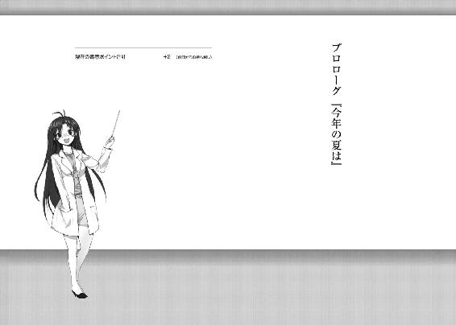
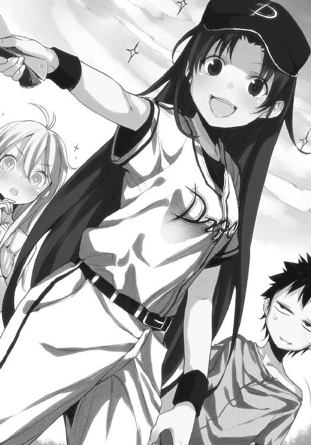
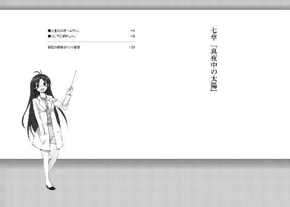
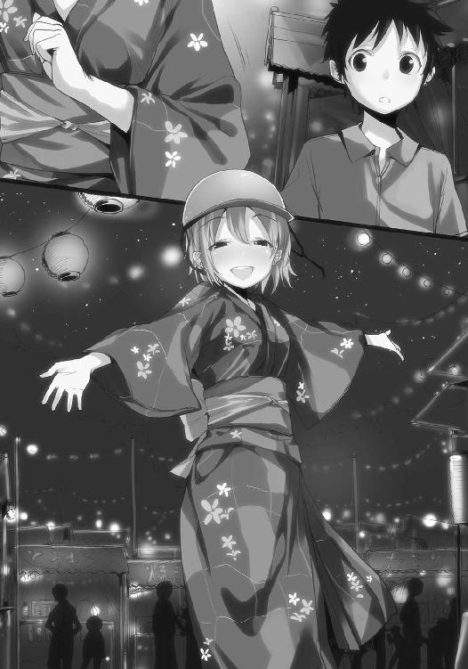

| 電波女と青春男(3)<電波女と青春男> (電撃文庫) | |
| 入間 人間 | |
| (2012) | |

本書（電子版）に掲載されているコンテンツ（ソフトウェア／プログラム／データ／情報を含む）の著作権およびその他の権利は、すべて株式会社アスキー・メディアワークスおよび正当な権利を有する第三者に帰属しています。
法律の定めがある場合または権利者の明示的な承諾がある場合を除き、これらのコンテンツを複製・転載、改変・編集、翻案・翻訳、放送・出版、公衆送信（送信可能化を含む）・再配信、販売・頒布、貸与等に使用することはできません。

何処の学校でも格別の解放感は変わらない。全国共通なんだろう。
そう考えると、一学期の終業式というのは学校生活で一番、心躍る行事なのかも知れない。良し悪しはともかく、期末試験の期間が過ぎてその結果も出て、心が飛び跳ねる枷は何一つ無いわけだし。個人的には修学旅行と双璧を成す高揚感だ。文化祭も、青春ポイントの観点からすれば学校行事の三本柱に十分数えうるのだが、いかんせん、この学校の取り組み姿勢がまだ明らかになっていない。熱心なのか、淡泊なのか。
残暑の尻尾が未練がましく振られている十月前半に毎年、文化祭が予定されているそうだからこうご期待、と締めて、あたりを見渡す。担任の挨拶が終わってざわつきに満ちた教室では、同級生の幾つかの輪が生まれてそれぞれ、お喋りに興じている。早々に教室を出た生徒は二割ぐらいで、残りは担任が去ってもまだ解放感を共有して、一種のお祭り状態になっている。
文化祭の準備期間の放課後に通ずるものがある雰囲気で、嫌いじゃない。青春ポイントの温床はそういった部分にあるのだから。去年までいた地元の学校は事務的というか、盛り上がることに羞恥心を覚える風潮が蔓延していたので、味気ない文化祭だった。屋台の種類も五つぐらいで、大抵の生徒は空き教室で寝転がって、だらだらと終了時間を待ち侘びていた。
出来れば今年は、少しぐらい結束して祭りを迎えたいものだ。
......全然締まらずに、空想が広がってしまったな。そろそろ、目の前の夏に目を向けよう。
さて。興奮冷めやらぬ教室にまだ滞在している俺、丹羽真はというと。
実は属しているのが、集団じゃなかったりする。
「いやー、夏休みだねー。ワクワクして昨日、あんまり寝られなかったの」
てへへのへ、と照れ笑いで例に漏れない興奮を語る普通っ子......もとい同級生はお馴染み、御船リュウシさん。教師の挨拶が終わってから、俺の席へてこてこと近寄ってきてくれたのでこうして、話の造花を机中にばらまいている。一学期終了記念ということで、この会話による１ポイント増加を認めたい気分だった。
教室の外、何処かの木で蝉たちが鳴き喚いている。これが子供の声だったら児童虐待だろう、絶対としかるべき場所に通報するけれど、実際のところ、蝉が相手でも別の意味合いで通報したくなる五月蠅さだった。リュウシさんはその蝉が気にならないのか、俺の対面の席で穏やかに微笑を崩さない。
「それでさー、にわ君。今日は携帯電話持ってきてる？」
リュウシさんが、俺の机に置いた鞄をごそごそ探って、自分の携帯電話を取り出す。見せびらかすように掲げた蛍光ピンクの長方形が昼前の光を反射して、目を眩ませてきた。
「持ってきてはいるよ、一応」
あまり着信音に出番の無い子ではあるが。口べただからかな、ハハハ（強がり）。いや、叔母さんから新妻を装ったような不可解なメールが届いたりすることは多分にあるんだけどね。
俺はあの人に関して、色々とカウントするのを放棄したい年頃と立場なのだ。
心中に、体外の暑さと裏腹な寂寥の風を吹かせながら携帯電話を用意した。それを確かめるように夏服リュウシさんが俺の手元を見つめて、「うむ」と頷いた。
「番号とアドレス、交換しましょー」
携帯電話と、デフォルメされて豚カツ屋のマスコットキャラにいそうな可愛らしい子豚のキーホルダー、もう一つぶら下がっているのは愛らしい......えー、ネズミ？ のストラップがリュウシさんの手と共に揺れる。後者のストラップについて詳細な描写を行うと世界最高峰の人気を誇るネズミさんに怒られそうなので、割愛。そしてそんなことはどうでもいい、大事なのは本体についてだ。
「しましょしましょ」当然、一も二もなく賛同した。
そういえば五月の頭に入院したとき、お見舞いに来たリュウシさんと電話番号を交換するはずだったんだけど、直前にナスの乱入に遭って有耶無耶になっていたのだった。
ちなみにナスとは、同級生の前川さんである。何を言っているか分からない人は各自で復習をお願いします。付け加えるなら彼女は団子になったりもするぞ。当事者でなければ、変身能力を持つ食い意地の張った妖怪タヌキにでも勘違いされそうな前川さんであった。
その前川さんは本日、体育館での集会中に貧血で倒れた。『なーに、夏場には良くあることさ』と保健室のベッドに運ばれた彼女は男前な台詞付きで笑い飛ばしたらしいけど、周囲はその虚弱ぶりに改めて驚くか、呆れるの二択を迫られるのであった。
「かちかち」と携帯電話のボタンを押す効果音を口ずさみながら、俺の提示した番号を押していくリュウシさん。押し終えて、二秒後ぐらいに俺の携帯電話が甲高く、味気ない電子音を鳴らし出した。液晶には未登録の、同級生で女子高生の電話番号が映る。眼福じゃ。
「うむうむ」鳴らしたリュウシさんもご満悦そうだ。
「なに？」
「どうやら、にわ君に嘘の番号は教えられていないようですな」
「げほ」その可愛さに噎せる一方で、誰が嘘などこの場面で吐くか、と思った。
こんな調子でメールアドレスも交換した。どうもリュウシさんの所有しているのは、赤外線に対応していない携帯電話らしい。リュウシさんからの初メールの内容は『夏休みも一緒に遊ぼうね』という、夏の始まりを盛り上げるに相応しい花火のサービスだった。
こちらとしては、これが社交辞令でないことを祈るばかりだ。
メール内容に精一杯の笑顔を返すことで応えて、それから宣言。
「よし、登録完了」
言った直後、リュウシさんがヒョイッと俺の携帯電話を摘み上げた。そして自分の登録名を確かめて、ニコッと弁当に箸を通す直前のような笑顔で液晶を指先ノックする。
「リュウコやっちゅーに」
かちかちー、とまた陽気な声を跳ねさせながら電話を操作して、ポイッと投げ返す。登録名がリュウ『コ』と強調含めて修正されていた。リュウシさんは一仕事終えたように「ふいー」と息を吐いて、滲んでいない額の汗を拭う動作を見せた。
うむ、なるほど。
「それでリュウシさん」「うぉーい、リュウコやっちゅーに」この反応が心地良い。「髪の毛、大分真っ直ぐになってるね」「......うー」指摘されるとリュウシさんは縮まった。鞄の端から出ていたプリントを抜き取り、それで防災頭巾かほっかむりみたいに髪をぐしぐしと覆い隠す。
「うぬぬ、見ちゃいやーん......はぁ。ゆーうつだ」
「別に真っ直ぐでもいいと思うけどなぁ」可愛いし、普通に。
「リュウコさん魂に反するのです。ノー真っ直ぐ。ノーリーズンにウェーブ最高」
「はぁ」女の子のお洒落に対するこだわりは当事者以外に理解しづらいけど、軽々と扱うことは出来ない。それぐらいの付き合い方は俺も学習していた。ただ、食に対する情熱は......うーん。テスト期間の放課後に一度、『気分転換ならまかせておきたマエ！』と連れられて行った野菜料理と果物を食べ放題の店は、受け入れづらい。値段に見合った分、料理を胃に詰め込むのが現代社会の食生活に染まった常人では、困難な部類に入るだろう。俺は無理だった。
プチトマトを三十個以上、易々と口に運んでご機嫌なリュウシさんを圏外の人みたいに眺めて、林檎を囓るので精一杯でした。
「あー、またパーマかけにいこっかなー。でも今、懐具合がオーストラリアなのですよ」
ぐえー、と冗談で机に突っ伏して、足も伸ばす。こんな可愛い潰れ方をするど根性リュウシさんなら幾らでもシャツに張りつけたいものだ、などと若干的外れな感想を抱いてその髪やら緩い笑顔を、愛想笑い混じりで観賞していたら、視界の端を通りがかるものがあった。首を慌てずに巡らす。急激な反応を見せたら、待ち人来たりとでも思われかねない。
前川さんが廊下から教室に入ってきた。保健室からの帰還である。顔色は青白い......のが普段通りだけど、今日は頬が熱っぽく蒸気していた。細身で氷柱のような全体像は、夏の熱気と蝉の声の中へ溶け去ってしまいそうな儚さが滲んでいた。
そして保健係の女子生徒の席を経由して、恐らく今回の礼を述べてから俺の席へ向かってきた。これで集団になる、のは構わないけどなんで俺のところへ来るんだろう。
リュウシさんや前川さんといつの間にか連むようになっていることが、一学期の最大の収穫かも知れないなぁ、と熱に浮かされた頭がぼんやりこの四ヶ月を纏めた。
「やーやー、教師の長話には前川さんと定評のある私が帰ってきたよ」
確かに、前川さんが倒れて保健室に運ばれた結果、集会の挨拶はなし崩しで終了した。生徒が暑さにやられて、その影響で他の生徒も体育館の籠もった熱気への不満を隠さなくなり、それでも我関せずとばかりに話を続けられる教師はあまりいないだろう。体裁というものがある。
「大丈夫？」
「まだ少し三半規管が本調子じゃないけど、なんとか」
報告通りに足下が少しおぼつかず、ぽーっと目の焦点が怪しい前川さんは、しかし緩んだ頬を柔らかく絞るようにしていつも俺に見せる不敵な笑顔を作り上げた。
「熱が身体に籠もりやすい体質らしくてね。サウナや長風呂が天敵なんだ」
活動的になれる季節があるのだろうか、この人。言われてみるとなるほど、前川さんは火照ったような肌でありながら、汗を零していない。機能が少ない旧式の、シンプルな家電を思い起こさせる簡潔さで前川さんは構成されているようだ。見た目と着飾る趣味以外は。
してみれば、前川さんの立派な身長は威嚇の為にあるのかも。攻撃的な色彩で他の動物に警戒を抱かせる蛇のように。今も俺の席の隣に立っているんだけど、威圧感が凄いし。
氾濫した濁流に呑み込まれる寸前の感覚だった。
一方、リュウシさんは突っ伏していた姿勢も正して笑顔を引っ込めている。むしろ、妙に膨れ面のような......目の錯覚だろうか。蜃気楼か天狗の仕業にでもしておくのが賢明な気もする。
「おや、二人とも電話を持って。新手の実験か、二人だけの儀式かい？」
宇宙人の町には、普通の発想が後回しという暗黙の掟でもあるのでしょうか。
「電話番号を交換したんだよ」出会った時期から少々遅れはしたけど。
「へぇ。じゃあ私も二人の番号を聞いておこうかな」
前川さんが自分の席から鞄を取ってきて、青色の携帯電話を掴み出す。身長の割に、手の平はそこまで幅広じゃないんだな、と比較物を手にしたことで気づく。ただ指先は長く、誰かの手首を握りしめれば銀色の手錠か、ブレスレットの代わりになりそうな美しさだった。
まずは俺の番号を教える。「語呂合わせの思いつきづらい番号だね」と感想を口走りながら、前川さんが登録、一度こちらへ電話の流れ。メアドも同様に。前川さんのメアドはいつかの夜に耳にした、コスプレネームが含まれていた。続いて「むー」と暑さにだらけるようにしている、緩慢なリュウシさんも前川さんと番号交換。何か不満なのかな、リュウシさん。
俺は一日に二人の女子の番号がアドレス帳に追加されて、今日限定ながら人生の勝利者めいた陶酔感を味わっているのだが。所謂一つの、『青春ポイント、ゲットだぜ！』なアレだ。
「そうだ、藤和は電話とか持っていないのかな」
前川さんが携帯電話を目的なく弄りながら、見下ろした俺に尋ねる。
「うんまぁ、多分ね」気に留めたこともない事柄を質問されて、歯切れ悪く答える。
電波は携帯していたみたいだけどな、などと即興の冗談は思いついたが口外しなかった。
「ふぅん、ないんだ」
リュウシさんが口を挟む。若干喜色を含んだ物言いに聞こえたのは、俺の鼓膜の調整が甘い所為だろうか。「っは！」リュウシさんが失言を察したように真顔になる。そして「今のなし！ 今のいやっ子リュウコさんなしで！ 過去よ吹っ飛べー！」ぶんぶんと、俺から上へ繋がる何かを断ち切るように、頭上で手を振ってきた。漫画の想像みたいに幾つかの綿飴的吹き出しがリュウシさんには見えているのだろうか。というか、今の俺は特に具体的なことを考えていなかったんだけど。
「リュウシも大変だね」
前川さんが悟ったというか、視野の広い傍観者の言葉でリュウシさんの様子を評価する。言い終えた後は下唇を軽く噛んで、必要以上の笑顔を避けるようにしていた。
「......リュウコやっちゅーに」お馴染みの訂正台詞も、今は精彩を欠いている。
「それともスポーツ少女だから、ライバルが手強いと燃えるのかな」
「にゃ、にゃにをー！ あー違う、にゃにがー！」
前川さんの揶揄めいた言葉に、リュウシさんがいきり立つ。ガタッと膝の裏で椅子を蹴り、前川さんに張り合うように背伸びして対峙する。足下がフラフラしていた、両方とも。前川さんったら地に足が着いているのに、ゆらゆら。
しかし、俺が口を挟みづらい話題で盛り上がっているような......そんな気がしてならない。どの口がそれを言うか、と返されるような雰囲気だった。
何にせよ置いてけぼりを喰らって、疎外感と共に再び蝉の声へ意識が傾き出す。仕方なく空想で間を持たせることにした。
リュウシさんのライバルを想像してみる。シリュウさんとか。バトル漫画に出演しそうな名前で、リュウシさんとは実力伯仲......じゃあ駄目なのかな、リュウシさんは補欠らしいから。
「あいつは強敵だぞー、赤木が河田に勝つぐらい難しいぞー、しかも夏休みだから側にいる時間が一気に偏るぞー、ワンサイドゲームになるぞー」
言い合いめいたものはまだ続いていた。前川さんが焚きつけているようにも見えるが。
「むー！ 前川さん、おねえさんをからかうとは何事なのかね！」
「おねえさん？ リュウシが？」むしろ妹だろう、と内心に秘めていそうな首の傾げ方。
「あたし、先月誕生日だったからもう十七歳だもん。前川さんは？」
「何を隠そう三月生まれ」
何故か前川さんは腰に手を当てて胸を張る。そしてリュウシさんも年齢で現在勝っていることが判明して、「ふふーん」と胸を張り返す。......柔よく剛を制す。リュウシさんが勝ってるなんて宇宙は不思議だなぁ、と発育の神秘に目を奪われた。何の測定かは察してください。
強いて一言で語るなら、夢です。この年頃の男子なら見ずにはいられない、健全な夢だ。
そして俺の誕生日は十月十日。まぁ関係ないけど。
二人の言い争いというか、じゃれ合いを観劇しながら、リュウシさんを宥め賺しつつそろそろ帰ろうぜと教室を出た。出る際、残っていた男子生徒にやっかみのような視線を向けられた気がしたけど、振り返らずに幾ばくかの優越感に浸って歩き続けた。
廊下は日溜まりという生易しい照光具合ではなくて、直火焼きに近い。窓の側を通り過ぎるだけで日焼けが進行して、ついでに髪が燃えそうだった。
思いっきり夏なので、その突き抜けた感じには好感を抱く。夏休みがある所為かも知れないけど、夏季の到来は他の季節よりも希望に溢れている。そこに漂う雰囲気は、心に訴えかけるものがある。人が一番、空の下を歩いて絵になる季節と思うのは勘違いだろうか。
下駄箱から出て外を歩く間、前川さんがまた地面に伏せるのではないかと心配になった。子供の頃からこの身体と付き合っていたなら、外で無邪気に遊ぶのも一苦労だっただろうな。プールにずっと浸らせておいた方が安全かも知れない。
そういえば、学校のプール。この学校は水泳部がないから、夏は他の部活の生徒に開放しているらしい。練習が終わってから水風呂代わりに一泳ぎして帰る生徒も多いとか（リュウシさん談）。男女はプールを縦半分に区切ってそれぞれの領域で泳ぎ、まるで風呂のようだ、とも説明を受けた。少なくとも男子がプールを利用する理由は、納涼以外にもありそうだ。
茹だる暑さから逃れるように自転車乗り場の屋根の下へ収まる。日陰に立つと、空気の焦げたような臭いが強まって、熱が乾く。温度が落ちないままなので、むしろ肌には不快だった。
自転車を引っ張り出してから、前川さんが肩を竦めてこんな宣言をする。
「残念だけど、今日は転校生と一緒に帰らないっていう用事や都合が出来たみたいなんだ」
ニヤニヤとこれ見よがしに、ヘルメット装着中のリュウシさんを見据えながら、遠回りかつ不明瞭な予定報告。まだ誰も一緒に帰るという約束はしていなかったのだが。
自称おねえさんはまた憤慨した。当人の怒り具合は推し量れないけど、端から眺めていると『ぷんすかぷんぷん』な怒り方で、むしろ和んだ。その騒々しさは不快どころか、頬が緩む。
あー、ほっぺ突きたい。魅惑的な横顔を覗きながら、拳を握って我慢した。
その後、前川さんとは校門を出てから道路の左右に別れた。方角としては『商店街』の側だ。この町は急速発展した都市部と、旧世代の町並みが集う商店街で微妙な隔たりが存在する、という説明を以前に誰かから受けた。感覚としては都会側の方が、商店街側を町の汚点として毛嫌いしている傾向がある、とも聞いた。前川さんは家が都会にありながら、両親は商店街で居酒屋を営む特異な立場だそうな。ちなみにリュウシさんは、思いっきり都会側。
道路の端をリュウシさんと二人で走り出す。カラカラと車輪の回る音。そして路面とすれ違う度、タイヤの焦げるような臭いが鼻の近くにまとわりつく。コンクリに蓄えられた熱気で実際、触れた部分が溶けているのかも知れない。
「夏休みが始まると、やっと夏が来たって実感も一緒に湧くよね」
「うん。それで始まるときは八月末までが長く感じるよなー。で、何もやらずにダラダラしているだけで、いつの間にか終わっていく」
毎年そうだった。精々、夏祭りに少し出かけるとか祖父母の住んでる田舎に帰るとか。何処か義務感のように足を運ぶだけで、自発的じゃない。学校生活で何気なく触れる、ポイント混じりの交流が断絶されて。青春ポイント観点からすれば、夏休みは干ばつ期だった。
今までは、の話になる予定だけど。今年は一味違うのだ、多分。
「あたしは部活とかあるよ。もーですね、一日中やることないぜ、っていう無趣味ちゃんとは一線を画しているバラエティーぶりですよ」
「だねぇ」恐らく部活以外を問われたら挙動不審になるんだろうなぁ。
「試合もあるしねー。今年はもしかしたら、リュウコさんにも出番あるかも」
「お、やったじゃん」バスケ部は選手交代が頻繁だから、ソフトボールや剣道の団体戦よりはあり得そうだ。「出られそうだったら、応援行くかも」そんな思いつきを口にしてみる。
途端、リュウシさんの自転車が描く車線は歪んだ。８の字を中途半端になぞるように前輪が不安定に道路を滑った。俺の応援の効能は不安定だ、と事前に示してくれたのだろうか。
「く、来るの？ あ、えー、来てくれるの？ 応援」
ヘルメットを被る深さを指で調整しながら、リュウシさんが上目遣いで窺ってくる。困惑よりどぎまぎに近そうで、まぁ嫌がられているわけではなさそうだと安心。俺が行って、リュウシさんの出番が無かったら申し訳ないとか考えているのかな。
「うんまぁ。けど会場があんまり遠かったら諦めるかも」
「うー......タイムリューコチャンデバンデバーン、ミッキーチェーンジ......う、うー」
妙に葛藤し出した。版権の危険そうな名前が飛び交っているけど、もしや試合で自分が出場する状況をシミュレートしているのだろうか。暫く黙って、結果が出るのを待った。
口を閉じて前を向くと、意識の外に追い出していた他の学生や、周辺の景色を目が捉える。周辺の、頑健そうな白い色合いの家。洗濯物が庭先で、微かな風に揺れた時だけ人の息吹を感じさせる。それが無ければそこには、生物が何も住んでいないように思えた。
道の脇を流れる小川には帰りがけの小学生たちが集って、何かを釣っている。ザリガニかな。俺が去年度まで暮らしていた地域には川の近くの泥を掘れば、何匹も生息していた。
「......ふむ」何となく、あの土地を思い返す。郷愁とまではいかないが。
あそこは平和な町だった。隣町は何年か前まで、色々と事件もあったみたいだけど。そういった事件の余波が届くこともなく、停滞し続けた。
味気ない世界で、だからだろうか。青春ポイントなんて求めだしたのは。そういう出土であるなら、地域振興に皆さん、青春ポイントカードでも発行して持ち歩くのはどうでしょう。
......無理か。頭が日に当たりすぎて、目眩を引き起こし、行き先を見失っている。
去年の夏と、暑さだけは変わらない。
逃げ場のない熱気。
外を走り続けていると、自前の汗で服が重くなったような錯覚さえ引き起こした。
「にわ君」と名前を呼ばれて、左を向く。リュウシさんがぎこちなかった。
「で、出番がありそうなのでよろしければお越し下さい」
「了解です」
その微妙に左の頬が引きつった表情を信頼することにしましょう。
「よーし、じゃあ......この話はいいや。それででですね」
パン、と拍手で話題を区切る。でも今、『で』が一個多くなかったか？
「にわ君はメールとかたくさんやり取りするの面倒派？」
メール......あ、携帯電話か。お互いやっと知ったわけだし。
「いや普通に嬉しい派」相手が素敵な同級生なら尚更。そして大供なら願い下げ。
「じゃあ、あたしがビシバシメルメルメールメっちゃう。それで、にわ君もあたしの携帯にバッチ来いですよ」
謎の単語も散見されたが、言いたいことは伝わってくる。ぽふぽふと拳の側面を当てた胸部は頼りないような、或いは豊かというか。或いはの使い方が間違っているかも知れないが、訂正はしない。リュウシさんの言葉同様、意味が伝われば言語としては完璧なのだ。
「おっけー、バシバシ......送るほど話題も無いけど、メールするよ」
「いやいやあたしを侮るなかれ。個性派で多趣味の話題バリバリだから、やばいよー、今年の夏はリュウコさんの価値探訪旅行で決まりだよもう」
その根拠なき自信満々な態度に、つい笑顔が浮かんだ。頑張る小動物を観賞したときの気分に近いのかも知れない。
これが来年だったら大学受験を控えて、暢気にこんな話もしていられないのかなぁ、とか鬼の笑う話で憂鬱がちらつく。それでも締めに、今年を楽しめばいいかと結論を出せた。
長く高く半円を描く橋の見える交差点の前で、リュウシさんと別れる。これはいつも通り。リュウシさんがこれから上る橋を眺めて「うぇ」と舌を一度出すのも、試験一週間前の、部活停止期間からお馴染み。
別れ際、一面の笑顔の花を咲き乱れさせて、線目になったリュウシさんが言った。
「楽しい夏休みにしようね、にわ君」
彼女の声は出会ったときから変わらず、俺に『春』を感じさせた。
「マコトちゅわーん！」
家に帰ると、いきなり楽しくなさそうなのに襲撃された。回避する。「ちゃーん！」迫り来る。飛び退く。「はーい！」自転車を盾にする。「ばーぶー！」暑さと連携してこっちの頭『も』やられそうになった。目前の四十歳は年間を通して脳が腐食しているようだが。
猛暑の中、自転車をこいできて更に家の前で立ち回りを要求される。どんな仕打ちだ。
一方、歳を考慮しない元気印の藤和女々さんが地面を力強く踏みしめながら、整えた指と共に手の平を突き出してくる。ノースリーブのシャツに短パンという、家の敷地内で過ごすこと前提の格好だった。歳を考えろ、と思わなくもない露出である。
「ぐわし！」
「そっちのまことちゃんかよ」しかも軽々と完成させている。侮り難し女々さん。
ぐわしを指先で決めたまま、じりじりと擦り寄ってくる。俺は当然、ずりずりと自転車ごと後退する。せっかく玄関前まで来たのに、また家の敷地外まで出てしまいそうだった。
だが、毎回叔母さんに抱きつかれてたまるか。『叔母にだけ』という限定が虚しさに拍車をかけるのだ。
「んもう、マコ君つめたーい。なんでそんなに冷え冷えとしてるのかしら。納涼したいの？ でも人間関係が肝試しなんて可哀想......うるうる」
文句なのか同情なのか、どっちにしてもお断りだが区切りは入れて欲しい。
「あのですね、女々さん」
「はーい？」可愛さを意識して首を傾げないように。
「出しゃばっているところ恐縮ですが、残念ながらあんたは先月に活躍しすぎたので今回は出番お休みです」
「な、なんだってー！」
人類滅亡を知ったときと天秤にかけられるような驚き方だった。いやでもねぇ。
双六のダイスで『６』を連続で五、六回出すようなインチキ臭い快進撃だったから、今回は牛歩の歩みで釣り合いを取るべきだ。この夏、出番があるなどと努々、期待しないように。
大体、他に魅力的な女子高生が豊富だというのに、それらを差し置いて四十歳の叔母が贔屓されるとはどういう算段なのだろう。世の中、不条理であって良いこと悪いことがあるだろう、とこの世の何かに苦情を投書したい......って、これでは俺の従妹みたいになってしまう。
そういえばその従妹こと藤和エリオは、今日どうしているのやら。
エリオと関連して、藤和家の二階を見上げようとした瞬間、女々さんから言葉の散弾銃が飛び出した。
「これじゃあマコ君と夏祭りを巡って幻想的な橙色に染まる夜道を連れ添ってうふふチョコバナナうふふ綿飴うふふ林檎飴うふふベビーカステラうふふタコ焼きうふふ味噌饅頭うふふ杏子飴うふふそして最後はむちゅー計画が頓挫！ むしろトンーザ！」
「壮大すぎるので、そういうのは寝言だけに収めてください」
そして食べてばっかりじゃねーか。その代金を俺に請求するつもりだろうか、この社会人。バイトもしていない高校生の甲斐性に何を期待するつもりなんだ。
......夏祭りねぇ。叶うなら『女の子』と屋台を巡りたいものだ。青春ポイントの奔流が待ち受けていることだろう。是非押し流されたい。
「.............................................」
今、その空想に耽ってみた。俺の隣を歩く女の子が誰だったかは......想像に任せるとして（ただし天地神明に誓うが女々さんという可能性は無いと断言）。
「えーい、こうなったらまた裏で色々して女々ちん感動悲話を再び！」
「いいから家の中で大人しく涼んでなさい」
「うきー」
世界一可愛いお猿さん（褒め言葉かはよーく吟味してみよう）みたいな鳴き声をあげて、冷房の備え付けられた部屋へ逃げ込んでいったと思われる女々さん。釘を刺しておかないと本当に出しゃばる行動力が備わっている大供さんなので油断ならない。
「あ、洗濯物取り込んどいてねー」
中からそんな指示が、『お帰りなさい』の代わりに置き去りにされた。どうもその為に玄関から出てきたみたいだけど、恐らく俺と遊ぶ（もしくは俺で遊ぶ）ことで面倒になったのだろう。「はーいはいはい」と投げやりに返事して、自転車の操縦桿（と言っていいのか？）を握り直した。ま、居候の身であるのは事実だから、それぐらいは受け持たないとな。
「っと」右ポケットの中身が震えている。電話が何かを受信したみたいだ。取り出して液晶を確かめると、そこに映るのは本名が半分不明の同級生。
交換したばかりの前川さん電話からのメールだった。早速だなぁ、と思いつつ内容閲覧。
『野球しようぜ！』
文面は件名入力の部分で言い尽くして、本文の方は空白に埋め尽くされていた。
「......なんで？」
俺の疑問に応えるように直後、電話が鳴った。前川さんからだった。出てみる。
「もしもし」
『メールは届いたかい？』
電話越しだとまた、声質に異なる印象を持つ。声が少し甲高くなっていた。
「届いたけど、それの確認？」
『転校生のメアドが合っているか試してみたんだよ。それで、質問だけど野球好き？』
「えっと......小学生の時に少し遊んでたぐらいで、テレビでもあまり見ないなぁ」
『そうか、いや別に初心者大歓迎なんだけど、草野球チームに入る気はないかと思ってね』
「......ふむ」自転車のベルを一度、指が鳴らした。「前川さん、スカウトでもやってるの？」
『私が関わるのは夏季限定だけどね。別に毎回、参加しなくてもいいんだ。人数が足りない日に朝、爽やかな汗を流すのはどうかと転校生を誘ってみただけさ』
「早朝野球ねぇ」
『単なる、ではないけどね』
「ん、どういう意味？」
『大事な物も含まれているってことさ。でも商店街の草野球チームが固定メンバー、六人しかいないんだよ。残り三人は助っ人制度を採用しているから。求む、現役高校児』
「球が間から抜けてる所為で、戦力外通告が飛び交いそうになってるね」
『で、どうだい？ 試合する前日に尋ねてみるだけで、嫌なら断ればいいよ』
「んー、まー......いいか。気が向いたら参加するよ。けど、思いっきり初心者だけど大丈夫？」
『構わないよ、助かる。勧誘ノルマが各自一人ずつなんだ』
「新入部員の勧誘みたいだな。でもさっき、学校で聞けば良かったんじゃ？ 忘れてたとか？」
『嫌だな転校生、リュウシが側にいるのにそんな提案するほど横着じゃないよ、私は』
「はぁ......」リュウシさんと野球の関連性が見出せないので、相づちがいい加減になる。
あっはっは、と煙に巻くような笑い声を残して前川さんとの通話は断たれた。あの人も大概、謎の生態だよな。この町では宇宙人度がエリオに次いで高い気もする。リュウシさんは普通の人、って印象が強いし。言うと慌てふためくか怒るけど。彼女のＮＧワードは無個性なのだ。
個性がありすぎるのも問題だと思うんだけどな、目立つし。俺の従妹みたいに。
玄関の前から左折して、自転車を格納する納屋へ向かう。
納屋の前には、天体望遠鏡を磨いている奴がいた。自分の部屋の隅で埃を被っていたそれを庭へ引っ張り出して、新品の雑巾で熱心に拭いている。そいつは足下のバケツに雑巾を突っ込んだ後、斜め後ろに立つ俺に気づいたのか、くるりと振り返って光を撒き散らした。
「よ」片手を軽く挙げて挨拶。まだ今日はバイトに行ってなかったのか。
「よ」真似された。今更、発音の練習をしているようにぎこちない声色だった。
藤和エリオである。さっきの四十歳の娘。職業は、フリーターか。
髪が青色一号でも投与されていそうな、透明感と神秘性に管理された水色。眼球も同様に、特殊な虹彩を持っているのか、ブルーアイとはまた異なる空色に輝いている。有り体に言うと、地球人らしからぬ色合いの奴なのだ。青白い粒子が全身から漂っているような美少女、ではあるのだがどうも、俺はその輝きや価値を真っ向から受け止めづらい。
第一印象の所為か、それともブランド物の硝子コップみたいにその容姿を分類しているのか。ついでに言うと、町での評判はすこぶる悪い。半分は本人の責任なのだが。
ぶかぶかの半袖シャツと丈の短いスカート穿きで肌の出具合は女々さんと大差ないのに、こちらは自然と受け入れられる。それは時間というものの残酷さなので、仕方ない。
ただこの親子、肌が日に焼けていないところはそっくりである。塩のような白さだ。
「今日は布団巻いてないんだな」冗談と皮肉を混ぜて言ってみた。
「ん」シュピッと中庭を指差す。ああ、愛用の布団が天日干し中なのか。
それからエリオは水鏡のようなその瞳でジーッと俺を見上げて、物言いたげな視線を外さない。両手はバケツに溜まった水の中をぐるぐると回って、水遊びしているみたいだった。
「仕事はどした？」
毎日、田村商店という駄菓子屋で店番をするのがエリオの当面の仕事だ。最近、日給が上がって五百円から、五百五十円になったと本人がこの間、大喜びで報告してきた。
「終わったら行く」
スタッカートの利いた喋り方は相変わらず、聞き取りやすいのに繋がった言葉としては認識し辛い。エリオは光線を投射しそうな目を、まだ俺に向け続けている。
「で......うーん、俺に何か用事か？」仕方ないのでこちらから振ってみた。
「ん」首肯した。エリオが雑巾を片手の指先で摘み、バケツから引き上げて、吸い込んだ水がぼたぼたと垂れ零れるのを眺める。そして望遠鏡の胴体を、余った手で指差した。
「望遠鏡」「分かるよ」「空」上空に手を掲げる。「あ、大体理解した」「ノート」地面に置いてあったやつを濡れたままの手で持ち上げる。
『記録用』と表紙に直角な字で書かれたノートをぱむぱむと叩いて、ご満悦そうに頷いた。
「夏休みに、天体観測する」
「ほぅ」やっぱり。まぁ望遠鏡とか用意してるし、察したけど。お前に夏休みの概念は失われているだろう、と指摘するのは無粋なのでその点は流した。
そして次の言葉を口にする直前、無表情を通していたエリオの顔に変化が表れた。
感情の内訳を詳細に把握出来ないが、例えると、遊んで欲しいのに素直に言えない子供が、お目当ての人の側で玩具を弄って、構って貰おうとする時の期待感が見え隠れしていた。
「イトコも、する？」
エリオの手がギュッと、雑巾を握りしめた。対戦ゲームの空いたコントローラーをこっちへ、様子見に放るように。
「よーするに、付き合えってこと？」
エリオはこくこく、待ってましたとばかりに二度顎を引いた。俺を連れ出す理由は、以前に海ならともかく、今回あるのだろうか。天体に興味があると語ったことも無いし。
理由かぁ......懐かれてるのかなぁ、俺。それ以前にエリオは他に友達もいないわけで。
「まぁ、いっか。そのとき暇だったら付き合う」
「......あ」
一瞬、エリオの周囲に舞う粒子が集って、光の尻尾を形成する錯覚に陥った。そしてその尻尾が左右に、子犬みたいに振られて、大気中へ残滓もなく拡散していった。
「歓迎」
「なんで歓迎して雑巾を差し出すという結論に行き着いた」
それで握手のつもりか。あれか、俺は汚れた雑巾で触れるのがお似合いか。
進呈は突っぱねておいた。エリオはそれでも珍しく無防備に笑顔となって、また望遠鏡を磨き出す。先程までより五割り増し、行動速度が加速していた。......何だかなぁ。
バスケの試合に、草野球に、天体観測。夏祭りのあれは軽やかに無視するとしても。
キャーマコトクンモテモテー......で、いいのかな。釈然としない。過ごす月日に自分以外の誰かがたくさん含まれている状況に慣れていない所為か、歓待より緊張が勝っていた。
「......まぁいいけどさ」
総括するように、そう呟いた。流されるような納得が、じんわりと溶けて、染みた。
何とかなるだろう、自分なりの物の形を整えながら。
納屋に入る寸前。
自転車のハンドルを握ったまま、空を見上げる。
自分の内側から意識の上半身だけが引き裂かれて、息苦しく世界へ溶ける感覚に襲われる。
入道雲も無い、水彩絵の具の薄青色を塗りたくった景色が眩い。
納屋の屋根に半分削り取られて、月のように半円を描く太陽に、しかめ面した。
この街に来て四ヶ月。季節は巡り、春から夏へ。
宇宙人の町も四季の順序は変わらない。住み慣れた地元から離れた初めての夏休みに、俺はどんな青春ポイントを見出すのだろう。
「何はともあれ、」
今年の夏は、草野球と天体観測で決まり！
......って、ほんとかよ。
ストライクかボールか、どうにも見分けがつかないのでバットを振ってみた。
低めのストレートに何とか合わせようと軌道を修正する。
結果思い切りの良い空振りはなかったが、芯を食った快音もなく、三塁線へのゴロ。三塁手であるリーマン風の眼鏡さんが転がるボールを丁寧に拾って、一塁へ軽やかに送球。
柄にもなく全力で走っていた俺は敢えなくアウトになる。残念、ここで俺の第二打席は終わってしまった。ヘルメットを脱ぎながら、てってってと緩い走り方で自軍ベンチに引き返す。
まぁ、こんなものだ。俺よりパン工房の助手の何とかさんでも引き抜いてきた方が、よっぽどチームに貢献するだろう。
......というわけで、夏休み開始から三日目。早速、草野球に参加していた。昨日、前川さんから誘われて物は試しと早朝、河川敷に出向いてみたわけである。
夏休みが始まってから二日間、日中にバッティングセンターに出かけてみたり、壁を相手にキャッチボールを密かに行っていたりしたのは秘密特訓なので内緒だ。
日の色がまだ薄い朝方なので、活動には適した時間帯。ラジオ体操の為に土手を、寝惚け眼で通りがかる小学生も見かける。こうして夏休みに早起きするのは正に、ラジオ体操が半ば強制だった頃以来なんだなぁ、と懐古が首をもたげてきた。
河川敷は石拾いや草むしりを怠っていないので、走りやすくなっている。川にボールが飛び込んでしまったらホームラン扱いらしいけど、外野から随分と離れた位置に流れているので、素人だらけの草野球ではまず誰も飛ばせないだろう。ファールラインに沿って、切れずに飛び続ければ奇跡的に川ポチャするかも知れないけど。
日光の照射角度が浅い時間帯とはいえ、運動を兼ねていると汗は頭皮に滲んだ。朝方は砂漠地方のような日差し絡みの暑さではなく、過ぎ去った梅雨の時期を肌に思い起こさせる。
ホームベースから右側のベンチに戻って、お疲れー、などとねぎらいの声を大人にかけられながら知り合いの前で立ち止まった。
「惜しかったね転校生」
ベンチの前川さんの隣に......とある理由で悩みながらも腰を下ろす。前川さんは野球自体に参加はしていない。曰く『女子マネージャーなのさ』だそうな。だったら相応の格好をしてくれよ、と切に願った。
「それは嫌みですか？」
「いやいや、当てられるだけで大したものだよ」
バサバサと横に振られる。何が、というのは後ほどまで明らかにしたくない。叶うなら最後まで気に留めず進行していきたいので、ここは前川さんを眼中に収めないまま、ぼんやりと正面のグラウンドを見つめた。
試合をしている相手は都会側の草野球チーム。こちらの商店街チームとは犬猿の仲なので両者白熱......もせず、両陣営共にだらだらと興じている。こっちが二点差をつけられて負けているけど、悔しがる大人も現れずに談笑が漏れ聞こえてくる。俺と前川さんを除けば、最年少が三十五歳というオジサンチームなので、勝敗には取り立ててこだわらないのかも知れない。
ユニフォーム等もなく、全員が私服だし。
「まだ始まって三日目だよ、悲観することないさ。本番は三週間後なんだ」と前川さんが笑っていたけど、何の話かは不明瞭だ。
それはさておき、相手の投手は女の子だ。同じく高校生みたいだけど、変わった投げ方をしてくる。左に腕を捻って、更に右に捻って８の字を描くようにしながら、最後は下手投げするのだ。ソフトボールの投げ方のようだが、俺は腕をぐるんと一回転させるやつしか知識にないので、本当のところは不明。ただタイミングが凄く取りづらくて、バットを振るのが遅れてしまう。
だから一打席目の三振の経験を踏まえて、気持ち早めにスイングしてみたけど結果はゴロに終わった。少なくとも、バッティングセンターに行って遊びで打っていた時速百キロの速球より、女の子の球は手強そうだ。ついでに何故か制服着用しているのも、別の意味でオジサンとかには強敵のようだ。スカートの捲れ具合とかね。俺はそちらよりも、無理に駆り出されましたって感じの気怠い表情で、目を擦りながら投球している姿が印象深かった。いや本当だってば。でも、夏服の女の子が野球に興じているのは絵になるなぁ、と眺めてはみる。
「あの女の子って学校は一緒だよな」制服から判断して。
「そうだよ。うちの学校のソフトボール部で部長の......名前がうろ覚えだね、何しろ一年前の仮入部のときに顔を合わせただけだから。確か、花......沢だよ」
険しい目線で、マウンド上の女の子を見据えながら説明する割に、語尾があやふやだった。
「......それ、自分の格好から連想しなかった？」
「如何にも」
「.............................................」無視するのも限界だったので触れてみるけど。
本日の前川さんは魚の着ぐるみに身を包まれている。
巨大な口の部分から顔を覗かせているので、端から見て、丸呑みの最中みたいだ。
最初、河川敷に来てその姿を見かけたときは思わず、魚屋のオジサンに『これどうですか』と勧めてやりたくなったものだ。商店街絡みの人や相手チームも前川さんには特別の意識を向けていないから、見慣れているみたいだけど。プロ野球チームのマスコット扱いでもされているのだろうか。
ただ、別の理由で一対の視線が俺たちに突き刺さっているみたいなのだが......前川さんが何食わぬ顔をしているので、俺も気づかないフリで流されることにした。
「その格好なに？」
「カツオ」
「.............................................」殊更指摘するまい。だって俺は中島じゃないから。
横ヒレの部分に手が入っているらしく、バタバタ振り回しているけど見なかったことにした。
こんな人だが、学業に関しては俺やリュウシさんより優秀であることが一学期の試験で判明した。体育のスポーツテストでも学校の歴史に残る記録を樹立したけど、悪い意味で。
「一本釣り仕様だよ」
「違いが分からない」そもそも、他の仕様が何かも見当つかない。
「この野球は楽しいかい？」
「微妙かな。前にここで野球しているのを見たとき、打席に立っていた浴衣の女の子よりは楽しめてない気がする」あの子は全身で野球の醍醐味を味わっていたように感じられた。
「女の子......ね」
口の奥に潜む顔がニヒルに笑った。カツオの無機質で、何処を見定めているか不明の眼球と相まってシュール極まりない。
花沢さん（仮）の右手から投じられた白球は、三番打者（俺は二番）の......山本さん、だったかな。六月に浜辺で出会ったロケット中年（助っ人その二、焼鳥屋のオジサンに連れてこられた）の握るバットとすれ違って、捕手のミットと軽快なタッチを交わした。四回裏、三番でスリーアウト。つまり出塁はここまで無し。
「こうたーい、っと。守備も頑張っておいで」
バサバサ、ヒレがベンチからの出動を煽ってくる。これで川には不釣り合いな魚介類の格好（と言っても若鮎で来いとかそういう意味ではなく）を止めて、ユニフォームでも着て腕を組みながらベンチに座れば、美人女監督の佇まいも発揮できるだろうに。
勿体ないような、いやでもこれが前川さんらしさなのか、と納得しだしている面もあって、懊悩とする。猥雑とした思考を纏めないまま、前川さんから借りたグラブを持ってベンチから立ち上がった。
「俺には期待しないでくれよ、守る方は本当に未経験だし」
「あはは、転校生は卑屈だね。テレビに出演する超能力者を頭から否定して、液晶に向かって一方的に論破するのが好みな性格と見た」
一を知って好き勝手に十を語られた。せめて謙虚と評して欲しかったんだけど。もしくは、身の程を弁えているとか。俺は自分の未知なる能力とかを盲信出来ない性格で、ここまでそれなりに上手くやってきたのだから。だから、出会った当初のエリオを......は、まぁいいとして。
テレビの下りは、独り言を漏らさないという常識を踏まえてはいるものの、概ね正解なので内心、驚いていた。前川さんの人間観察能力は侮れない。それなら自分を見つめ直せよと思わないでもないが。
内野まで小走りで駆けて、一塁に立つ。実は一番、受け持ちたくないポジションだった。何しろ、ボールを受ける機会が必然、多くなるから。キャッチボールも大して経験のない俺がいつボールを取りこぼして、後ろへ転がしてしまうか不安で仕方なかった。
幸い、送球を何とかグラブに収めることだけは出来て、目立ったミスはここまでない。
バッチ来ーいとグラブを叩きながら、このまま無難に終わるのを待った。色々な意味で。
前回から引き続いて五回表のマウンドに立つのは、前川さんの『ダディ』らしい。先程、ベンチで娘の隣に座る俺へ熱く粘着な視線を投げかけていたのは状況と相手からして、この人以外に思い当たらない。試合が始まる前に、前川さんが他のメンバーへ『友達の転校生。名前は、えー、しわ君』にわ君やっちゅーに。その俺が三十歳老けそうな誤答はいいとして、娘が連れてきて紹介した友達を見るお父さんの驚愕ぶりは、明らかに『ただのお友達』と受け止めている様子が無かった。
顎も外れそうになっていたし。俺がどう反応していいか定めきれずに、へらへらと愛想笑いに出続けたのも誤解の拍車の原因かも知れない。その姿がまるで、『彼女の父親を思わぬ場面で唐突に紹介された彼氏』みたいではないか、と後で振り返って失敗に頭を抱えたくなった。
お父さんの脳内では『友達→男友達→ゴニョゴニョ』と何とかモンスターの三段進化ばりに誤認を進行させている可能性が否めない。
その影響か知らないが、本日の前川父の投球は荒れている。逆に危険球が増えている所為で相手が打ちづらいのか、点差が広がらないのは何処か滑稽だった。無言のまま、ベンチで観察され続けている俺からすれば笑い話では無いのだが。
当の前川さんは、父の存在を気にも留めずに、足に着けたヒレでビシバシと地面を蹴っている。俺と目が合って、元々鋭い目が更に細められた。着ぐるみの影で表情の変化を読み取りづらいが、どうやら笑ってくれたようだ。笑い返して、小さくグラブ付きの左手を振った。
バットを一度も振らずに四球で出塁してきた男子が、一塁に着いてヘルメットを脱ぎ、帽子を被る。俺の顔を覗き込むように一瞥して、頬を屈託無く緩めた。
相手チームも高校生風の参加者は花沢さんと、この男子だけだった。男子は金髪で、気の良いお兄さん風の顔立ちをしている。人懐っこい雰囲気があった。
その所為だろうか。敵チームに所属する俺に気安く話しかけてきても、不快や驚きが芽生えなかったのは。
「知ってるか？」面識が今まで無かった男子は気さくに、俺に疑問系の第一声を放つ。
「何が？」視線を打者の方に向けたまま、疑問の正体に説明を求める。
「うちのチームのピッチャーさ」
「うん」花沢さんね。
「投げるときに左打席に立ってると、スカートの中が見えるぜ」
「......マジで？」振り向かざるを得なかった。
「嘘だよ」
余裕綽々、飄々とした態度を演じて冗談の種明かしを行う。
......ああ、儀式か。
友達であるとか気軽に話せる相手であるとか。そういった態度を共有する為の、学生ならではのやり取り。相手の領域に一歩踏み込むという合図を送られたわけだ。
承って、こっちも相好を崩した。男友達から得られる青春もたくさんあるのです。
「オレ、中島。そっちは？」
あ、いた。中島いた。敵チームではあるけど素敵な配役との巡り会いによって、妙な充実感が胸に広がる。そんな俺の態度が豊壌なる無言から来るものとは当然露知らず、眼鏡をかけていない中島は反応がないことに首を傾げた。慌てて名乗り返す。
「丹羽真」磯野と嘯きたかったが、カツオは既にいるのでグッと我慢した。
「あ、やっぱり。転校生だろ」
「ってことは、同じ学校？」
「そゆこと。クラスは別だけどね」
中島が「よろしく」と親和に溢れた右手を差し伸べてきたので、試合の守備中にも関わらず握手を交わした。確か、プロ野球の規定には相手選手と試合中に仲良くしては駄目だというのがあった気もする。いや漫画で少し読んだような......なかったかな？ そんなことを思い出しながら、お互いに汗の予兆で滑った手の平を触れ合わせた。中島の方が指は短かったけど、手の平が広かった。
しかし、俺は転校してきた一学期が終了しても同級生の間でまだ、『転校生』の認識が継続してるんだな。知れ渡っていることやその消費期限に対して、かなり意外な感じを覚えた。
俺の転校が、そこまで学校を揺るがす大事件なはずもないのに。ただ、中学までならともかく、高校での転校は少し珍しいかも知れない。それに事件となる火種を実は、隠し持っている。
藤和エリオ。関係が公になれば、教室で再燃しかねない。学校での情報伝達は、例えと同じく炎に似ているのだ。あっという間に広がって、逃げ場を失う。
......それも仕方ない、と決意自体はあるのだが。想像相手に、身構えてしまう。
「転校生は、何でこれに参加してるん？」
方言混じりで、俺がここに立っている理由を尋ねてきた。前川父のぎこちない投球フォームから放られた白球がストライクを獲得するのを見届けてから、口をまた開く。
「前川さんに誘われて、何となく」
「あー、仲良いんだ」
下世話な好奇心を品良く顔に塗りたくって、俺と前川さんの関係を邪推してくる。止めて欲しい、鋭敏になっているであろう前川父の耳に入ったら逆恨みに発展しかねない。
「でも転校生ってさ、」「ん？」「ああいや......いいや。変わった趣味の子が好きなんだなって」
「俺に魚介類へ性的愛情を抱く偏向性癖は無い」
深海魚ラブだが、あれは美術品を愛でる感覚に近い。......それも酷いのかな、相手は生き物だし。感情の定義とか、矛先の形は幾ら考えても解答が出てこないのが辛い。
自分の首の裏側を確認しようとする行為に似て、もどかしさばかりが募る。
「いや、ああいう趣味を許容出来る器量がモテる秘訣ですかね、先生」
「誰も認めてないのだが......そっちこそ、女性人気のありそうなお顔立ちであやかりたいものですよ」
皮肉を返すと、中島は「たはは」と何故か気まずそうに笑った。触れてはいけない項目だったのかな。顔に欠陥を感じているとか......男子勢の大半から石を投げられかねないぞ。
「商店街の方に住んでるんだよな、そっちに参加してるなら」
中島が落ち着いた物腰で、話題を変えてきた。前川父の第三球がすっぽ抜けて、捕手がてんやわんやしているのを眺めながら、俺は「どうなんだろ」と曖昧に答える。
「住んでいる地域としては、都市部の方だと思うけど」
「けど？」
藤和家は田村のお婆さんを全面的に味方するだろうし。でも俺は、藤和家の一員か？
『まーマコ君ったら水臭いし照れ臭いのね叔母さんをお嬢さんと呼び間違えるほど恋い慕っているそのお目々ぐらい心も正直になって藤和真となるのよ！ 婿養子イエス！』
幻聴うるさい。創作の文章なのにフルボイスで心に響くのが無駄に鬱陶しい。
それと商店街の方に、都市部の方か。
この際だから、客観的に返事をしてくれそうな奴に質問してみよう。
「この町はさ、住んでる地域同士の対立って結構あったりする？」少し気になっていた。
「まちまち。強く意識している奴もいるけど、どうでもいい奴も多い」
オレは多分、後者。中島はそう付け足して肩を竦めた。「でも学校で、それが原因で苛められてる奴もいるからなぁ」そう話す中島の口調は、別の国の内紛を語るときぐらい悲痛さが欠けて、現実味の乏しさを示すものだった。俺も今は関係ないので、「へぇ」と流した。
それぞれの集団に苛めの発生しない社会が作られたら、人類の繁栄は三万年ぐらい延びそうな気もする。それとも苛めというはけ口があるから、色々成立してるのかな。
「あと、顕著なのは町内行事の仕切りとか。特にこの時期は険悪」
「ふむ？」
「夏祭りの関係で荒れるんだ、毎年」
だからこその野球だ、と中島は思わせぶりに呟いた。それの意味するところは、俺一人で解き明かすのが困難だから結論は先延ばしにするとして、夏祭り。夢見る青春。同伴のお相手候補は......三人？ エリオが含まれている。咄嗟の思考で嘘を挟む余地がないとしたら、これは由々しき事態だ。別に問題ないんじゃない？ と囁く声は一貫無視して、マズがる。駄目だろう、何となく。微妙な線で、エリオは受け入れてはいけないのだ。
色々な事情や思いを含めて。
何かを認めたがらない心を尊重し、青春ポイントの減退を懸けてでも抗う。
そんな無駄な抵抗をしてみた。
前川さんが夏祭りに、素直に浴衣を着てくる確率を検討する方が無益かも知れないが。
「あー、あのな」
まだ一塁から離れられない中島が、遠慮がちに声をかけてきた。
「うん？」
「オレって、ぎこちないよな」
「ぎこちない......ああ、まぁ」余所余所しさに近いものは含まれているな。
「実は、転校生と少し踏み込んだ話を始めたら、絶対に空気が微妙になると思うからさ」
でも、声をかけてみたかった。中島はまるで素直になれない乙女のように行動の動機や態度の理由を説明してきた。止めてよ。
この空気は初対面故のものだと判断していたけど、別の理由があるようだ。
「何か俺に言いたいことがあったり？」まさか前川さん狙いとか。
「気にするな。袖擦り合う縁を見て見ぬふりするのも選択の醍醐味なのだ」
中島は眩しいものを見上げるように、細めた瞳と首を周辺に巡らせた。
「うちのピッチャー、打ちづらいだろ」
全く関連性が無さそうな話に、また話題が転がった。サイコロを転がす権利は俺に無いのか。
「俺じゃあ絶対打てない」
そう正直に諦めを吐くと、中島は意図が掴めない笑顔を振りまきながら二塁に駆け出していった。何事だ、と呆然と目で追ったが何のことはない、盗塁だった。しかも刺された。
捕手の花屋のオジサンは右肩の快挙に大喜びしている。盗塁を阻止なんて、草野球では珍しいかもな。今にも前川父と抱きついて、ゲームセットの雰囲気を醸しかねない。
そもそも、盗塁は禁止されていない草野球なのかな。まぁ『ファール五回でアウト』とか小学生の野球ルールが普通に存在する試合だからな、その自由度は推して知るべしか。
中島が照れ笑いを、主に俺へ向けながらベンチへ引き上げていく。反応に困る向き合い方だったので、取り敢えず愛想笑いでごまかした。
「......はぁ」本格的に上りだした夏の日を仰いで、溜息。
というわけで、野球だった。
汗も涙も甲子園の土も縁遠い、泥臭い雰囲気での集団競技。
俺の夏休みの日常に組み込まれるかは、今のところ未定だ。
試合はこの草野球のルールにより六回裏で終了を迎えた。結果は３─０でこっちの完封負け。
零封と呼べばいいのだろうか。ランナーも出なかったので、パーフェクトゲーム達成。
花沢さんは億劫そうな顔つきのままで、その結果に飛び跳ねることもなかった。
一方の俺は、打撃の成果はともかく、守備についてオジサン方に褒められて......どんな笑い方だったかな、愛想と苦みが半々ぐらいで、ぎこちなかったかも知れない。
後はグラウンドで適当に礼をして、本日は解散となる......はずが、負けたチームがグラウンド整備をするのが通例らしくて、まだ解散には早かった。チームのオジサン曰く、『俺たち、野球より掃除の方が上達早いよなぁ』とのこと。つまり、負けっ放しってことか。
中島は荷物を纏めて河川敷から去る前に、「じゃあな」と近寄って挨拶してきた。「じゃ」と短く応対したのを見届け、中島はそそくさと自転車のもとへ駆け出していった。ここに長く留まると困る事情でもあるのだろうか。そもそも、俺に話しかけてきた動機も定かじゃないし。
それからトンボでグラウンド整備中、同じチームのロケット中年が側に来て話しかけてきた。山本さんである。女々さんがそう呼んでいたけど、果たして本名なのだろうか。
「やぁ。きみは、藤和女々の家に住んでる少年だよな」
「ええ」宇宙ストーカーで前川さんのファンに加えて、女々さんの知り合いとは盛り沢山の素性である、ただし何が詰まっているかの言及は控えたい。
「女々は元気かい？」
「四十歳の叔母さんが五、六歳の女の子みたいに騒ぎ立てることを、元気という言葉だけで片付けていいなら良好でしょうね」
食事内容は俺やエリオと似たり寄ったりのはずなのに、どれだけ燃費良いんだあの人。他人から吸い取った精気でも薪の代わりにくべているとしか思えない。
「俺のこと、何か話したりしてないかな」
期待と不安のせめぎ合う表情で尋ねてきた。おいおい、もしやこの中年は。
「いや、無いですね」
あの人が俺にまとわりついてべらべら喋るのを半分ぐらい聞き流しているので、もしかしたらその中に山本さんの話題もあるのかも知れないが、出所の怪しい期待は掲示しないことにした。山本さんはあからさまに落胆して、「そっか」と肩を落とす。それで確証が持てた。
まさか女々さん一筋とは......年齢的には釣り合うし、四十歳にしては容姿が若々しいことも認めるけど......まぁ、いいや。人の恋路を否定するのも無粋。ぼくのおばさんモテモテだー。
ただ、この中年が女々さんとくっついて、藤和家の食卓に座る様子は想像出来なかった。
山本さんが夏の陽炎のように揺らめいた足取りで俺から離れて、石拾いに従事する。更に俺に忍び寄る......足音は無いけど、気配があった。ここに来て、既に慣れた感覚。でも無視した。俺との関係性なんて、娘に直接問いただして頂きたい。
整備が終了して、試合中より噴き出た汗を腕で拭いながらグラウンドを離れる。まだ前川さんが座っていたから、帰る前に挨拶するつもりでベンチに立ち寄った。
「お疲れ、転校生」
労いの言葉をかけながら前川さんが、ラップに包まれた三角形状のものを三つ、ヒレに載せて俺に差し出してきた。
「なにこれ」
「おにぎり」
「いや分かるけど」
「転校生の朝ご飯用に作ってきたんだよ」
「おー」草野球に参加することの特典に、穏やかに感動する。
同級生からの手作り朝ご飯とな。渇望してもそうそう、得られるものじゃないぞ。
ビジュアル的には、助けたイルカに真珠を貰う気分だが。前川父の目が厳しくなることを予想しつつもありがたく頂戴して、ラップを外した。ついでに前川さんの隣に腰かける。
野球の後に、同級生の、いや自称マネージャー手作りのおにぎりを食べる。斬新ではないけど、安定した青春的展開である。＋２は見込めるだろう。
お父さんの監視の目を気にしながら、という状況も場合によっては好転に働くかも知れない。共有した悪戯を、大人の目を盗んで楽しむ感覚が湧く。
一つめのおにぎりは、まず中に包まれた具のタレが甘かった。
「あ、うなぎが入ってる」
「店の余り物だけどね」
「久しぶりに食べるよ」美味い。「こっちだとえーと、何て言ったかな。うなぎの料理で」「ひつまぶし？」「そうそう、有名らしいね」「最近だと全国、どこでも食べられる気がするけどね」
「はい」と食べ具合を見計らって、横から水筒を渡してくれる。ヒレ経由なことを除けば至れり尽くせりだった。「サンキュです」と受け取って、冷たいお茶をコップに注いでから飲み干す。いやー、グラウンド整備の後のお茶は美味いものだ。ところで俺、何しに来たんだっけ。
「でもなんでおにぎり作ってきてくれたのかな」
「頑張った転校生へのご褒美。ライース」
「頑張ったって、嫌みですか。ボール転がしただけじゃん」
「違うよ、前に転がしたんだ」
「まぁ後ろだったらファールだし」
「そういう意味じゃないよ、転校生は素直じゃないな」
瞼を柔らかく瞑りながら、前川さんは保護者のように笑顔で俺を包む雰囲気。これが死んだ目をしたカツオの奥底で生ずるものでなければ、もっと価値あるものになるだろうに。
前川さんらしいとも言えるけど。
ポケットの中身が震えて、くぐもった電子音が鳴る。「おっと、メール」「リュウシからと見た」「内緒」恐らく大正解だけど。
残った一個目のおにぎりを全て口に含んでから、ポケットに入れっぱなしだった携帯電話を取り出す。今日も朝から来そうだ、と予期していたから携帯してきてみた。試合の守備につく時も手放さずに、横っ飛びとかする場面があったらどうするつもりだったんだ。自分のことながら、他人事風に疑問視を向けてしまう。
三日で三十通ほど、受信ボックスに積まれたリュウシさんからのメール。前言通り、自重せずにメールは送られてきて俺の携帯電話は旬を迎えた果物か野菜のように、手に取る機会が急増することになった。メールの文面を開いてみる。
『おっはよー。にわ君起きてた？ 寝てたらごめんね、あたしは今起きたよー』
他愛なく、でも可愛らしい内容だった。健全なメール。女々さんの『きゅいっぱー』が全文という抽象的すぎる内容とは比べ物にならない。
ついでに時刻を確かめると、今は午前八時過ぎだった。以前のメールも含めると、リュウシさんは休日、大体この時間帯に起床することが分かる。
リュウシさんのメールには絵文字がほとんど含まれていない。理由は『みんな使ってるから普通になっちゃうじゃんよー。個性ハンターリュウコさんとしてはそれが許し難いのです』
他の女子高生に置いてきぼりにされているだけじゃないのかな、と言及出来るほど俺に度胸は無かった。少し唸ってから、『もう起きてた、おはよう』と無難に返信しておく。「面白くない内容だね」「おわっ」横から覗き込んでいた魚にエンタメ部分を否定された。
「もっとリュウシを抱腹絶倒させる文面に改変する気はないのかい？」
「少し凝った文章を返すと、リュウシさんが張り合おうとして熱暴走起こすから」
これは本当。二日前に、リュウシさんの睡眠時間を四時間近く奪いました。
その話を聞いてか、前川さんは可笑しそうに頬をほころばせる。
「まぁ、リュウシに秀逸な台詞を期待するのは難しいか」
何気に酷いことを言っている。二個目のおにぎりに手を伸ばしつつ、質問してみた。
「前川さんはリュウシさんとメールとかしてるの？」
「いや全然。リュウシが一通も送信してくれないんだよ、私には」
「へぇ......ん？」
前川父とは異なる雰囲気の視線を感じた。顔を上げると、まだ帰っていなかった花沢さんが少し離れた位置から、俺を凝視している。いや視線を正確に追うと、俺の手元のおにぎりに着目しているようだ。『おにぎりくれ』。その目線が訴えているものを読み取ると、この六文字に集約されそうだ。目線があった影響か、花沢さんの足が一歩、こちらへ歩み寄る。
童話とか昔話なら、ここでおにぎりをお裾分けすると後で福が訪れるところだけど。
前川さんの顔色を窺う。既に察しているらしく、返事は早かった。
「転校生にあげたものだから、譲渡も保有もそちらに一任するよ」
「うーむ」丸投げされた。せっかくの前川さんおにぎりを人に譲るのもどうか。
ただ、俺はこの後に藤和家へ帰ると、女々さんの作った朝食も待っているのだ。食卓に着くのを拒否したら、年甲斐という言葉を封殺して駄々っ子風に暴れるだろう。もしくは俺の母親に電話して『マコ君が反抗期なのよ、叔母さんマニアの癖に思春期の欲望を我慢するから無理が祟って思春期的に抑圧で歪んで叔母さんの匂いを......ヒィィー！』幻聴が絶好調だった。
藤和家では終生、一介の匂いフェチとして扱われそうだ。気分に暗雲が立ちこめる。いやでも生涯と言っても、高校を卒業するまで世話になるだけで、その後は......両親が帰ってきて。また一緒に暮らし出すわけだから、この土地も離れることになる。引っ越しのとき、俺はそれを惜しむのだろうか。現時点での心境は......嫌ではあるけど決定に抗わない、って感じだ。
俺は大概、その姿勢で物事を越えてきた気がする。
閑話休題。
そういうわけで控える朝食の関係上、おにぎりは二個が限界だろう。食べ盛りと言っても、運動部所属で筋肉隆々というわけでもない。この量でも結構な無理をしているぐらいだ。
三つ目のおにぎりを掲げながら、手招き。花沢さんは警戒するように遠回りな足取りで、正面ではなく右側から近づいてきた。意味があるかは、本人のみぞ知る。
間近で見ると、見た目は花沢さんというよりマコトって感じだ。俺のそっくりさんという意味じゃなくて、時を駆けたりしそうなショートカットと、鳶色の髪、そして制服を着て野球に興じている姿がそれを連想させた。俺や前川さんとは比較にならないほど日焼けしている。
「いいの？」
水面を連想させる、清涼な小声で俺の意向を確認してくる。口の中の米を噛むついでに顎を引いた。差し出すおにぎりの具が何であるかは気になるところだが。
そして目の前の女子は、仮名の割に強引な性格ではないようだ。
「どうぞ花沢さん」つい本名を把握しないままに呼んでしまった。
「ありがとう磯野君」
即答してきた。順応性が高い模様。そしてカツオは隣である。じゃあ俺は何だろう。あの面長の......名前が出てこない、けど偶に画面に映る同級生でいいか。
「お礼は隣の彼女に」
俺は物流を中継しただけだ。花沢さんはおにぎりを包むラップの端を指で摘みながら、前川さんにぺこりと頭を下げた。
「前川、サンキュ」
「いいよ。それより制服ってことは」「うん。これから部活の朝練」「大変だねぇ」
しみじみと前川さんが同情すると、花沢さんは萎れた表情を更に俯かせる。
「やっぱり嫌そうな顔してる？」
「とっても」前川さんは遠慮なく頷く。花沢さんはそれを眺めて儚げに苦笑しながら、俺へ視線を移した。それから説明するように言う。
「部活動、嫌いじゃないけど辛いの」
「ふぅん......」最低限の反応を見せつつ、おにぎりを頬張る。今度の中身はナスの漬け物だ。
先程の甘辛いタレと対照的な所為で一層、塩味が舌の上で猛威を振るった。
花沢さんもおにぎりにかぶりついて、小口で咀嚼しながら俺を見下ろす。制服の袖が時々捲れ上がって、日焼けの線がくっきり肌に浮かんでいるのが目に映る。その白と茶色のコントラストに、形容しがたい魅力を覚える俺は異端だろうか。
「味はどうだい？」
前川さんが花沢さんに感想を求める。「前川の家に嫁入りしたくなるぐらい美味しい」「うーん、前川家の内情からするに、父親が離婚しないと無理そうだね」
真剣に検討するような口ぶりだった。
花沢さんが三口目に移るのを取り止め、別の用途の為に口を開き直す。
「あなた、前川の彼氏？」
ぐほっ。
「あははは。だってさ、転校生」
朗らかに受け止めている場合か。こっちは白米と、中身のナスの漬け物が喉に詰まりかけたぞ。俺は魚類とつがいになることに違和感を持たれない人間だったのか......という驚嘆ではなく。
胸元につっかえる米の塊に辟易しながらも、周囲を警戒する。前川父が近辺にいれば、逆鱗に触れてもおかしくない会話だったからな......ああ、遠くにいた。良かった。
「これはもう、転校生が鯖の着ぐるみに身を包む日も間近と見た」
一方、娘の方は自作の冗談を味わって暢気なものである。
「バカップルとは別ベクトルで最悪のペアルックだよ」
「違うの？ それに転校生ってうちの学校の......ん、隣のクラス......」目が泳ぐ。「あ、知ってるや。海へ入水自殺した転校生」
指差されながら、自殺志願者扱いされた。「はぁ？」と首を傾げかけたが、海、という場所まで指定されていることに気づいて、思い当たる節があった。
ひょっとして、Ｅ．Ｔ．に挑戦した四月末のことを言われているのではないか。
エリオと錆びた自転車で海に飛び込んだ日。あれが、そんな形で学校の噂として広まっていたのか。転校生という立場の下地が消えない内にそんな刷り込みが加わったというなら、初対面の俺に接する中島の態度にも合点がいくというものだ。
そういえば、見舞いに来たリュウシさんも俺を説得するように自殺云々と話していたなぁ。これは頂けない。俺がリュウシさんと放課後に買い食いしたり、前川さんに引っ張り回されたり、エリオとお代官様ごっこしたり（ぐるぐる巻きの布団を剥ぐ）女々さんをあしらっている間に、校内で自殺野郎としての風評を高めていたとは。暢気にも程がある。
エリオと一緒に飛び込んだ、という事実が抜け落ちているのは幸いかも知れないけど。でも、その部分を省いたら本当に自殺を演出したようにしか受け取れないわけだよな。
花沢さんは土手を走る自転車を目で追って、「あ、時間」と憂鬱そうに呟いた。「ありがとう」と掲げたおにぎりの礼を俺と前川さん、両方に述べながら小走りで自転車まで走っていく。
その背中を見据えながら、前川さんが「うむうむ」と妙に満足げに頷く。
「あの花沢の球を攻略できないと、うちのチームに勝ちは呼び込めないわけだよ」
「そりゃあ、無理ってものじゃないかな」
「チームの未来は転校生の今後に託された」
「いやだから無理だって。俺みたいな素人に何を期待してますか」
みんな素人だよ、と前川さんは心地よさそうに笑い飛ばした。
「たとえ実力が相応でなかったとしても、気を大きく持てばいいじゃないか」
柔らかく叱責されるようなその言葉に、俺はまた喉を詰まらせそうになる。前川さんが再び差し出したお茶を受け取り、米の固まりを流し込む。二度噎せて、それから返した。
「そういうキャラじゃないんだよ」
「なるほど、一理ある」
前川さんの顎とカツオのかぶり物が深々と引く。
「転校生は基本的に、否定するところから始める性格のようだし」
本質を突くような口ぶりで、俺の内面を評してきた。痛いところを突かれたので、息苦しさと共に黙る。そんな俺の様子を奥深くまで見つめるようにしながら、尚、前川さんは口を開く。
それは俺の性格の良し悪しを語るものではなかった。
「また今度も、呼ばれたら野球に参加してくれるかな？」
というか、前文とあまり関係していなかった。
「次回、転校生による衝撃の展開が！ ないと言い切れないじゃないか」なんだそりゃ。
いいともー、と気軽にノリ良く参加表明出来ず、口籠もる。
俺が草野球に参加する意義って何かあるんだろうか。大して戦力になるわけでもない、数合わせの俺がここに集う理由。
前川さんに誘われたから？ それは外部からの要因であって、俺の内心とは関係ない。
うーん。
その他の要素として。女の子の頼みを断りづらい、というのも事実ではあるけど。
結局。
「......前川さんのおにぎりがまた食べられるなら」
物欲と言い訳に弱い俺だった。
帰り着く頃には、蝉が道路中でかしましくなっていた。
自転車を押して藤和家に入ると、エリオが庭の隅で、壁と向き合いながらラジオ体操を行っているのを見かけた。
「ちゃーんちゃーかちゃんちゃーん、ちゃーんちゃかちゃーんちゃーん......」
ただしラジオは側に無い。流石電波女、ラジオの代わりなんてお手の物......なのか？ 自前の口であの音楽を奏でて、ご機嫌で朝の体操に励んでいる。......うーむ。
不覚にもその幼さを全面に押し出した仕草や歌声を、可愛いと認識してしまったぞ。
今日は白のワンピースを着て、布団は身につけていない。電波でのごまかしが効かなくなって、夏場は流石にあの暑さを敬遠し出したらしい。
「ちゃーんちゃちゃーんちゃちゃーちゃちゃーん」
ちゃちゃちゃちゃちゃー、とついこっちも釣られて口ずさんでしまう。そしてそれでバレた。エリオが長髪を翻し、その先端から粒子の軌跡を撒き散らして振り返る。巻き起こる粒子が散りゆき、生まれ行く度に周囲の世界は明滅を繰り返す。
「よぅ」
「おはよ、イトコ」
恥もなく、動じもしないエリオ。立場が逆だったら、俺は布団に逃げ込むエリオの気持ちが分かるほど、羞恥心に襲われるだろうに。
庭に生い茂る草を素足で踏みながら、エリオが近寄ってくる。あーまたこいつ、サンダルも履かずに外へ出てきて。どうして学生やっていたのに、靴を履く習慣がないんだろう。
「何処行ってた？」
「河原。野球してたんだ」
「やきゅう」
無垢な印象を与える反芻。目がぱちくりと、瞬きの回数を増やして俺を見つめる。イトコに野球、似合わねーとでも考えているのだろうか。
エリオの不思議な眼球と見つめ合って、時々思う。こいつの目には、俺に見えないものが見えているんじゃないかと。だから宇宙人騒動なんて引き起こした......などと、夢見ている場合ではない。「それではこれで」体操の続きをどうぞ、と促して自転車を押す。
カラカラと車輪が回り、土と草を掻き回す小気味良い音。そして、それとは別途に地面を歩く足音が二つ。振り返ると、目の中に印象的な水色が飛び込んできた。
髪を波や水面に見立てて、魚が泳ぎ回っていそうだ。
何故か後ろについてくるエリオが「イトコ」くいくい首の肉を摘んでくる。せめて服の袖とか引っ張れよ。「なんだよ」「今日の夜も」「わーったわーった。付き合う」
要件をすぐに察して、手早く了承する。エリオの夏休みの頼み事は、特に夜と銘打った場合、一つに限定されるのであった。天体観測だ。誘ってくるなら、今日は夜まで晴れが続くとの天気予報なのだろう。エリオは今、家で一番ニュース番組に齧り付いている。出会った当初みたいに、ノイズだらけの画面から情報を抽出する真似はしなくなった。
「体操はもういいのか？」
「ん」力こぶを作る仕草で、運動は十分だと視覚的に示してきた。......細すぎる腕だな。
毎週視聴している番組が夜に放映されるのを待ち侘びるように、顔をほころばせたエリオが俺を上機嫌に見上げてくる。夏休みの自由研究みたいな観測に付き合うと答えれば、無条件でそのドキッ！ 粒子だらけのエリオスマイルを晒してくる。その度に、俺は直視を拒んだ。
エリオと向き合いすぎると、自分の何かが、回りすぎてしまいそうな気がしてならない。
俺の電話が彼方からの電波に震えた。リュウシさんからの返信かね。......その通りだった。
『けしからんですよ！ 今日の朝ご飯はハムと卵です！ 兵糧攻めされてます！』
画像付きだった。白い無地の皿にはプチトマト、スクランブルエッグ、ロースハムが三すくみのように盛られている。粗い画像越しであっても、俺の目には食欲をそそる色合いに映る。
自称フルーツストにはこれがトマト以外、辛い構成になるわけか。
もしもの話として夏休み中に、リュウシさんと出かけてご飯を食べる機会があったら、店選びは厳選しないといけないな。麺類は大丈夫だって、聞いた気がするけど。
それで返信内容は、えぇと、『お盆が近いと勿体ないオバケも帰省しやすいから、頑張って食べようぜ！』と。即興らしく、内容の骨子が脱臼気味だが推敲せずに送信しておいた。
「イトコ、野球って楽しい？」
自転車を納屋内に入れて、外に出てから、出待ちのように棒立ちしていたエリオに意外な質問を投げかけられた。おや、と子供の予期せぬ行動に軽い驚きを享受する保護者気分で、エリオの目を覗く。エリオはそれを嫌がるように俯いて、髪の先端を指で弄る。
以前にも、深い意図はなく聞いた記憶があるけど。
「興味あるのか？」
ぶんぶん、とエリオが慌てるように首を横に振った。それから、俺より一歩距離を取る。
「......ふぅん」
曖昧にもう一度、エリオの心に刺激を与える。更に首と髪を振り乱して、「あうあう」と赤面に陥ってしまった。
昼寝していることを指摘されると、どうしてか認めづらい心境にそれは似ていて。
素直じゃないよな、お互い。従妹同士だからかねぇ。
結局、エリオは逃げ出してしまった。壁際で、第二体操から再開する。それを途中まで見続けて、何度かこちらへ振り向く姿を楽しんでから、藤和家に入った。
玄関から伸びた通路では、床の冷たさを楽しむように女々さんが転がっていた。誠意のない土下座みたいに尻を上げて俯せになっている。顔を伏せたまま髪が床に散らばっていると、『丁度今、テレビの画面から出てきました』という風情だった。
この状態をあの中年が目撃したら、ご乱心の如きその恋心も冷めるのだろうか。
「くかー、くこー......うほーい、町内の人気投票で少年層の票をかっさらって女々ちんが一位になった......ぐーすーぴー」
「それ、集計開始から五秒ぐらいしか経過してないと思いますよ」しかも自作投票。
「おはよーマコたん」
顔を伏せたままくぐもった声で挨拶してくる。
「......普通に呼んでください」
何でこの人だけ、呼び方が順調に進化していくのだろう。同級生やエリオからは一向に変化がないのに。関係深まっているのが女々さんだけだから、なんて理由だったら嫌だなぁ。
「マコマコたんたん」
「普通に異常な叔母さんに無理な相談をしましたね、ごめんなさい」
人間、出来ること出来ないことがそれぞれにある。全体でもある。
例えば、自転車で空を飛ぶとか。
宇宙の方から来ましたとか。
俺が草野球でヒーローになるとか。
諦めておいた方が精神衛生上と、時間の消費期限に優しい暮らしが出来るというものだ。
ガバッと突如、女々さんが起き上がった。額に赤い押し跡がくっついていて、それが緩い顔立ちに似合っていた。額の皺がごまかせますね、と宣えば俺の喉は潰されるだろう。
女々さんは本人曰く、シリアス期が三年に一度しか到来しないそうなので、少なくとも俺がこっちで過ごしている間はもう出番がないだろう。などと悠長に発言を回想していたら、女々さんが不敵に笑う。
まるで俺の心を読み取ったように、表での脈絡が薄い話を始めた。段々、その非人間的な関連性を発揮する発言にも慣れてきた。宇宙人の集う町だから、というわけではなく女々さん個人が、そういう生命体なのだと取り扱えば心労も減るというものだ。
「ふふふ、実は女々ちんの時間感覚は常人と異なるのである」
「まぁ、時々単純な歳の数えも間違えますからね」
「なんと！ 一年に誕生日が二回来ちゃうのよ！ てことはー、実質の歳が半分だからー、なーんだ、私まだ二十歳じゃないきゃほー！」
おい道理、謙虚すぎるぞ。引っ込むな。この無理だらけの四十歳を押し返せ。嫌かそうか。
「つ・ま・り一年半後に再びシリアス期が到来してその頃丁度、マコ君が卒業式だからお膳立てはバッチリ！ 女々ちんの花は二度咲きなのよ！」
「うば桜ですけどね」
「お別れと共にマコ君のハートを射止めてあげるわ！」
「既に息の根が止まりそうなんですが」
いつも（主に一人だけ）笑顔の（見ている分には）楽しい我が家。
その日の夜。以前に住んでいた田舎では代わりに蛙が鳴き出す時間帯。
こっちでは田んぼが少ない影響か、別の虫の鳴き声が窓の外で騒々しい。
リュウシさんに借りた本に目を通して、暑さに喘ぎながら時間を過ごす。エアコンは、居候という立場だとつい使用を遠慮してしまう。
「.............................................」中盤まで読み進めて。
差し当たって、オーストラリアが恐ろしくなった。南半球怖い。夜中に読んだことを激しく後悔する。でも同時に、家屋の清潔なベッドで寝転んで読書している自分が如何に保証された生活をしているか、認識を改める。つまり、この世の者とは思えない叔母さんに四六時中絡まれる日々を過ごしてもそれが、掛け替えのない毎日であると......割り切れるほど価値観が逆転したら、怖いなぁ。洗脳は素敵な女の子に見惚れるとか、そういう領域で十分だと思うのです。
寝返りを打って、枕元に置いてある携帯電話を掴む。新着のメールがあるわけでもないけど、時々、受信履歴を見直してしまう。で、リュウシさんとのやり取りを思い返してにやつく。
もしこの部屋のあらゆる箇所が鏡張りだったら、自分の気味悪い笑みを眺め続けるわけで、耐えられなくなるだろう。
朝方、朝食への不満を綴った文章に頑張れと返信して、更に戻ってきた返事を開く。
『お母さんと同じこと言うなんて、にわ君は御船家のスパイさん？』
盗聴器を仕掛けたとでも疑われているのか、俺は。
そもそもリュウシさん家を拝見したことは一度としてないのに。いつか訪ねる機会があるといいのだが。きっと部屋はリュウシさんの甘い香りでいっぱい......が、どうしたと言いたい。
いっちゃあなんだが、魅惑的だと言いたい。
「イホコ」
「あ？」通路からお馴染みの、布団越しの声が俺を呼んだ。
熱帯夜にも厭わず、お気に入りの菖蒲柄の布団を巻きつけた暑苦しい郷土妖怪がのそのそと部屋に入ってくる。開け放した扉と壁に、右半身をぶつけて転倒しかけながら。
「なんだスマキン。夜の墓場で運動会か？」
肝は試せなくても忍耐力が証明できそうな格好して。本を閉じてから、身体を起こす。
「ふぇんふぁいはんそくのおいかんでふ」
部屋の時計を見上げて、「あーはいはい、もうそんな時間か。で、なんだその布団は」
「むひははれたいはふ」
「虫刺され対策？ いいねぇ、じゃあそのまま行こう」
敢えてその布団巻きの問題点を指摘せずに、外へ向かうことにした。重量が八キロに及ぶ天体望遠鏡を俺が運び出し、ついでに階段で転げ落ちそうになっているエリオも一階まで運ぶ。二十四時間態勢で布団を巻きつけなくなった結果、感覚が退行してきているようだ。無駄な修練を積んでいたものである。
玄関にそのまま出ようとする素足を掴み、草履を履かせた。触れるだけで血が滲んでしまいそうなほど、色素の薄い肌は不思議な冷たさを保っていた。......それはともかく、なんで俺は、こんなにエリオに尽くさねばならんのだ。お姫様と従者じゃないんだからさぁ、と愚痴りつつも掴んだ足首を離せないのであった。
夏の夜、星を見上げるという状況は青春ポイント的に美味しい展開である。だが、この布団の巻き具合同様、少々性格がくるくるしている従妹の世話を焼くという行程を経ることで、逆に減退しているように感じるのは杞憂だろうか。
俺もサンダルを履いて、玄関の戸を開く。出かけると言っても、家の庭先までだ。人の喧噪が行き交うのとはまた別、背中をざわめかせる類の、虫の賑やかさに包まれた庭。目を閉じて耳を傾けると、光に包まれた真っ白な景色が記憶の何処かを掻きむしるような、そんな落ち着かない音色ばかりだ。空気は流動なく、昼の余韻を残して温い。空には薄雲もなく天体観測日和だった。日が沈んだのに日和とはおかしな表現だが。
エリオに関しては現在、家の敷地より遠くへ夜間外出することが禁止されている。女々さんがそうお達しを出したからだ。
以前、こんなやり取りがあった。確か、五月の第二日曜日。
居間でエリオと向き合う女々さんが、「チチチ」と人差し指を左右に振る。
「駄目よエリオ。町の夜はね」そこで言葉を句切って、何故か俺を一瞥。「飢えた狼がわんさかいて、エリオみたいな可愛い羊ちゃんを狙っているのよー」怪談調で締めるのは構わないが、途中に挟んだ視線はどういう意味だこのオバサン（ダブルミーニング）。
「オオカミ？」
比喩の意図を掴めないのか、エリオが小首を傾げる。「きゃー」と女々さん、何故か歓喜。
「あーんもう無垢なんだから。保護欲もムクムクだわ」言いながら、女々さんがエリオにぎゅーっと抱きついた。俺なら暑苦しい、と躊躇わず押し返すところだがエリオは「きゃ、きゃう」と喉の詰まったような困惑を見せつつも、なすがままにされて赤面していた。
基本的に母親大好きだからな、エリオは。母子家庭だからだろうか。まぁある種の人間には堪らない性格や容姿なのかも知れないが、あの大供さんは......ニッチ極まりない。
ま、地球人全体に反抗期だった時期も過ぎ去って大人しくなったから、女々さんに反発する真似はもうしないだろう。だから夜も、外出禁止と言われたらエリオは素直に従うのだった。
回想お終い。
まぁお空の惑星は藤和家の庭からでも望遠鏡越しに覗けるので、エリオにとっての実害は表立だって存在しないのだが。
実際、早寝早起きでしかも、脱電波してから臆病者の側面が強まったエリオは許可されても一人で外を彷徨ったりしないだろう出来ないだろう。俺が一緒に外出しないとうははは......いや、何でよ。何故エリオは俺と行動すること前提なんだよ。俺はエリオの足なのか？
色々な悩みを、先延ばしという名の棚上げにして望遠鏡を地面に設置した。それに、この重苦しい望遠鏡を担いで遠出するのは正直、億劫だ。
「さぁ星でも何でも見るがいい。お前は自由だ」本体を除いて。
「.............................................」
「.............................................」
「......もふ！」エリオが飛び跳ねた。ぐりんぐりんと布団ごと、全身を左右に捻る。
虫には刺されないが、星を仰ぎ見ることも叶わないことにようやく気づいたらしい。巻き終えてから、その暗闇を見つめた時点で気づきそうなものだが。
本人としては昨日、蚊による吸血被害が酷かったのでそれへの対策を実践してみたのだろう。そこで素直に虫除けスプレーを使うという発想に至らないところが駄目なんだろうな。
何事も実践して、挑戦してみる前向きさは評価するけど。んー、でもスマキン状態だと前後左右が真っ暗だから、方向性に優劣がないのは何とも滑稽だ。
暫く、布団と下半身が庭を右往左往する。シュールだ。出る機会を見誤った、肝試しの幽霊役ぐらい痛々しさもある。面白いので手を貸さずに見守ってみた。
折衷案としてか、頭部だけ布団の上から露出させた。ニョキッとエリオの頭が生える姿は、清新な水が花や茎の形を象って地面より芽吹くような絵柄を、見る者に思い起こさせる。
スマキンと人間の中間に位置する形態でエリオは息苦しさを解消すべく、深呼吸。この状態は、観賞する方はエリオの宇宙美少女ぶりを不躾に眺めて眼福、本人は身体が布団に包まれているからそれなりに落ち着く、とお互いの得を尊重する真に有意義なスタイルなのだが、さて問題がある。むしろ、先程から何も解決していない。
深呼吸を終えたエリオが望遠鏡を見つめて、具体的な行動に移ろうとする。
「.............................................」
「.............................................」
「......ぬー」布団の中でもぞもぞ。今度は両手が使えないことで、天体観測に苦戦しているようだ。いやー、宇宙への道は険しいものだなぁ。まさか布団が仇になるなんて。
未来科学館の係員さんにでも話したら、俺とエリオの頭はどっちが真っ先に疑われるだろう。
「諦めて布団から出ろ」
「イトコに脱げと強要された」
「ほー、口だけはしっかり母親の背中を見て育ってるようだな。別に脱がなくてもいいぞ、布団に映る星でも一晩中眺めるか？」そいつぁ素敵なプラネタリウムだネ。
渋々といった調子で、布団から解脱。畳んだ布団を地面ではなく玄関に置いてから、ようやくエリオが観測の準備を開始する。望遠鏡を下から覗いて、ピントや角度、向きを調整していく。初心者は望遠鏡の自動調整を利用しても手間取るそうだが、エリオは経験者らしく、手早い。田村商店の店番も声出し以外は大分、様になってきたから経験の積み方が上手いのだろう。
味見をするように星を一番乗りで確かめて、「うん」と顔を離す。そして、俺に笑いかけた。
「今日も見えた」
俺は今日もエリオのその笑顔を見た......とか独白したのは黒歴史にしてと。
惑星の中でも、エリオが目下追っているのは木星だった。この時期は観測しやすいらしい。エリオは時折、望遠鏡を覗いて確認しながら木星の表面をノートにスケッチしていく。描き写すことに慣れているのか、鉛筆を握る手元は迅速さと丁寧さの配分が程良い。
俺はエリオがスケッチしている合間に望遠鏡を覗いて、見慣れない木星をその目に収める。今日は夜風が吹かないから、大気の揺れもなく観察に適していた。地球の地表から捉えれば、俺の眼球より少し巨大程度にしか映らない茶褐色の惑星に、望遠鏡のピントが合わさっている。
木星表面の、渦の行進みたいな模様は大赤斑というらしい。エリオに教わった。その渦の正体が何であるか、初日に訥々と説明されたが今では半分ぐらいしか覚えていない。
「もう少ししたら、もっと凄いのが見られる」
エリオが望遠鏡の脇で、はしゃいだ声をあげる。
「ほほー」そこまで興味ないので、反応もおざなり。
俺は宇宙より、深海派だから。途方もなさすぎる世界よりは、果てが何処かにあるような地続きの神秘が好ましい。どうも俺は、夢でさえ地に足が着いていないと納得できないようだ。
こうやって、誰も自前の身体で到達したことがない星を鮮明に観察出来ても、現実味に乏しい。これなら実は望遠鏡がただの筒で、上面に木星や周囲の衛星をプリントしたシールが貼ってあるだけと大差ない気がする。という夢のない想像を三日前に語ったら、エリオに「ふぅ......」と露骨な溜息つきで見下げられた。『何を語っちゃってるのこのバカ』と言わんばかりに興ざめ顔で睨まれるのは新鮮で、その後に『イトコの夢のなさに感心』と妙な褒め方をされるのも珍しいだろう。空気の読めない発言の代償は、珍品尽くしでした。
エリオのスケッチの手が止まったのを見計らい、俺は餅つきの手みたいに身体を引っ込める。エリオとの義理みたいなもので付き合っているだけだから、空の星に未練はない。ただこの星を見る会を断っても、本をだらだらと読むかテレビをぼぅっと眺めるかの退屈潰しで、学習机で参考書を広げるわけでもなく。有意義という点からすれば、選択肢に大差はなかった。
ちなみに女々さんも初日はお星様を見上げる会に参加したけど、一人だけ蚊に滅茶苦茶刺されまくって『ああ、マコ君どころか蚊まで惑わすフェロモンを放出してるのね......叔母さんの罪作りっ』とムヒ塗りたくりながら、翌日は屋内へ引っ込むことにした。今日も居間でエアコンを全開に稼働させてふにゃふにゃと床にへばりついている。
庭に立ち惚ける俺を見かねたように、開け放してある二階の自室の窓から電子音が鳴り響く。黒電話の呼び鈴に似せた音。ただ鳴る時間は短く、その正体を早々に悟った。
エリオが望遠鏡から目を離さないまま、噤んでいた口を開く。
「電話？」
「いや、メール」
「誰から？」
妙に食い下がるな。「......リュウシさん」だろう、ほぼ確実に。不意を突いて前川さんという線もあるが、彼女は用件があれば大抵、文面ではなく口答で伝えてくる人だ。それに、前川さんからの電話、すなわち草野球のお誘いは少なくとも二日後までかかってこないだろう。
何せ既に、二日後の試合に参加すると承諾してしまっているのだから。帰りがけに、成り行きとおにぎりの影響で。お菓子で誘拐される子供なんてこの世に現存しないだろう、と思っていたけど美少女の甘言に釣られる男は永劫、いなくならないわけだから或いは、と改めて考えてしまう。
「リュウシ......」
何か言いたげにその名前を呟いたが、続きは鉛筆が紙面を走る音だった。まぁ、エリオとリュウシさんは非常に微妙な空気の間柄だからな。エリオと仲良くなることには、地域の学校に所属している間は多少のリスクが伴う。それを理解しているからだろう。
エリオの方は単に、反動で人見知りな性格になっている弊害だが。
「イトコ」
望遠鏡にかかりきり、という姿勢を取りながら、俺を見ずに呼んでくる。「ん？」
「イトコはいつテレビに出る？」
「誰だそれは」何だそれは、より先に口から飛び出したのが物悲しい。そこまでメディアの露出に縁がないと自認しているのか、俺は。......いや待て、一度だけあったような......。
「イトコは朝、野球をやってると言った」
朝方の話題が、記憶の墓場から蘇る。興味でもあるのかねと思いつつ、軽やかに否定。
「俺ら河川敷ーズを映すぐらいなら高校球児の熱闘を流すだろ」丁度、そういう時期だし。
「んー」とエリオが悩む、フリっぽいな。少し遠回しに、本題へ入るというか。
「イトコが行ってるの、河川敷の草野球？」
「そう。見たことあるだろ」エリオが頷いて、望遠鏡に額をぶつける。その影響でずれた角度を調整し直しながら、今度は俺の方を向いた。エリオの両眼そのものが、星のように瞬く。
「商店街のチーム？」
「ああ」都会側は、望んでも入れてくれないだろう。人数足りてるみたいだし。
それに、顔見知りの敵になるのもなぁ。遺恨や凝りを生む為に朝の時間を浪費する気はない。
エリオが望遠鏡から顔を離す。目線が上空の星から、水平線の俺へ向けられる。水面の如く揺れる眼球は、覗き込んでも景色や俺は映らないような気がした。
ぎゅ、と握られた小さな拳。以前に働くと宣言した、あの時のような決意の表情。
そして、エリオはそれを口にした。
「わたしも、今度、一緒にやっていい？」
朝、三塁線へ打った白球が再び頭の中で転がる。
「......野球を？」
「野球っていうか、ベースボール？ ブェースボゥールゥ？」
何故巻き舌を駆使して英語圏に持ち込む。いやそんなことはどうでもいい。
エリオが。集団競技への参加を表明してきた。驚けばいいのか、なんなのか。
名状しがたい、ざわめき。虫の羽音や鳴き声に踊らされるように、足下が落ち着かない。家の中の女々さんに報告したくなった。なんだろう、この気分は。
グッと来た、ともまた違う内臓の迫り上がり方。不思議なものに、胃が満たされる。
不快ではないけど、自分に広がる未知のものに小さく怯えた。
まぁ、俺に断る理由はない。他の人はともかく。
「聞いてみるよ。で、まぁ、うん、多分いい、と思うけど」
「ありがと」
お礼の言葉、なんだけど単音を四つ、続けて読み上げているだけのようにも聞こえる。文章を読み上げる為の合成音声みたいで、容姿と相まって宇宙人扱いもやむなし、といった感じだった。こいつの場合、自分から声高に主張しなければ、周囲が勝手に地球外生命体と認識し出したんじゃないだろうか。本当に、異質だらけのパーツが集合した奴だ。
それはさておき。
エリオが、ねぇ......。
単に野球したいだけじゃないだろう、多分。何か理由があるのだ。商店街のチームか確認したから、そこら辺が関係しているのかも知れない。
問い質す気にはならない。むしろエリオがあの河川敷に佇む姿を想像して、湧き上がる何かに耐えようと、俺はこの件について今夜は忘れようと努めたくなるぐらいだった。
エリオも、その後は木星を黙々と見つめて、観察ノートにもあまり手をつけなかった。
やがて、それも終了を迎える。エリオなりに一区切りがついて。
木星の観察が終わってからは、身近な衛星こと月面を記録抜きに観賞する。木星よりもこっちの方が迫力あって、俺は好きだった。で、月を見たら大体、そこで俺は藤和家に引っ込む。
エリオはそれから優に一時間ぐらい、星と戯れる。こっちは夜特有の暑苦しさと虫刺され、ついでにエリオの趣味の時間を邪魔することもアレなので、おいとますることにしていた。
エリオが月に向けて望遠鏡の位置を修正する。機銃か何かを操作しているみたいだなぁとその様子を見学して連想しながら、周囲に飛ぶ羽虫を振り払った。
「出来た」わざわざ毎回報告してくるエリオさん。「ほぅほぅ」曖昧に頷いて、了解を示す。それからエリオは真面目な表情になって、望遠鏡を覗き込む。
そして、その目が見開く。
月を見上げていたエリオの、結ばれていた口が「あ」とぽっかり、開いた。
「どした？」
何の気なく尋ねてみた。
そして次に続く言葉もさほど、重要なことでも、取り立てることにも聞こえない。
少なくとも俺にとっては、「ふぅん」で終わること。
それなのに、エリオは。
惚けたように開いたままの口を、厳かに、噛みしめるようにして。
見失っていた人と町の雑踏の中で偶然、巡り会ったような。
声にならない、固形物じゃない驚愕に包まれながら。
その地球を模したような青い瞳が、『観測』した事実を呟いた。
「なにか、月の側で光った気がする」
さて、二日後。
青春を燃やし尽くす為に頑張る......という熱血の伴わない草野球の日。
布団を上半身ぐるぐる巻きにした早起きエリオが、早朝から廊下に仁王立ちしていた。
「もふもふ」なんか発言した。でも訳すのが面倒なのでもふもふにしておいた。
「何だその格好は」またかよ。
「ぼーふがあふぁってもいひゃふなひよふひ」
「ボールが当たっても痛くないように？」変換しやすかったので、英語の試験のヒヤリング練習になるかなと試してみた。
「もふもふ」
「お前自身が痛くなるから却下。脱げ」
「もふ！」
断固拒否、とばかりに胸（布団）を張る。力尽くで脱がした。というか、学習しろ。お前のあらゆる対策は布団を巻くことだけか。嫌々していたエリオを脱がし終えて、「ほれ、行くんだろ」とその背中を押して一階へ下りた。「うあー」と不満げに唸るエリオは、未練がましく布団と階上を見上げながら、それでも立ち止まることはなかった。
今日はエリオにキチンと靴を履かせる。まさか小学生の五十メートル走じゃないんだから、裸足で参加する気はないだろう。そう信じてエリオの顔を窺うと、「えー」とばかりに唇を尖らせて、足下に用意された靴を見下ろしていた。こいつは......雨降りでも外を裸足で悠然と歩いていくからな。一人だと傘を差すこともない。汚れることに無頓着なのか。
そういった些細な価値観も何処か、人のそれとは違う。似ている部分もあるのだが......ってこれではエリオ宇宙人説を完全肯定することになってしまう。否定した張本人が、それは無いだろう。
超常現象は基本的に、よほどのことが起こらなければ信用する性格ではない。
この自己診断は、概ね正解だろう。自分のことを自分がそれなりにしか理解していないというのも何だか不思議なのだが。
庭に出て、納屋から自転車を引っ張り出す。そして自転車の籠に『合体』とばかりに収まるエリオへ殊更突っ込むこともせず、そのままこぎ出した。ペダルが二日前より重くて、シャカシャカーっと軽快には回らないものの、気分は何となく晴れていた。
割愛できる程度に何事もなく、河川敷へ到着した。少し離れた位置に自転車を停止してから土手を下りていって、全員集合はしていない商店街の方々の下へ。
そして、
「というわけで例の入部希望の子を連れてきました」
チームの皆さんにご紹介。トン、と背中を軽く指で押して輪の前に一歩進ませた。
「よ、よろしく......っす」ぼそぼそと喋ってから、鼻を啜る。その手には『少年野球入門』というルールブックが握られていた。......戦力外と判断されるから隠しておいた方が......。
それに無理して体育会系を気取らなくてもいいから。エリオは俺の背中に隠れるようにして、大人や前川さん、それと相手チームの反応を窺っている。ちなみに今日の前川さんは、メバチマグロの格好をしていた。今年の夏は魚シリーズが熱かったりするのだろうか、着ぐるみ業界。
しかし......前川さんやエリオとは別に、今日のグラウンドには気にかかるものがある。
何だろう、あれ。動いているから置物ではないみたいだけど。
「藤和のとこの......」「ああ、菓子屋の......」「布団の中身......」「女々の娘かぁ......」
最後の呟きの主が誰か、特定は容易かった。ざわめきが収まった後、中心に立つ色黒のオジサンが一歩、前に出て発言する。
「別に構わんけど。野球経験者かえ？」
「ら、ライト出身です」
意味不明に見栄を張るな。背伸びしたエリオの頭部を手の平で押さえつけて、「未経験です」と訂正を加えさせた。ふむ、と色黒キャプテン（焼鳥屋）が頷く。
「じゃあ、ライトでいいか」発言を真に受けたわけではないだろうが、素人だらけの草野球ではボールが届きにくい場所の守備を、エリオに託してきた。
高校での当事者ではない為か、大人の反応はそこまで酷い物ではなかった。
或いは大人からしても、それよりも、といった感じかも知れない。
実は俺もそうだった。守備練習中の相手チームに思わず、また目をやる。
「うーむ......」
宇宙服を着た人が、レフトを守っていた。二日前にはいなかった謎の助っ人到来。
まさか宇宙から帰還してきたわけでもあるまいに。
まるでエリオの対抗馬のように、推参したそいつがグラブ付きの左手を掲げる。
「なにあれ。前川さんのコスプレ仲間？」
「いやぁ、面識はないね。あっちのチームの助っ人じゃないかな。噴射してホームランもキャッチ出来そうな格好じゃないか」
前川さんはニヤニヤと眺めながら、そう評する。知り合いでなくともコスプレ仲間ではあるので、同好の士の登場に喜色ばんでいるのかも知れない。
「あれ、本物の宇宙服じゃない」凝視していたエリオが断定する。
「そりゃあそうだろ」貴重そうだし。そんなものが民間に出回るわけもない。
買えたとしても、幾らすることやら。
服はそういう白地と独特のペイントが施された柄なだけで、実際に機能を伴っているわけではないようだ。機械が取り付けられてもいないし。被っているヘルメットだけは本物っぽいが、自作だろうか。見た目は確かに宇宙服を着た人になっている。
宇宙服を着た人、略して宇宙人。体格は小柄で、それに見合うように動きは機敏。宇宙服（っぽいの）と左手のグラブの組み合わせが非現実的だ。でも、月や火星で野球を始めたら、あんな格好でグラウンドに立つんだろうな。その視点からすれば、異質は神秘に早変わりする。
未来を先取りだ、と科学館へ社会見学に行って目を輝かせるようなことは無理だけど。いやそもそも、最近の子供ってそういう展示施設に足を運んでも感動薄いんじゃないかな。
神秘とか、不思議に無頓着っていうか。いや俺もまだ、子供......なのか？
横に立つエリオを一瞥すると、打ち上げられたボールを、天体観測のように目で追っていた。
「野球、出来そうで良かったな」
「ん」
半開きだった口を閉じながら、こくこくと小動物風に幾度か頷く。エリオが藤和家の居間とかでゴロゴロとテレビ鑑賞しているときは、野球中継にチャンネルが固定されることはまず見たことがない。別段、野球好きでないのは確かなのだが。女々さんも含めて。
ちなみに昨日、女々さんにこの件を報告したら『はーい、じゃあ女々ちんは美少女マネージャーやりまーす』『不採用』なんなんだアンタ。
「あれ、今日は呼んでないのに」
そう呟きながら前川さんが土手の上を仰ぎ見たので、釣られて俺も顎を上げる。
スクーターに、ちんまい女の子が乗っていた。ゴム草履で朱色の浴衣で、明らかに道交法に違反している工事現場用のヘルメットを被った、免許を所持しているかも疑わしい小柄な子だ。
以前、あの子が河川敷で草野球をしていた姿を思い起こす。乗り物から格好、顔つきまで一切、統一性のない小学生の絵画のパレットみたいな少女が、眼下の前川さんを発見して口元を緩める。
で、その後ろから下りた人。
「あれー、にわ君じゃん！」
バスケットボールを両手で包むように持って、運動着を上下着用で、自転車通学用のヘルメットを被った御船リュウシさんが何故かスクーターに同乗していた。
「ちょあー！」ずざーっと踵を滑らしてリュウシさんが駆け下りてきた。前川さんは「おや、意外な展開だね」と俺の横顔を面白がるように観察して、エリオは一歩、警戒するように右足を引いた。そして行動の主旨は掴めないが、俺の肘の肉を指で軽く摘んでくる。
「なんだよ」振り向いてエリオを窺っても、目線が噛み合わない。その青い双眼はリュウシさんをジッと見据えていた。
「おーい、ここでいいのか？」
土手から、浴衣の子がリュウシさんに確認を取る。リュウシさんは足を止めずに首だけ振り返って「うん、ありがとー」と短く手を振った。それを見届けて、原チャリは走り出した。
そして俺の正面に立った、顔を合わせるのは五日ぶりのリュウシさんが「むー」と遺憾であることを全身表明してくる。今にも俺を壁とみなして、パス練習を始めかねない。もしくは頭をリングに見立ててダンク練習。それは恐ろしい、けどなんで怒ってるんだ？
バスケ以外の球技を敵視しているのだろうか。いやでも体育でバレーとかやってはしゃいでいたしなぁと思い直している間に、リュウシさんがまず前川さんに視線を寄越す。前川さん、動じずニヤニヤ。リュウシさん、二足歩行のマグロを見なかったことに。次にグラウンド。野球している。同級生の姿が二つ。青春はない。それで事情を把握したのか、最後にエリオを発見した瞬間、一瞬だけ微妙に顔が引きつったけど、直後に唇を突き出して膨れる。
「野球してらっしゃる」
「あー、してますね」
「前川さんもいるし、えー......藤和さん、もいるのに」
「ん、まぁいるね」前川さんっていうかマグロ川さんが。
「にわ君があたしを除け者にした。だけだけー」
じたばたと、ボールを誰に投げるか混乱したように上半身が駄々っ子になる。
ああ、そういうことか。けど俺たちはいつの間にこんな男女比偏った、行動を共にする四人組を結成したんだろう。死体ではなく宇宙人を求めて歩き出しそうな仲良しグループである。リュウシさん、なにか誤解しているのではないか。現に前川さんが当初、草野球に誘ったのは俺だけだし。俺がリュウシさんをハブにしたと責められるのはお門違いだろう。というわけで前川さんに救援の視線を送ろうとしたら、当人の視線は既に俺から、レフトを守る宇宙服に向かっていて「明日はエイリアン着てこよう」と無駄な対抗意識を燃やしていた。
「違う違う、除け者してない」仕方なく、否定の為に口を開く。「ぷー」「リュウシさんだけ特別扱いしたんだよ」何を言っているのだ俺は。口から出任せもいいところな大嘘を、リュウシさんの顔に張りつけるように宣ってしまった。リュウシさんは当然、「え、あたしを特別ですと！」あれ、釣り上がった。いとも容易く、『特別』という言葉に食いつく。流石、普通コンプレックスこと水平線のリュウシさん。目を丸くして、日焼けした頬を緩ませている。
「ドクドク」と胸の......高鳴りであったら問題な擬音語を口走る。
「なにその溢れ出る表現」
「ドキドキ＋ワクワク」
「前向きな言葉を組み合わせているのに、どうして後ろ向きになるんだろう」
四則演算を超越しているリュウシさんであった。
「リュウシさんはどうしてここに？」
それと、あの浴衣の子は誰？ そちらもかなり疑問だったが、先行した質問はこっちだった。ドクドク状態だったリュウシさんが、急にしおらしくなったように肩をすぼめる。
「えとね、自主練習。あっちの公園にバスケのゴールあるから」
リュウシさんの指先が、原チャリの走っていった方角を指す。「へぇ」と、少し感心。部活時間外にも練習するほど、バスケにのめり込んでいたとは知らなかった。
「さっきの人はなに？」
「近所のおねーさん。用事があるからってついでに送ってもらったの」
「そうなんだ」......おねえさんだぁ？「でも随分熱心なんだね」
「だって、そのー......ねー」
「む？」
リュウシさんもじもじ。ボールを手の平で転がして、「うー」と唸った後。
「にわ君が試合の応援に来るなら、活躍しないとなーって」
「おぉ......」
河井様人。動揺して変換ミス。可愛さ魔神の本領発揮に、切れ切れの息を吐く。
一瞬、息苦しくなるほど感服した。
けどその余韻も、長くは続かない。
「イトコ、応援行くの？」
今まで黙っていたエリオが、隣から口を挟んでくる。「ああ」と生返事のように肯定してから、エリオの様子を横目で確かめる。表情は無かった。そこが妙に、違和感を伴っていた。
リュウシさんもその態度に気圧されるように口籠もり、けれどエリオに向かって「あの、」と何か言いかけた直後、その顔面のパーツが全て、一時停止に陥った。
俺の背後にあるものへ視線が固定され、半開きの口とそこから覗く舌が息を呑む。訝しみながら、グラウンドを振り返る。俺の背後で守備練習しているのは数人いたけれど、その中で一人、白球以外のものに目線が固定されている奴がいて、分かり易かった。
中島だ。俺を通り越した先にいる、リュウシさんを見つめていた。苦笑いを零しながら。「や」と挨拶でもするように、グラブをはめた左手を軽く掲げる。リュウシさんもぎこちなく右手を挙げて、それから俺と中島の顔を慌てながら見比べだした。
「うーん......気まずい仲？」元カレ、と尋ねかけて舌が絡まりかける。
「と、友達。同じバスケ部だから、なかじま君」
力んだ調子で、念を押すようにリュウシさんが言う。何かを隠すように説明されると、弁解されているみたいで良い気分じゃなかった。まぁそもそも、俺に釈明する必要は何もないのだから、そんな風に気を配られると、こっちもギクシャクしてしまう。
中島とリュウシさん、双方が不自然に相手から顔を逸らす。
そこで機を見計らったように、場が一斉に静けさを投げ込んできた。
周囲の空気が熱気を奪い合い、柔らかい膜で俺を包むようだった。
俺の側にはリュウシさんがいて、エリオがいて、前川さん......は気にしないとしても。
台風の目、というやつだろうか。暴風が周囲で、吹き荒ぶ機会を窺っている。
「......やれやれ」
大渦に巻き込まれるように、色んな人がこの草野球に集いだした。
不思議と、電波と、怠惰の集う色褪せた河川敷球場。
果たしてこれから、ここで何か起こるのだろうか。
俺は架空の青春ポイントを手の平に握りしめながら、空を仰ぐ。
今日は薄曇りだった。日中過ごしやすくて、そして天体観測を邪魔する天候だ。
どうなるものかと危惧したが、野球自体は今日も無難に始まった。カキーン、と快音が矢継ぎ早に響かない地味な展開は今日も変わらない。前川父のサイドスローも、花沢さんのソフトボール投法も滅多にバットと接触しない好投を続けている。
花沢さんはともかく、前川父も野球経験者なのだろうか。いずれ機会があれば聞いてみても良いかも知れない。
二人の投手戦の影響で、ライトにぼけーっと突っ立っているエリオにはボールが回らず、相手チームのレフトを守る宇宙服にも出番がなかった。
リュウシさんはあの後、あまり口を利かずに敢えてぷっと膨れたまま、不機嫌ステップ（歩幅が左右で安定しなくなる）でバスケットの練習に向かった。『試合のとき、にわ君に吠え面かかせてやるぜー』と意気込みを表明されたのか喧嘩売られたのか定かじゃないけど、何故か俺はライバル扱いにされてしまった。でもその不機嫌さが半分ぐらい、何かをごまかす為の演技だと、気づきながら言及しなかった俺は卑怯だろうか。中島が、関係しているんだろうなぁ。
「なるほどね」確かに腹を割って話し合えば、一層の齟齬が起きそうだ。
中島がこちらに一度、目配せをしてきたので愛想笑いで応えておいた。
さて、三回裏に訪れる七番、藤和エリオの初打席だ。相手チームの、中島と花沢さんの視線がエリオに注がれる。強く、強く。エリオはそのごまかしようがない注目に萎縮しながら、それでもヘルメットを被って打席に立つ。野球入門書はベンチの俺に預けてある。猫背で髪はヘルメットに収まりきらなくて、ボール見えてんの？ とばかりに顔を覆い隠している。某漫画の御曹司みたいだな、とバットを握る姿含めて連想してしまう。
マウンド上の花沢さんが細めた目で、エリオを射抜く。異物を見据える目つき。花沢さんも当事者なのだろう。溜め込んだ何かを開放するように、息を吐く動作。それから左右８の字に腕を振って第一投。エリオはそのボールをぽけーっと見送って、バットを振りもしない。少し鈍い音がミットに突き刺さるようだった。
「藤和って、野球のルール知ってるのかい？」
審判の大げさな身振りとコールを眺めつつ、隣に座るツナ川さんが首を窮屈そうに傾ける。素朴な疑問ではあるが、俺もはてどうなんだろうと答えようのない質問に、不安を覚える。
「あ、それと今日はサンドイッチ作ってきたよ」
「おー」ありがたいのは事実だ。でもせめて前川父の分も調理すれば、波風の高さが半分になりそうなものだが。
グラウンドに目線を戻す。
花沢さんの第二球。エリオはかなり早めに踏み込んで、バットを「えいやー」と思いっきり振り抜いた。ボールの軌道とか一切見極めずに、取り敢えず振ってみたという印象だ。
「うおっ」思わず腰を浮かす。それが当たった。バットの先端に引っかけて、及び腰ながらもカキーンと打ち返す。この試合で初めて相手チームの外野へと白球が山なりを描く。
とはいうものの、平凡で鋭さのない打球がレフトに上がっただけだが。軽快に前へ詰めた宇宙人が、オーライオーライと左手のグラブを掲げて悠々、受け入れを整えて。凡打かぁとこっちのチームのベンチが諦め一色に染まった直後。
ごん、と。
落下してきた何てこと無いフライが、構えたグラブを掠めもせずに宇宙人の顔面にぶち当たった。えぇと、何て言うんだあのヘルメットの、プラ部分みたいな場所......バイザー？ いいや後で調べよう、とにかくそこに、天から落下した白球が吸い込まれて宇宙人はゆっくりとぶっ倒れた。ハワイの観光用の射撃場で打ち抜かれた的みたいに、バッタンと地面へ仰向けに伏す。しかも、起き上がる兆候がない。センターを守っていたオジサンが慌ててボールと宇宙人の下へ駆け寄り出した。マウンド上で首を巡らし、ボールの行方を追っていた花沢さんは味方の失策に対して無反応で、額の汗を拭っている。
すててて、と一塁を一生懸命に回っていたエリオも、そのエラー現場が目に入ったらしく足を停止した。ぽかーんとして、首を傾げている。何が起きているか、事態の把握が出来ていないようだ。が、商店街チームのベンチは回れ回れコール。エリオは困惑してベンチと宇宙人を等分に見比べて、迷いをそのままにすててて再開。宇宙人が頭上にヒヨコを駆け巡らせている間に、エリオは二塁を蹴って三塁へ走る。それとほぼ同時にセンターがボールを拾い上げ、倒れている宇宙人を気に留めながらもボールを内野へ放り返す。エリオは三塁で止まった。
一方の倒れた宇宙人は二人の外野手にベンチへ運ばれて、安静を保つように寝かされる。それから、誰かが意を決したようにそのかぶり物を剥ごうとしたら、宇宙人の抵抗に遭う。
宇宙人は顔を晒すのを断固拒否して、シュールな図柄のまま寝転ぶことを選択する。エリオの布団に対するこだわりみたいなものだろうか。
エリオは打球をぶつけたことを気に病んでいるのか、宇宙人が横たわるベンチと何故か俺の顔を交互に、心配そうに見比べている。あのなぁ......俺はお前の保護者じゃないんだぞ。
まぁ本来の保護者が大事な場面以外、ほとんど役に立たない昼行灯みたいな人なのは認めるが。最近は携帯ゲームで麻雀打って遊びまくっている姿が目につく。『女々ちんも夏休みほーしーいー』とか田村商店のお婆さんに宣ったら『お前、子供の頃よりバカに見えるね』とか言われて余計駄々っ子になっていた。悪い意味で、周囲の人からすれば年齢不詳だろうな。
閑話休題。エリオが縋る目線をべしべし撃ち込んでくるので、仕方なくベンチから腰を上げる。「転校生？」「ちょっとあちら様の様子を拝見」前川さんの視線を振り切って、駆け足で相手ベンチの方へ向かう。その俺の動向に釣られて、エリオが三塁から勝手に離れて、トタタタと小走りしてくる。おい、お前アウトにされるぞ。などと危惧したが、悪評だらけのエリちゃんに積極的に接触を試みる輩はそうそういないので、相手選手の間を悠々、素通りしてきた。
「別にお前が悪いわけじゃないぞ、多分」
フォローは先に入れておく。エリオは「うん......」と浮かない顔を崩さない。
「......あっ」しまった。気づきに連動して周囲を窺う。エリオとこんな自然に行動を共にしてしまった。同級生である花沢さんや中島がいるのに。心配通り、二人とも、目を丸くして俺とエリオを一緒くたに凝視していた。驚嘆が混じったその視線に、夏休み明けの暗雲を見出す。
迂闊だった。慣れが先行しすぎていた。いや、自転車籠にエリオを乗せて外を走って、今まで大した噂になっていなかったことが奇跡のようなものか。
当のエリオは視線を意に介さず、俺の横に添っている。......まぁ、この件はもう決めたんだったよな。深くは悩まず、距離を取らずに歩いていこう。
相手ベンチを覗き込む。周囲の大人が俺たちに場所を譲ってくれたので、更に近寄る。
ベンチの脇で見下ろすと、宇宙人は四肢を投げ出しながらも、見舞いに訪れた俺とエリオに反応して首の向きを調節する。
どうもあんな気密性の悪いマスクを被っていた所為で、熱中症に似た症状を引き起こしていたらしい。かぶり物の中で喘いでいるのが伝わってくる。喉が渇いて張っているのか、何度も噎せて、身体を跳ねさせた。
その消耗具合に改めて罪悪感を刺激されたのか、エリオの目が震える。
「ごめん、なさい」
エリオがこわごわながら、ぺこりと頭を下げた。すると、宇宙人は全身を強ばらせながら卵でも産むように、その返事を発した。
「キ ニ ス ル ナ」
「......は？」
テレビでプライバシー保護するあの音声を、腹の底から絞り出してきた。機械でも中に仕込んであるんじゃないかというほど、それは再現率が高い。不可解すぎる努力だった。
「.............................................」思わず、隣のエリオを見やる。
エリオは呆けていた。この手の仲間出現に感涙する予兆は見受けられない。俺も、流石に、慣れた。もう風物詩でさえない。いずれ宇宙人に町が占拠されたり、藤子・Ｆ・不二雄の短編ばりにＵＦＯが町中へ襲来しても俺は驚かないだろう。
何でこの町は、こんなのばかりなんだ。定期的に現れるぞ、中ボスかお前ら。
「行け、元宇宙人」エリオを対抗馬として突き出してみた。エリオは唐突な推薦に目を白黒させて、「イトコ、あの、」と幾度も俺を振り返る。「頑張れ」と無理矢理向き合わせてみた。
何か化学変化でも起きないかと、一抹の期待を抱いて。それから、『正面からこういうのと相手するのはもう勘弁して』という逃避の為に。
「ナ ン ダ コ イ ツ ハ」
「お前の仲間」
「ナカマ？」と、訝しんだのも一瞬、「ナンジャコリャー」とエリオの側頭部と髪を無遠慮に、ぺたぺた触り出す。人との触れ合いに慣れていないエリオは目を動転させて、「ふぁ、ふぉふ」と歯が抜けたように芯のない反応を、口と目の中で空振らせる。
「フ ゥ ン」
「息まで分割させて吐かなくてもいいと思うんだが」
ただでさえ今は酸欠のようだし。
俺の忠告を無視して、宇宙人はエリオの目を覗き込む。そして、
「××××××ニ ス ン デ イ ル セ イ ブ ツ ニ ニ テ イ ル」
「は？」「え？」
「オ マ エ コ ン カ イ ノ コ ト ト ナ ニ カ カ ン ケ イ ア ル ノ カ」
一人で盛り上がっている宇宙人は独走して、俺やエリオの反応を置き去りにする。
今の造語みたいなのはなんだ？ もしや、自作の宇宙造語？ だとしたら危険だ、本腰入っている。布団語でお手軽に済ませていたエリオより重症だったら、俺の手に余る存在だ。
そもそも、俺が相手する必要は無いのだが。ただ、エリオは何だかこの宇宙人の妄想に巻き込まれ出している気がした。ここは俺の平穏の為に、気づかなかったことにしよう。
「今、なにって言った？」
エリオも当然のように宇宙人の造語を聞き取れなかったらしく、リピートを求める。が、宇宙人の方は委細問わずとばかりに、自分の話を展開させていこうとする。
しかも次の言葉と視線は何故か、俺に向けられていた。
「ソ レ ニそっちの奴は......」途中から普通の、若干枯れてはいるが十代女子の地声が表に露出した。あれ、中身は女の子なのか。体格からして、そうかなとは予想ついたけど。「あ、ちょっと、タイム。ウェイト」素の声バリバリ。右手をエリオの眼前にかざしてから噎せまくった。発音に相当、無理を強いているようだ。キョーキョッキョとか笑い声を出す人と大差ない苦しみ方である。そしてそれを眺める内に、俺は汗ばんだ肌の鬱陶しさに助長されて苦い感情が芽生えた。これを相手にすることへの馬鹿らしさが、脊髄を貫いたのだ。
身体を起こして、冷め切った周囲の温度をものともせずに宇宙人が、「あー、アー」と喉の整調をし終える。それから親指を胸元に突き立て、虚勢のように張った。
「マ タ セ タ ナ。バッ チ コ イ」完全復活していて、何処か腹立たしい。
宇宙人は続けて、その声帯模写を維持しながら素性を語った。
「ワ タ シ ハ チョー ノー リョク シャダ」
ワレワレハ、ウチュージンダ。と、喉を手刀で叩きながら宣言するアレを思い起こす。
Ｓパー再臨である。
「あー......」
久しぶりに、この反応で締めていいかな。いいよな、じゃあ、一言。
「あっそ」
小学五年生の頃は、地元の少年サッカー団みたいなやつに所属していた。
本格的なリーグとか大会と縁がなく、言っちゃあなんだが放課後のサッカーと大差ない。
当時、小学校の男子間では世間の人気とかそういった物と無縁に、サッカーが流行っていた。勝ち気な女子もキャーキャー叫びながら、男子のサッカーに混ざっているぐらいだ。サッカーをやらずば友達にあらずとばかりの風潮に流されて、俺も当然、ボール蹴りに興じることになった。周囲の友達に誘われて、件のサッカーチームにも参加することになった。
あれ、親は炎天下や極寒の日中でも橋の下のグランドに駆り出されてお茶やら用意しないといけなくて本当に面倒で嫌だったろうなぁ、と今更ながらに頭の下がる思いだった。
当時は、もっと別のことに気を取られてそんなことに関心を持つ余裕がなかったのだ。
さて。サッカーを始めた、そこまでは大いに結構。問題はそこから、俺が本当にサッカーをやっていたのか？ ということだ。答えを先に言うなら、ありがちだがノーだ。
俺は、他の少年団との試合に全くと言っていいほど出場する機会に恵まれなかった。実は監督に嫌われていたんだ。嘘だが。単純に、俺はサッカーが上手くなかった。それに尽きる。
練習にはそれなりに熱心だった。他の友達と比べて遜色のない程度には、休日や放課後をサッカーに費やした。だけど、潔くも悲しいことに認めるなら、サッカーに向いていなかった。
ボールの扱い方が他の連中に比べて下手なことに、何となく気づく。足下が不器用だったのかな。理由は定かじゃないけど、とにかく駄目だった。意識して、他の子を真似して身体を動かそうとしたら、余計にぎこちなくなって、実力差が現実から夢の話に感じられるほど、距離が開いてしまった。
試合に出られなかった理由の一つには、小学生のサッカーにはよくある傾向だけど、守備よりフォワードや中盤の選手になりたいって願望を持つ子が多くて、競争相手が揃っていた所為もあるかも知れない。志望率の高い高校を受験するようなものだ、そりゃあ無理だね。
半年過ぎても補欠のままで、ユニフォームは他の奴らよりずっと綺麗だった。
試合に出られない息子の為にわざわざ両親が見に来たり、他の子供の世話を焼かなければいけないことが申し訳なくて、俺は入団から一年後に退団した。
まぁついでに、他の友達がグラウンドを駆け巡っているのを眺めるのが悔しくなくなったという理由もある。あぁ、自分はもう状況を受け入れてしまったんだなぁ、と悟った。
その頃から、自分の背丈より高いものに手を伸ばすことへ躊躇し始めたっけ。
そして俺は運動系での大活躍を諦めて、中学校で手芸部に入部したのであった。
......未だに、どういう経緯でその部活動に行き着いたのか、自分にとっても謎だったりする。
エリオがボールをぶつけた後、宇宙服女はそのまま試合に復帰した。保護者っぽい相手チームのオジサンが一応止めはしたが、超能力パワーによって無敵云々という説得力はないが人をたじろがせるお言葉の数々によって退けられてしまった。
本人が平気そうなので、それ以上は関与する必要もない。そう判断して様子見を打ち切り、俺とエリオは相手チームのベンチを離れて野球に復帰した。
俺は自軍のベンチに、エリオは三塁に。
のろのろと足を動かすエリオは終始何処か、しこりを残したような表情だったけど。
ちなみにその後の試合については結果だけ話せば、二連敗となりました。
......さて、エリオがそんな草野球に初参加してから、翌日。
今日も宇宙服モドキの格好をして、野球用ヘルメットを被らない女が、打席に立つ。
バットを振ったら、エフェクトとして宇宙空間でも出現しそうな構図だった。マウンド上の前川父も困惑気味に、足下の土を蹴る。試合の傾向を見るに、前川父はプレッシャーに弱いようだ。一度打たれて、得点圏にランナーが進むと崩れやすいし。野球ゲームで例えるならピンチ×だったりランナー×だったりするわけだ。......でも、かっけーよなー。エースって。
そしてその前川父が前回同様に萎縮する程度の威圧感は、相対する不透明なバイザーから感じ取れるだろう。
河川敷に降臨したあの宇宙服女は、なんと超能力者らしい。
わーお！ 説明になっていない。
「あれ、なに？」
魚屋のオジサンのエラーで出塁して一塁にぼけーっと張りついている、花沢さんに詳細を尋ねてみる。チームメイトなら、柳の下の幽霊を暴くかの如く、あの胡散臭さの正体をご存じだろう。そう期待していたら、「さぁ」とクールな声で首を傾げられてしまった。
尚、花沢さんは今日も制服姿で参加している。投球の度にその腰付近のヒラヒラが、中年勢の注目を浴びているのは語るまでもない。
「中村さん......ああ、ウチのキャッチャーやってるおじさんね。あの人が親戚だって言って昨日連れてきた。なんか他にも畑荒らしとか家出とか、そんなこと説明してた気もするけど」
「......それ、ほんとに親戚？」
「だから、さぁ。どうでもいいし」
前川父が不信感を拭いきれないまま、第一球を宇宙少女に放る。宇宙服女は思い切りバットを振って、ボールと三十センチ以上ずれた位置を振り抜いた。エリオと同レベルの酷さだ。見事に素人な空振り。昨日も思ったけどしっかり見えているのかな、あのヘルメット越しで。
その間も花沢さんは一塁から足を離す素振りが全くないまま、気怠そうに俯いている。盗塁する気は微塵もなさそうだった。ついでに進塁する意欲もないようだ。
これだけやる気がないのに、どうして草野球に参加しているんだろうか。
「それより転校生くんこそ、アレとはどういうご関係で？」
花沢さんが顎の先で、横着にそれを指し示す。その先には、ライトで予約するようにグラブを掲げっぱなしのエリオがいた。昨日に引き続いて、今日もベースボーラー（本人談）。
昨日は一緒に行動するところも見られているし、隠し通すのも不可能か。黙秘というか隠し立てすると、関係を邪推されそうだし。段々、ボロが出てくるなぁ俺の学校生活。
「従妹なんだ、あいつ」
「、へぇ」淡泊な反応の直前に、間があった。それを作る為の。大げさではないが、胸に応える反応だ。エリオが側にいなくて良かったな、とついお節介にそんなことを思ってしまう。
花沢さんが一層前屈みになって、エリオに目を凝らす。エリオはその視線に気づかずに、立ち位置や振り上げた腕の角度を調整......ああ、グラブを顔への日差し除けに使っているのか。
「全然似てないね」花沢さんがエリオの容姿だけを眺めて呟く。
「従妹だからねぇ」
「従妹って似ないの？」
「血の繋がりが相当薄いから、難しいんじゃないかな」
俺がエリオ似の美少年だったら、青春ポイントウハウハだろうなぁ。二桁が遠い夢の中である現状とは偉い違いだ。まぁ、リュウシさんとか前川さんと知り合えたわけだし、今の俺でも満更じゃないけどさ。むしろ、出来過ぎな気もするなぁ。
「ふぅん......転校生くんはアレと親類なわけか」
花沢さんはエリオを『藤和』とも『エリリン』とも呼ばない。いや後半は当然だけど。
前川父の第二球が外側のボールとしてミットに収まるのを見届けてから、花沢さんを横目で一瞥する。花沢さんは既に目線をエリオから外して、ぼぅっと前川父の方を向いていた。
「やっぱ引く？」エリオと従妹とか。「少し。異常者の親類縁者ってことだから、良い気分で接するのは難しいんじゃない？ 野球の相手チームにいる、っていうぐらいなら何とか流せるけど」
そこまで迷わず言い切ってから、ベンチの方へ目配せ。視線の先には口約通り、エイリアンの格好をした前川さんが座っていた。
「ただし前川とかああいう例外は除く」
「学校で話したりする？」こんなことを聞いてしまう自分は、何を期待しているんだろうか。
花沢さんは微妙に顔を歪める。決して友好的な態度を表したわけではない。
マウンドと打席では、第三球の見逃しストライクに一喜と一憂が生まれていた。
「自分から話すことはあまりないと思うけど、友達同士で話題がなくなったら突発的に漏らすかも。そういえばさー、の噂話レベルで。そうなったらごめんね」
「いいけど別に」現実、あまりよろしくはないのだが。でも、否定はしづらい。
以前に女々さんに言われたけど、それはエリオが非常に可愛らしい見た目を備えているから、男子高校生としての欲目があるのかなぁ、と考えてしまう。自嘲が微かに浮かんでいた。
花沢さんが引いていた顎を上げて、またエリオを見つめる。それから、
「教室で二ヶ月ぐらいしかアレと一緒にいなかったけど」
「うん？」エリオをアレって呼ぶことに、先程から少し引っかかりがある。
「それ以前から、どっちかっていうと女子は嫌悪とか嫉妬してたよ。あの髪や顔の作りに」
そうぼやくように言って、花沢さんが駆け出していく。二塁じゃなくて自軍ベンチの方に。見ると、宇宙服女が豪快な三振の勢いそのままに打席の上で倒れていた。ああ、チェンジか。
どうでもいいけど、今日は相手ベンチに中島の姿がなかった。
釣られて思い出す昨日のリュウシさんの様子。......由々しき事態、ってわけでもないのかな。ライバル出現という雰囲気でもなかった。
今回の守備で出番のなかったエリオが、外野から『すててて』とベンチじゃなくて、俺の方に駆けてくる。
飼い主の投げたフリスビーをキャッチして、走って届けに来る子犬みたいだった。
この河川敷で、俺の側しか居場所がないのは分かるけどさ。
......はぁ、って。どうしてか溜息と、苦笑が同時に俺の顔を覆う。
「難しいっていうより」
ただ面倒だよなぁ、人間関係の維持って。出来ている人はみんな、立派だよ。
というわけで、今日も負けた。これで商店街チームは三連敗。勝ちの芽がまるでない。
花沢さんはノーヒットノーラン達成。幾ら素人チーム同士でもこれは酷い。花沢さん一人だけが野球漫画の主人公投手ばりに、規格外の強さを誇っている。
花沢さんが退団するか、俺たちが怪しい博士の改造手術を受けて成功しない限り、グラウンド整備からは逃れられないだろう。この作業は、どことなく昔のサッカー少年時代を思い起こさせる既視感に満ちているから、実はあまり関わりたくないのが本音だった。
「転校生」
エイリアンが近寄ってくる。本来なら逃げ惑いたい光景だった。が、中身がモヤシの代表格みたいな人だと知っている安心感があって、踏み留まる。
早朝でも暑苦しいのか、前川さんの顔が火照って紅潮している。脱げばいいのに、と常識的な感想を語るのは無粋だろうか。そもそも、下に服とか着ているのか？ という疑問がある。
「どしたの？」トンボがけの手を休めないまま対応する。
「今日もお疲れ、を言いに来たのさ」
「それはどうも。また打てなかったけどね」
助っ人の面目丸つぶれ、と心にもないことを冗談めかしてぼやく。前川さんはそれを見抜いたように黙ったまま、達観めいた笑いで流した。同年代にそういう反応をされると、自分の幼さみたいなのを突きつけられた感じで、若干気恥ずかしい。
とんぼがけの手に力を込めてそれをごまかしていると、前川さんがごそごそとエイリアンの体内を漁って、何かを取り出してきた。あまりいい気分の場所から出てきていないそれは、
「はい、本日のお弁当」
「おぉー」俺の草野球に参加する第一の意義がやって来た。包みを受け取る。出所以外は完璧なのになぁ、これ。銀紙に包まれている弁当の形は長方形だった。サンドイッチかな？
何にせよ、冴えない俺の朝にとって、勿体ないぐらいの物品であることは間違いないだろう。
「あの、前川さん」
姿勢を正して、前川さんの正面に回る。エイリアンは友好的な異星人を理解しようとするように、「ん？」と優しい笑顔で小首を傾げた。
「なんだい、改まって」
「いや、改めてありがとうって。これ、凄く嬉しいから」弁当をかざす。
女子の手作りとか。あり得ない充実感。貰えるのは人生で一度きりかも知れない。
......ありえねーよ！ と力強く言い切れないのが切ない。
「うむ」鷹揚に頷きながらも、心なしか前川さんの頬の火照りが増したような気がした。珍しく、褒められて照れたのかな。
普段はその奇抜さと行動力に振り回されっぱなしなので、これは貴重な前川さんかも知れない。携帯のカメラで激写でもしようかとポケットに手を突っ込んだけど、写真の内容が貴重さよりエイリアン率の方が高くなりそうなので見送った。
「流石、女たらしの転校生だけある」
「あの、聞き捨てならない表現がさも当然のようにくっついているんですけど」
「そんなことよりあれ、助けなくていいのかい？」
エイリアン前川が話を逸らすように、妙に楽しげに外野方向を指差す。「あん？」と少し前川さんを回り込んで確認してみた。「うわ」エリオがＳパーである宇宙服女に絡まれている。
グラウンド整備と縁のないはずの宇宙服女は、エリオを仲間にでも引き込むようにその背中を追いかけている。逃げるエリオを追い縋り、腰を落としながら上手に進路先へ回り込むフットワークの軽さは賞賛に値する。路上の宗教勧誘ばりのマークだった。
逃げ切れないエリオが俺に、目線で救難信号を送ってくる。途中から口パクつきだ。読み取ると『タ ス ケ テ イ ト コ』だってさ。あいつはまた、俺を頼って。
そんな目で俺に縋らないで欲しい。......助けざるを得なくなるから。
あー......でもあんな宇宙服と関わったら、また青春ポイントが......。
一応、無駄とも思える程度に悪足掻きしてみた。前川さんを見る。
「エリオの救助って俺の役目なのかな」
「転校生は藤和の保護者じゃないか」
何を異なこと、とばかりに心外そうな顔をされてしまった。世間にはそんな風に見られていたのか、俺。本来の保護者がこういう場面に立ち会わないから、仕方なくだな。
言い訳、もしくは釈明を脳内で演説している間にもエリオからの光線は止まない。
「はぁ......」朝の爽やかさに似つかわしくない溜息を漏らして、進路変更。
「いってらっさーい」と脱力気味に送り出されて、トンボを引きずったまま走る。叶うなら、このトンボを遠心力に従って思いっきり、川へ投げ飛ばしたかった。腕力の都合上、無理そうだが。こんなもん、派手に投げられる奴が高校生にいるのだろうか。
受け取った弁当が崩れないように慌てないで、上下の揺れを押さえながら移動して、エリオと宇宙服女に近寄る。エリオはぱぁっと顔面の困惑を押し退け表情を明朗にして、ずたたたとこちらへ逃亡してくる。トンボを掴んだままなので、口元は引き締まって辛そうではあるが。宇宙服女も背後の俺に反応し、駆ける。宇宙服さんは俺の正面に立って、えーと、鳴いた。
「フォ フォ フォ フォ フォ フォ」
「宇宙忍者？」今日もその喋り方なのか。途中で喉を潰すに五百円までなら賭ける。
「ワ レ ワ レ ハ チョー ノー リョ ク シャ ダ」
増えてーる。「おい仲間」エリオに言ってみた。大慌てでぶんぶんぶんと首を横に振った。一緒くたにするな、という意思表示らしい。昔は自分でＳパーと名乗っていたのに。
この四ヶ月でめざましい変化だなぁとその変遷に感動っぽさを覚えて佇んでいたら、宇宙服女が頭突きしてきた。
「いっで！」喉の下に、宇宙ヘルメットのプラスチックの部分がぶつかった。
「ソ イ ツ ヲ ヨ コ セ ナ ゼ コ ノ ホ シ ニ イ ル ノ カ キョー ミ ガ ア ル」
右手を突きつけて、エリオを要求してきた。エリオがササッと俺の背中に隠れる。
こいつ、完全に俺を布団の代わりと認識しているな。
それならお前にのしかかるぞ！（頭突きされたから頭おかしくなりました）
「いや俺のじゃないし、譲渡の権利はないのよ」
無難に返事する。女々さんの方なら『どうぞどうぞ』だったかも知れないが。でもそうなるとエリオが母親にくっついていきそうだから、この宇宙女の目的は達成されるわけか。
将を射んとせばまず馬を射よ、とは正にこのことか。
「ていうか、なんでエリオ？ 見た目がアレだからか？」
それとも昨日レフトフライをぶつけられた腹いせか。
「あ、アレってなに？」
エリオが俺の背中の肉を摘んで引っ張り、詳細を求めてくる。こいつ、自分の規格外さを自覚してないのか。そりゃぁ、妬まれるわけだ。本人が意図していなくとも。
「ソ イ ツ ハ ウ チュー ジ ン デ ア ル」
「元のうえに自称な」
「イッ ツァ ナ カ マ」
「中途半端に英語が混じると分かりにくいんだよ、その喋り方だから」
「ム シ ロ モ ハ ヤ ファ ミ リー」
「良かったなー、家族が増えたぞ」
棒読みでエリオに嬉しい報告をした。エリオは滅茶苦茶首を横に振った。
「わたしの家族は、お母さんと、イトコだけ」え、俺も？ いや......いい、のかな。
女々さんと夫婦設定じゃなければな！
......ごほん。それはさておき。
こいつはエリオを同類扱いして、追いかけ回しているみたいだな。布団巻きエリオがかつて、俺を宇宙の仲間として追い回してきたように。因果が巡っているというべきか。
人を呪わば穴二つ、とはこういう時の為に生まれた表現、かぁ？
「マァ ショー ジ キ ハ ン ブ ン ド ウ デ モ イ イ ガ オ ナ ジ ウ チュー ジ ン ト シ テ コ ノ ホ シ デ ハ ナ カ ヨ ク シ ヨ ウ デ ハ ナ イ カ ト イ ウ ワ ケ ダ」
「え、お前Ｓパー設定だろ？ 宇宙人関係ないぞ」
こういう奴のあしらい方に馴染んでいる自分が些か悲しい。いやー、四月のエリちゃんは俺に貴重な経験をもたらしてくれました。......ふぅ。この町にいたら、こんなのがこれからもわんさか現れるのかなぁと想像して、少し気が滅入った。
宇宙服女は数秒固まったが、また活動再開する。喋る度、躍動感溢れる行動が付属するので見ていて飽きはしない。が、そもそも相手したくない。
「ツ イ デ ニ ウ チュー ジ ン ダ」
「いい加減な設定だな」
「セッ テー ジャ ネー ヨ ホ ン モ ノ ナ ン ダ ヨ」
「通信簿に思い込みの激しい子だって書かれていただろ、お前」
「ラー ラー ラー ラー ラー、ラー ラー ラー ラー ラー」
無視してきた。なんかメロディーを口ずさんでいる。「ららららーらー、ららららー」何故かエリオがその歌の後を引き継いで、ぼそぼそと歌った。
「なんだそれ？ 元ネタあるのか？」
「尻尾の生えた赤ちゃんに送る子守歌」
「はぁ？ ......って、ああ、アレか」
よくあの鼻歌で即座に分かったな、こいつ。
「ていうか君たち仲良しじゃないか」ほら行け、と背中に隠れていたエリオを宇宙服女に突き出してみた。「あきゃ、イトコ、こら、あう」混乱気味のまま放り出されるエリオ。即座に足を切り返し、俺の後方に回ろうとする。俺もさせじと回り込もうと試みる。
二人でぐるぐる、相手の尻を追いかけてコーヒーカップのように回転し続ける。
ネズミ花火の軌道を描くようだった。
何をやってるんだ俺たちは。これではまるでバカップルではないか。
「オ マ エ ラ バ カ？」
「鏡で自分を見たこともなさそうなお前に言われたくない」
「エ ス パー ダ カ ラ カ ガ ミ ナ ド ニ ハ ウ ツ ラ ナ イ ノ ダ」
何だその設定。何処から拝借してきたんだろう。それとも痛いオリジナル？
「つーかさっき聞いたけど、お前家出少女らしいじゃん。普通に家帰れよ」
「ＨＡＨＡＨＡ」なんで急に米国風。「シ ゴ ト デ キ タ ン ダ ヨ ボ ケ ナ ス ガ。ハッ キ リ イッ テ ア タ シ ハ ドー デ モ イ イ ノ ダ ガ オ シ ツ ケ ラ レ テ ヤ ム ナ ク ダァうぇほふっ、げ」
噎せた。うーむ、仕事ときたか。四月のエリオと一緒ではないか。
こいつの場合は別段、トラウマ系のものを抱えている風ではないし。天然？
「お前、本当は何処から来たんだよ。隣町とか？」
「だから宇宙だ......ダ カ ラ ウ チュー デ ス。ア タ マ ク サッ テ マ ス カ キ サ マ ナ ン ド モ イ ワ セ ル ナ」
「あーまぁそうだね、地球も宇宙にあるね......じゃあその格好は？ それ、地球人の宇宙用の格好なんだけど」
「カ ツ テ ワ ガ ホ シ ニ キ タ チ キュー ジ ン ガ コ ノ ヨ ウ ナ カッ コ ウ ヲ シ テ イ タ カ ラ コ ノ ホ シ ヲ オ ト ズ レ ル サ イ ノ サ ン コ ウ ニ シ タ ノ ダ」
得意げに語っている。そういえば、月に打ち上げられた有人ロケットの乗組員は宇宙人と遭遇したことを黙っている、っていう説を信じる人もいるんだよな。こいつもそうなのか？
「なるほどー」「ナ ン カ シ ラ ジ ラ シ イ ナ」おお、それぐらいの空気は読めるのか。初期エリオより有望だな。「で、エリオを追いかけていたのはどうしてだ？」
「ト ク テ イ シュ ウ ハ ス ウ ノ デ ン パ ヲ ハッ ス ル モ ノ ハ ヒ カ レ ア ウ ノ ダ」
エリオを指差し、力強く同士宣言してくる。エリオ、完全に俺の背中に隠れてしまう。先程の様子からして惹かれ合うというか、粘着質に迫っていただけに見えたが。
「ジョー ク デ ス ヨ ハ ハ ハ」「お前の冗談は化け物の冗談だ。人間に優しくない」
「ナ ゼ カ ソ イ ツ モ シ ゴ ト ニ カ ン ケ イ ア ル ミ タ イ ナ ノ デ ス コ シ チョー サ シ タ マ デ ダ」
「......仕事にねぇ、エリオがねぇ」
他に赤髪美少女や紫髪美少女もスカウトして、虹色アイドルユニットでも組ませるつもりかね。ジョークですよハハハ......で、こいつをどうしたものか。
「あのさ、きみ」
「ナ ン ダ ボ ケ ナ ス」罵倒が地球人的だぞテメー。
「別に宇宙船乗らなくても、きみの意識はとっくに地球外へ飛び出してるんじゃないかな」
可能な限り紳士的な口調で、『お前はパーだ』と告げてみた。宇宙女憤慨。
「キ サ マ ゼ ン ゼ ン ヒ ト ノ コ ト バ ヲ シ ン ヨー シ テ ナ イ ダ ロ」
「そろそろ普通に喋った方がいいぞ、息が乱れてきているから」
指摘されるまでもなく、宇宙服女が膝を突いた。また熱が籠もってきたのだろう。
「ウ ウ」呻き声にもちゃんと間があった。なんだ意外にまだ余裕あるじゃねえか。今の内にと離脱を図る。ほら、逃げるぞとエリオを手招きした。エリオはトンボを捨てて小走りする。
「お前、エライ奴に気に入られたな」
「ち、違う」どういう意図が込められているのか、またも首と髪を左右に振り乱す。
エリオにとっては、一年前の痛い発言を繰り返していた自分を、見せつけられているような気分なのかも知れない。痛いなー、それは。石を籠に入れて飼っていた俺の過去も痛いけど。
「それと、あれぐらい自分で追い払うように」
「ふ、布団巻いてないから」
え、なんか俺に恨みの募ったような睨みを利かせてきた。そりゃ確かに、布団を脱がせたのは俺だがそんな内容で女の子にプンプンされるのは初めてだ。そもそも、布団を身体に巻きつける女の子と出会ったのも今年が初だしね。会わねぇよ、普通。
「布団に頼るのは寝るときだけにしなさい」
「じゃ、じゃあ！」グッと握り拳を二つ用意し、声を押し出す。「イトコに、頼る」
ぐはっ。なんか俺の柔らかい場所を突く宣言だった。エリオを直視出来なくなって、そっぽを向く。丁度、エイリアン前川さんが帰り支度をしている姿を目撃して、なんか落ち着いた。
ああ、人間って異常なものを見慣れるとかえって落ち着くんだ。不思議だなぁ、神秘だなぁ。
この町、ほんと変わり種しかいないんだなぁ。比較的普通な気がするの、リュウシさんぐらいじゃないか。
「も、もう十分頼ってるでしょ」まだ言葉の動揺が取り去れない。
「うん。だからもっと、頼る」
ぴと、と頬を俺の二の腕にくっつけてきた。ぞわ、と名状しがたい寒気が駆け上る。頭の裏側まで走った、悪寒に似たそれの影響で鳥肌が総立ちとなった。
「イトコの腕、冷たい」
「それ、汗が冷えているだけだぞ」
「うきゃ」
あっさり逃げやがった。まぁ、このまま密着されていたら、俺の何かが危うかったので好都合だ。
ふと振り返ると、宇宙服女はぐてーっとしていた。大丈夫かと一瞬心配になったけど、相手チームの何とかさん、恐らく保護者的な人が駆け寄っていくのを眺めて、観賞を打ち切った。
しかしエリオも巻き込まれる立場になったとは感慨深い。
造語の惑星か大陸だかの出身キャラにされていたし、宇宙女の脳内物語に組み込まれていると見ていいだろう。それは......気の毒に......。なんて、心にもない同情をしてしまう。
まぁ、あいつの相手はエリオにお任せするとして。俺は可能な限り無視しよう。
宇宙服女に関しては、地球に帰ってこなくていい。何しろ完全に他人だ、宇宙行ってくれ。
俺が関与する理由は、今回こそない......はずだ。
しかし、いつ生まれるか分かったものじゃない。努々、油断せずに行こう。
何しろ今年の夏は、青春女と青春男になる予定なのだ。
電波女の出番は、俺の青春が高校を卒業してからにでも期待していてくれ。
流されて始めた球技、という経緯は同じだが。
途中からは渇望していた舞台に居場所のなかった俺が、草野球ではレギュラー扱い。
皮肉にも程があるなぁ。日頃の行いの所為かもな。
有耶無耶のまま終了したグラウンド整備の後、携帯電話を用意する。
さてメール、と。お相手はリュウシさん。それ以外に気軽に送れる相手もいない。
黒を薄めたような藍色の髪の四十歳が脳細胞を占拠して『はーい！ はーい！ メル友むしろメル愛がここにいるわよー！』と自己主張を頭蓋骨に反響させてくるけど、モグラ叩きの要領で沈めた。日に日に、幻想がリアルになっていく。あの人から電波でも送られていそうだ。
『今日も公園で練習中ですか？』
送信。待ち構えていたように返信は早かった。
『秘密特訓中』
バラシテール。やっぱり天然さんだなぁ。更にメール送信。
『野球終わったので、これから秘密特訓の見学に行っていいですか？』
待つ。ナウローディ、のあたりで早急な返信。
『首を洗って待っています』
すげぇ覚悟されていた。
身を清めるとかそういう意味合いに誤用していないか。現国の試験は大丈夫だったのか、リュウシさん。悩みの種は尽きないが、許可されたようなので万事良しとした。
まぁ何故、リュウシさんの練習を見に行こうかと思い立ったか。それはだな、野球中に、中島関連で思い返したから......まぁ、会ってみようかなーって。
別に中島との関係が気になるっちゅーわけじゃないんですよ。
などと自分に言い訳をしていたら、リュウシさんからもう一通届いた。
『藤和さんも来るの？』
「.............................................」その文面には軽快な指の動きを止める何かがあった。
ここでの返答に、万人向きの正解は存在するのだろうか。個人ではなく。
あーでも、そうだな。エリオどうしよう。一人で帰らせるのもなぁ......Ｓパーいるし。
あれに付きまとわれるのは嫌だろう。
『もし仮にですが、一緒に行く場合は拒否されるのでしょうか』
様子見してみた。気分としてはトランプゲームでのパス一。それから、先程から周囲に反応がなかったので、エリオが今、何処にいるか首を振って探す。エリオは既に自転車の側で待機していた。俺と目が合って、小さく手招きしてくる。ついでに、ベンチにまた転がされている宇宙服女を気にかけてもいるようだ。
リュウシさんからの返信が来た。少々腰は引けるが、勇気を持って開封した。
『あたしと藤和さんはとても仲が良いので、それはすごく素敵なことだと思います。ですが、今日は都合が急に悪くなってしまったので、会えそうにありません。』
英語の教科書の和訳みたいな文面で、静かな恐怖が漂っていた。なんか怖いぞリュウシさん。今年の肝試しはあなたと接することですか。うーむ......返信は保留。
中島の話は時期を見て、ということでいいか。現実、何かの危機ってわけでもないし。
自転車の方へ移動する。近寄ると、エリオはガシャガシャと自転車を上って籠を目指し出した。後ろに乗るとかさぁ......詮なきことか。
「なぁ」
「ん、どした？」
「野球楽しいか？」
「ふ、ふつー」
照れ隠しのように、動揺気味な返事。目も逸らしている。
「そうか」まぁ、どっちでもよかった。何となく尋ねてみただけだ。
退屈だ、と答えられたらどう返事をしたか。少しだけ、悩ましい。
野球とグラウンド整備の影響か、足腰が怠い。
自転車こぐの面倒だから、超能力で家まで送ってくれー。
......なんてな。はぁ、疲れてるわ、俺。
帰ったら前川さんから頂戴した弁当を平らげて、それから昼まで寝よう。多分、横になったら抵抗なく意識が夢に呑まれる。
自転車の鍵を外しながら、その自堕落な快楽を想像して頬が緩む。
「あー......じゃあ帰るか」
「ん！」
籠の中で、エリオが朗報を耳にしたように飛び跳ねる。意味合いは無視して字面だけ借りるなら、この自転車の籠に収まるというのはエリオの生活習慣病だな。
土手の上まで引っ張ってから、自転車のペダルをこぎ出す。
あの自称超能力者さんもいっぱしの宇宙人なら（設定混ざりすぎだろ）、自転車に乗ってお空に帰ればいいのにねぇ。
それが出来ないから、どいつもこいつも『自称』宇宙人のままなんだ。
この町で、いつまでも。
さて、その日の夜に物語は飛ぶ。何しろ日中、本当に何も起こらないから書きようがない。
そこらへんは去年の夏と大差なかったりする。環境が変わっただけで、俺自身はまだ変化していないのかも知れない。この町に順応するのも、問題ありそうな気がするけど。
本日も藤和家の庭先で天体観測。「これからもっと、も、凄いことになる」とはエリオの弁だけど、何がどう進化していくかは内緒らしい。まるで要領を得ないから、かえって気にならないものだ。
今日は快晴の夜じゃない......って滅茶苦茶な表現だが、雲がまるでお呼びじゃないって天気ではないということだ。この天候が多少、観測に悪影響を与えるらしくエリオは不服そうだったが、それでもスケッチは欠かさない。別段、何処に提出するわけでもない、義務のない趣味。学校での自由研究さえ嫌々やっていた俺には、エリオの姿が少し新鮮だった。深海魚は眺めているのが楽しいのであって、学術的な観点から追求したいわけじゃないもんなー。それに一度、そういった研究を提出したら同級生にからかわれた記憶もある。嘲笑ではなかったかも知れないけど、子供心に傷ついて、そして恥ずかしかった。
雲含めて夜の海面を鏡として映すような空を見上げて、そんなことを回顧する。
不思議だけど、自分を躍進させたような思い出は滅多に回想の出番が訪れない。痛みを伴う方が、記憶は忘れがたいのかなぁなんて、思ってしまう。
夜風は身を切るような冷たさもなく、ねっとりと、何処か潮風のように質量を感じさせる。過ごしやすい気温に落ち着いてはいるけど、虫の鳴き声は依然、騒々しい。
遠くから、屋台のラーメン屋の営業声が木霊していた。
一応、庭に長居してはいけないと女々さんからお達しがあったけど、この気温と風ならそこまで身体を冷やすこともないだろう。ちなみに女々さんの発言内容は、以下の通り。
『あんまり遅くまで外にいたら駄目よー。エリちゃんが風邪引いたらおかーさん泣いちゃう。ついでに看病の為に仕事お休みしちゃうー！』娘をダシに使ってサボろうとするな。
身を案じているのも本音ではあるだろうが。一言も二言も余分だから、常に。
エリオが望遠鏡から顔を離し、ただ突っ立っている俺を見やる。邪魔だから退け、とエリオの性格上は表立って言わないだろうけど、やる気のない俺にハッパでもかけるつもりかな。
エリオはスケッチ用のノートを閉じて、胸の前でグッと握り拳を作る。何か主張する前のエリオの癖だ。大抵、作成してから数秒以上、間を置いて口が開くけど。
案の定、今回も五秒近く、風で草の揺れる音と虫のアカペラが間奏の役目を果たした。
「イトコ......」と呼びかけて、ううんと首を横に振る。「に、にわ君っ」
「はぁ？」
俺の素っ頓狂な反応に萎縮したのか、エリオが一歩後ずさる。が、逃げ出さない。前屈みになって引いた距離を倍にして、詰め寄ってくる。
「イ、イトコの名前。にわ」
「それはそうだが、急にどうした」
「うー......やー......にわ君」
「だ、だから何だよそれ。リュウシさんの真似か？」
リュウシさんの名前を聞いた途端、ぶるぶると首を横に振った。......どうもそうらしい。
けど、急に呼び方に拘りだしたのはどういった意図があるのだろう。
とち狂った、と評するほどの奇行ではないので反応しづらい。
まさか、実は俺が本当のイトコではない！ と衝撃の事実でも発覚させるつもりなんだろうか。うーむ、そいつは困った。もし俺がエリオと従妹ではない、つまり両親が義理とかだったら、家の中で携帯ゲーム機に熱中して目を血走らせている四十歳が叔母じゃなくなってしまう。
まさかの合法四十歳ルートが開拓！ ......バッカジャネーノ。
「なんか変な設定でも思いついて気に入ったのか？」
あの宇宙服女の影響で。おにいさんはそれが一番心配です。感化されて再発しないかと。
「せ、せってーじゃねーよ......多分。う、うあー」
エリオは両手をぶんぶん上下に振って、何か言いたげで。でも、相応しい言葉が見つからないようだった。それは、エリオの培ってきた知識にはない物なのかも知れない。
むず痒くて、お互いを正視出来ないこの状況が堪らない。なんだこの空気わ。日本語がバグりそうな程度に落ち着かないぞ。なんでエリオとこんな雰囲気で向き合わなければいけないんだ。間違えるぞ！ とどなた様かに逆ギレしながら訴えたい。
去来する葛藤。そして。
空気が読めているのか、無視して突き破っているのか。
何かが蠢いて、それによって意識の密度がエリオから拡散する。視線を、その異物が這う地面へと移した。
藤和家の縁側にある軒下より、暗闇と共に正体不明の動物が暗躍する。
「......ん、ん？」
目を凝らすと、ズルズルと地面を這って動く、白い物体があった。エリオと共に身を固まらせて、固唾を呑んで事態を静観する。
ＵＭＡ、とローマ字三つが脳内で踊る。もしかしてツチノコ。デパートの懸賞金ってまだ有効なのか？ と的外れな思考に行き着く寸前、その正体が視覚情報から飛び込んできた。
白色の正体は宇宙服モドキだった。
「おい！」
「素敵な軒下があったのでつい。この星の人間は我が母星を訪れた際、このように狭苦しい、船内の寝床を利用していたからな。郷に従え、というやつだ」
宇宙服女は悪びれずに、のそのそと立ち上がって、服の汚れを払う。エリオはその姿を見るや、すてててと駆けて玄関に走り込む。逃げたな。
「ややややや！ そこにおわすはボケナスさん！」
宇宙服女が非常にわざとらしく仰け反り、驚きを示した。しかも、失礼極まりない認識をされている。夜間になんでこんな不審者を相手にしなければいけないんだ、と警戒はしたものの、一応、この家の男手が俺しか在宅していないことを踏まえて接触を試みる。
「なにかご用でしょうかー。ご用でしたら玄関のチャイムをお鳴らしくださいー」
「寝床を求める星の迷子だ、気にするな」
なに痛いこと普通に言ってるのこの人。
「畑荒らしとか家出少女と噂される女が庭にいて、放置出来ると思うか？」
「猜疑心の強い奴め、その性格では貴様、生涯超常現象と縁がないだろうな」
ふふん、と優越感に浸るように鼻で笑ってくる。そうかヘルメットの奥には鼻がちゃんとあるのかー、のっぺらぼうの宇宙人さんじゃなくてよかったー、と安心するわけがない。
「どうやってここを特定した！」
「超能力、スーパーパゥワーに則ってに決まってるだろう」
「ストーカーか？」
「貴様のパーすぎる発想にこのアタシが泣いてやろうか？」
まさか藤和家に泥棒目的、だったらせめてこの格好を何とかしてくるよな。それはないか。
こいつの抱えて、そして周囲に撒き散らす問題は犯罪方面と全く別ベクトルだろう。
「そういえば、喋り方が普通だな」
「今朝に酷使しすぎて宇宙言語を再現する超能力は使い果たした」
「ああ、喉が潰れたのか」声もしゃがれているし。
「ふん。貴様のように端から超能力も宇宙人も否定しているような奴には勿体ないと、判断したまでよ。......しかし、どうも誰を相手にしても反応が悪い......この星の宇宙人像を勉強してきたはずなのだが......」
最後の方の呟きは小声で、ヘルメットに阻まれてこっちまで届かない。だけど、あー、相手するのが本当に面倒臭い。エリオの相手がよく務まったなぁ、俺。
あ、そのエリオが戻ってきた。正確には、布団を上半身に巻いた郷土妖怪が。加勢の為に身支度を調えてきた、つもりかあれで。ボウリングのピンみてーな格好してからに。
弓道部にこの格好で出向いたら巻き藁と勘違いされて矢が飛んできそうだ。
「なんだこれ」宇宙服女がたじろぐ。「スマキン」「お前ん家お化け屋敷？」「もふ」
布団女と宇宙服女が対峙する。フィクションの世界であってもお目にかかる機会のなさそうなコスプレ合戦だった。どっちも応援したくないが立場と都合上、スマキン側に立つ。
「なんだ、その程度の武装でアタシに勝つ気か」
「もふ」おお、勝つ気だ。根拠が布団を巻いているという時点で信頼度零だな、スマキン。
「時魔法で例えるならメテオ、特技なら石つぶてレベルの超能力保持者だぞ」
世界を滅ぼしたいのか近所の悪ガキ行為に勤しんでいるのかどっちなんだ。そして例えがやたら近所の子供風。地面から三ミリも足下が浮いていない、地球人の発想である。
「もふもふ」エリオが臆さず、更に胸を張る。
「或いはＰＳＩならスターストーム」
石つぶての肩身が更に狭くなったな。
そもそも小石を相手にぶつけるのが超能力に該当するんだろうか。もし範疇であるなら、俺も明日からＳパーを目指せるかも知れない。まずは川で水切り遊びから始めよう。
「ところでなんだその玩具は」
宇宙服女が、庭に用意した望遠鏡を指差す。素で知らんのか、それともそういう演技なのか。
「天体望遠鏡だが」捻りなく答えて、反応を窺う。
「天体......望遠？」ぶつぶつと、ヘルメットの内側で何かを呟いている。
「星を見る道具なのか？」
「そうだけど」
「ふむ、星に興味があると？ あるのはどっちだ」
宇宙女が俺とエリオを交互に指差す。ここであると答えれば、そちらが仲間とみなされそうだ。人生の落とし穴の一つと言えよう。
「もふふーふ！」
宇宙女の問いかけに対して、勇ましく名乗り出るスマキン。
「ふぅん、そっちか......なるほど」
「もふもふ」
うーむ、エリオは布団を巻くと妙に強気になっている。自己暗示の一種か？ 意味はさっぱり分からんが、とにかく凄い自信だ、と傍観者気取りでその様子を観賞していたら、向き合う二人に変化が訪れた。
「ふ、ふ、ふ」「ぐぅ」両者とも暑さに苦しんでいるようだ。この場に俺が居合わせてしまっていることに、なんだか泣きたくなってくる苦しみようだった。
「ヘルメット外せばいいのに」そして布団の方も脱げ。
「こいつで超能力の暴発を封印しているんだ。易々と外すことは許されない」
「一時期のエリオの布団設定みたいなものか」
「そんな間抜けな封印と一緒にするな！」
「もふふ！」
エリオが抗議する。ずんずんと宇宙服女へ突き進み、体当たりを敢行。ふかふかの布団が合間にあるのでもう少し柔らかい出来事になるかと思ったけど、生まれる音は存外に鈍かった。
ドゴォ、と激突した二人が地面に遠慮なく、背中からぶっ倒れる。
痛み分けのようだ。スマキンが地面に転がって足をじたばたさせている。「あーあー、布団汚して......」仕方なく布団を摘んで、エリオを助け起こしながら宇宙服女の方を見た。
「いつつつ......」と首や顎を押さえて呻いている。頭の側には倒れ込んだ拍子に脱げてしまったらしいヘルメットが転がっていて、宇宙服女の顔が「.............................................」
一目見て、絶句する。
自称超能力者の素顔が、そこで露わになり。
同時にその眩しさに目をしかめる。
宇宙服モドキを纏っていた中身は、白い女の子だった。
双眼鏡を通して覗けば、太陽のように目を焼いてしまいそうな純白の髪が散らばる。ペンキを塗り忘れたような、眩い白に目が釘付けとなる。粒子ではなく、光そのものが周囲に無軌道に飛び交う恒星のような容姿だった。
人間とエリオの間なら、間違いなく後者の仲間に属する非地球人的な美少女。というか、まるで、藤和エリオの再来のように俺の前に現れたそいつが、悪態を吐く。
「キッサマ！ アタシに危害を加えることが、自分の寿命をこの夏限りに縮めることに直結すると知っての狼藉か！ このお方をどなたと心得る！」
先の副将軍ご一行を独り芝居でこなすな。色々混ざっている文句を叫びながら、宇宙服少女がヘルメットを脇に抱えて立ち上がる。封印を即座に施さずに、暑さを紛らすように風に髪を託した。
「ふん......まぁ××××××だからな。同じ宇宙人のよしみで今回限り、戯れを許そう」
また『設定』に沿って、エリオを宇宙人扱いしながらも体当たりについてはそこで手打ちとしたらしい。次いで、鋭く研がれた視線が、エリオから俺へと矛先を変える。
「イトコの不躾な態度も、貴様の今後を見れば同情の念が湧く。不問としてやろう」
「......おい、俺はお前みたいなのと親類縁者になった覚えはないぞ」
「？ イトコというのが貴様の名前だろう？」
宇宙女が純粋に不思議そうな声色と調子で、名前を窺ってくる。
ああ、エリオがそう呼ぶのを聞いて誤解したのかな。珍しい奴だな。
「違う。俺は真という者だ」
「なにィ！」大げさに宇宙女が飛び跳ねる。そんなに意外だったのか？ 俺の顔はそこまで、『イトコ』さんの名に誂えられている造りなのか。
もし漢字を当てるなら、糸子。女の子ならいそうだが。
宇宙女が「うーむ」と頭を抱えて、全身を左右に揺さぶる。何かを均一に混ぜるかのように。
「妙だな、確かにそう呼んでいた......記憶違いはない。仕事に関して気は進まないが、さりとて真面目に働かねば......あ、いや」げふんげふん、と何かをごまかすように咳をして、話を打ち切る。興味ないからいいけど、これも設定に基づく演技の一環なのだろうか。
「地球人代表として取り扱って、最低限の礼儀を払って一度だけ貴様の名を聞いておいてやろう」
高飛車な物言いで、名乗ることを要求してくる。仕切り直すように。強気で、自身の言葉遣いに微塵も疑いを抱いていない、不遜な態度を全面に押し出して。
「今さっき名乗ったんだけど」
「聞かれたわけだからもう一度、正式に名乗れ。それが礼儀だろう」
その不躾さに抗議も唱えられず、呆れながらも俺の口は不毛なる二度目の名乗りに着手する。
「丹羽真。あんたは、」
「アタシの名は星宮社。本物の超能力者にして、宇宙人だ！ この星への滞在は観光じゃなくてビジネスなんで、そこのところよろしく！」
Ｓパーとエイリアンと旅行者をチャンポンにした境遇を公言する女が、夜空に向かって陽気と自信に塗れて吠えた。
やはり、聞き覚えのない名前だった。初対面なのは間違いない。
そしてどう区切ったり発音を変えても、宇宙人なのに日本人の名前なのであった。
ラーメン屋の客引きに、草と風の擦り合いに、虫の求愛行動。
それぞれに切り刻まれて、かき消える溜息。
夜が何処か彼処かで、今日も鳴いている。
恐らくこの夜が今年の夏の、本格的な始まり。
最初から最後まで本当に謎が多い少女、星宮社とのファースト・コンタクトだった。
奇妙な夏の到来を感じさせた、その日の夜。
天体観測も撤収して、どうやって訪れたか知らないが藤和家に現れて、軒下に固執するヤシロをなんとか追い払った、午後十一時過ぎ。
自室で携帯電話が鳴っていた。音は短くないので、メールではない。
携帯電話を取って、液晶に映る登録名を確かめる。「おぉ」電話は初めてだ。
ベッドの上に座りこみ、壁に背中を預ける。長丁場に対応出来る姿勢を作ってから、通話ボタンを押した。聞こえてくる声はいつも通り、緩さが心地いい。
『もすもす、にわ君ですか？』
「そういうあなたはリュウシさん」
『リュウコやっちゅーに』
「おお、本物のリュウシさんだ」偽物がいるのか知らんが。
『リュウコやっちゅーに、ちゅーに』
このやり取りのループに陥りかねない。話題の方向性を少し変えよう。
「じゃあ御船さんと呼ぶのでどうでしょう」
『なぜリュウコと呼ぶ選択肢がないのだ......えー、いまさら名字ー？』
「不服ですか」
『それなら、リュウシの方がまだいいよー。でもリュウコやっちゅーに』
「りょーかいりょーかい、リュウ......で、用とかあったり？」
ループを断ち切った。えへん、とリュウシさんが電話の奥で咳払いしている。俺もその間に、姿勢を少し調整した。開け放した窓から聞こえてくる虫の鳴き声は、携帯の着信音に似ていた。
『んー、こうね、目がチパチパで眠れなくてさー。で、お電話してみました』
「文章の前後の繋がりが怪しいけど、眠れないって昼寝が長かったとか？」
『なんだその夢のない発想はー......っは！ 眠れないから、夢がない！ 今リュウコさん上手いこと言った？』
「ぱちぱちぱち」
『いやーどもども......実は今、緊張してるの。二重の意味で』
「ふむ？」
『だぶるみーにんぐ、ってやつでしゅお』
「誤用云々を指摘する前に、その崩壊した語尾に心引かれました」
『ぢた噛んだんだよ、あいたー。うぎゃー、血の味が花開くー』
ジタバタと左右に転がる音。どうやらリュウシさんもベッドの上にいて、寝転がっているようだ。パジャマ姿のリュウシさん......と想像しかけたけど、そもそも先月、この家に泊まる際に見たよなぁ。あれはエリオのパジャマだったけど。
『ふいー、献血カーが通りかかってくれるとみんなでニッコリな出血量だ』
それ、通りかかるのを期待するより自分から病院に行くレベルの出血だよ。
「で、なにを生命の危機に陥る程度に緊張なさっておいでで？」
『いやー、だって......にわ君にお電話するの、初めてじゃん』
「ああ、そうだね」
『そうしたらもう、あたしってばてんやわんやだよ』
「そ、そうなんだ」力説されてこっちまで恥ずかしくなってきた。
『電話って普通に話すより照れるよね。なんかにわ君がさ、肩に顎載っけて耳元にいるみたいでさ、う、うあーって、ならない？』
「ああまぁ、それはそこそこ」強がってみた。言われると、意識しだしてしまう。
『もしくはハムスターサイズのにわ君が肩の上でころころ丸まってるのを想像したら、もへへーって気分になるよね』
「こっちには疑問系がないことの方が疑問系なんだけど」
『で、も一個はですね』
「ふむふむ、相変わらず半分ぐらいしか聞いてないねこっちの話」
『実は来週、リュウコさん率いるバスケ部の試合があるのです』
「え、率いていたの？」
『そういう気分の日もあるっちゅー話』
「脳内キャプテンですね」
『お、にわ君も分かるクチかね！』
いや適当に冗談を返したつもりだったんだけど......体育会系では常識的な空想なのかな。
そりゃ、俺だってサッカーのキャプテンに憧れていた時期はあるけどね。
「試合の日は約束通り、見学に行こうかな」
『いやいやね、問題はそこなのですよ奥さん！ いやにわ君！』
ばふばふと何かを手の平で叩く音。枕かな。
『あ、関係あんまりないけど今朝はごめんね。いやー、急に都合が出来たので』
「いやいいけど」エリオと鉢合わせたら面倒になりそうだったし。「それより問題ってなに？」
『うー』唸った。『ほんとはさー、もっと練習してカンペキダ！ みたいに言えるようになって試合にバシバシ出場出来る状態でにわ君をお呼びしたいんだけど......こう、それだと夏どころかバスケ部引退しちゃうかもー！ などと焦りまして、今回、誘おうかなーって』
「うん......いいんじゃないの？」
『でもさ、にわ君呼ぶじゃん。それであたしの出番ないとかあれだよ、最悪じゃん。だから慎重にもなるわけ』
「それは......納得」
俺にも覚えがある。息子の出番がないのにわざわざ駆り出されて、お茶の用意や他の子の世話をしながら試合を観戦しなければいけない両親を、嫌でも思い出してしまう。
『ということで、悶々しちゃいましてねー、寝られん！ な次第なのです』
「なるほどね。オーケー、状況は把握したぜ」
かといって、俺に何が出来るという話でもないけど。
微力ながら気休めでも、口にした方がマシなのかな。
「じゃあ今日は祈っておくよ。リュウシさんが試合に出られるように」
『あはは、どっちかっちゅーと祈るとかより応援の方が嬉しいなー。祈るは神様宛だけど、応援はにわ君の声があたしに届くわけでしょ？』
そしてリュウコやっちゅーに。リュウシさんの決まり文句は、電話越しでも貫禄の安心感を与えてくる。既に立派なやっちゅーに中毒である。
『そんでもし試合に出てキャーリューコチャンハチメンロッピー......みたいに活躍なんかしちゃったりしたら、にわ君からのご褒美なんか期待しちゃおっかなー。なんてね、のへへ』
斬新な笑い方で修飾しつつ、精神的付与以外を俺に求めてきた。
「ご褒美ねぇ......希望とかあるの？ 俺の力を越えない願いなら何でもいいけど、ハードル滅茶苦茶低いから地面でも掘らないと難しいよ」
しかもそんなマイナスに振れた願いを、誰が叶えて欲しいのだという話である。わはは。
『うーん、じゃーねー......お祭りに一緒に行く......とかどーっすか？ 一人で出店を回るのもそろそろきついお年頃ですしなー』
「むしろ俺への褒美じゃねーか」
『ほぇ？』
ぼそりと呟いたので、リュウシさんの耳に届かなかったらしい。
「いや気にしないで。構わないどころの話じゃないけど、でも祭りってこの町でやるの？」
こうして窓を開けていても、祭り囃子が入り込んでくる夜は一度もないが。
『えーと、一番おっきいお祭りが八月の十三日にあるかなぁ。確か毎年、そこら辺の日付でやってるよ。小学生の頃は近所のおねーさんに連れられて行くの、楽しみだったなー』
「ほぉほぉ」十三日だと、三週間ぐらい先の話か。
『あれー？ にわ君、それ知らないで草野球参加してたの？』
「なにが？」
『毎年あの草野球の、最後にやった試合の勝敗で、都市側と商店街側のどっちが主導で行うか決めてるんだよ。誰が決めたルールか知らないけど、揉め事にならないようにそうなってるらしーよ。都市側が勝つと、商店街の人はお祭りに参加しづらくて、逆もそうなんだーってお父さんが話してた』
まぁ大抵は都市側が勝っちゃうらしいけどねー。リュウシさんは暢気にそう付け足した。
前川さんが言っていた三週間後の本番って、祭りに関する試合のことを指していたのか。
あー、じゃあ今はまだ本番前の、練習試合だったのか。結果を見るに、既に今年も商店街側が敗色濃厚だけど。その場合、俺は十三日の夜祭りに行けるのか？
『あ、それで話題がコロコロ四角形して申し訳ないのですが』
「うん？」リュウシさん語に大分順応出来るようになったなぁ、俺。もはや疑問も挟まらない。
『試合の応援って、藤和さんも、一緒に来るのかなぁ？ ......なーんて聞いてみたり』
「......来ないと思うけど、多分」
うーん、リュウシさんは常にエリオを意識しまくっているなぁ。それを俺が更に意識なんかすると、余計に事態の糸が絡まってしまいそうだ。心地良い空気を維持する為には、俺がその距離感を常に意識して保たないといけない。難儀ではあるが、自業自得な気もする。
『そっかー、じゃあいい、のかな。でもそういうの言っちゃうのよくないし、あー、あの、ごめんね。意見バグっちゃって、何言いたいか分かんない』
「.............................................あはは」ここは深く追求しない方が賢明か。
『あ、それとさー、野球といえばなかじま君のことなんだけど』
Ｖの字を描くように話題が戻った。長々と続けて愉快になる話でもないし、上手く打ち切ろうと試みたわけだ。興味深い話題ではあるので、異議は唱えない。
しかしあの時の動揺ぶりから察して、リュウシさんから話すとは思わなかった。
伸ばしていた膝を立てて、「うん、なに？」と意見を受け入れる姿勢を作る。
向こうも緊張を含んでいるのか、唾を呑む音が伝わってきた。そして、
『なかじま君はね......今年の、三月に告白して、フラレた相手ですたい』
......予想の中の一つが当たったけど。確率はそこまで高いと見込んでなかった答えだな。
「そうなんだ。そりゃ、勿体ない」
『え、あたしが？』
「いや中島が」
だってリュウシさんだぞ。突出していないが、凡百の中の特別ともいえる存在だぞ。
『う、うむむ......それなら、にわ君だったら......ごにょにょ』
「え、なんて？」
『何でもなーいー！ でさ、いっぱい遊ぼうって言ったけど、なかなか機会がないよね！』
「リュウシさんの方が忙しいからなぁ。いいことじゃない？」
『んー、だけどさー......』
それからはグダグダと、どちらかが欠伸をするまで雑談に耽った。
リュウシさんの家出の話とか、出会った宇宙人（笑）の話とか。
取り留めもない話が、夜空の星みたいに輝いて、散らばった。
そして翌日の朝。
草野球が予定にない所為と、昨晩の長電話による影響で遅めの起床。
寝癖のついた後頭部を撫でながら階段を下りて、恐らく既に起きているであろう女々さんに挨拶しようと、藤和家の中を巡った。そうしたら、見てはいけないはずの奴が普通に居座っていて、我が目を疑った。
藤和家の居間で朝ご飯をぱくつくヤシロがいた。もごもごと、卵焼きと焼きたらこで口の中がいっぱいになっている。冬眠前の熊みたいに食い溜めしているようだった。
しかもお召し物が宇宙服ではなく、女々さんのと思しきシャツとスカートでくつろぎ全開、打ち上がった後の宇宙船内気分かこの野郎、とばかりの格好だった。
服も肌も髪も、モノクロで表現して差し支えない白さに統一されている。
朝風呂にでも入ったのか、髪がしっとりと濡れている。ついでに温泉旅館気分かこの野郎。
テーブルの対面に腰かけて、微笑ましそうにヤシロの喰いっぷりを眺めている女々さんがついと顔を上げて、俺に気づく。「おはよーマコリン」
「その呼び方より違和感のあるそれはどちら様でどういうことでしょうねぇ」
「んぐ？」眉根を寄せて頬が内側よりパンパンに膨らんだヤシロが振り返る。その銀に近い白髪や目鼻から噎せ返る神秘性が六割減されて、親しみやすさが増す......のは最悪、いいとして。
女々さんに視線をぶつけて、説明を求める。女々さんは目にゴミでも入ったのか、バチバチと片方の瞼を上げ下げしてくる。解釈次第ではウインクとも取れるが、その可能性は無視した。
「マコ君も早く食べないと、朝ご飯なくなっちゃうわよ」
人様の家で遠慮なくがっついているヤシロがいるから、ですか。オイオイ。
「なんですか、そいつ」
「お友達にまでつれないのは駄目よマコ君。ついでに叔母さんへのツン期もそろそろ終わって良い頃合いだと思うわ、充電期間が長すぎて女々ちん漏電中」
老化中の勘違いじゃねえのか。「友達じゃねーです、そっちただの不審者です」
「朝、お洗濯に庭へ出たら軒下に倒れていたのよ」「寝ていたんだ」「で、拾っちゃった」「わっはっは」「うぇあっはっはっは」談笑しあうな。意気投合するな。そして拾うな。
昔話のお婆さんかあんたは。こんな施しまでして。見れば庭の物干し竿に、あの宇宙服デザインのお召し物がぶら下がっている。悪夢がそよ風に揺られて翻るようだった。
それとエリオが庭先で......竹箒をぶんすかスイングしていた。なんだありゃ。
「家に素振りに使えるバットがないから、その代わりですって」
「はぁ」野球の練習だったのか。そんなに草野球が気に入ったのかな。
しかし庭にエリオがいて、居間にヤシロと女々さんがいる。奇妙な感じだ。
慣れていたら怖いけどさ。
まるでヤシロもこの藤和家に存在するという、パラレルワールドを見せつけられている気分だ。ヤシロが居間に馴染みすぎているのが原因だろうか。無遠慮の効力、侮りがたし。
女々さんはヤシロの、取り分け髪を重点的に見つめて、目尻を緩ませている。
ヤシロが喉を詰まらせたら、「あらあら」とコップの麦茶など差し出す慈愛まで見せて。
......いや、受け入れすぎだろう。ギャップ萌え諦めて、聖母キャラでも目指しだしたのか？
冷静になる為に、腰を下ろす。空いている机の右側付近に座りこんで、女々さんを睨む。
「で、なんでこいつを素直に家に上げてるんですか」疑えよ、こんなの。
いやそりゃ、一時期のあんたの娘さんと比べたら信用に値するかも知れないけどさ。
マイナスに位置する者同士を比較して、虚しくならないのか。
女々さんがむぐぐ、と呼吸を停止する。暫く酸素供給を怠って、頬の色を赤く調節したところで口元に手をやり、目を逸らした。
「お、おねえさんって呼ばれたからじゃないんだからね！」
「.............................................」頭痛がしてきた。爽やかな朝が歪む。
「ふふふ、この女に催眠術をかけたのである。これもまたアタシの超能力の為せる技」
ヤシロが得意げに大嘘フォローを入れる。
「単なるおべっかだろーが」お前にプライドはないのか。
「挙動の異様な年増が迫ってきたので、」「んもう、異様なんて言っちゃメッ！」年齢に触れた部分は完璧に無視して女々さんが口を挟む。「だからアタシは『おねえさんこんにちは！』」作り声で滅茶苦茶可愛らしく叫ぶ。「と、魔法の声で撃退したまでだ。そしたらアタシの度量に感服して傘下となった」
「そのやり取りが目に浮かぶようだよ」
「けどメメはなかなか良い奴だな。マコトよりは融通が利きそうだ」
食事提供にあっさり懐柔されたのか、俺を上手く足場にしながら、女々さんを持ち上げる。その表情は、人間に警戒心を抱いていた捨て犬が、餌を媒介にすることで少し歩み寄ってくるような、そんな雰囲気を称えていた。
時々考えるけど、動物と人の交流って宇宙人との接触に近いように思えるのは、俺だけか？
いや、ヤシロが宇宙人とか野良犬とか、そういう区分に位置するっていうわけじゃなくて。
女々さんは「女々ちんの本質を初対面で見抜くなんて感心な子ねぇ」などと薄ら惚けていた。
「アタシなら、気に入った奴にしか施しはしないし助けもしない」
ヤシロは言い切り、何故か俺に一瞥をくれる。お前は軒下で倒れていても助けてやんねー、と言いたいのだろうか。
女々さんは瞼を二度瞬かせて、ニッコリと普段通りにヤシロへ微笑み返す。
「私だってそうよ。あなたが気に入ったから助けたの」
「......そうか」
ヤシロにしては控えめな反応で、目を伏せる。
その言葉少ない態度は、女々さんの好意に対して照れているようだった。
エリオが庭から、居間で不機嫌そうに座っているであろう俺に気づき、右手を朝の挨拶として大げさに振ってきた。俺はそれに控えめに振り返す。視界の端で、ヤシロの唇が歪んでいた。
「あいつは地球育ちの所為か、宇宙人の自覚がないようだな。生粋宇宙人のアタシの仲間には成り得ないみたいだ」
何処かの戦闘民族みたいな評され方だな。
「なんだ、追いかけ回すのは止めたのか？」
「原因が未確定である以上、調査は必要なんだが......どーにも乗り気しない」
またヤシロが意味不明に『仕事』を語り、ぼやく。
テレビのチャンネルを適当に変えながら、女々さんもそれに合わせたようにぼやいた。
「しかし朝から暑いわねぇ。こんな日は冷蔵庫に入りたくなっちゃう」
「今度は開けませんから」むしろ蓋をする。
「さてと。マコ君のご飯も用意してくるから、ちょっと待っててね」
会話を放棄することに定評のある叔母さんが、机を支えにしながら尻を浮かす。ヤシロ不在の場所で女々さんに尋ねたいと思って俺も続こうとしたけど、居間に住人ではない奴を一人残すのもどうかと危惧する。けどその膨らむ頬と一瞬見せた、料理に対する満足げな笑顔（目が合った刹那、霧散したけど）に毒気を半分抜かれて、結局立ち上がる。
廊下へ出た女々さんの後を追って、その背中と揺れる長髪に問いかけた。
「実際のところ、いいんですか？」
「いいんじゃなーい？ 知らない子でも、一宿一飯を提供することぐらい。私からすれば、マコ君やエリオが友達を泊めるのと変わんないもの」
飄々とした態度で足も止めず、受け入れることへの疑問はないと女々さんが語る。
言動のネジの緩さにはこの際目を瞑るとしても、童話に出てくるような純真無垢な女の子が四十歳になったら、こんな人なのかも知れない。他人を基本的に疑わないところが。
そのアンバランスな部分を全面に押し出して生きているのが、『大供』たる由縁かね。
「妹が出来た気分だもの」
「その漢字知識じゃあ三級も受からないでしょうね」妹と『娘』を間違えるなんてよぉ。
しかし、それにしても。「......暢気だなぁ」肩の力を抜かないこっちが馬鹿みたいだ。
少なくとも俺の地元より都会な町に住んでいる人の方が、人間関係に太っ腹なのはどこか、失笑を含む可笑しさがあった。だってそっちの方が、本質を突いている気がしたから。
田舎の方が、周囲に人は少ない。少ないと次第に、触れ合いに対して及び腰になる。
台所に入って、茶碗に白米を盛りつけながら「いや量多すぎです」甥っ子の抗議は無視して、女々さんが微笑を浮かべる。回顧に基づくような、独特の頬の緩みだった。
「それにね、理由はちゃんと個人的にあるの」
「なんですか？」さっきの、ババア否定か？ まさかなぁ。
少女のようにはにかんで、朝日に紛れるような薄い声で、そっと心境のネタ晴らしをした。
「昔のエリオットに似ていたから、つい親切にしちゃったのよ」
で、宇宙服が乾いた後。
何故か俺がヤシロを家へ送っていくことになった。
......家って何処だよ。
エリオを職場である田村商店へ送るついでとはいえ。
「行っておくけど俺の自転車、空は飛べないから」
飛んだやつは、既に海の底。もう原型留めているかも怪しい。南無。
「マコトにそんな高次元な親切を期待するか。寝床探しに協力させてやる」
「寝床？」家じゃなかったのかよ。早速、前言を覆された。
「軒下だ。仕事が終わるまではこの星に留まる必要がある」
「軒下って木下のアナグラムだよな」
敢えて受け答えを継続出来ないように脈絡を失っておいた。
納屋へ自転車を取りに行く最中、横目に映ったものを見て立ち止まる。
見送りに外まで出てきて「あちーよー」と早速茹だっている女々さんの前で、ヤシロが俯く。似つかわしくない、神妙な表情だった。丸めて脇に抱えた宇宙服を落とさないようにしながら、シャツの胸元を指で摘んで引っ張る。
「本当に服、貰っていいのか？」
「オッケーよー」目が虚ろだった。流石、エアコンに婚約を申し込む四十歳である。熱に弱い。
「返さないぞ」
「あげると言ったりゃー」舌が溶けそうになっている。
「見返りもないぞ」
「期待するなら、そういう相手を選ぶわよー」
「どういう意味だ？」
「そのままの意味」
「......お前には超能力を使わないでおいてやる」
「あはは、ありがと」
ヤシロが急な勢いで、女々さんに背を向ける。その反転の最中、視界の端で俺と目があった。
「見てんじゃねーよ！」
「ああそりゃ、悪かった」珍しいやり取りだったので、つい注視してしまった。
「貴様、次に真夜中に太陽が見えたら最後だと思え！」
「それ、既に夜中じゃないだろう」
俺の突っ込みは無視された。ヤシロは苛立ちと羞恥を発散するように地面を蹴りながら、ぐるぐると玄関前を歩き回っている。動物園の猿みたいだな。
「あれ、そういえば肝心のエリオは？」
「いるじゃない」と、女々さんが俺の背後を指差す。「ん？」首だけ振り向く。「ん」いた。
どうも先程から俺の背後に回り込んでいたらしい。
「イトコの裏をかいてみた」
「言葉の意味の取り方が素直すぎて、相殺されてるぞ」
エリオが小首を傾げる。お前に女々さんの真似は無理だから。というか、最近どうした。
昨夜はリュウシさんの呼び方を真似してみたり。どんな思うところがあるのやら。
納屋から引っ張り出した自転車を一瞥して、ヤシロは何故か鼻を鳴らす。何かまた、超能力者様から俗世の乗り物に愚痴が零れるのかと辟易したけど、言葉は続かなかった。
さて、エリオが自転車籠に乗るとして、ヤシロは......俺の後ろに二人乗り？ 遂に、自称Ｓパーという痛い要素があれど叔母以外の人間と自転車に乗る日が「とう、らい......」することを易々と認めるほど、俺の運は甘く設定されていなかった。
ヤシロは自転車に跨る前にカポ、とフルフェイスの宇宙活動用ヘルメットを被る。だよねー。俺が普通の女の子を自転車の後ろに乗せたりしないよねー。いや首から下は普通のシャツとスカートだからそれで妥協しろってかー？ 同じヘルメット族（？）でもリュウシさんの可愛さとは別物すぎる。あっという間に不審者二人に挟まれる形となった。
前門の籠娘後門のヘルメット娘。オセロだったら俺まで異質な運転者に変わらざるを得ない。
「行ってらっしゃーい。マコ君に気をつけるのよー」
「......不当に狼の心配をするなら、あんたが送りやがれ」
「後は若い人同士でごゆっくりー。うぅ、私の若さよー......エアコンちゃーん」
四十歳が手で顔を扇ぎながら、家電に傷心への癒しを求めて屋内へ引っ込んだ。ここで『女々さんもまだまだお若いじゃないですかー』と呼びかければその足を引き戻せるかも知れないが、俺は嘘つきを自認するほど口先が達者ではないのであった。
エリオが自転車の籠に乗り込むのを見届けて、「ふん、エイリアンの猿真似か」とヤシロが笑嘲するのを聞き届けて、鍵を外してサドルに跨る。そして、後ろの荷台にも飛び乗る気配。
エリオを送るオマケなのに、随分と態度が横着な奴である。
ヤシロの細長い手が後ろから、俺の腹部に全力で巻きつく。俺を、ロープを結ぶ太い木々か何かと捉えているような情緒のない締め方だった。脇腹に腕がギチギチと食いこむ。
極めつけに俺の口から「ぐぇ」とか圧迫された息が漏れて、青春ポイントの息吹はそこで途絶える。むしろ背中に当たるプラスチック部分の感触が、マイナスの感覚に直結していた。
ヤシロが側にいると、呼吸と同時に青春ポイントを吸われている気がしてならない。
注がれ出した昼へ至ろうとする日差しが、剥き出しの髪を灼熱の帽子みたいに覆う。昨日より湿気が多いのか、日に当たる肌がパリパリ乾くような感覚はなく、べとついている。ぞわぞわと、背中に汗の予兆が生まれ出していた。
生い茂る草と空の色だけがいやに鮮明で、それが目に焼きつくことでかえって気は落ち込む。
エアコンとの婚姻届を出しに行きたい......っは！
気分と連動するように、車輪が鈍重に回り出す。走り始めが一番、横倒れになる可能性が高いので気を遣わないといけない。
エリオの社会復帰というのも、似た性質を秘めた道のように感じられる。
今のところは、派手な転倒でリタイヤということもないようだけど。
「出発しんこー！」「な、ナスのおしんこー......」古いネタを、エリオが合わせるように呟く。
こいつら、結構気が合うんじゃないか？
Ｓパーの素質を持っている者同士、存分に惹かれ合えばいいと思った。
「はい、到着ー、......っと」
意識と眼球の裏側が熱でやられていた所為か、ブレーキをかけるのが遅れた。田村商店を少し通り過ぎてから自転車が止まる。少し強めにブレーキをかけたら、タイヤが熱された地面と擦れ合って焦げたような臭いが漂った。それは錯覚なのか、或いは本物の臭いなのか区別がつかない。夏の気候は、感覚や物体の輪郭を曖昧に溶かしてしまう。
「ナ ン ダ コ ノ ノ キ シ タ ガ ネー ク ダ ラ ン タ テ モ ノ ハ」
「建築物に対するお前の判断は軒下第一なのかよ」
栄養十分で舌と喉も絶好調、例の宇宙人口調が復活したヤシロは一目見て、田村商店の造りをこき下ろす。「むー」田村商店を悪く言われて憤ったのか、エリオが分かり易く膨れて、唇を尖らせる。籠から下ろしてやると、店に入らず、ヤシロの前に立ち塞がった。
「ナ ン ダ ヤ ル ノ カ」
ヤシロが自転車から下りて身構える。背丈はエリオが勝っているけど、今のあいつには布団がない。「う」たじろぐエリオ。「ヌ」詰め寄るヤシロ。ヘルメットで人相を隠したヤシロが白昼堂々、少女に対してひったくり行為に及んでいるとも取れる構図だった。誰か逮捕や通報する人がいないものかと道路を見渡したけど、陽炎ぐらいしか利用していなかった。
耐えきれなくなったエリオがすててて、と回り込んで逃げ出す。俺をヤシロの視線から壁にするような位置で立って、遺憾そうに目を落とした。小心者め。
布団がないから睨み合いに負けました、という日本語がこの国の何処で通用するだろう。
「コ ノ ホ シ デ ヌ ル マ ユ グ ラ シ シ テ イ タ カ ラ マ ケ ル ノ ダ」
宇宙ハムスターに威嚇で勝利してから、暑さを厭わずに馬鹿笑いし続けるヤシロ。
一方、エリオは敗北から立ち直ったのか顔を上げて、額や頬を日に晒す。煌々と、絶え間ない光の中では、舞い散るような粒子も目立たずに形を潜めている。
「イトコ」あ、にわ君は諦めたのか。「おばあちゃんに会ってく？」
エリオの目が、店の奥を指す。田村さんか。一週間前以来、顔出ししてないな。
「そうだな......」一応、まだヤシロがいるし。付き合う義理はないにせよ、うーん......。
「お前を迎えに来たときに顔出すよ」
「ん、分かった。おばあちゃん、喜ぶ」
「そうかぁ？」
別にツンツンしているけど寂しがりや、って隠居老人にありがちな性格じゃないぞあの人。
身体面はともかく精神の観点からすれば、一人で独立した大人だと思う。
「ホント。イトコ、気に入られてる」
エリオは小さく笑って、自分のことのように嬉しがる。首筋のむず痒くなる笑顔に、こっちは愛想笑いと苦笑の中間で応えるしかなかった。
「じゃ、行ってきます」
「おー。頑張ってこい」
エリオが田村商店の、立て付けの悪い右扉を全身で飛び跳ねるようにして開いた。
中へ消えるまで見送って、そして店前に残るのは俺と、星宮社。
道路にぽつんと立っていると、宇宙服のヘルメットと薄灰色のシャツの取り合わせによって、夢幻の濃度が高まる。現実から一歩だけ目を逸らしたものを、見せつけてくるようで。
そのまま煙みたいに揺らめいて、幻想の住人となればいいのに。
現実には超能力なんかないのだから。ま、人の頭の中を漁れば、よりどりみどりだけどな。
「お前は、えっと、何処行きたいんだ？」
「ダ カ ラ ネ ド コ サ ガ シ ダッ ツッ テ ン ダ ロ」
「そうか。炎天下だけど頑張れよ、水分補給は欠かすなよ」
カララーっと車輪を軽やかに回して「待てやコラ！」「うわっ！」斜め後ろからヤシロが腰にしがみついてきた。自転車ごと右へ横転しそうになるのを、足を地面につきながらなんとか回避する。「何をするキミィ、危ないじゃないか」
「メ イ レ イ ホ ウ キ ハ ジュ ウ ザ イ ダ ゾ キ サ マ。ア タ シ モ ア ン マ リ マ モ ラ ネー ケ ド ナ」
「お前の無料かつ不法の物件探しに付き合えと、誰かに命令された覚えはない」
ただエリオの送り迎えという流れに乗っかる形で、ここまでお前が来ただけだ。この後、当てもなく町中をヤシロの足代わりとして彷徨うのは勘弁して欲しい。そんな暑さだ。
それに寝床を探すって......こいつは家に帰りたくないだけの家出少女か、やっぱり。
「メ メ ニ イ ワ レ タ ダ ロ」
「お家へ送ってあげたらと言われたが、探すのまで手伝えとは言われとらん」
それは夏休みの高校生じゃなくて、不動産屋の仕事だ。
「大体、野球の時にいた保護者みたいなオジサンはどうしたんだよ」
「あれは......世話になりっぱなしも、なんだから......うががー」
ヤシロはヘルメットの奥で唸る（？）ものの、理不尽な反論を矢継ぎ早に投げてはこない。
代わりに出てきたのは、思いがけない落ち着きを含んだ地球語だった。
「マコトはメメの息子か？」
急に真面目に喋り出したことに面食らいながらも、「いいや」と首を横に振る。
「違うよ、あの人は俺の叔母さん。エリオが俺のこと、イトコって呼んでいるだろ」
「ふぅん......ふん」
ヤシロがドカッと、自転車の荷台に跨った。そして俺の胸を強く抱き寄せる。投げ出された海で、漂流していた木の板を掴み取るように力強い手つきは、こっちの材質を考慮していないように肉を摘んでくる。有機物として俺を扱っているか怪しい抱きつき方だ。
「いったいなー。爪切れよお前」
「行く場所がある。道は指示するから送れ」
「......そこまで送ればいいのか？」
「ああ、それでかん......カ ン ベ ン シ テ ヤ ル」
「はいはいそりゃどーも」まぁ、そこまでは付き合うか。
普段から微妙にいい人ぶっているのが災いして、女の子を道端に放り出して帰るのも気が引ける......なんて、妙な責任感に駆られてしまってもいるし、な。
一人分、軽くなった自転車が軋みをあげながら走り出す。
車輪の回転が加速する度、そこに伴う音が羽虫の飛び交う音色のように歪んで聞こえた。
過ぎ行く町の道路に人の姿はまばらで、車の通行量も控えめ。通勤する社会人や、茹だる夏休みを過ごす学生たちの外出には中途半端な時間帯な所為だろうか。
俺もヤシロやエリオがいなければ、自室で涼んで猛暑を凌いでいただろう。
夏休みっていうのは、どっちが自然なんだろうな。予定がぎっしりと詰まっているべきなのか、それとも休みって言葉に相応しく、有り余る時間を休息に費やせばいいのか。
忙しい方が充実感はあるだろうけど、休暇って印象は薄れそうな気がする。三日休んで三日用事、そして三日休むとローテーションが完成していれば理想型、なのかな？
まぁ、閑話休題。
ヤシロの指示通りに進む道には既視感があった。
道に時々見かけるようになったのは学生服の同年代で、部活動に参加するのか、それともその帰りか、といった連中ばかり。見慣れた道だと感じていたら、どうも通い慣れた通学路の側だったらしい。別の道から、この道の風景を毎日眺めていたわけだ。
このまま進むと、俺の学校の近くを通りかかるだろう。
走り出して暫くしてから、俺の腹を掴む力が緩んできたヤシロに話しかける。
「なぁ」
「んぃぃ？」意識が飛びかけていたのか、間の抜けた反応だった。
「ヘルメット脱いだら？」
「貴様はこの星が滅びることを願うのか！ 非星民め！」
「あーもういい大声で騒がないでくれ。じゃあ改めて聞くとだな」
「うむ......あ、ウ ム」つい忘れるぐらいならもう止めておけよ。
「お前、本気でこの世に超能力なんてあると信じているのか？」
背後の空気が引き締まる。釣られて、意識も枠線の中に収められたように、収束する。
「マコトは信じていないんだろう？ じゃあ人にそんなことを聞いてどうする馬鹿め」
「随分と素直に嘲笑交えてくる奴だな」
まるで、田村さんがあのまま若返ったような喋り方だ。
「言葉に熱を込めて説得するのはもう飽きた。この星の人間はみんなそうだ、『あるわけがない』という結論ばかりを盲目的に信じて、過程もへったくれもなく超常現象を否定する。それとそこ、右」右折する。おー、見慣れた通りに出た。このまま進めば学校の表門の前に出る。
「信じなければ始まらないということ自体を受け入れない輩ばかりで、最近は辟易する」
世間に失望した口ぶりで疑り深さを語りながら、その割に俺には超能力者だと再三、主張してくるのはどういうことだ。言動不一致なだけか、或いは俺が例外だとでもいうのか。
見込みありとか評価されていたら、少なくとも愉快な事態ではないのだが。
「そうやって、信じるだけで何か変わるものかね」
軽く突くように、反論してみる。信じてばかりじゃ何も叶わないだろー、実力が伴わないと。
サッカーも草野球も、俺は信じたって大活躍からは程遠いままなんだぜ、きっと。
このヤシロさんは、強大な能力をお持ちで封印中らしいから、実もあるから問題ないんでしょうがねー。という嫌みを込めたつもりはないが、結果としてその部分も否定された。
「世界を動かすのは物理的要因だけじゃないということを、マコトは知らないだけだ」
「......そうッスか」
「それと実は、アタシも超能力を信じるとかそんな心境を持ったことは一度もない」
「はぁ？ あ、いやなんだそりゃ」頓狂な、裏返った声が出てつい焦ってしまう。
「この身に宿っている以上、それは超常現象でもなんでもない。だから信心など問題にする必要もないんだ。マコトは意識して胃の仕組みに祈りを捧げるのか？ しないだろう、アタシにとって超能力は、体内の器官の一つみたいなものだ」
こういった会話が行われる場合の想定を幾度も繰り返してきたのか、ヤシロの言葉は流暢で、やたら弁が立っている。屁理屈半分の理論武装と舌戦を繰り広げる元気も、この暑さの下では起こらない。右の耳から左へと流し続けるだけだ。
「あくまでアタシからすればの話だぞ、マコトにはこの気持ちが分かるまい」
「そうかい。じゃあなんでお前だけに超能力が芽生えたんだろうなぁ」
「ふん、個人の可能性を信じないとは、これだから典型的地球人の思想が嫌になる。貴様がかつて道を歩いて、何気なく路端の小石を蹴ったことで今の世界があるのかも知れないんだぞ？ マコトはひょっとすると、世界の枝分かれの一躍を担っているかも知れないんだ」
「......風が吹けば何とやらの例え話？」
「人間は壮大だという実話だ。同時に、個人が超常現象の担い手となる可能性も示唆している」
最後は人間賛歌にまで昇華されたか。超能力信仰の行き着く先は、結局精神論か。
この会話で判明したのはヤシロの自信、思い込みが筋金入りだということぐらいだな。
非日常に属する能力は、未だ何一つ証明されていない。
俺の通っている高校に沿った道へ入った。もしかしたら、リュウシさんが体育館で「っと、ストーップ！」
響くヤシロのかけ声。そして言葉通りに、不器用な違和感を覚えながらも、自転車が後方だけ減速していく。ブレーキに俺の手はかかっていない。前輪はまだペダルに従って回ろうと試みている。いっそのこと分割してくれれば助かるのに、ギュラギュラと慌ただしく自転車が左右に揺れて、「おぅ、ちょ、待て、無理！」転んだ。
リカバリーしきれず、アスファルトの道に滑るように自転車が転ぶ。咄嗟に手の平で受け身を取って、足が自転車と地面で挟んで削られるのだけは回避出来た。
自転車が俺より前方まで滑って止まったのを見終えてから振り返る。地面に腰を下ろしたヤシロの足を押さえる仕草としかめ面、そして唐突な後輪だけの減速から察するに。
ヤシロが後輪の間に靴の先端を突っ込んで、無理矢理に停止を試みたようだ。
倒れて前輪が空転している自転車を立たせながら、ヤシロに向かって叫ぶ。
「あっ、ぶないなこの馬鹿！」
「マコトにも超能力があればブレーキなど使わなくても自転車を止められるのにな」
超能力じゃなくてやせ我慢の賜だろう。足の指先、痛むだろうに。
「じゃあお前の力を大々的に使えよ」
世界滅ぼさなくていいから、人の役に立つ範囲で利用しなさい。
「アタシの能力は強大すぎて封印が」「あーはいはい。で、急になんだ」
「マコトの目はボーフラでも湧いているのか？ あれを見ろ、溜め池だ！」
ヤシロが力強く指し示すその先には......俺の通う学校があった。まぁ、これは普通だ。通りかかっていたからな。で、ヤシロの言う溜め池っていうのは「いやプールだろ、池違う」
「きゃははは！」
俺の言葉など委細無視して、ヤシロが学校へ直進で駆け寄る。足の痛みもまるで気にならないように。プールを囲う高い網に手をかけて、身軽にひょいひょいと上るフルフェイス娘。警備員のおじさんに目撃されたら、問答無用で連行だろう。そしてスカートの無防備な捲れ方が、こう、夏だよネ！ あそこまで隠さないと、こっちが気恥ずかしさで埋め尽くされてしまう。
「きゃっはあははははは！」気が触れたように出鱈目にはしゃぎながら網を上りきって、ヤシロが無人のプールサイドへ飛び降りる。その着地の衝撃で足が痺れたのか、蹲った。
「おい、このプールがお前の指示していた目的地なのか？」
フェンス越しに、ヤシロに声をかける。そういえばうちの学校には水泳部がないから、夏季休暇中はプールを生徒に開放しているという話だったな。今はまだ開放時間じゃない所為で利用者がいないみたいだけど、昼を過ぎ、夕方になって部活動が終わるにつれて利用者も増加するのだろう。
「そうだ！ 地球人はこんなところだけ知恵が回るな、冷たい水の池を作るなんて！」
無断侵入だから目立たないように、という擬態の意志を一切持たないヤシロが快活に叫び、プールの縁に足をかける。それから両腕を水平に伸ばして胸を張り、無抵抗に水面へ飛び込んだ。場所次第では目撃者に入水自殺と判断される硬直具合だった。
水柱は驚くほどあがらない。釣りの仕掛けを静かに投げ込んだような、存在感の薄さ。俺の位置からだとプールの中までは見えないから、沈んでいったヤシロが水底でどうしているかは分からない。ただ、俺は未だ熱射病にでもかかりそうな光の繭に包まれているのに対して、あいつは今、塩素の匂いがする水に包まれているわけだと比較したら、少し腹が立った。
お、浮かんできた。ＳＦ映画でよくある、切れ切れの横線が入ってワープしていく演出のように少しずつ、首より上が現れた。水中で脱いだのか、ヘルメットが外れて素顔を日の下に晒している。相変わらず、真っ昼間でも恒星の明るさを感じさせる奴だ。
「じゃあ、俺は帰るぞ。生徒に見つからないうちにプールから出ろよ」
一応の忠告を済ませてから、お役ご免としてプールに背を向ける。一体、俺はここまで何しに来たんだろうと行動への疑問は多々あり、後悔の念まで押し寄せる。
それでも折角だから、体育館でも少し覗いてみるかなと考えて、額の汗を拭った瞬間。
一瞬、背中を刃物に切りつけられたかと錯覚を引き起こすぐらいの、場違いな何かが触れてきた。頭の芯まで一気に塩の塊でも詰め込まれたような、鈍重で悪寒だらけの気分。
耳鳴りが渦を巻いて、五感があるべき方角を見失う。遭難した感覚を手繰り寄せようと、集中しようにもこの熱の中では......ああ、と髪をガシガシとかき乱して、疲労を溜め込みながらも何とか落ち着くことに成功した。五感も、顔が青白くて倒れそうだけど定位置に復帰はした。
頭や首の裏側、背中にどばどばと降り注いだ液体の正体は、冷水。
プールの水が後頭部と背中に降りかかったようだ。でも、量が尋常じゃない。バケツで汲んだ水でもぶちまけられたのか。だけどプールサイドにバケツなんてあっただろうか？
寒気がした。上半身を震わせ、よろめく足で振り返り、犯人を睨む。フェンスを掴んで揺らしながら、「心臓止まりかけたぞ！ いや冗談でなく！」苦情を投書した。
しかしヤシロは動じない。......そして待って欲しい。ヤシロはプールの水面に漂っているようで、俺と距離がある。バケツは周囲にない。誰か仕掛け人的な協力者が側にいる様子もない。
......ちょうのう......？ いやいや、まさか。
「良かったなマコト、溜め池に飛び込むのに超能力はいらないようだ」
「あぁ？」
「マコトも入ってこい。偶には脳味噌を地球儀のように回せ、停滞すんな！」
跳ね上がるヤシロの足が水面を蹴り、飛沫をプールサイドに散らす。それは俺まで届かずに、地面を濡らし、日差しに炙られてあっという間に消え去った。
あのなぁ、俺はここの学生なんだぞ。見咎められたら、問題の尾が後を引くんだ。お前みたいに自由で、羞恥心を失った生物と俺は違うんだ。
ああでもちくしょう、こっちはまだ暑いのに。
あんなに盛り上がって、水飛沫をあげまくって。
熱で奥歯の側がグラグラと揺れる。
「頭回して成長しろ！ 出来ることまで諦める必要はないと気づけ、ボケナス！」
叱責だか、嘲笑だか妄言だか、なんなんだか。
夏の熱で不確かになった輪郭を目で追うように、ヤシロの存在が俺の中で揺れ巡る。
フェンスを強く握りしめ、潰れたように低い声が、自分の口から漏れた。
「......わーったよ」
俺は本来、青春ポイントを追いかけることが趣味の常識的な高校生なのに。
許可されていない時間帯にプールを堂々とお借りするなんて大それた真似、似合いもしないし何よりあんな宇宙女と一緒にいる場所を目撃されたら、俺まで不審者の仲間入りになるぞ。
なのに、入り口まで回り込んでくるのが面倒だという理由だけで、フェンスに手をかけて。
上ろうと、手足を無様に足掻かせている。
合理性の欠片もない行動に身を費やして、頭の中心が熱くなる。
グラウンドのトラックを回る部活生徒が、こちらに視線を送ってきている気もしたが、気づかなかったことにする。あれは海とか色々隔てた、遠い別の国の人と捉えることにした。
そして降り立ったプールサイドで靴と靴下なんか脱いで、小綺麗な水面を見据えて。
暑いから、涼む。夏に芽生える至極当然の欲求とその解消を、目先に託す。
エアコンが俺との結婚を拒んだから、水に癒してもらうしかないんだ！
などと勢いだけで中身はとち狂った逆ギレに背中を押されて、非常識に、駆け込む。
もういっそのこととばかりにフェンス際まで歩き、助走の距離を取る。
エリオと共に、自転車で海へ飛び込んだ日が想起された。あの時よりは、快適に向かってダイブ出来るだろう。春の海は寒く、夏のプールは、冷涼なのだ。
誰かの為を含まずに、自分の為に走り出す。頭部の熱膨張は最高潮だった。
「っしゃー！ だーっら、しゃーぁぁぁぁぁぁあああ！」
公共の場所だったら絶対に係員に怒られる勢いで駆けて騒いで、水面に飛び込んだ。
疾走感に彩られた水色の世界が、手の平で握り潰された紙のように折り目だらけとなった。
俺の頭上で、派手に水柱が出来上がるのを耳で感じ取る。それも打ち切られて、水底まで勢いそのままに到達した。浮かび上がりそうになる身体から空気を抜いて、まだ沈む。
口から空気を吐き続ける。外で吸った、肺の焦げ付きそうな熱気を全て交換するように。肌を包む水そのものが何かの生物であるようにうねり、二の腕や太腿を撫でてくるのが心地良い。
水中では、揺らめく光の欠片さえも目に優しい。手をそっと伸ばす。光の尻尾を振るように形を変える光は、今にも掴み取れそうなのに指からすり抜けて、もどかしい。
熱や汗を捨て去って、息苦しさが目立ち出すまで潜ってから、水面を目指す。
水面に浮かぶと、出迎えるヤシロが肩を小刻みに揺らしていた。シャツやスカートが濡れて素肌の透けたヤシロを直視するのは、魅力的ではあるが羞恥心が耐え難い。が、ねじ伏せる。
ヤシロは俺の邪な意識に頓着せず、満足そうに笑い続けている。
「ヤ ハ リ マ コ ト ニ ハ ミ コ ミ ガ ア ル ヨ ウ ダ」
勘弁してくれ、色々な意味で。
水の掛け合いをした。
お互いに必殺技が二十個ぐらい飛び出した。
かめはめ波の出番が一番多かった。宇宙人まで知ってるなんて、あの漫画すげー。
ちなみに、咎めに来る人は現れなかった。ヤシロ曰く『超能力による光の壁を創造したことで結界内には』以下略らしいが、実際は強運と部活生徒の無関心に助けられただけだろう。
ただ冷水に飛び込んだ影響で、不思議と俺の気分は爽快に至っていた。それは事実だ。
プールから上がった途端に水気を拭いきれない服が湿気混じりに肌に張りついて、不快が同居しているのもまた、事実だが。
そして泳ぎ疲れたヤシロは、プールから出てそのまま学校の倉庫脇の日陰に隠れて、髪もろくに拭かずに寝入り始めてしまった。
「おい、こんなとこでいいのか？」ご所望の軒下じゃないが。
「いい......」
ぐずぐずと頷く。その際、水分によって肌に張りついているシャツが角度やら向きやらを変えて、浪漫になった。咄嗟に目を逸らして頬を掻く。流石思春期だ、と自分を客観視するフリを交えて、何とか心臓の高鳴りをごまかす。
「ほっといて......くれれば......いい......せんきう」
寝言か譫言のようにそう言い残して、意識が完全に埋没した。まだシャツや身体から水滴が滴って、地面に染みを作っている。その姿を暫く見下ろしながら迷ったが、結局、ヤシロの言い分を尊重することにした。これ以上、お節介の焼きようもないしな。
「......いやまぁ、一応あるか」ヤシロの宇宙服を広げる。それをヤシロに、タオルケットか毛布のように被せておいた。うむ、こいつの放つ光が多少は抑えられて、多少は部活生徒や教師に見つかりづらくなる、はず。それに身体を乾かしもせずに寝ているから、防寒具として丁度良いだろう。
そしてヘルメットをヤシロの脇に置いて、今度こそ「じゃあな」と一方的に挨拶して別れた。
日差しの下を移動していると、服があっという間に乾いてきて、肌に染みこんだ冷水の成分まで吸い上げて排除しようと試みてくる。プールの水で体温がコーティングされている間に、藤和家への帰還を目指した。
その通り道として横切ることになる田村商店の外のベンチに、エリオが座っていた。手の中にはペットボトルの麦茶。地面から浮かせた足をぶらぶらと揺らして、対面の塀をぼぉっと見つめている。それは来ないバスを待ち続ける少女、と怪談話にでも採用されそうな現実味のなさを味わえる風景だった。エリオと夏の色合いが、変な方向に作用しているみたいだ。
俺が自転車を止めるブレーキの音に反応して、エリオの頭部が左へ傾く。両目の焦点がゆっくりと、俺に合わせられた。
「あっ、イトコだ」
「よぅ。店番はどうした？」
「お客さん来ないから、えと......お客引き？」
「へぇ。成果はあがったか？」
「今、イトコ捕まえた」
エリオが嬉しそうに俺を指差す。エリオが軽い冗談を返すとは、少し成長した？
「イトコ、頭変えた？」
「何とかパンマンのファミリーじゃねーんだから、ポンポン交換出来るかい」
そして可能なら頭脳か見た目のどちらかが優秀な方と......いえ何でもないです。
「間違えた。髪変わった」
「髪？」触ってみる。まだ微かに水気が含まれている触り心地。「ああ、濡らしたまま放っておいたから」
「濡れた？ 雨降った？」
「いやあんまり暑かったから、プールに飛び込んできた」
「あ、いいな」
エリオが羨ましげに目を細める。羨望の眼差し。ついで、ほころぶ唇。
「わたし、海よりプールが好き」
「......連れて行けと？」そんな視線に満ちておるわい。
「期待大」
「その内な」
エリオが一緒だとリュウシさんは誘いづらいよな。逆も然りだけど。
エリオが膝を折り曲げて、反動を利用するように立ち上がる。ペットボトルの蓋を開き、麦茶を一度啜ってから俺に尋ねてきた。
「おばあちゃんに会ってく？」
別れ際にも聞いたよな、それ。そんなに俺と田村さんをお見合いさせたいのか。
......まぁじゃあ、ツンデレお婆さんの顔を拝みに寄りますかね。帰っても暇だし。
「ああ、そうしようかな」
「ん。いこ、イトコ」
「おう」
田村商店に表からお邪魔する。侵入者を知らせるように鳴る、入り口頭上のブザー。店の中に人の姿は、あの少し頼りない座り方をする人の影はない。
「田村さんは、今日は奥か？」
「うん。暑いからめんどいって、部屋で扇風機つけて寝てる」
「なんか、女々さんみたいだな」
率直な感想を口にすると、エリオは含みを持たせるようにして薄く微笑んだ。
店先から家の方へ上がる。蝉の声も届かない、厳粛と静閑に満ちた通路。
足を運ぶ度、壁の青い洞窟を連想してしまう落ち着いた気温が出迎える。
水平に続いている通路の終わりで、窓から注がれる白黄の光が十字を描いていた。
......少し動かすのが億劫な舌を回して、先を行く背中に呼びかける。
「エリオ」
「ん？」
「お前、少し日に焼けたな」
地球は回って、今日も昼が訪れていた。
朝は草野球、夜は天体観測に付き合って。
そんな一日の中で最も暇を持て余すのが日中だった。
エリオは田村商店で店番。女々さんは一応、出勤。リュウシさんは部活動に励んで、切迫さに差異はあれども、皆それぞれにやることがある。
気楽に退屈なのは、帰宅部高校生の俺ぐらいだ。
丁度、昼に差しかかった藤和家には俺だけが在宅中で、朝から自室のベッドで幾度も寝返りを打っている。目を閉じ、眠気がいつまでも押し寄せないことに溜息。そして明朗ではない意識を引きずりながら瞼を押し上げて、読みかけの文庫本を手に取る。数ページ読み進めてから、また枕の側に置いて、目を瞑る。それの繰り返しで、二時間以上が過ぎていた。
家の中に誰もいないし、今日は寝起きからあまりに蒸し暑かったので誘惑が忍耐に勝った。文明の利器であるエアコンを稼働させて、部屋を閉め切る。直射日光が顔にかかったので、カーテンで窓も塞いだ。実家にいた頃の夏休みは毎日冷房に頼っていたのに、おかしなものだ。
「ぼえー」稼働から最初の三分は、カビ臭くて生温い空気が漏れていた。それを越えてからは、快適一途な冷気を室内に提供し続けて、夏の結婚したい電化製品第一位の座を不動のものとした。扇風機では好敵手たり得ない。冬場は日本の場合、炬燵という強敵がいたりする。
これで汗や肌のべたつきに悩まされなくなるだろう。満足して、ベッドに戻って横になり。
そして暑さという煩わしさが取り除かれた代わりとばかりに。
一層、自分のがら空きな時間を意識してしまうのだった。
「ああ、」本で顔を覆って、我が身の無用さを嘆く。
一時間、無為に眠る度に水分と共に青春ポイントが減退していくようだ。部活にも入っていないし、学校という集団が機能していない夏季は人と触れ合う機会がめっきりと減少する。
青春ポイントって誰かが伴うことで初めて、上昇傾向になるんだよな。今更だけど。
学校の級友と連絡取り合って町へ出かけるというのも、知り合った期間が短い所為か、どうも食指が動かない。転校生っていうのは空気が微妙なのだ、よそ者めいていて。
残る友達といえば前川さんだけど、気軽にメールで『遊びませんか』と誘う間柄でもないしなぁ。仮にも女の子だし、それにリュウシさんより敷居の高さを覚えてしまう。趣味の所為か、背丈の影響か、或いは前川父の威圧感か。そもそも、前川さんが昼間に外を出歩いたら三歩進んで二度倒れるを地でやりかねないな。
それに、前川さんが暇だって決めつけることも出来ない。バイトに精を出している可能性もあるし。原チャリの免許が欲しいって言ってたよな、あの浴衣おねーさんの影響かな？
「やっぱ、俺だけかなー」こんなに何もないのは。
二十四時間が一切拘束されていないというのは、自由と呼んでいいのだろうか。人に付き合わされて、振り回されている内はただ横になっていたいと思う癖に。
耳元で誰かさんたちの喧噪が再生されて、冷気に攫われるようにかき消えていく。
蝉の鳴き声と、エアコンの駆動音だけが部屋に取り残されて、何処へも行けなかった。
「......うがー」
去年の夏休みは一体、この焦燥感とどう折り目を付けて、部屋で涼んでいたんだろう。
思い返すと遠い昔どころか、別人の私生活を覗き見る感覚に晒された。
昼ご飯を外で食べようと思い立ち、財布と携帯電話を持って藤和家から出た。「ぐわ」
降り注ぐ太陽光線に出鼻を挫かれた。ニフラム状態。後ろのめりに倒れそうになった。そんな日本語はないが、ニュアンスはご理解頂けたと信じる。思わず家に引っ込むところだった。
エアコンに足が生えればなー、一緒に行けるのになー、むしろ用事とか全てが俺の部屋まで来い。自己中心的とご都合主義の入り交じった、暑さへの解決法ばかりが頭を巡る。
「そうか」エアコンを担いで移動すればいいんじゃないか！ うっわー、真君冴えてる！
馬鹿な発想が蒸発したのを見計らって、自転車のもとへ向かった。熱は恐ろしい脳の栄養まで干してしまうのか、思考が非常に単純になる。例えるなら、見た目だけで全てを判断してエリオに求愛行動とか取り出しかねないということだ。ゲシュタルト崩壊しかねん。
自転車をうだうだ引っ張り出して、ぎーこぎーこと億劫にこぎ出す。汗は首もとからとっくに噴き出し始めて、日差しと合わせて守護霊でも後背部に取り憑いたんじゃないかというぐらいの重さがのしかかってくる。
自転車のフレームが溶けるんじゃないかと心配しながら、当てもなく道を進む。何処へ行こう。駅の方まで出るのも面倒だし、特に外食店を開拓したわけでもなく。
不本意ではあるが女々さんの料理の味付けが一番、口にあうのだ。『ラブよラブラブ。相互ラブ。潮干狩りラブ』惜しいのはやっぱり言動だよな、あの人。
となると、「田村商店でいいか」エリオの働きぶりでもついでに窺ってみよう。
三日前にも顔は出したけどな。最近はエリオも大丈夫そうだし、田村さんも店先まで出てきて元気を取り戻した感じだから、女々さんも安心である。
進路変更する必要がなく、初めから無意識に田村商店を目指していたのかなと考えながら少しだけ自転車を加速させる。日の下に長くいるより、頑張って早々にあの洞窟のような雰囲気がある屋内に辿り着いてしまおう、と脳が訴えてきたので賛成したのだ。
「あれっ？」
住宅街を突っ切る最中、見知った顔とすれ違ったので、緩くブレーキ。振り返る。
相手も即座に気づいたらしくて、その少し斜に構えたような笑顔に光が差す。
「やぁ、転校生」
前川さんだった。黒い日傘を差して、てくてくと歩いている最中のようだ。格好は異常だった。もっとも前川さんの普通というのはコスプレしているのが普通なんだけどな。
今日は青のジーンズとシャツの、近所のコンビニに出かけるような服装だった。ただ上下とも、前川さんからすれば丈が不足しているようで肌の露出が激しい。
「何処か出かけるのかい？」
「どっかでご飯でも食べてこようかなって。前川さんは？」
「ああ、ちょっと届け物の帰り。自転車は家族が使っているからさ」
説明しながら、その後に「ご飯かぁ、ふむ」と何やら検討し出した様子。傾いた傘が前川さんの顔を薄暗く染める。それが終わるまでは何となく進みづらくて暑さに瞼や意識を下ろされそうになりながらも道路の真ん中で耐えた。車は全くと言っていいほど通らない。走っていたらみんな、地面に溶けたのかもなぁと想像する。
やがて前川さんの表情にもう一度パッと、光が差した。
「そうだ、これから私の家に遊びに来ない？ 昼ご飯をご馳走するから」
「えっ」前川さんの家。ギャルハウス。誘われて、ほいほい飛びつきたくなるのも事実。
青春ポイントの予感、絶大。女子の家に遊びに行くだぞ、しかも休日に。
けどそれを遮るように、前川父が俺の脳裏に飛び込み前転してきた。思わず尻込み。けど前川さんはそんな俺の態度には無頓着に、自転車の前籠を指差した。
「それで、一度、私を籠に乗せて運んでくれないかな」
「......は？」
「藤和があれだけ固執するなら、さぞ乗り心地がいいに違いない」
うむうむ、としたり顔で顎を引く。そして手長足長前川さんが、蜘蛛のように自転車へ張りついて俺の承諾を一切得ることなく籠に下半身をはめ込んだ。「うん、窮屈だ」
しみじみと納得したように、俺に報告してきた。不要すぎる。そしてまたも、自転車に二人乗りは俺の脇を掠めながら遠退いていく。流石宇宙人の見守る町だ、女子高生の年代には籠を利用したＥ．Ｔ．乗り以外を許さないぜ。......宇宙人も女子高生好きが多くて保護気分か？
「さ、よろしく頼むよ」傘をくるくると風車のように回しながら、ご機嫌に指示を出す。何だかなぁ、と熱された髪を掻きながらも、その様子を眺めていたら悪い気はしなくなった。
怠惰な休日に付き合ってくれるなら乗り方にも目を瞑れる。
今日は世間からすれば平日だから、前川父もきっと仕事に出ているだろうし。
自転車を再びこぎ出す。エリオより明らかに、籠の中の前川さんは軽かった。
「乗り心地はどうっすか」
「運ばれていく牛の気分だね」
「ドナドナー」
こっちはエリオット少年の気分にでもなればいいのだろうか。そーら、飛んでいけーっと。
前川さんの家は、住宅街の隅にあった。商店街寄りの位置であり、壁が真新しい。
「出してくれー」じたばたと悶える前川さんの手を取り、籠から引っ張り出す。「お尻痛い」と撫でながら、前川さんが飛び跳ねるように歩いて玄関まで辿り着く。
スライド式の扉に手をかけて、開かないことを確かめてから鍵を取り出す。「仕込みに行ってるのかな。あ、両親は居酒屋経営なんだ。話したかな」「うろ覚えだけど、多分」
話ながら移動して、自転車を庭の納屋の前に止めた。この天気では雨に襲われる心配もないだろう。むしろ町中の熱を沈静化する為に、そろそろ一雨来いと祈るぐらいだった。
鍵を開けた前川さんが先に家へ入り、俺も後に続く。「いらっしゃい」と様式美に則るように客を歓迎してから、俺を一階の居間へ案内した。
「ちょっと待っててくれぃ。準備してくるから」
「うん」何の、ってああ昼ご飯か。ご馳走になるなんて厚かましくないかな、と腹の虫が鳴きながら偽善的なことを尋ねてきたので、無視した。
通された居間でエアコンの微風に吹かれて、涼を取って待った。極楽だった。
で、二分ぐらいして。
ピンクのシャツに青のデニムスカートを穿いて、片手にドーナツを用意した前川さんが現れた。それで「もっもっもっ」と擬音語なのか何なのか謎の音を発しながらドーナツを食べ出す。
「......？」
「いや、髪型がコスプレ要らずと言われたから一度試してみようとね」
「ん、ん？」一応、希薄な知識から元ネタを検索してみた。......分かんねー。
「ああ、転校生は漫画読まないんだったね。張り合いのない男だ」
「いや最近は少し読むけど」男友達と話すとき、便利だし。
ドーナツを食べきってから、また足早に出て行ってしまった。うーむ......コスプレだったのか。口ぶりからするに漫画のキャラみたいだけど、そういうのは卒業したんじゃなかったか？
正面の窓から覗ける庭を見下ろして、また待ち惚ける。「......」同級生の作った昼ご飯をご馳走になる。＋２だけど、これで前川さんの手料理は朝昼晩と制覇したわけで、ここはボーナスとして＋３の評価を与えたい。そんな風に、庭と全く関係ないことを考えてみた。
それから庭には二羽のにわ君が......とリュウシさんあたりが言い出しそうなことを連想していたら、足下近くで唐突にヌッとそれが姿を現したので「お、っわ！」腰を抜かして窓際から後退しかけた。実際にはどちらも中途半端に実行して、中腰になっただけだ。
一応、窓一枚を隔てていたので安堵はしたものの。最初は白い蛇の集団かと勘違いした。
なんか庭に這い出てきた。お約束のように軒下から登場した、白いのである。
おかしいね、こんなに涼しいのに目眩がしたよ。
何でこんなところにいるんだよ、こいつ。
神出鬼没の星宮社は、前川家の家庭菜園で色づくトマトを窃盗しようと試みていた。格好は女々さんからの貰い物シャツとスカート、しかし宇宙ヘルメット装着だけは欠かしていない。猛烈に不審者だ。学校の倉庫裏で別れて以来だが、何とか命は繋いでいたようで安心する。が、まだ町にいたのかという気持ちにもある。
冷気が勿体なかったけど窓を開ける。
「おい」神出鬼没なのは泥棒として合格だが、お前は田舎の動物か。畑荒らしか。
「軒下ワープです！」
即答で、言い訳ともつかぬ超能力を自慢してきた。返事をする以前から、声で相手が誰か分かっていたらしくヤシロに驚く素振りはない。
「フ フ フ キ サ マ ガ コ コ ニ ク ル コ ト ヲ......あ、ごめん喉掠れて、もう無理」
「そんな辛いキャラを体調不良で維持しようとするな。で、またも人様の家に無断侵入してるのか。しかもトマト泥棒のセットメニュー」
「と、トメートである」
「誰が発音の訂正を加えろと言った。いい加減、家帰れよ」
「それが出来れば苦労しない。そんなことを言うなら貴様、火星に一日で行けるロケットとか作ってみろ」
......何だかなぁ。言いたくないけど、この状況ですっごく邪魔だなこいつ。それにこのまま餓死されたら、前川家の庭の彩りとして最悪に位置するだろうし。
「仕方ない。ちょっと待ってろ」
何故俺がこんなことを、とは思うがここで顔見知りを見捨てるのも心苦しい。居間を出て、適当に歩いたら難なく台所へ到着できた。迷子になるほど広い家でもないしな。
「あれ、転校生。腹の虫にでも支配されてるのかい、随分気が早いね」
フライパンで何かを香ばしく炒めていた前川さんが振り返る。エプロン着用で、長身と合わさって『出来る女』という印象が非常に強まっていた。認識を改めそうなほど、似合う。
有り体に言うと、同級生のエプロン姿にグッと来た。
「あのさ、トマト頂けませんか」動悸が高まるものの、平静を装って要求。
「うん？」要求に対して、前川さんが不思議そうに首を傾げる。
「いや、庭に猫がいて、こうガリガリでトマトを要求してくるから」
「へぇ......別に構わないけど。リュウシみたいに野菜の味に目覚めたのかと思ったよ」
前川さんからトマトを二つ貰った。その分の料金払うよと言ったら「馬鹿言いなさんな」と芝居がかった口調で笑い飛ばされた。うぅむ、見目麗しい姐さんだ。ハリボテなのが惜しい。
礼を述べてから、居間へ逆戻り。で、「ほれ」とトマトをヤシロに差し出す。結果として前川家には同様の算数であっても、泥棒するよりはマシだろう。
ヤシロはヘルメットを脱いで、素顔を晒してから赤い果実を受け取る。その顔は軽い驚きに満ちていて、他人からの親切に慣れていない人間の態度そのものだった。
普段からヘルメットを脱いでその格好なら、もう少し友好的な人間も増えるだろうに。
あー、超能力が暴発するんだっけ。メールだったら（笑）が尻に必須だな。
ヤシロがマジマジと手の中のトマトを眺め回し、深々と頭を下げながら一言。
「ドリーム感謝」
「実体溢れる感激をしろよ」
そんなに俺の善行は現実味がないのか。
「ぴろりろりん、破滅回避ポイントが上昇！ マコトの寿命が５増えた」
「謎のゲームを開始しないように」
構わないけど俺を巻き込むな、が正解か。
そしてトマトにかぶりつくヤシロ。「しゅいー」酸味に頬が引きつっているようだ。だけど間髪入れずに囓り続けて、あっという間に二個のトマトを平らげてしまう。素顔を晒したら食欲が増進しただけに思えるが、それがお前の超能力か？
......確かに、食べれば栄養になるっていうのは誰もが認識を当たり前に持ちすぎているけど、常識を真っ新にして考えてみると滅茶苦茶、謎に溢れた仕組みだよな。
生物の大半が、『食べる』という行為で命を繋いでいるのも、遠くの星から来た全く生態系を異にする宇宙人からすれば超能力みたいなものとして目に映るかも知れない。
それはさておきトマトを食べ尽くしたので『お代わり！』とか言い出しかねないなと身構えつつ、「用が済んだので出て行くように」と不法侵入者に退出を命じた。
ヤシロはそれを鼻で笑い、ヘルメットを被り直す。
「これを返すべき礼として受け取ってやろう。ありがたく思え」
「はぁ、そりゃどうも」何も嬉しくないが。自己満足のない人助けとは珍しい。
そしてヤシロはそのまま、馬鹿笑いと共に颯爽と走り去ってしまった。
元気が出たというより熱で浮かれたという症状が正しそうだ。
しかし、何なんだあいつ。俺やエリオの行く先々に現れている気もするけど。
窓を閉じて、冷気の無駄な解放を終える。今度はテーブルの前に大人しく座って、期待感で足の裏をむずむずさせながら前川さんと手料理を待った。
「お待たせ」
お皿を二枚両手に載せて、炒めた醤油の匂いと共に前川さんが居間へ入ってきた。エプロンを付けたままだったので、尚良しと勝手に盛り上がってつい正座してしまう。
「庭の猫はトマトで満足したのかい？」
「うん、とってもね」
「それは良かった。で、はい」と差し出してきた皿に盛られたのは、焼きうどんだった。「おー」「炒飯と迷ったけど、材料の関係でこっちになった」見るからに大盛りの方を、俺の前に置いてきた。
ついでに硝子のコップに注がれた麦茶も頂く。外の移動で渇いていた喉が貪欲に水分を求めて、一気に半分以上流し込んだ。内臓が熱をかっさらわれて、引き締まる。
滑り落ちてきた水分に対して胃が扇動を繰り返す。具体的なものを寄越せ、と抗議しているようにも受け取れる。分かったよと、前川さんに向けて手を合わせ、食事の挨拶。
「じゃ、頂きます」
「うん、どうぞ」お母さん風に挨拶を受け止めて、促してきた。
箸を取り、早速うどんを啜ってみた。
「味はどうだい？」
「うーむ......このまったりと......何だったかなぁ、この間読んだ料理漫画の講釈」
女々さんの部屋は料理漫画に溢れているので、最近は暇だとよく借りて読んでいる。
「いや普通の感想でいいから」
「ああ、そう。じゃあ無難に褒めるとですね、美味しいよ。凄く」
前川さんがその感想に安堵したように、破顔一笑する。そして自身も、うどんを箸ですくって口に入れだした。うーん......「他に俺に用事とか、本当になさそうだなぁ」
「ないよ。ただ転校生と昼ご飯を食べることが、用事と言えるかも知れないね」
「ふぅむ」ま、それでいいよな。
でもさっきの感想は面白みなさすぎる気がしてきた。リュウシさんなら、『普通すぎる！』とご立腹になるだろう。彼女はいつだってフレキシブルなのだ。英単語の意味知らないけど。
「花沢さんが、前川さんの家に嫁入りしたいって言った気持ちが分かる味だ」
「べふぉっ！」
くわえていたうどんを前川さんが噴いた。鼻からネギあたりも飛び出そうな勢いで空気が逆流して、噎せまくる。「いやあの、大丈夫？」
心配したら、恨めしそうな視線を頂戴してしまった。
前川さんが身長ネタ以外に対して露骨に感情を表すなんて、珍しいものを見た気分だ。
......でも今のって、動揺するような旨の台詞だったかなぁ。
焼きうどんを食べ終えて、二人で腹八分に落ち着いてから前川さんが提案した。
「ゲームでもしようか。少し古いやつしかないけどね」
「あ、前川さんってゲームやるんだ」
「背が伸び出す前まではよく遊んでたよ。その頃は、一緒に遊ぶ......ああまぁ、いいや」
最後はお茶を濁された。「まぁ気にしない。行こうじゃないか」と前川さんが居間のエアコンを切って立ち上がる。思わせぶりだけど、あまり俺とは関係のない思い出話のようなので、言及はせずに居間を一緒に出た。二階に上がって、本邦初公開の前川さんの自室へ。
「......うーん」
色気とかがあるなんて期待していなかったけど、びっくり箱の要素さえなかった。
全体が木目の色に統一された家具や、観光地の土産物っぽい人形が幾つか棚に並んでいる。学習机は無難に鞄と教科書が載せてあって、コスプレの小道具も見当たらない。
普段の前川さんの生態にまるで釣り合わない無難な彩色の室内。ベッドの上に若鮎の着ぐるみが横たわっていてようやく、『ああっ』と安心してしまったぐらいだ。
「奥のクローゼットが夢の中身みたいになってるけど、見るかい？」
「いやいいッス」
試着を勧められそうなので。服屋の店員より懇切丁寧に押しつけてくるだろう。
「えーっと、ここらへんに......あった」
前川さんが引っ張り出してきた、埃を被ってしかも表面が日によって黄ばんでいるゲーム機は確かに古かった。そいつは十何年前に最先端だったはずだ。テレビで見た記憶がある。
幾つか、こちらも表面が変色したカセットをカーペットの上に並べてくる。
二人で協議した結果、レースゲームに興じることで一致した。俺は操作キャラクターを歩くキノコに、前川さんは緑色の恐竜を選択する。どちらも主人公の人間を選ばなかった。
二人で少し距離を開けて座り、テレビを見つめる。
前川さん相手だと、女子と二人きりって状況への意識が少し薄い。
あのコスプレ姿を何度も目撃している所為かなぁ。
まったりした午後を過ごせそうで、その安心感の所為か眠気も少し擦り寄ってきた。
コースを選択して、レースが始まった。
「......転校生は、何かを諦めるのが得意そうだね」
スタートに失敗して最下位を維持。前川さんは上手に加速して一位に躍り出る。
「え、何の話？」
友達の家で少し遊んだ程度だから、操作には疎い。七位の背中を見ながら追いかける。まさかこのレースの上位入賞を諦めろってことかな。
「いや、基本的に否定から入る性格だからきっと、そうなんじゃないかと思っただけだよ」
順位が下位な所為で、アイテムは有利なものに転がる......はずなのにバナナの皮だった。
運がない。
「どうかな。諦めないことも結構あるけど」
青春ポイントの確保とか。あと、このレースの一位とか。六位に駆け上がる。
「転校生は例えば草野球で、花沢の球が絶対打てないと諦めたりしている」
「あーそれはね、まぁね。素人にまぐれ当たり以外を期待する方が間違ってる」
サッカーボールが頭の中の地面を転がった。蹴り飛ばそうとしたら、空振って転んだ。
「負ければ夏祭りに参加し辛くなるよ......って聞いたかい？ あの草野球の最終戦に夏祭りの主催の権利が賭けられているって話は」
「うん、リュウシさんから」
「そのリュウシか藤和と出かけたくないのかい？」
「あー......エリオはさておき、うん。魅力的だけどねぇ、夏祭り。前川さんは？」
「私は出店の手伝い。来週の試合に商店街チームが負けたら庭で花火鑑賞でもするよ」
あ、決まるのは来週なんだ。まーでも、負けるだろうなぁ。現役高校児の助っ人ではねぇ。
「でまぁ、話が逸れたけど私は意外に、諦めの良い方なんだよ」
前川さんは順調に一位をキープ。順位と台詞が噛み合ってないのは嫌みですか。その走行を一瞥して、カーブ曲がるときはドリフトを利用すればいいと思い出す。ボタンどれだっけ？
「身長についても諦めているし。百七十九、九センチはごまかせないのさ」
「それ、ものすげーこだわってない？」嘘まで交えて。
「高身長という現実を受け入れてはいるんだよ」
苦笑しながら、前川さんが現実の車さながらにコントローラーを派手に回す。実際に行ったら壁に激突して前面大破だろう。
虚構の画面内では多少、軌道が乱れながらもトップを譲っていない。
「諦めるっていうのは相手を認められるってことで、悪くはないと思う」
「人間関係は上手くいきそうだよね」
俺は五位に順位上昇。トンネルに差しかかる。
「ただ最近」
「うん、最近？」
「色々と諦めているはずなのに、傍観者を気取りきれないなぁって」
「ふむ？」
うろ覚えのショートカットに挑戦してみた。見事に失敗して再び最下位に転落。ただ、前川さんも同様の地点から試みていて成功せずに、七位まで転げ落ちていた。
「それがこの順位かよって話なんだ、転校生」
「あー、こだわって一位を明け渡しちゃったね」
「人を面白がっていられる立場じゃないのかも」
「そりゃまぁ。俺に追い抜かれたら最下位だし」
一周目が終わる。あと二周を残して、俺は五位まで復帰した。前川さんは四位。
「こうやって遊んでると楽しいかな、転校生」
「うん、面白いけど」
一周目とコースは一緒だから、慣れてきた。操作の指もコントローラーに馴染んでくる。
「じゃあいいんだ。だったら諦めないで済む」
「まだ一周目だしね、そんな悲観しなくても何とかなるよ」
視界の端が、前川さんの苦笑を捉えた。
「その通り......ようは諦めがたいということを表明したかったのさ」
「へぇ......結局、何の話か掴みきれないな」
設問を作られたら零点だな。
「正解はいつも、素直に分かるように語られてないよ。現国の試験と一緒」
「ふぅん......」
生返事で、納得を『諦めた』。......ああなるほど、性格の寸評は合っているみたいだ。
この空間でゲームしていることを崩したくないから、敢えて放置って気もするけど。
二周目が終わって、前川さんの操作キャラクターを抜き去る。
「でも俺って、まだ転校生なんだなぁ」
「うん？」
「いや呼び方。その身分も、そろそろ期限切れな気がするけど」
最終ラップで二位になった。前川さんは遅れて、四位と五位の境目を彷徨いている。
うー、とエアコンの音みたいに隣で唸り声。
「出会ったときからずっと呼んできたんだ、今更呼び方を変えるのは恥ずかしいじゃないか」
「なんで？」
「なんでも。前川さんにも矜持があるのさ」
それから暫くは、コントローラーの十字キーがカチカチと鳴る音が部屋を満たした。
声として漏れるのは勝敗が出たときに「っしゃ」と小さくガッツポーズしたり、「チッ」と舌打ちするときだけ。
ほぼ無言ながら、いやに落ち着く空気だった。
そして一時間ぐらいで普通に周回するのに飽きて、コースを逆走して対向車を邪魔しまくっていた頃、若干唐突に前川さんが口を開いた。
「あ、そうだ。挨拶とあまり関係ない質問で恐縮なんだけど」
「うん？」
「スメルマニアの転校生は藤和とリュウシ、どっちの匂いが好みなんだい？」
「ぐほっ！」
宣言通りに関連性のない問いかけが、俺の肋骨の隙間に深々と突き刺さった。
明らかに女々さん経由の苛めだ。
昼に噴かせたからそのお返しですか、前川さん。
そして操作が疎かになったキノコを、緑の恐竜が軽やかに抜き去っていったのであった。
夕方に差しかかった頃合いに、前川家からお暇することにした。
「夕ご飯も食べていくかい？」
「いやいや、そこまでは流石に。それに、うちの叔母さんが夕食用意している......と思うから」
最近、台所が暑すぎる為に何だかんだと理由を探して敬遠しがちになっているが。
女々さんは毎年の町内どぶ掃除の参加もごまかして逃げ切っているらしい。習い事をサボろうとする子供と同レベルである。
田村のお婆さんぐらいの年齢になっても、あの人はずっとその精神を失わないだろう。ある意味で、子供の目線を忘れないっていうのは立派な教育者なのかも知れない。
「そうだね。女々さんと藤和によろしく」
「そっちもお父さんたちに......よろしくと言っていいのだろうか」
「本当は父に転校生を紹介したかったんだけどね」
「勘弁してください」顔面をキャッチャーミットに扱われかねない。
「あはは、冗談さ。でだよ、あー、あれだ」
こほん、と咳払い。続く仕草が前川さんにしては珍しく目を伏せて、歯切れ悪そうな口の開きだった。
「またその内、家に呼んでもいいかな......きわ君」
「その名前で呼ばないのなら大歓迎だよ。リュウシさんとかエリオも呼ぼうか？」
「あーいや......ゲームのコントローラーは二つしかないからね」
「......？ まぁそうだけど。......んー？」
「深く考えてはいけない。ようするに、作ったご飯が美味しいと褒められるのが嬉しいのさ」
「あー、なるほど」
コントローラーの話をしていたはずなのに、何故か俺は納得した。前川さんが嬉しがるなんて、モデル体型ですねと褒めて以来だからなぁ。物珍しがって、珍重しようではないか。
「じゃ、また」
「ああ、うん。じゃあまた明日」
河川敷で。魚の前川さんとお会いしましょう。
手を振る前川さんと別れ、道路を自転車で走り出す。
丁度良い時間帯なので駄菓子屋に寄って、エリオを迎えに行くか。
空はまだ昼間を引きずって、黄色い光が町中を覆い尽くしている。ただ日光は刺すような勢いを失って、譲歩したように柔らかさを備えていた。
「あー」
充実しすぎて、余ったものをゆっくりと吐き出す。
身に起きた現象が全然分からんのに、満足しまくっていた。
何も無かった一日っていうのは、自室で転がっていたときから変わらないと思う。
前川さんの家へ遊びに行って、特別に何かがあったわけじゃない。
だけど時間の過ぎ去り方には、雲泥の差があった。
何もない日に、何も足さないまま在り方をがらりと変えてしまうなんて、不思議だよな。
いつだって人間関係は神秘の塊だ。
自転車のベルを、無意味に二度鳴らしてみた。それぐらいのテンションだった。
しかし、この町では疑わしいぐらい、普通の一日だったな。
前川さんって、けったいなコスプレしないと長身の美人で常識人なわけだなぁ、と再認識。
「ま、何にせよ」
良い一日だった。それは誰も否定しないだろう。
「ぴろりろりん、青春ポイントが３上がった」
章題を好き勝手に書き足すな！ 落書きした子は正直に名乗り出なさい！
ああ一人は既に分かってるから。触れたくないので出頭しないように......「という夢を見た」
『なんじゃそりゃー』
「最初に書かれていたタイトルを上書きして、好き勝手にクレヨンで書き足してたんだ」
『小人さんの集団みたいですな。最初はなんて書いてあったの？』
「ああ......あれ？ 何だっけ、センチとか？ よく思い出せないけど、なんか昔観た映画のタイトルっぽかった」
『ちゅーかそれ、リュウコさんも入ってるっぽいですな』
「バスケあたりだね。後は、祭り？」
『にわ君ったらもー、許可なくあたしを夢に出しちゃってー。しゅ、出演料をヨコセ』
「あーじゃあ、明日は山吹色のお菓子を持って馳せ参じるよ」
『グレープフルーツ？』
菓子やっちゅーに。果物を水菓子とは言うけどさ。
前川さんの自宅にお招きされた日から、数日後。夜にまた、リュウシさんから電話がかかってきた。以前に電話で話した、試合のある『来週』が明日に迫っていたからだろう。
そういえば、俺からリュウシさんに電話をかけたことはまだない。こちらからかけていいものか悩んで、どうも二の足を踏んでしまうのだ。
『いやー、遂に明日です。あ、場所はうちの学校の体育館で、午後一時から開始ね。距離も時間もリーズナブルでございます』
「そりゃ助かるね。その試合って、夏の大会とかじゃないの？」
『んー？ 全然違うよー、そんなのは先月に予選で負けちゃってるもん。夏休み中の試合は、その負けた近所のチーム同士で練習の為にやってるの』
「あ、そうなんだ。ていうか、負けたのか」
『ジャクショーですもの、おほほ。毎年、初戦敗退でござーます』
「......つかぬ事をお伺いしますが、その万年崖っぷちチームでのリュウシさんのご活躍は？」
『いやーほら......リュウコさん、部活中に五十キロのパワーリストとかつけて活動してたからね！ えっと、だから動きが鈍くてね、誤解されがちだけどあの子は優しい子なのですよ！』
「そんな村の離れに住む嫌われ者みたいな逸話つきだったのか。そいつぁすげーぜ」
そして五十キロって。前川さんを紐で括りつけて活動するようなもの......って案外いけそうだな。いや、前川さんの体重を正確に把握しているはずもないのだが。
うーん......前川さんでも聞かれたら嫌がるのかな。サラッと教えてくれそうな雰囲気だけど。
『というわけでムキムキリュウコさんの本性が明日、ベールを脱ぐのでこうご期待』
本性かー。公になると実力より恐ろしい気がするなー、誤用かなー。
「じゃ、期待を込めて応援に行くよ」
『はー』
「溜息？ 深呼吸？」
『両方。前に電話した時より十倍ぐらい緊張してる。だってさ、今回普通の試合じゃないもん』
「ふむ......何か賭けていたりするとか？」
『そうじゃなくてー......ギャラリーが......』
「え、なんて言ったの？」
『うぬぬ......少女漫画の主人公かねキミはー！』
「あっは、は」何だか分からんが、リュウシさんの反応が可笑しいので笑っておこうとしたら。
「イトコー、星見るぞー」
すててて、と小走りのエリオがご機嫌な声色で部屋に入ってきた。手には表紙の少し折れ曲がった、青色の大学ノートが握られている。望ましくない時に現れた、気がしてならない。
いや具体的に、どう不利益がありそうなのか詳細を語れないのだけど。
「イトコー？」
エリオがちょろちょろと歩いて近寄ってくる。今ねー、大事なお電話中だからあっち行ってようねー......なんて子供をあやすように押し返したい状況だが、そうもいかない。
『にわ君？ どったん、無口さんになって』
「はい、大至急務めさせて頂きたい所存ではありますが......」
取り敢えずなんか喋りながら、ヘコヘコしてみた。エリオの声はリュウシさんに届いていないようだ。そのエリオは俺が電話中にも関わらず、のしのし歩いて近づいてくる。
『びーくわいえっと！』え、黙るの？『あれー、違ったかも。あてんしょんぷりーず！ えーっと、ちょっと待って、今辞書を取りに行きます故』ひょっとして、『ペラペラ喋れ』を英語で言おうとしてるのか、電話の向こうの人は。
エリオがベッドによじよじ上ってきて、四つん這いの姿勢で距離を詰めてくる。引き下がろうにも、俺は壁に背中をつけているので超能力で破壊でもしない限りは逃げようがない。
いや壁破壊よりもテレポーテーションの方が効率いいよな、と考えている頭自体に、もっと効率よく回りなさいと説教したくなる。エリオが方向をくいくいと変えて、俺を覗き込む。
発見したものが食糧か見定める、野生動物のような仕草だった。
「電話中？」うんうん、と無言で顎を引く。「あいて誰？」いやいや、と顎を、どうすんだよ。
「くんくん」匂いで電波の主が分かるんかい。「何とかリュウシ」超能力者現る！「当たった」
エリオはギャグ漫画の膨れ方みたいに、丸い上下の唇を突出させる。
『んやー？ にわ君、側に誰かいる？』あ、こっちにもバレた。
畳みかけられちゃった☆（諦め中）
「いやまぁ......お世話になっている叔母さんの家に住んでいる従妹が」
『藤和さんかー。ぷっぷくぷー』
「え、それどういう反応？」
「イトコ、星......」ノートをチラチラと俺の視界に収めながら正面に座り、上目遣いで訴えかけてくるエリオ。「あー分かった分かった、電話終わったら付き合うから」
『つ、付き合うデスと！』声が裏返っていた。辞書でも落としたのか、凄い音も重なる。
「いや、恐らくリュウシさんの想像は邪推かと」
『ピピー！ それは不埒なにわ君、略してフラワー君です！』
「花尾君のあだ名っぽくなってるね」
『むむむ......充電器の用意をせねば！』
「電話代、そっち払いだから賛成しかねるのですが......」
『あ、ちゅーか電池普通に切れ、』切れた。どうも、相手側が電池切れを起こしたらしい。
三十分ぐらい話し込んでいたからなぁ。って、俺の電話も電池残量が限界だけど。
「なんの電話？」
ノートで顔の下半分を隠しながら、エリオがジト目で詰問してくる。充電器のコードを手に取りながら、俺は特に隠し立てなく答えた。
「明日、学校でバスケの試合があるからそれの応援に行くって話」
聞いて、エリオの目が沈む。エリオにとって愉快な話題ではないのだろうか。何故？
行かないだろう、とリュウシさんには言ったけど。俺が決めることでもないから。
「お前も応援行く？」よって一応、意向を尋ねてはみる。
「行かない」人のタオルケットを使って丸まってしまう。くるくると手巻き寿司の具みたいに収まったエリオが、ごろんとベッドの端から落ちる。どか、と音がした。
薄手だからダメージ軽減が微量だったらしく、「ううう......」と呻き声が下から聞こえた。
「大丈夫か？」
「......行かない」
こちらの声を無視して、エリオはもう一度、同じ言葉を覆い重ねる。
「学校、好きくないし」
布団と違って、言葉自体が濁らずに耳に届いたのは、今回に限ってマイナスに働いた。
ああ、そうかと態度に納得する。問題だらけだったな、こいつ。学校の、それも夏の大会が終わって三年生が引退して、同級生ばかりの空間だし。
布団巻いて現れたら、余計に目立つしなぁ。想像して、思わず不謹慎に苦笑が漏れる。
うーむ。エリオの布団姿を笑えるようになるなんて、俺も末期かな。
「星、見に行くか？」
まるで駅前へ行く感覚で、宇宙旅行に出かけるように。
軽々しく、俺は空にエリオを誘った。
慰めとかではないのだけれど。まぁ、日課みたいなものだから。
花束巻きのタオルケットがごろごろと部屋の入り口まで転がった。
「行く」
よし。そしてタオルケットは置いていけ。
......と、その前に。
明日の朝は草野球。祭りの権利を求める試合までは、残り十日を切っていた......多分。
はい、今後の予定暗唱、お終い。
相も変わらずやる気の削げた表情と、その右手の仕事ぶりが噛み合わない。
数日前の試合で『ソフトとボールが違うから、投げるの慣れてないし』とぼやいていたが嘯きとしか思えない花沢さんの投球に、俺のバットは既に二度、空振りを喫していた。
花沢さんは素人相手でも手を抜くといった計算がない性格のようで、遠慮なく変化球も放って緩急つけてくる。リードを出しているのも花沢さん自身で、捕手の中村さんは球取り係のようだ。ヤシロの世話を焼いたりしているあたり、気弱なお人好しっぽいからなぁ。
六回までに出塁したのは二人だけで、その内一人はエリオだったりする。ぼけーっと立っていたら四球になっていた。それを見習って打席に立ってみたものの、俺の成績は芳しくない。
今日はヤシロの姿が相手チームのレフトにない。中島はいるけど。その中島と目が合う。愛想笑いが、お互いに浮かぶ。昼からは女子バスケットの試合だけど、中島も体育館にいて練習でもしているのだろうか。気さくに話しかけられたりしたらどう対応しようかな。
「あ、」花沢さんがモーションを取っていた。そして右手から放られる白球。慌てて振ったバットはボールの上部を掠める。打球はファールラインの外を転がっていった。
「.............................................」今のに当てられたのが不思議だ。
既視感があった。ひょっとして同じコースなのかな、いや今は次に集中しないと。
バットを短く持っても俺ではどのみち、当たる確率が小数点ぐらいでしか変化していない気がした。下地の問題か。エリオは案外、あれで手先が器用なのかも知れない。
バットを握り直す。それから構えて、今度は目を逸らさずに花沢さんを見据える。
どうせ、当たらないとは諦めているけど。
もし当たれば結構飛ぶだろうと期待してバットを長く持ち、フルスイングした。
見事、風を切った。空を切った、より手応えはあったので良しとする。
これで今日は三振一つと、セカンドへの小飛球が一つ。
......あれ。俺、この草野球を始めてからまだ一度も出塁してないぞ。
屋内スポーツに日和が関係しているか定かじゃないけど、晴天が鬱陶しい真っ昼間。
思わず体育館を素通りして、プールへ自転車ごと飛び込みたくなる茹で具合。その連想から、ついプールの方角を見やってしまう。今日は、プールで跳ね回る白メットの姿は見当たらないようだ。前川さん家の軒下から、次は一体何処へ向かったのだろう。
自転車を、体育館と剣道場の間にある部活生徒用の小さな置き場で止める。リュウシさん曰く、普段は利用禁止だけど、休日の部活時には利用していいそうな。置き場は駅前の駐輪場ぐらい自転車でごった返して、屋根もないのでサドルや車体は熱されっぱなしだ。
無数の自転車の一つに、黄色いヘルメットが収まっている籠を発見して少し嬉しくなった。
壁を回り込んで、ボールの跳ねる音と、靴が床に擦れる音が外まで響く体育館に入り口から入る。外より熱気の溜め込まれた空間では、今日も青春を感じさせる声が行き交っていた。
若い者はええのぉ、と俺がこのまま青春お爺さんになったら羨むばかりだ。前川さんだったら、この立ちこめる空気で呼吸を繰り返しただけで前回みたいに限界を迎えるだろう。
体育館のバスケットコートは二面で、右側は恐らく別校の女子が準備運動に利用しているみたいだ。見慣れない女子ばかりが並んで、レイアップシュートの動作を繰り返している。
これが男子三人集って観賞しようものなら、女子がボールを持ってゴール下へ走り込んでくる度に『○』『△』『△、でも胸が◎』なんて何処かの団体に血祭りの対象とされそうな評価を言い合ったりするわけだけど、一人で突っ立って眺めていてもねぇ。危ない人じゃないか。
で、左側。見上げると、校長先生オンステージ用の朝礼台があったりする。その壇上にも、ユニフォーム着じゃない数人が既に腰かけていた。試合見学かな。俺もあそこに座って見学するべきか、と思いつつも位置取りに困る。座っているのは女子ばかりなのだ。
「おぅーいっす、にわ君！」
妙なアクセントのかけ声つきで、本家にその呼び方をされた。左に向いていた首の角度を修正して、声の方向を見やる。ユニフォーム姿のリュウシさんが俺を手招きしていた。左側コートのゴール下で、ボールを持って立っている。運動時だからか、後ろで髪を二つに分けて纏めていた。うーむ......ユニフォーム姿を含めて、学校の教室で顔を合わせるだけでは味わえない可愛さだ。
俺は歩き、リュウシさんは駆け足で距離を詰める。あっという間に距離は失われて、危うく額をぶつけあうところだった。本日も活きの良いリュウシさんである。
リュウシさんがにへっと、いつもの緩い笑みで歓迎してくれる。
「顔を合わせるのは、一週間ぶりぐらいかな？」
「そだね。本日は活躍を見に来ました」
「見られに来てます。イエィ！」ポーズを取った。右手を挙げて、サタデーにナイトなポージング。一秒で恥ずかしくなったらしく、頬を手で包んで「あべべべ」と悶え出した。
「くっ、試合前のプレッシャーがあたしを追い詰めるぜ」
「滅茶苦茶フィーバーしているご様子ですが」
「いやね、テンションがこうプレッシャーに追い詰められて」ボールを両側から手の平でグッと押す。「で、裂けてぶしゅーっとテンションが溢れ出すのです」「はーなるほど」
何が裂けたか言及するのが怖いので、敢えて流した。
リュウシさんがボールを頭上に掲げながら、あどけなく微笑む。夏場の空気に似つかわしくない、春光に包まれたような柔らかさがあった。
「今日は来てくれて、ありがとー。スタメンじゃないけどー......うん、きっと出番あるから！ あたし、諦めませんぞー」意気込みを示すようにぶんぶんとボールごと、両手を振り回す。
諦めないか。今年の俺の夏ワードである、『諦める』とは対極だな。
そう思えば、リュウシさんに金粉が降り注いで眩しくなりながら『たしけてくれー』と藻掻く様子も目に浮かぶというものだ。......いやあの、リスペクトしたかったんだけどなー。
「おんやー、リューシちゃん。それが噂の彼氏かなぁ？」
リュウシさんの背中を押してのしかかるように、ユニフォーム姿の女の子が現れる。黒髪で、背丈はリュウシさんと同じくらい。他の子より垢抜けている第一印象だった。
「なななんのこっちゃー！ のがーうもんね！」
振り向いて払い除けようと試みながらリュウシさんがえーと、叫ぶ。
「のがうってなんじゃい」「ノー＋ちがーう」「はっはっは、動揺しとるね」
いやいつも通りのリュウシさんとお見受けするが。悪友風な態度で悪びれない女の子が、俺を「ふむふむ」と、爪先からてっぺんまでという表現が相応しいほど見つめてくる。
「キミは転校生くんだっけ。うーむ、リューシは舶来品が好みだったのか」
品定めの視線を正面から隠そうともしない女の子。つーか、俺がいつの間にか他県どころか、他国出身扱いになっている。いやむしろ宇宙人の町だからな、余所から来た奴は宇宙『船』で運ばれてきた扱いとか......まさかなぁ。
リュウシさんが「こちらミッキー」と小声で、小さく女の子の鼻先を指差す。おお、これが例のミッキー。......どこら辺にマウス要素が？ つーか、ミニーじゃね？ 違うかそうかそういうことにしておくか。名字が三木さんとか美樹本さんとかそんなオチなんだなそうだ。
「しかしミッキー、何を誤解しとるのかね」
「誤解なん？」ミッキーが悪戯笑顔で俺の顔色を窺ってくる。斜め読みした雑誌で、可愛らしくも脳味噌が緩みそうなフォントで書かれていた小悪魔系という単語が思い浮かぶ。
まぁ、恐らく例えとして間違った使い方だろうけど。
「宛名が違うっちゅーに。こちらがリュウシ君。あたしがリュウコさんです」
えー、なすりつけてきた。しかも双子の兄妹名かコンビ名みたいになっている。
「まーまー、照れるなってのリューシちゃん。高校生だよ恋多き年頃だよ盛り時だよ、別に彼氏がいるのは普通っしょー？ むしろケータイのストラップぐらい飾るのが王道じゃん」
ミッキーがポーンとリュウシさんの肩を叩く。リュウシさんは「あたし部活一筋だしー」と胸を張り返す。「嘘つけ、平日は偶にサボるようになった癖に。この転校生くんと放課後に遊ぶ為でしょ」「な、なんだよー！ ミッキーだって偶に練習来ないじゃん！」「それは単なるサボりだ！」「威張るなよぅ！」微笑ましいやり取りだ。しかし、彼氏扱いかー。
ミッキーの誤解、というか面白がって煽っているだけのようである。が、当然のように悪い気はしない。むしろ若干、いやかなり心臓はドキっている。ときめきより生々しく。
ミッキーが腰に手を当てながら俺に向く。見上げる視線は何処か輝いている。
「今日はなに？ リューシ見に来たの？」
「試合を見に来たのよー！」ぶんぶんと両手を振ってリュウシさんが訂正を求める。
「なるほどねー」
ミッキーがリュウシさんを無視して深々と頷く。うししし、とほくそ笑むような顔になって、口の横を手で囲ってメガホンを自作する。そのまま振り返り、歩き出して、
「おーいせんせーい。リューシちゃんが今日は彼氏の前だから試合に出せと直訴したいって言ってまーす」「こらー！ あたしは実力で出番勝ち取るわーい！ ミッキーやめー！」
二人がじゃれ合って、コートに戻っていく。他の部員は目を見張ったり、吹き出したり。そういう仲間特有の雰囲気を、外から眺めて少しだけ羨ましく感じた。
そして仲の良い二人だ、と微笑ましく見送る。「笑っちゃいかーん！」リュウシさん、試合前からあんなに声を張りだして気合い十分だなぁ。
「しかし、彼氏ねぇ」ふふふ、動揺してないぜ。流石に心臓が少し痛むけど。
だってなぁ。こういうやり取りで本気になって勘違いが進行して玉砕、という道を歩んでしまった人が一体、今までにどれだけいることやら。ここで調子に乗ってはいけないのだ。
さて、適当に座って見学する、「か、」
やなもの見ちゃった。
体育館の隅っこに、宇宙のヘルメットを被った宇宙服風の不審者が体育座りしていた。今日は服も宇宙船の船員仕様。一畳の宇宙を出現させているように、あいつの周囲に別世界が侵食している。負の空気を感じた。
誰も彼もが見て見ぬふりをしている。いや、聞き耳を立てると女子数人が「キモい」「通報する？」「先生に言うとか」「ていうかあれ、藤和エリオ？」意外と的を射た噂話をしていた。
「......はぁ」あいつの存在が騒ぎになって没収試合になったら、リュウシさんが活躍出来ないな。理由はその程度、即座に思い浮かんだ。でも行動の動機は不明なまま、爪先を体育館の隅へ向ける。
目立たないように、女子たちの視線がばらけてからスススとヤシロに近寄った。ヤシロは即座に俺に気づいて、「チ キュー ノ ミ ナ サ ン コ ン ニ チ ハ」と脳が夏休みな挨拶をしてくる。俺は笑顔で無言のまま、ヘルメットを引っ張った。「ヌ オ ー」今どうやって叫んだ。「お客さんすみませんね、コンビニや銀行と同じく、ここではヘルメット着用の入館は禁じられてるんです」「ア フ レ デ ルー」ぽん、と脱げた。
体育館の片隅の暗闇が、電灯に照らされたように空気を一遍する。隅にいる所為か、ざわめきは角度が限定されていた。それに、男子が少なめだからか注目度はさほどでもない。
それでも一定の人目を引くわけで、大した見た目と認めざるを得ないが。
「ヤ レ ヤ レ」首周りを撫でながら、恨めしそうな視線を俺に注いでくる。ヘルメットを脱着し終えたヤシロは、白蛇を連想させる色合いの肌を晒す。日にまるで焼けていない。
太陽から伸びる日差しのように眩い髪の毛が、肩から滑る度にサラサラと涼しげな音を立てるようだった。太陽の光で自身は日焼けしない、とかそういうレベルの冗談が使えそうだ。
「この星が滅びたらマコトの責任だぞ」
「はいはい、世界一の悪人だな俺は。お前、こんなところで何やってんの？」
「ただ見ていただけだ。見ながら、仕事をどうするか考えていた」
「また仕事か。悩まずにさっさとやればいいだろ」そして自己満足したら家に帰れ。
ヤシロは子供っぽく癇癪も起こさず、落ち着き払ったまま苦笑している。
「そんな単純にはいかないのだ。......いや、単純だから嫌になるのか。実行するか、放っておくか。何とか穏便に回避しようと遠回りに試みたが、面倒になってきたのも事実だ。さして仕事の完遂に興味がないからな、アタシは」
「じゃあ諦めて帰ればいい」
言うと、ヤシロは目を丸くした。ニヤリと、意地悪そうに唇を歪める。
「ほー。本人の言質を得たから、失敗してもお咎めはあるまい。いやー助かる」
「はぁ？」
「ああ、そうだ。ここで観察していたら、見込みある人間を発見したぞ。このバスケットボールというのもなかなかどうして見るに耐える代物ではあることが分かったしな」
話題を瞬きより手早く変えてしまう。「へぇ」とまた淡泊に反応しながら、落ち込む。
心底興味の湧かない理由なんだろうと予感していながら、色々聞いた自分を恥じたのだ。
「フッ......軒下から登場しなかったのが不満かね？」
「埋めたいよ、どっちかっていうと」
ヤシロは不敵な含み笑いを零して、床と手の間で跳ねるバスケットボールを目で追う。ドリブルしながら走り込んできた女子部員が、そのまま飛んでシュートを決めた。
その始終を眺めてから、隣のヤシロを横目で見る。......超能力云々は抜きにしても、まだまだ不思議な存在であるのは確かだよなぁ、こいつ。歳は高校生ぐらいだろうけど。
「......お前ってさ、そもそもどうして草野球に参加してるんだ？」
エリオと言い、宇宙人風の見た目を持つ人たちの間では野球が流行ってるのかね。
「そんなことを聞いてどうする」
「別に。そこに超能力へのヒントがあるんじゃないかと思ってね」
お前が自らを『超能力者』と言い張る理由があるかも、と思って。
ヤシロは冷めた目で俺を睨んでいたが、やがて遠い目へと移る。
「あれが仕事だから」
「草野球の助っ人が？」お世辞にも活躍してないだろ、お前。
「目的の為の手段であるのは事実だ。選択に失敗している感は否めないが」
疲労や心労を纏めて吐き出すように、俯いたまま息を震わせるヤシロ。
そして「......星光賑わう夜のことだったか」胡散臭い語りを始めた。「この星に降り立ち」「ストップ。そこから質問だが、なんでえーと、星ね。うん、この星に来たわけですか」「エッ？」「何でそんな、素で『考えてませんでした』みたいに驚いてるんだよ」「......邪推もいいところだな。マコトがそんな質問をするとは夢にも考えていなかったから驚いたのだ。いいか、アタシがこの星へ来た理由はな。そういう運命だったからだ」「......理由になっていない」「星に降り立って早三日。粗悪で未開拓な環境下に適応することも叶わず、消耗の酷い身体を引きずりながら彷徨い歩いていた。星の粗暴な原住民に見つかればどのような危害を加えられるか分からない、そう思って人目を忍んでいた」「普通に再開しちゃったよ」「超能力をみだりに使用することは条約で禁じられている故、体力のない状況が続いたまま未開人に襲われれば一溜まりもない。そう考えてやむを得ず、星の土に芽生えた恵みを頂戴することにした」「へぇ」「この星は野蛮人が横領跋扈する血生臭い惑星だが、食物に対する創意と奇想だけは評価していた。耕された土には食用として用いられる丸い植物があり、アタシはそれを摂取することで体力回復を図った」「スイカ泥棒かよ」「だが邪魔が入った。この星の警備員がアタシを遂に発見し、捕獲しようと試みてきた」「きゃー、お巡りさん素敵ー」「アタシは緊急時故、やむを得ず超能力の一部を開放して相手の顔面に泥をぶちまけて遁走した」「妖怪かお前は」「途中、第二の追っ手がかかった。それは現地人共より獰猛で、狡猾で、唸り声をあげる未知の四足歩行生命体だった」
「お前は犬を知らんのか？」「互角の戦いを続けたものの、星の警備員が追いつくのを恐れてアタシはその場を離脱した。川に飛び込み、泳ぎ続け、流され続けた」「Ｓパーより忍者の方が向いていそうだな」「そして川縁から這い上がり、野蛮人共の視線に野ざらしにされることを避けながら歩き続けた結果、公園の脇にある建物で、遂にアタシは軒下を発見した」「宝物のように軒下って言葉を使うなこいつ」「そこでアタシは精根尽き果て、体力も限界」「お前絶対日本人だろ」「軒下に身体を半分滑り込ませて眠りに落ちるのがやっとだった」「そこまでいったなら全部入れろよ。だからホラー＆電波担当なんだよお前」「翌日、朝起きたと思ったら二日後だった」「は？」「アタシは軒下ではなく布団に寝かされていた。軒下を利用したはずの建物、どうも野蛮人共が信仰する神を奉ろうその場所の、ナカムラという雄に助けられた」「うーん、神社か寺ってことか」「ナカムラはアタシに畏怖を抱いたようで、友好的な姿勢を示した。取り入ろうという算段のようだ」「まぁ怖いわなー、こんな奴」「ほぅ、マコトもか。この星の雄特有なのか、そのへりくだった生き方は。ナカムラはアタシに食物を捧げて、異星人に対する興味が深いことを告げてきた」「いい人じゃないか中村さん。お礼言ったか？」「言った。......馬鹿か貴様。そしてナカムラはこちらが食物の摂取が終わったのを見るに、姑息にも取引を持ち出してきた。嘆かわしい」「ただ飯を食べようというその根性が嘆かわしいと思わんのか」「マコトも似たようなものだろう」「ん、まぁ......って何故知ってる」「ナカムラは食物の提供の代価として、野球という未開惑星ならではの運動競技に参加しろと命令してきた。人数が不足していると言ってな。未開文明ならではの野蛮な交渉だが、食物の再度提供という条件下を呑まなければ、超能力の禁止された世界で生き抜くことは不可能だった。延命処置として英断であったと思う」
「なるほどな。つまり、」家出して町に来てから三日後、あまりの空腹に耐えかねたワタシは星明かりが綺麗な夜に畑を荒らしました。スイカを盗ろうとしましたが、失敗に終わり、野犬に追われ、それから神社の中村さんという方に助けていただいて、九死に一生を得ました。中村さんは親切な方で、ご飯も提供してくれたうえに、今人数が足りない草野球に参加したら、お昼ご飯もご馳走しようと言ってくれたので、喜んでお受けしました。
「作文風に要約すると、こういうことだな？」
「馬鹿だろ貴様」
ヤシロが右手を振り上げて、殴りかかってきた。肩に拳骨が当たったものの、痛みはさしてない。指先まで覆う宇宙服モドキがモコモコとしている所為もあるが、弱々しい右腕なのは間違いない。仮に超能力を発動しても、米俵を持ち上げることも出来そうにない。
「超能力によって紡がれたアタシの物語を、それだけ下らない見知から汚せるのはもはや一種才能だな」
超能力が挟まる余地のない現実の数珠繋ぎだったが。
「そういや、見込みあって観察してる人間って誰だ？」
「あれだ」ヤシロの指差した先にいたのは、「ちゅーか、誰だそれはー！ にわ君のたらしぶりにリュウコさん顎が外れそうだよ！」ボールと一緒に飛び跳ねる人だった。うわ、気づかれた。仕方ないので笑顔で手を振って『応援してますよー』と自己主張したら、「もきー！」と余計に反応してきた。
「なんだ、マコトの知り合いか」
「友達なのだが......リュウシさんが超能力者とでも仰る？」
まぁある意味。俺の心臓の動悸を激しくする能力に長けていたりする。あと、頬を不気味ににやつかせてしまう力もありそうだ。女の子は超能力というより、魔法使いが多いです。
あの四十歳もほとんど魔女なのだが、使っている魔法が俺に優しくなさすぎる。
「あれはいいぞ、数日間見てきたが進化の見込みがある。数センチを埋められる側の人間だ」
「はぁ......なんだ、そりゃ」
また独自の超能力論を語り出そうというのか。両手が耳を塞ぐ準備を開始する。けど、ヤシロはそれ以上に電波を送信せず、地続きのような会話を振ってきた。
「マコトはこの球技のルールを知っているのか？」
「いや、少しだけ。専門的な知識はないよ」唐突だったので、普通に答えるのに苦労した。
バスケは詳しくない。センターと、ポイントガードは何となく分かる。あと三つのポジションの区別が判然としていない。素人にありがちだけど、そんな程度の知識だ。
そういえば、リュウシさんのポジションって何処だろう？ 以前、ゴミ箱への空箱シュートが上手だったから......シューティングスター。いや、なんか違う。惜しい気もするけど違う。
「おっ、転校生じゃん」
体育館の、左の入り口から入ってきた男女の、男の方が親しみ深い声で話しかけてきた。顔を上げる。二階の窓から突き刺す光も同時に目に入って、しかめ面となった。
眩んだ目の中で動くのは、中島と花沢さん。都会チームの若手二人。中島も花沢さんも制服姿で、肩にバッグの紐をかけていた。部活帰りなのかも知れない。で、何故この二人が？
「そっちの子は......って、その服にヘルメット......つーことは、まさか草野球の」中島が大げさに驚き、宇宙人の正体を見てしまったようにヤシロの顔面を指差す。ヤシロは「ふん」と詰まらなそうに鼻を鳴らして、「見込みのない連中が来たか」と毒づく。こいつの唯一の美徳は、相手を蔑んでも、その相手に意図が正しく伝わらないことである。怒りより困惑を買うだろう。
「うわー、こんな美少女だったのかよ。ヤベー、色々ヤベー。それと並んで座る転校生もヤベー」中島が囃し立てるように『ヤベー』を連呼する。人をからかう小学生みたいな振る舞いだ。
その中島の背中を花沢さんが平手でぶっ叩いた。「いってーなー」中島が片目を苦しげに瞑りながらも、頬を盛り上げて笑顔を維持しようとする。花沢さんは中島という遮りがなくなって、直視出来るようになった俺へ「や」と短く挨拶してきた。「ん」と返す。エリオを真似たわけじゃないけど。でも便利だな、この返し。何も考えなくても、相づちになる。
中島と花沢さんが、どうしてか俺の隣に続くように座りこむ。うーむ......。空気が重くなった、と感じるのは俺の心臓が必要以上に重力を体感している所為だろうか。
ナカジマーズ（コンビ名）は、俺を壁役として、ヤシロに関わるのを避ける方針のようだ。逆も然りで、ヤシロは二人に見向きもしない。
「試合の見学？」
「うん？ ああ、午前中に部活があってさ、飯は学校の外で食べたんだけど、どーせ家に帰っても暇だしなぁ......つーことで、見学デート？」
「はーい、その付き添いでーつ......」口を開くのも面倒そうに、もごもごと花沢さんが説明追加。語尾の途中で唇を閉じきってしまったので、言葉の尻がグチッと潰れていた。
「デート？」
「いや俺たち、付き合ってるし」
中島が結婚報告のように照れ臭そうに告げる。花沢さんは「でーす」と無表情に手を挙げる。
「なんと」中島と花沢さんがくっつくとは、世も末だ。
いつから付き合い始めたんだろう、磯野君が物陰で泣いていないかなとつい捜してしまうぜ。談冗はさておき、中島はリュウシさんより花沢さん派ということである。......見る目ねー。と思うのは俺だけか？
コートでは準備運動中のリュウシさんが「バババババ」と効果音を口ずさみながら両手でボールを跳ねさせまくっている。「めっちゃ張り切ってるけどダブルドリブルだな、あれ」中島の冷静な指摘。花沢さんは中島の肩に顔を預けて、眠そうだ。瞼がとろんと垂れている。
リュウシさんは続いて、誰よりも速くコートを駆け巡る。ボールを持たずにただ走る。ボールの流れを無視してただ駆ける。「おい、立ち止まったら肩で息してるぞ御船」中島が目を丸くして俺に報告してくる。見れば分かるっちゅーに。「張り切ってんなぁ。転校生がいるから？」
「まぁ多分」話の流れからして。既に体力尽きかけているけど。「やっぱり見込みがある」とヤシロは妙に満足そうにリュウシさんを見つめているけど、どんな基準で合格を与えているのやら。興味はない、しかし気になる。矛盾しているけど、ヤシロに対してはそんな心境だ。
中島が横目で俺を捉えながら、気まずさを多少、顔面に押し出して口を開く。陽気な顔立ちに似つかわしくない小声だった。
「御船さぁ、一年の時にオレに」「あ、聞いた」「そっか。......んー、転校生は御船のこと好きなわけ？」「可愛いとは思う」「曖昧な答えだのぉ。つーか、お前は、あれだ、藤和エリオのなに？」「花沢さんから話は？」「んにゃ、聞いてない。大体、藤和エリオの話とかしないしなぁ」
じゃあ今もするなよ。思い、目で語り、それが届いたか知らないが中島のそれ以上の追及はなかった。
暑い、と四人の中で誰かがぼやく。全くその通り、と残り三人も心中で同意している。
「最近可愛くなったよなぁ、御船」中島が繋がっていない話題を振ってきた。「おいおい、彼女隣にいるのに」「大丈夫寝てるから」「まだ寝てねーよ」ギュ、と花沢さんが中島の肘を抓った。「いててて」と中島は冗談めかしているけど、目の引きつり方が本気だった。
くそぅ、バカップルめ。俺も抓られたいぜ！ ......というような願望はございませんことよ。
練習時間が終わったらしく、両チームともボールを片付けてから監督を中心にして集合を始める。駆け足のリュウシさんが途中、こちらへ視線を寄越す。俺の隣に座る人物に気づき、笑顔が一瞬、陰った。中島の方へ視線が移る。次にその隣で、中島に支えてもらっている花沢さんへ。揺れる瞳。けどリュウシさんはすぐに目線を俺へずらして、ニカッと快活に笑い飛ばす。そしてピースマークを残して、他の部員と一緒に監督の周囲へ集合していく。「リュウシさんかっけー」いつかも呟いた気がする賞賛を、今度は独り言として呟いた。
「今頃気づいたのか、矮小なるマコトよ」
ヤシロが独り言に口を挟んでくる。しかもその口ぶりは、現在は売れっ子となった漫画家に、マイナーな時代から目をつけてたんだぜオレと自慢する奴のような口調だった。
「随分とリュウシさんを評価しているんだな」
ヤシロは直接の回答はないものの、「ふふふ」と不敵かつ不気味にほくそ笑む。リュウシさんを超能力者の道に引きずり込まれないよう、注意を払っておこうと心に留めた。
「マコトとペアでの評価だがな」
「ん、なにが？」
「その内分かる」
含むものが多数の口ぶりで、ヤシロは思わせぶりに会話を途切れさせる。
追及するような内容でもない気がして、俺もそのまま黙りこくった。
無言で、夏場の熱に頭や目の焦点を奪われながら待つこと数分。試合前のミーティングが終了したらしい。選手がコートに散っていく。
リュウシさんは補欠として、体育館の床に体育座り。歯がゆそうな顔だった。
そしてミッキーはスタメンなのか。流石に人気者は出ずっぱりだな、偶に五人ぐらい、別々の舞台で同時出演もしていたし。などという危ない発言はさておき、ここからミッキーとリュウシさんの友情が音を立てて崩れる......という予兆はなさそうだ。
そうして、リュウシさんがコートに立たないまま試合が始まった。......特筆すべきことがない。そもそも、バスケットボール自体に強い興味があるわけじゃないから。
俺はここにリュウシさんを見に来たのだ。そのリュウシさんは『がるるる』と、空腹で鎖を噛んでいる番犬みたいに憤っていた。握り拳二つが、膝上で忙しなく震えている。
ヤシロも退屈そうにしていた。お眼鏡に適ったのは部活生徒の中でも、リュウシさんだけなんだろうか。
試合は大差もつかず、そこそこの点差で進行していく。ジャクショーと互角なのだから、相手もジャクシィーって感じなのだろう。あ、ミッキーがファウルした。
「御船の出番、あるかなぁ」
中島が試合を眺めながら呟く。破顔気味で、こいつは試合自体を結構、楽しんでいるようだ。
「こんな試合、無駄なのに」
花沢さんがぼやく。試合の音と相手チームの声援のうるささに眠気を奪われたのか、酷く不機嫌そうな顔だった。それと関係あるのか定かじゃないけど、発言内容にも棘がある。
「無駄って？」中島を飛び越して、俺が質問する。
「うちのソフト部と一緒」
花沢さんが、譫言のように本音を紡ぐ。
「投げてさ、頑張って案外良い試合にするよね。でも、勝てないんだよ。二点取られて、三点を返す力がチームにないから。なのに、大差で負けることは滅多になくてさ。だから諦めきれなくて、頑張って、また負ける。辛いんだよ、そういうのを呼び込んでる張本人だから」
「.............................................」
眠いのか、暑いのか。とにかく、鬱陶しげにそう語る花沢さん。
以前に部活が辛いって言っていたのは、これか。まぁ、あれだけ上手いなら期待されるよな。
「ははは、やる気ないんですこの子」と花沢さんの髪を慰めるように撫でる中島。彼氏が側にいると、即座にフォローが入って素敵だなぁ。女々さんあたりも、そういう人がいるといいね。
「はっ」俺の陰に隠れて、ヤシロが鼻で笑った。花沢さんの発言がお気に召さないようだ。
......『諦める奴』が嫌いなのかね、こいつは。
「最初からは出場しないのか。見る目のない連中ばかりだな」
ヤシロが失望したように、監督の方向を見つめながら不満を漏らす。
「何がそんなに良いんだ、リュウシさんの」お前が男なら分かり易いけどさ。
「あれは認知出来ないほどの秒速でも、進んでいける人間だから」
「だから、なんだそれ。リュウシさんを変な道に勧誘しないようにな」
「変な道？ ......確かに、ボケナスで頭の硬いマコトからすれば変な道なのか」
「散々な言われようだな」
「いいか」と前置きして、ヤシロが俺の正面に回る。
大事なことを正面から教え込むように。
端麗な容姿が間近に迫り、目と気分が落ち着かなくなる。
そして試合そっちのけの、ヤシロの言葉が体育館を駆け始めた。
「人は誰もが、目前の超能力に目覚めようと歩み寄っている」
まるで持論の集大成をその一言に託すように、厳かにヤシロが言い放つ。
その言葉には、俺の背筋に一滴の氷水を垂らすように、身体の内側まで染み入る何かが含まれていた。それは数日前に、プールの水をあり得ない量、浴びせかけられた瞬間を想起してしまう。
綿飴のような熱気に包まれている体育館の中で、一人、身体を一瞬の悪寒に震わせる。
ヤシロは俺の隣に座り直してから、指先までピンと伸ばした手をスッと、前へ突き出す。
「日常の延長線上に、まだ備わらない能力を信じて、捉えられるもの。それが超能力の芽生える兆しになる。伸ばした指先より、数センチ先。身体では触れられないもの。そこにある異能力が、貴様たちの想像するような超常現象へと直接繋がっているわけじゃない。だが、」
そこで言葉を句切り、ヤシロが唇を歪める。俺に流し目を送るように、横目で一瞥してから、
「一度触れれば、領域は波紋として広がっていく。アタシたちの星の人間はそれが地球人より早かった。この身に宿った超能力は、そこに尽きる」
「......尽きられても」
「唐突に能力を開花させる奴は運動競技に幾らでもいるだろう？ 自分の五センチ先にあるような、能力の塊へ近寄った証じゃないか。超能力へ辿り着く為の、秒速が優れているもの。それが世間で語られる、才能ある者の正体だ」
ヤシロの言葉に不確定はない。全て言い切って、蹴倒すように話を進めていく。
「ただしその数センチを埋め終えるには、大抵の地球人が生涯を費やしても足りないがな」
ヤシロは肩を竦める。これだから未開人共は、と妄言を垂れ流しながら、言葉を続ける。
「誰もが、近づくだけだ。冷蔵庫の冷気の余りに触れたように、僅かな恩恵だけで天才と呼ばれる人間も維持されてしまう。それほどの超能力だ、至れる者はほとんどいない。目前の数センチが遠すぎて、諦める者が多いということもある」
「.............................................」花沢さんを一瞥。中島の膝元を枕にして横になっていた。
「おいマコト。あそこに座っている、見込みある補欠はなんて名前だ」「リュウシさん」一般的に通じる嘘を教えた。「そのリュウシは、秒速が遅い。一般人の半分以下だ。丸一日かけても、移動しているのが誰にも伝わらないぐらいの秒速で、しかしあいつは諦めていない。結果が目に映らないまま、歩き続けることは滅多に出来るものじゃない。遅咲きの超能力を開花させる可能性は、十分にある」
「......べた褒めだな」
「正当に評価しただけだ」
そこでヤシロは珍しく、温かみを含んだような笑顔で俺の顔を覗き込んできた。
「マコトの周囲には超能力者の素質のある者が集いそうだな。そういう雰囲気がある」
「勘弁してくれ」俺は顔の前で手を振って、頭も左右に振る。髪の間から汗が散った。
説明は理解した。それなりに感じ入る部分もあった。けど、信用には値しない。
何故なら、具体的なものは何も出てこないからだ。
「実際に超能力を見せてみろよ。そうすりゃ、お前の言葉は全部真実になる」
実証しなければ、町にたくさんいる中の一人。ただの電波さんだ。
ヤシロは「ふむ」と声を荒げて反論することもなく、何か考える仕草。そして顔を上げて、
「そうだな、気が向けば来週か再来週ぐらいには見せてやろう。精々祈っておけ」
そんなお買い物の日を決めるレベルで約束できるものなのか。
「それに、アタシの大仰なものでなくとも、この試合で超能力を目にする機会はあるだろう」
大胆不敵というより、考えなしに口にしているといった感じの、ヤシロの予言。
それに何か言い返そうとした矢先に俺への視線を察して、右に振り向く。中島が目を点にしながら、俺の横顔を眺めていた。どうも、今の話を横で聞き耳立てていたようだ。
「きみらの会話はハイソサエティーすぎて、ついていけねーぜ」
サヨーナラーと、中島が冗談で手を振って見送る。俺は眉間や額を手の平で覆って溜息。
「俺まで送り出さないでくれ」
言えることは、それだけだった。
さて。
リュウシさんの出番が巡ってくるまで、試合描写をカットしよう。
「.............................................」
試合終了。いや、冗談だから。でも第二クォーターまで消化された。スコアは相手チームが三十九点。こちらが三十五点だった。そのスコアが凄いのか普通なのか低めなのか、俺には判断つかない。
「どっちもシュートをボコスカ外していた割に、意外と点が入ってるもんだなぁ」
不思議、と中島が感想を漏らす。守備がザルだから、攻撃の機会が多いのかと付け足した。中島は真面目に試合を見ているんだな。それが特に偉いと感じたりはしないけど。
ほんと、リュウシさんに興味ないわけだなと思ったりはした。
さて、後半が始まろうとした時。その歩き出す姿に、俺の目は釘付けとなった。
「おおっ」思わず身を乗り出す。「やっと出たか」ヤシロも満足げだ。
コートへ歩き出す五人の中で、御船リュウシさんがしんがりを務めていた。
後半開始から、リュウシさんが遂にコート内を踏みしめる。右手のリストバンドの位置を調節しながら、自軍のゴールを仰ぎ見た。おお、シリアスなリュウシさんだ。貴重すぎる。
「やっと出番か。でも活躍は、難しいんじゃねーかなぁ」
中島が目を細めて苦笑しながら、冷静にリュウシさんの状態を評価する。
「だって御船は、今日が初めての試合なんだぜ」
「あらー」そりゃ難しいかも。何しろ、ここから見ていても肌の材質がタンパク質から石に取って代わったように、身体ガチガチになってるものな。足も子鹿系の震えを帯びているし。
シリアスというか、普段の柔らか成分の介入する隙間が緊張で埋め尽くされていると言った方が正しい。
ミッキーが、リュウシさんの隣で肩を叩いて緊張を解そうとしている。ミッキーは出ずっぱりのようだ。リュウシさんはうんうんと顎を引くものの、目が床に張りついたように動かない。
気負いすぎだ。これならむしろ、俺が応援に来ない方が良かったんじゃないか。「なーんて考えているだろう、マコト」声色までわざわざ真似して、ヤシロが茶々を入れてくる。
図星だったので、無言を通した。
後半が開始して早々、リュウシさんにボールが渡る。リュウシさんは慌てたようにボールを床へ跳ねさせる。強く叩きつけられたことで予想より早く跳ね返ってきたのか、リュウシさんはボールを手で受け止めずに、顎に直撃させてしまう。歓声ではなく、失笑が巻き起こった。
「あちゃー」中島が手で目を覆う。俺も気分ではそうしたかった。けど、リュウシさんを見に来たわけだし。こんな姿を見られたいと思うかは別にして。
立ち上がったリュウシさんには恥ずかしがる余裕もないようだ。目立つ反応もなく、ボールを追いかけていく。それだけ真剣なんだろう。茶化す気にはとてもなれない。
......俺がもし昔、サッカーの試合に出ていたら舞い上がって、こんな姿を晒したのかな、やっぱり。本当に『もし』を眺めているようで、俺まで落ち着きを失いそうになる。
それからも、リュウシさんはミスを重ねた。相手ボールを奪おうとして手を弾き、ファウルを取られたり。チームが速攻をかける中、一番に走り出してゴール前で足を引っかけて前転してしまい、そのまま相手選手の顔面にキックを見舞わしかけたりもした。
散々である。
監督、というより顧問の先生はミッキーの言葉を真に受けてリュウシさんを遣ったのかも知れないけど、このままだといつ引っ込められても不思議じゃなかった。
......そうして。
ファウルが三つになる頃。逆に相手ゴール前で、ファウルに遭った。
ジャンプシュートに行こうとして、リュウシさんがぶつかったようにしか見えなかったけど、審判が判断したのだから文句は出てこない。相手チームは不満そうだけど、リュウシさんが『笑える』為か、怒りを露わにすることはなかった。
フリースローの機会が巡ってくる。けど、リュウシさんの気は動転し続け、目を回している。
教室でジュースの空箱を投げるように、気楽にいくわけもなく。
そしてそこで満を持したように。ヤシロが俺の服を摘んで、上下に引っ張ってきた。
「ほらマコト、今だ。超能力使え」
「あぁ？ 俺が？」
唐突にネタを振られて困惑する。ヤシロは「愚図め」とせせら笑う。
「陳腐でも何でもいいから、あのリュウシに向かって超能力を使ってやれ」
「何の話だよ」
「声を張り上げろ。喉を絞れ、腹をかき乱せ。マコトはただ見ているだけの為にここへ来たのか？ パーか貴様は。足を運ぶぐらいなら何かしに来い。歩け、進め。貴様だって歩みは遅くとも、超能力を目指す人間だろうが」
野次を飛ばすように矢継ぎ早に、ヤシロが怒りを投げつけてくる。お前の超能力はどうなったんだよ、と言いたいぐらいに、俺に力の誇示を丸投げしてきた。
何かしろって、選手じゃない俺が出来ることなんて。
「.............................................」
思いついたものは、あるけど。少しだけ、勇気がいる。一瞬、躊躇った。
だけど。
「自分の意志で動いて、他人も動かす。もっとも初歩の、人間に許された超能力だろう？」
不本意ながら、その言葉に、背中を押された。
立ち上がる。体育館の隅で、注目する人はほとんどいない。だから余計、これから目立つ。
静寂の体育館に、亀裂を入れてやる。
諦めた俺は、もうグラウンドに立たない。
だけど諦めないリュウシさんは、コートの上にいるべきだから。
それが綺麗事でも構わない。何しろ、こいつは超能力。
不可能だらけの綺麗事を、貫き通せるから超常現象の価値がある。
頭を掻く。吸い込んだ息を、吐き出さずに正面を向く。
口の横に手を添えて、腹の底を引き絞るようにして叫んだ。
「頑張れリュウシさん！」
視線が一斉に、突き刺さった。注目が、恐怖を形作る。
思えば今まで、目立つ子供として生きてこなかった。大多数の人と同じく。
だが。
だがしかし。
一度、事態が走り出してしまえば、偶にはいいだろうと思えて。
そうして踏ん切りついて、波風立てない立ち位置を『諦めて』しまえば。
まだ、足りない気がするというものだ。
吸い込みづらい空気中の酸素を、しっかりと取り込み直してから。
「頑張れ！ 活躍ってすっげー難しいけど！ 俺は無理だった！ あん時は応援もしなかった！ ずっと下見てた！ 横に座ってる奴らがフィールドの中の連中を応援してるのが理解出来なかった！ 正直、今もわけ分かんねーって思ってる！ だけど大差ないよな！ 俯いてるのと、応援してるの！ そんなことしてないで練習していればよかったんだよ！ 頑張ればよかったのに！ そこまで、徹底的に好きじゃなかったから！ それでも引きずってるけど！ だから、リュウシさん頑張れ！ すっげー頑張れば色んなこと諦めないで済んだかも知れないって！ 色んな人に後悔させるぐらい頑張って欲しい！ だからリュウシさん、すっげー頑張れ！ 無理すんなとか、言わないから！」
自分で叫んでいるはずの内容が、頭に入ってこなかった。
多分、支離滅裂でわけの分からないことを、吐露しているだけだ。
熱くなって、五感が溶けそうになっている。
たかが練習試合で、どれだけ熱烈な応援してるんだろう。
声を一気に出しすぎて呼吸が乱れたのか、噎せる。耳も鼓膜が裏返ったように支障を来して、ぐるぐると落ち着かない。かーっと、夏の気候とは別枠で肌が熱される。
俯いて、頬を掻いた。羞恥に耐え続けて、まだ座らない。
やがて、一過性の視線が過ぎ去りかける。そして、ゆっくりと反応が動き出した。
「かっけー」と中島が呟き。「お笑い女と男気男......」と膝元の花沢さんが息を吐いた。
そしてコート上のリュウシさんは。
笑っていた。ごめん、今まで忘れていたとばかりに俺を凝視して、腹を抱えて嬌声を奏で続ける。『リュウコやっちゅーに』と幾度も、その唇が呟いている。
それだけで、救われた。
お互いに。
「ふぉーぅ！」謎の気合いをかけ声と共に入れて、ボールを持ち直す。
そしてリュウシさんは何てことないように、フリースローを二本連続で決めた。
「ああ、そういえばミッチーに憧れているんだっけ......」
動きから硬さは消えて、柔軟な足首がコートを蹴る。
それを見届けてから俺はストンとその場に座りこみ、二度噎せた。
ヤシロと顔を見合わせ、疲れたように笑った。
「悪くない気分だ」
「良い気分の間違いじゃないか？」
それもそうだな。
「デビュー戦を勝利で飾った御船リュウコさんにインタビューです！」
「.............................................」
「チラチラ」
「あ、俺の役なんだそれ。えー、今のお気分はどうでしょう、リュウシ選手」
「リュウコやっちゅーに！」「大変素敵なコメントでした」「おいコラー！」
試合後、解放感に包まれた体育館でリュウシさんが憤慨と共に飛び跳ねる。
あれだけ動き回っても、まだまだ元気いっぱいのご様子である。
あの後、リュウシさんは試合終了までコートから離れなかった。それなりに攻守で活躍もした。結局、ポジションは何処か判明しなかったけど。
体育館は相手チームが撤収したので人の数も減り、熱気も心なしか、引いたようだった。
「リュウシさん、マジかっけーッス」
「にわ君も格好良かったよ」
「何が？ ......って、ああ、アレですか」
「もうなんちゅーか......恥ずかしくって、緊張が一巡して落ち着いちゃったって感じかな」
バーッと、何故か両腕を左右に広げる表現を追加して語る。緊張が弾けたってことか。
叫んだ甲斐があったものだ、気恥ずかしさが後になって包んできたけど。
「うーんと、」両手を後ろで組んで、もじもじリュウシさん。
「片付け終わるまで、外で待っててくれる？」
「うん、勿論」
「じゃあ、一緒に帰る？」
「わざわざ待ってから、はいサヨーナラーは辛いなぁ」
「じゃあ、どっか一緒に遊びに行きますか！」
「よっしゃ、行こう！」
「行くぞー、おーっ！」右手を掲げながら、くるりと踊るように半回転。
「ということでミッキー、キミのお誘いは断る！」
「元々誘ってねーよ、今日のリューシちゃんにそんな無駄なことしないってー」
リュウシさんが跳ねるように元気よく走って、ミッキーたちのもとへ合流していく。
俺はその場に残る、言い知れない空気の余韻を味わいながら、背中を見送った。
周囲には既に誰もいない。中島たちはサラリとした態度で帰っていったし、ヤシロは試合終了後、いつの間にか体育館から消えていた。軒下を求めて旅立ったのかな。
体育館の外に出てから、壁に後頭部を預けて、ぼんやりとグラウンドを見渡す。グラウンドを走っているのは、陸上部かな。先頭を疾走する男子を、何となく目で追ってみた。
その途中、雲で覆われていた太陽が姿を現して、真新しい光が目を一閃してきた。涙を強制的に滲ませてくる。「いたた」目の奥が圧縮されたように痛む。集中して試合、というよりリュウシさんを見つめていたから、目疲れが蓄積したのかも。
「ふぅ......青春しすぎた」一度に取り込みすぎると中毒を起こすのである。青春酔いだ。
夢うつつのように、霞がかった視界。土の色や、脇にある靴入れ用のロッカー、青空が混ざり合う。誰も再現できないような、輪郭のない光景にも関わらず、芽生えるのは既視感。
混成の色具合が、夢という現実にないはずの記憶を呼び覚ました。
「そうだ」
昨晩のあの夢に、落書きされる前に書かれていた章タイトル。
それが目前の景色を呼び水に、瞼の裏側に印刷されて、蘇った。
「えっと、」
確かそれは、
例えば、人の心を読める超能力があったとする。
それなら相手の望むものは分かるはずだから、幾らでも上手くいきそうな気がする。
......まぁこれはあり得ない仮定だ。何しろ、人間に超能力はない。
だから『超能力』って言葉で、能力との別枠を作らなければいけないわけだし。
それはさておき、ここで一つ困ったことがある。
人の心が読める、という仮定を自分に適用したとしたら？
だって、自分の心は自分で読める。望むもの、望むこと。筒抜けで把握済みで、だけどその全部に応えることなんて、とても出来やしない。出来るはずがない。
試験の問題が事前に全て公表されたとしても、満点を取ることは容易じゃないはずだ。
少なくとも俺には、限られた時間の中で全部を埋めきる能力はない。
諦めなければいけないことが、山のようにある。いや、あった。
何とか山という新名所が町に出来そうなほど、たくさん。
だからあの時、サッカー少年団を辞める、というのは俺にとって苦渋の決断でもなく当然の成り行きだった。
今でもそう思うし、これからだって、きっと後悔はしない。両親も反対はしなかった。
買ってしまったユニフォームとかスパイクのお金が無駄になった（俺の小遣い、二年分を前借りした）けど、それ以外は元通りに落ち着いた生活。
劣等感とか、悔恨とかそういった激情も息吹を失ったように地に張りついて。
休日に、親と一緒に居場所のない橋の下グラウンドまで出かける必要もなくなって、時間が溢れた。有り余った。だからゲームばかりするようになった。これはこれで楽しい。
退屈な時間を解消する方法はサッカー以外にもあることを知って、気をよくして。
残ったのは、わだかまりだけだった。
学校の放課後、友達とサッカーに興じることはなくなった。意図せず避ける部分と、もうこりごりだぜ、と肩を竦める表層的な態度が合作して、水と油の離れ具合を保つ。
その為か、屋内遊びの方に興味を持つようになった。肌も白くなった。怪我の数も減ったし、運動しない所為か食事量が減って、むしろ痩せた。環境が、感情で色を移ろわせるカメレオンのように変わった。その変化に、始め覚えていた違和感はすぐに溶けて形を失った。
あの頃から俺は、諦めることで、前へ進む道を選ぶようになった。
消去法を採用するようになった、ということなんだろう。
......が。
そんな風にして生きていたら、なんか今年の夏には突然、変なのが到来した。
電波とか妄言とか持論を振りかざす、宇宙服の少女。星宮社。
あいつは俺を見込み有りと評した。
つまり、超能力に近づける者だということ。
俺の何処に、そんな素質があると思ったんだろう。
ヤシロの語るような、目に映らない、評価されない前進。
俺はその秒速にさえ、追いつけなかった。
『というわけで明日が本番の試合だよ。雌雄を決するってやつだね』
「そーすか」
『それで転校生も参加するかい？』
前川さんの挑発的イントネーションが、鼓膜と左脳に小さな針を差し込んでくる。
「いつも通り暇なので別にいいけど......試合、する意味あるのかな」
『どういうことだい？』
「いや今まで全敗してるし。勝ち目ない気がする」
『いやいや、ここまでは謂わばオープン戦に過ぎないよ。ただ私の読みでは花沢が途中でチーム脱退するはずだったんだけどね』
やる気なさそうに投げているし。前川さんの読みの根拠はそれだけらしかった。
八月八日、夜。明日が草野球の本番。都市側と商店街の対抗戦、決着予定日。
ただし雨天中止だ。おやつは三百円以上、田村商店で購入するのよ！ きゃは、商売上手！
想像の中でその台詞を宣っていたのが、女々さんじゃなくて田村さんだったので自分の妄想相手に仰天しかけた。あーでも、若かりし頃はノリの良い性格だったかも知れないしな。
今日は朝方、雨降りだったお陰か昼から晴れ間を見せても比較的、涼しい一日となっていた。夜も、庭に出ると少し肌寒いぐらいだ。足下の草が雨露のようなもので濡れていることが原因かも知れない。蝉の声も、今夜は大人しかった。
「でも祭りぐらい、町の何処でやっても一緒だと思うんだけどなー」
『開催場所とか、大人の世界は色々あるのさ。で、参加の方向でいいんだね？』
「ん......イエスで」
『藤和は？』
エリオは雨雲がなくなった空を喜び、俺の隣で喜々として木星観察に勤んでいる。ただ今は、電話についても気にかかっているらしく、時々俺の顔を覗き込んでくる。
今もこちらに、だるまさんが転んだの鬼みたいに隙を窺って俺に振り返ろうとして、目が合ったので慌てて前に向き直ろうとしている。その首根っこを掴まえて「うく」「エリオ、お前明日も草野球する？」と意向を尋ねた。バスケの見学と違って、エリオは顎を縦に下ろす。
「行くって」首を離す。伸びていた背筋がふにゃっと曲がって、エリオがちょろちょろと細かい足取りで逃げ出す。望遠鏡に齧りつくように飛びかかって、また下から覗き込み出す。
『了解。私も明日はおめかししてかなくっちゃ！』
「秘蔵の大王イカのコスプレとかですか？」
『とーっても素敵なサプライズもあるヨ！』
「お楽しみ会じゃないんだから」
笑い合って、電話を切った。電波の送受信が途絶える。ポケットにしまって、エリオに近づいた。エリオは後ろ髪の先端を左右に振りながら、飽きずに木星のスケッチをノートに描きためている。俺の夏休み期間が終わるまでは続けるそうだ。
「イトコ、電話終わった？」エリオが鉛筆の手を休めて、俺を見る。
「うむ」と首肯すると、「じゃあ、星見る」と望遠鏡前の場所を譲ってきた。
折角なので、と今日も望遠鏡経由で星を覗き見た。......ほぉ、と僅かな感動。いい加減に観賞していても、日々で見えているものが違うことに気づける。木星は秒速がお速いようで。
これぐらい、一日ごとに変化が顕著なら生きることに張りが出て楽しいだろうなぁ。
ヤシロの理屈だと、何十年かけて、数センチしか動かないんだぜ人間。
普通、めげるだろう。
「なぁ」笑顔のエリオに、今度は立ち位置を逆にしながら話しかける。
「ん？」
「なんで野球すんのよ、お前」
エリオがぴょこんと跳ねる。それから、むん、と胸を張るようにして口を真一文字に結んだ。けどそのままだと喋れないことに気づいたのか、慌てて一度、唇を解除する。
「な、内緒」言ってから、また結んだ。
「......いいけどさ」
打ち切ってもう一度、木星を見上げた。
明日は中島や花沢さん、それに星宮社も来るのだろうか。
迫る決戦の日。
しかしそれより、夏休みが既に半分近く消費されてしまったことの方が、気がかりだった。
「ちゃーんちゃーかちゃーちゃー」
「ちゃーんちゃーかちゃーちゃー」
「ちゃーんちゃちゃーんちゃちゃーんちゃん、ちゃちゃちゃちゃちゃー」
端から客観視する人がいたら、どんな親子だろうとか呆れたりするのかね。
八月九日、日が地平線より僅かに昇りだした早朝。ビルや建物の切れ間から差し込む光は色素が薄くて、夏の日差し特有のきつさがない。そして風が強く吹いて、肌に積もる温さを程良く掠め取っていく。運動するには適した気候といえよう。
さて、そんな朝方。藤和家の庭では、家人が三人並んでラジオ体操に励んでいた。......音楽を自演しながら。右からエリオ、俺、女々さんの順に並んで、音楽リレー。
普段は八時過ぎまで布団の中だったり廊下で転がっていたりする女々さんも、何故か今日は早起きしてラジオ体操に加わっている。寝惚け面で、髪もバラバラ。シャツも左に偏って、軒下で一夜を過ごした人のような風貌になっていた。
「ちゃーんちゃーちゃちゃーちゃー、ちゃーららーららーん」
エリオが無表情のまま陽気に歌を奏でて、腕の筋を伸ばす運動に移る。
でも俺は屈伸運動風の動きで、女々さんに至っては腰の運動だった。
こうやって三人の体操の動きが時々統一性を失う。皆さん、進行順がうろ覚えなのだ。最後にラジオ体操に参加したのが、俺とエリオは四年以上前で、女々さんに至っては以下略。
幾度かぐだぐだになりながらも、体操は滞らずに無理矢理続いた。既に三回ぐらい、女々さんが横で飛び跳ねているのを目撃した。どうも何も思いつかないと跳ねる傾向にあるようだ。
最後の深呼吸だけは三人揃って、ラジオ体操を終える。「あ、カードに判子貰いに行かなくちゃ」寝惚けたように女々さんが呟き、ふらふらと家の中へ戻っていった。大丈夫かあの人。
まぁ意識がはっきりしていても大丈夫か、と首を捻ることが多々だから、今更とも言えるが。
「じゃー、行く準備するか」「するかー」童女のように語尾を真似するエリオ。普段からもう少し声に抑揚があると地球人っぽくて素敵になるね。
藤和家に、エリオより先に入る。サンダルを脱いで廊下に上がり、エリオに「待て」と手の平で制する。「うー」と唸るエリオを無視して台所に向かった。奴に濡れ布巾を渡さなければいけない、足を拭かせる為に。今日は裸足での外出を注意したら、全力疾走で外に出て行ってしまったのだ。十代の反抗期とは異なる、子供の意地っ張りみたいなものである。
台所で顔を洗っている女々さんと「借ります」「うぃ」短いやり取りを交わして布巾を濡らして絞り、玄関に戻る。「ほれ」とエリオに布巾を放った。エリオはそれを掴んで、渋々といった態度を隠さないまま、足の裏を拭く。二回ぐらい撫でるように布巾を足に当ててから「キレイキレイ」「出来てない」「イトコの意地悪ぶりに銀河系が泣いた」「全米を超えるな」
この夏、床掃除は俺の役目なんだよ。仕事を代わってくれるなら一向に構わないんですがねぇ、元家事手伝いさん。こいつに掃除をやらせると、成果が酷いからなぁ。
「おまたー」誰か待っていたかな？ と疑問はあるものの振り返る。
女々さんが身支度を整えて、台所より現れた。顔を洗って髪に櫛を通すと、女々さんから寝惚けが消える。それどころか銀紙で包んだおにぎりを幾つか持ってくるという母親ぶりを発揮し出したので、別人ではないかと疑いたくなるほどだった。
ちなみに宣言通り、スタンプカードを首から紐でぶら下げていた。それ、春のパン祭りの集めきれなかったシールが貼ってあるカードじゃないですか。
「はい、お弁当。早起きして作っておいたの」
「これはまた、結構なものを頂戴しまして」会社員の部下風に対応してしまった。
でも女々さんが急に働きだしたから、訝しむのも当然だ。出番がないから方針変えたのか？
「行楽にはお弁当よねー。昔はエリちゃんの為に山のようなご馳走を作ったものよ」
「ほんとにいっぱいで、海でずっと食べてるだけで一日終わっちゃった」
女々さんの思い出話を引き継ぎ、エリオが喜色ばんで顛末を語る。エリオがまだ正常を維持していた頃の記憶か。多分、本人にとっては宝物のようなものなんだろうな。
「おにぎりは、あっち着いてから食べるか？」
「ん」エリオが大事そうにおにぎりを抱えて頷く。「お弁当だし」それもそうだな。
本人なりに綺麗に拭いたエリオの足に、靴を履かせる。運動靴の似合わない足だ、と見下ろして感想を抱く。俺もサンダルから靴に履き替えて、自転車の鍵を棚から取った。
「では行ってきます」「ますます」「らしゃらしゃ」三人で謎の挨拶を交わした。いや俺は普通のはずなんだけど、仲間として纏められそうだ。心外である。
玄関から再び出る。自転車を用意する為に納屋へ。納屋の中も、夏の間には一度掃除しておきたいからしておいて、と女々さんが委託してきたことはさらりと忘れて、自転車を庭へ引っ張り出す。こいつにも既に乗り慣れて、ウィリー走行が板についてきた。
エリオが空いている荷台の自由席を嫌って、籠の指定席に飛び乗る。その感性が未だに理解しがたい。前川さんの実践に基づく報告によると尻が痛くなるらしいけど、エリオはどうなんだろう。女性に足が痛くなるかは聞けても尻が痛くなるか聞きづらいのは、世の不思議の一つだと思いました。うーむ、俺にとってエリオも女の子なのか。
果たしてイトコのエリオちゃんを女の子扱いしていいものかなぁ、と思いました、まる。
自転車のサドルに跨り「行くぞー」「おー」と無味無臭、ついでに無感動な発進前の儀式。
走り出す。と、その直後。
玄関前で『行ってらっしゃい』と見送らないで、女々さんが「待ってー」と駆け寄ってきた。
何が入れてあるのか、肩に鞄を背負っている。
「きゃーん、やっぱあたちも行くー」
「あ、来るんですか」その態度は置き去りにしてくれって意味とお見受けしますが。
「エリオとマコ君の活躍みーるー！」
「分かりましたからその駄々っ子止めてください！」ついでに俺の首を絞めるな！
女々さんが俺の腰に抱きつきながら、自転車の荷台に飛び乗る。その勢いで左に傾きかける自転車。「おおおぅ」エリオも慌てて、籠の端を掴んで投げ出されないように努める。
ということで、久々に藤和家で三人乗り。エリオと女々さんを自転車に乗せて、河川敷へ向かう。この構図に疑問をあまり挟まないでペダルが回るようになってしまって、時折頭を抱えたくなる。だけどその嘆きさえも忘却に流されそうになって、もはや疑問の壊滅も時間の問題として差し迫っていた。
別にさぁ、女々さんも自転車あるんだからそっちに乗ればいいじゃんよー。
......なんて、頭の片隅で愚痴っているはずなのになぁ。
河川敷。休日の日中は時々、子供と大人が混じってラグビーしている姿をこの場所で見かける。最近はサッカー人気とか、子供にはないのだろうか。良いことだ、と思った。
さて、自転車を降りて、土手を下りる。早朝の河川敷グラウンドに、目立つ直射日光はない。夜明けの延長線上がまだ続いて、地面はまだ日陰の様相だった。
グラウンドでは何人かが準備運動も兼ねて、守備練習を行っている。商店街チームのオジサンたちだった。その中には山本さんもいる。本番だから、やる気出しているんだろうか。
と、自軍のベンチに既に座りこんでいる女子高生がいた。見知りまくっている相手だった。
「やほーい」
緩い声、無邪気な手の挙げ方。髪の毛はヘルメットに覆われて、私服可愛い。
御船リュウシさんが、俺に手を振っていた。一歩後ろのエリオに向けてではなさそうだ。間違わない限り。エリオはリュウシさんの存在を認めて、萎縮したような雰囲気に収まっている。
エリオとリュウシさんの板挟みになりそうな気配も感じ取ったが、ここは勇気を持ってベンチに歩み寄る。「よっす」と軽く手を挙げて挨拶してから、「どしたの、今日は」まず探る。
「試合があるって近所のおねーさんが教えてくれたの。で、にわ君への応援返しに来ました」
屈託なく笑って、地面から浮いた足をジタバタさせる。わざわざありがたいことである。
その後、すぐにリュウシさんの笑顔は陰る。視線の矛先が、エリオに移行した。
「えっとー......藤和さんも、なんちゅーかー......おはよう」
目を逸らし気味でありながらも、エリオにぎこちなく話しかける。
なんちゅーかって、他にどんな言い方を考えたんだろう。確かにエリオは見た目、日本語より英語圏に属していそうではあるけど。
「お、おはおは」
こちらもギクシャクしながら、砕けた言い方で挨拶を返す。口籠もって、言葉が二個続いたわけではないだろう、まぁ恐らく。と、エリオが周囲に首を巡らせて、気づいたことを呟く。
「あれ、お母さんいない」
あ、ほんとだ。自転車でここまで一緒に来て、その後の女々さんに関する記憶が抜け落ちている。あんな存在感だけ溢れる四十歳を感知出来ないとは、珍しいこともあるものだ。いないかと土手を見上げる。「あ」
代わりに、別の生物を発見した。器用にあの格好で自転車をこいできたあれは、遠目だと種別を当てることは出来ないが間違いなく前川さんだろう。いやー、すげー絵だ。
魚とかの世界が進歩しまくれば、あんな風に陸上でチャリンコこいだりするのかねぇ。
自転車を止めて、ぺったぺったと足ヒレつけて歩いて来るのは......なんだ、この生物。
青首大根みたいな肌の色をした謎の着ぐるみに包まれた、前川さんが手（ヒレ）を挙げる。
「やーやー、早いじゃないか。それにリュウシもいる」
「リュウコやっちゅーに......」おお、語尾に困惑が。リュウシさんもたじろぐとは。
「前川さん......それ、何の着ぐるみ？」三人を代表して見解を求める。
「ジュゴン」人魚だぜ、と前髪を爽やかに掻き上げてポーズを決めた。
「.............................................」水族館で、一度見たことあるけど。
ジュゴンに足ヒレなんてあったかな？ いやそもそも、足ねえだろ。
「おーい」グラウンドから声がかかる。「練習やっておくかー？」山本さんに手招きされた。「じゃあ、やりまーす」手を振り返す。
リュウシさんが応援に来ているわけだし、少しは良いところをお返しに見せたいものだ。
......ああ、この間のリュウシさんも、試合前に今の俺と同じ気分だったのかな。
手元の弁当は、練習が終わってから食べればいいか。
「預かっておいてくれる？」身近にいた前川さんのヒレにおにぎりを託す。
「いいよ。誰が作ったんだい、これ」
「うちの叔母さんだよ」
ベンチの脇に用意されて、転がっている野球帽を被る。
「ほいグラブ」リュウシさんが適当に見繕ったやつを渡してきた。
「サンキューです」左手にはめる。......これ、キャッチャー用では。まぁいいか。
「にわ君がんばー」
リュウシさんが緩く手を振る。うむ、マネージャーとはかくあるべきだ。
以前の試合まで務めていたお魚さんも、差し入れのおにぎり等は非常にありがたくて感謝の念が絶えないけど......格好がマネージャーじゃなくて、マスコットだったから。
これで名実共に、本日のジュゴン前川は当チームのマスコットに就任したと言える。もはや魚類を超えて、前川さんは哺乳類の領域に！ ......おや？
「リュウシさんは、都市側チームの方を応援しなくていいのかな」一応確認。
「おいおーい、にわ君ってばもう忘れちゃったのかーい？」
親指を立てて、ニッと歯を見せながらの笑顔を俺に注ぐ。
「あたしは、にわ君の味方なんだよ」
言ってから赤面。言われた方も赤面。周りに見知った人がいるのに、こっぱずかしいやり取り。エリオは不機嫌そうにして、前川さんも......どんな顔だ？ ジュゴンの奥に隠れている。
「ヒューヒュー、青春だぜー」
「なんで当事者のリュウシさんが囃し立てる役まで兼任してますか」
「恥ずかしいからです！ はおるーん！ って感じなのです！」
伝わらない感じだった。
こそばゆくて、ベンチを直視できなくなって、グラウンドで待つ練習へ走るしかなかった。
「イトコ、おにぎり美味しい？」
「うん美味い。でもエリオが作ったわけじゃないからな」
「分かってる」でも嬉しい、とエリオは我がことのように顔を綻ばせる。
母親っ子だよなぁ、こいつは本当に。女々さんが溺愛したからそうなったのか、エリオが懐きまくっているから女々さんも溺愛するようになったのか。卵と鶏問題のような親子だ。
エリオと二人でおにぎりをもふもふと食べながら、時間の訪れを待つ。
試合開始直前。相手チームも遅れ気味ではあるけど、頭数が揃い出す。中島や花沢さんは当然いるし、そして今、レフトを守る宇宙服少女も商店街チームに立ち塞がる。
......いや、ヤシロをライバル扱いする気はないけど。あいつは今まで目立った活躍してないし。俺同様、数合わせの立場と言えよう。
「おにぎりー」
「ころりんー」
リュウシさんと前川さんが、見下ろしながら俺とエリオの食事風景に馴染もうとしてくる。量が多すぎて食べられそうもないので、試しにおにぎりを一つ、宙に掲げてみる。二つの手とヒレによる奪い合いが始まった。余裕で手が勝利した。「あー」ジュゴン、激しく動きすぎて倒れる。そもそも陸上で活動している時点で奇跡に等しいのだが。それは冗談ではなく、前川さんという人間に対する心配も含まれていた。普通に人類として生きづらそうだからな。
エリオは母親手作りだからか、無理して全部口に詰め込む。「うぅ」普段から食が細いのに無理するなよ。試合中、グラブで受け止めるものがボール以外に口から溢れ出たりすると、色々な面でよろしくないぞ。
何はともあれ栄養補給が済んで、準備万端。商店街チームは前川さん父を除いて全員集っている。「お父さんは？」娘に尋ねてみると「今日はプレッシャーに負けて逃げ出した」とぬけぬけと言い放ち、ちょっとした騒ぎになる。ピッチャー、誰がやるんだよ。
そしてざわめきが収まらないまま試合が始まろうとする直前、その人は川の方からやって来た。どういう経緯で、その方角から来ることになったか、知りたくもない。でも、同じ家から、同じ自転車で運ばれてきたはずなのに別方向へ、遠回りしたのだろうか。
藤和女々さんが、お色直しして参上した。

「何ですかその格好」
「うっふん、川で着替えてきたの。あーマコ君惜しい！ 立ち寄っていれば女々ちんの着替えを覗けたのに！ 青少年、キミの色欲レーダー壊れてないかね！」
「むしろ順調に機能してるようですが」だってあなたを上手くスルーしたわけで。
「ふーははは！ 待ってたら本当にほとんど出番がなくて終わりそうだったから、自ら出向いてあげたわ！ 最後までプレイするに耐えないクソゲーのラスボスもこれぐらい積極的じゃないとグラフィックの持ち腐れなのよ！」
声も高らかに、女々さんの口からバグに区分されそうな台詞がバンバン飛び出す。リターン女々さんは服装が野球のユニフォーム姿になっていた。何処の学校のやつだろう。
あの肩にかけていた鞄に入れてきたようだけど、そもそもどうやって調達してきたんだ？
「ということで本日、美少女マネージャーを諦めて美少女監督に就任してみました」
「言葉の諦める場所が違う」
この人は......四十歳っていうか、『よんじゅっちゃい』って感じだよな。
「んー、野球のルールはねー、イマイチだけどねー、みんなの志気高めちゃうヨー」
うちのチームで高まるの、一人だけじゃないか？ ほらあの、ロケットおじさんぐらい。一瞥すると、ユニフォーム姿の女々さんに見惚れていた。老眼ってこえーなー。
前川さんが隣に来ていたので、馬鹿笑い中の女々さんを遠慮なく指差しながら尋ねる。
「なにあの人」
「えーと、サプライズ？」
「すぎるよ」
「あっはっは」平坦な笑い声だった。「お祭りの前朝祭だから、これでいいんじゃないかな」
前川さんは順応が早すぎる。そして、どんな祭りだ。朝からお祭り気分と書けば賑やかな印象があるけど、実際に行えば絶対、盛り上がらないこと請け合いだぞ。
「全員しゅうごーう！」
ベンチをバンバン叩いて、自称美少女監督が招集をかける。
「とっくにみんないます監督」
周囲を見てから行動しよう。小学生や園児以外にこんな注意が必要とは。
「前川はいないけどな」「そうだよな、誰が投げる？」「若い奴らに任せるか？」「ていうか野球経験者は？」「ゲートボールなら」「ビリヤードも」「球使えばいいってもんじゃねえぞ」
「あーあー諸君、静まりなさい」
女々さんが大人群のざわめきをかき消して、注目を集める。
ていうかチームの皆さんも、目立った反論とか違和感なしに女々さんを監督扱いしていいのでしょうか。勝手に緊張している山本さんはともかくとしても。げんなりというか、嫌な予感がするのは俺だけか？
エリオに至っては、母親がリーダー役に勝手に就任したのをキラキラした目で見つめている。
全員の視線が自分に集っているのを、首を振って確かめる。ご満悦そうに顎を引く女々さん。審判が整列してくださいと俺たちに呼びかけているが、監督はまるで意に介さない。
その騒ぎから一歩距離を取っているリュウシさんが、俺の隣で耳打ちするように囁く。
「あれって、モチモチ先生だよね？」
「そう」誰だそれはと反応しかけた。「エリオの母親」
「つまりにわ君の叔母さん......叔母あ様ってお呼びしないと！」
「ぶっ飛ばされるから止めた方がいいよ」そして何故敬おうとする。
女々さんが咳払いの後、声色を独特に調整して話し出す。
「よし、みんなきけ」
「それ違う球技の監督」
「マコくんのじゃくてんはじょしのにおいだ。くつしたをうまくつかってマークしていけ」
「殴られたいんですか」
ほーら、早速、嫌な予感の正体が露呈し始めた。死神でもないのに、俺の予言は悪い方ばかりよく当たる。いやそもそも一つ、女々さんと生活しているからこそ気になることがあった。
「監督、質問が」敢えて挙手して、発言権の獲得を試みた。
「よし、マコくんがじょうほうをはなすかかりになったぞ」
明かしていい情報なのか、何なのか。「監督は普段、テレビの野球中継の延長に舌打ちして文句を言う人間なのですが、野球のルールはご存じなのでしょうか」
「熱意だけは誰にも負けるつもりはありません！」
「今の話の何処に熱意が感じ取れるんだ！ めっちゃ冷めてるじゃないか！」
「む、監督に逆らったのでマコ君はベンチね。むしろ監督の椅子よ！」
「鬼か」もしくは子供か。
「監督、それより一つ問題が」ジュゴン前川が参謀役の立ち位置で進言する。
「うむ、何かねバイトちゃん」バイト？ 何のこっちゃ。
「我がチームは現在、未曾有のピッチャー不足です。父が逃げましたので」
「ピッチャー？ ......なんで野球やるのに水差しがいるんじゃー！」
「うちのチームにはあんたがいらん！」
「それじゃあそのピッチャーはエリたん！」「えー！」今の話の流れでどうやって決定したんだ！「監督の命令は絶対であーる！ よーし、整列してこい！」
頼もしすぎる監督に送り出された。子供に巣を叩き落とされた蜂のように、俺たちはグラウンド目指してわらわらと散っていく。整列の意味が分かっていない足取りばかりだ。
途中、ポジションの名前も把握していない母親から大役を仰せつかったエリオが「あわわわ」と宣言通りに泡を噴きそうになっている。「頑張れエース」背中を押してみた。「ううう」川へ突き落とされた直後のように青ざめる。「い、イトコやる？」「生憎と、俺はボールを蹴る方専門でね」昔の話だが。それに、エリオにマウンドを託すことが実は案外、上手くいくんじゃないかと俺は予想していた。女々さんに親バカ以上の意図があるかは怪しいけど。
今にも、近所の家に干してある布団の元へ逃げ出しそうなエリオを連れて商店街チームの整列に参加する。相手の都市側チームはとっくに整列して、待ち侘びているというより苛立っているご様子。そりゃーそうだ。女々さんに言わせれば『巌流島作戦』だと言い張るだろう。
整列した俺の正面にはヤシロ。ヘルメットの奥は相も変わらず、根拠不明瞭な自信に満ちた笑みを浮かべているだろうか。目線が噛み合う、ような気もする。
審判を務めるオジサンが、「ただ今より試合を開始します」と宣言。
頭を下げ合う。下げる途中、近くの中島と目が一瞬だけ合った。笑っていた。
頑張ろう、と何となく拳を握った。
グラウンドに後攻である商店街チームの選手が散る。守備位置について、太陽の位置や地面の状況をそれぞれ確認する。大人連中の雰囲気が、少し真面目に引き締まっていた。
ピッチャー、本当にエリオ。
マウンド上でふるふる、子鹿のように震えていた。
だけどあいつが投げるしかない。
八連敗から先は数えていない、俺たちの戦績。
だけど今までは失わない『負け』だった。
今回は、そうもいかない。
これから始まる大勝負。
諦め×青春×電波の球宴、ここに開幕っと。
「しかしマコ君は補欠なのであった」
「え、冗談と本気の境界線は何処にいきました？」
「プレイボール！」
「まさか本当に椅子にでもなれと？」
本当にベンチに座ったまま、隣の女々さんに俺の役目を尋ねてみる。いや、出ても役に立たないのは納得出来るけど、リュウシさんが応援に来てくれたのにさぁ。
醜態を晒さなくてもいい、という意味ではある種、救済の側面もあるが。
「マコ君には、逃げた前川ちゃんのお父さんを捜してきて欲しいの」
監督からの命令は、エース捜しだった。「はぁ」と、取り敢えず首を曖昧に振る。......え？ 俺が前川父を？ ご対面しろって？
「マコ君が戻ってくるまでは前川ちゃんが代わりを務めてくれるって」
ほらほら、と水槽の中を優雅に泳ぐ魚でも観賞するように、一塁の守備に就くジュゴンさんを指差す。グラブはヒレに無理矢理はめ込んで、格好は維持。それでも野球に参加出来るあたり、草野球のルールの荒野ぶりが知れる。まぁ抗議されたら、宇宙服はどうなんよと突っ込み返せるから互いに不問としているだけか。で、話を戻すとだな。
「なんで俺が？ 娘が説得に行った方が上手くいくでしょうに」
しかも俺だぞ。前川父に明らかな誤解を生んでいる俺がいけば、事態はこじれること必至。
女々さんは「んー」とグラウンドの方へ視線をやりながら、母親っぽく笑う。具体的にどう、その『っぽさ』があるか分からないけど、色んな人の母に共通する頬と目の形をしていた。
「マコ君が行った方が」「方が？」「面白いって聞いたから」「......あのなぁ」
こじれることを望まれていた。なんでその顔のまま、子供みたいなこと言えるんだ。その矛盾した部分が女々ちんの「魅力なのよー！」だから思考に介入するな！
「不服なの？」
「面倒です」
「どーしても嫌と？」
「まぁ」
「みなさーん、マコ君はですねー、叔母さんの寝転がった布団の匂いを嗅げても友達のお父さんを捜すことは出来ない大変自分に正直な」「わーったよ！ ......分かりましたよ。捜させていただきます」一生引きずられそうだ、このネタ。
そして俺は生涯、あの四月の自分を許さないだろう。
「マコ君のそーいうところ、とっても素敵よ」
「俺は叔母さんのそーいうところにイチコロです......」折れます、心が。
「前川ちゃんのお父さんの逃げ場所は大体決まってるから、教えておくわね」
「そりゃぁ、どうも......」つうか、逃げることの常習犯なのか父よ。
女々さんに、前川父の逃げ場候補を身振り手振り交えて（しかも関係ない動き）レクチャーされる。何カ所か、足を運んだことのない場所だったけど行けないことはないだろう。前川父の逃げ場所を、女々さんが何故把握しているのかという疑問には目を瞑るとして。
だって、それを深く考察したところで『女々さんだから』以上に納得出来る理屈はなさそうなのだから。俺の叔母さんはそういう人なのである、決して褒めてはいない。
でも俺が捜しに行く必要、ないよなぁ。チームで一番、抜けて困らない人材だと言われればそれまでだけど。......ベンチより、使いっ走りの方がマシかな。
「ところでそっちのほっぺぷにみちゃんは萎んで浮かない顔だけど、どうしたの？」
ベンチに、俺を挟んで、面白くなさそうに座っているリュウシさんの顔を覗き込む。ほっぺぷにみちゃん......隣で見ていても、確かに。女々さんにしては的確なあだ名だ。つつきたい。
「あたし、本日はにわ君の活躍を見に来たのですが」
そのにわ君がこの場を離れちゃうとねー。リュウシさん困っちゃう、と困惑顔。
「ふふふ、安心なさい。きっと、マコ君は大事な場面で帰ってきて活躍するから」
ぽんぽんと、リュウシさんだけではなくついでに、俺まで慰めるように言う。
「それまでは一緒に野球観戦して待ちましょ」いやあんたは監督のはずでは。
「いやー、野球のルールよく知らんです。バットでボカーンって遠くまで打つんでしょ？」
「間違ってはないね」俺が口を挟む。うんうん、と女々さんも釣られたように首を振る。
「で、立ってる人に当たったらアウト」
「......間違ってはない」かなり首を捻りはするけど。
「九人アウトにしたら攻撃交代！」
「的当てゲームじゃないから」
やれやれ、とベンチを立つ。ついでに、グラウンドを一望。
マウンドでは、急造バッテリーのエリオとオジサンが密談を交わしていた。ただ、エリオの視線は俯いて、手元の少年野球入門のページに注がれている。
『きみ、なに投げられる？』
『ん、ボール』
『いや、あのね』
『テレビのリモコン。ピザ。雑巾。本。望遠鏡は無理......ん？』
『しまっていこーぜ！』
などというやり取りがあったか断定はしないけど、半ばやけくそな駆け足で捕手のオジサンがダイヤモンドの外側へ戻っていった。
エリオは、まるでロージンバッグの代わりみたいにマウンド上に野球入門書を置いてから、「ぬおー」と棒読みの気合いを入れて、一番バッターの中村さんに向けた第一球を放る。
周囲のやる気を削ぐ気合いと共にエリオの手から放られるボールは、その気迫に見合った山なりの緩い軌道を描く。だけど逆に、前川父の速球に今まで慣れていたから打ちあぐねているようだ。速度が調節しきれず、中村さんは早々にバットを振り終えてしまう。大きな空振りで、中村さんは足腰が崩れて倒れそうになっている。そしてその後に遅れて、ぽすっと山なりボールがミットに収まった。
「キャーエリちゃんきゃっこいー！」
脳天気な女々さんがベンチで飛び跳ねて、黄ばんだ、もとい黄色い声援をマウンド上の娘に送る。長い髪を後ろで一つに束ねて、野球帽を被ったエリオは恥ずかしげにしながらも、ぎこちなく微笑んで母親の声に応える。多少は緊張も解れたようだ。
しかし......俺があれだけ決意に支えられて声援を送ったっていうのに、女々さんは何とも軽々しくエリオを応援出来ている。こんなデカイ声で。そういう度胸だけは大したものだなぁ、と隣でラジオ体操の一環みたいに跳ねている監督を眺めて感心する。
あれかな、歳取ると色んな物の失い方が上手くなるのかな。俺はまだ、下手くそで。
未練ばかりを、心に残してしまう。
二人目の打者、中島に対してもエリオは鈍足ボールで対抗する。ただ、それだけじゃない。緩急に加えてエリオは、非常に制球力が優れている。それが意外と武器になっている。
やっぱりな、とまず感動より呆れが先行した。
あいつは以前に、巻きつけた布団上部へピザを投げ込むという奇抜な行為をこなしていたからな。あれで正確な投擲技術が身に付いたのかも知れない。能力の裏付けとしてはかなり嫌な部類に入るが。スポーツ漫画の荒唐無稽な特訓の中に数えられそうなぐらいだ。
これ、草野球にも流用できる技術だったみたいだな。
球は遅いが、コントロールがある。
柔よく剛を制すが美徳である近代日本の野球漫画で、主役を張りそうな設定だ。というか、もういるだろう。大きく振りかぶる漫画とか、リカオンズとかに。
「......頑張れよ」
少しまだ震えているエリオに、届かない声援を送ってから。
俺は土手の、自転車のもとへ歩き出した。
ヒーローになれない俺は今も、物語の舞台の脇を蠢くばかりだ。
これは逃亡した前川父の捜索であり、一方で俺に与えられた猶予みたいなものでもある。
捜すのに時間をかければ、試合終了まで粘ることだって出来るだろう。それなら『仕方ない』。
誰かが応援してくれたとしても、応えることは出来ない。『諦める』しかない。しかも望まぬ不参加、という名目が立つ。誰がどう表面を見つめても、俺に非のない言い訳が成立する。
サッカー時代はベンチに固定で、両親の視線やらを防ぐ術もないまま、野晒しだった。それを考えれば、今回は恵まれた補欠の立場にいると言えよう。
相手はあの花沢さんだ。行っても恥をかくだけ。リュウシさんみたいに練習を重ねているわけでもない俺なのだから、同じ補欠組であっても上手くいくわけがない。
だから、今回は逃げておけ。今日で全てが決まるのなら、次の試合はないだろう。今回だけ諦めておけば、もうリュウシさんが応援に来る機会はない。
実際のところ、昔からホッとしていたんだろ？
仮にあの時、試合に出して貰ったとしてもお前は活躍出来たっていうのか。両親の前で、具体的に恥をかくだけだったんじゃないか？ ベンチに居続けることも、用意された『逃げ場』だったんだよ。歳を取ったら、もう少し待遇の良い逃げ場を得ただけなんだ。
そうだろう、にわ君よぉ。
なんて、頭中で悟ったように語り続ける俺が、自分の脳味噌を説得し続けている。
それに対して、仰るとおりでございます、と素直に頭を垂れている俺が確かにいて。
「.............................................」
なのに俺は涼しい朝っぱらから汗だくになるほど懸命に自転車をこいで、今に至る。
そうやって、頭の向かうべき道を捜す傍ら、町を巡って三件目。
俺はよろめきながら走る前川父を追っていた。低速で。追い抜かないよう、せっつかないよう。実は見つけたんだけど、逃げられていた。現在進行形で。
前川父は情報の中にあった、駅前の漫画喫茶の隣にある映画館へ入ろうとしていた。そこで前川父を発見した俺は声をかけようとした瞬間、脱兎となってしまったので仕方なく追いかけることになって。
今はリュウシさんと下校した時に、その別れ道からよく見かけた橋の上り坂に前川父が足をかけて、上っている。目の前で息を荒げて今にも胃液を吐き出しそうになりながら、よたよたと。端から見ると、減量中のボクサーを無理矢理走らせているみたいだ。で、それに後ろから付き添っているのが自転車に乗って専属トレーナー気分の俺。
「な、なんでついてくるんだぁ」
背後を追走する俺へ、絶え絶えの息を振り絞って話しかけてくる。
「いや、逃げてるから、つい」
「逃げてない。自分探し、しているだけなんだぁ」
「こんな家の近所で、してどうすんだよ」
ぜは、ぜはと呼吸の間隔は異なれども、同じ種類の息が俺と前川父の口から漏れる。
苦悶が額に粘り着いて、頭痛が酷くなってきた。河原の決戦が火蓋を切ったのに、別の場所でいい汗流していることも含めて目眩が併発しそうだった。
有料橋の頂上、料金支払い場まで到着すると前川父がその場に倒れ込んでしまう。
「試合、するより、疲れた......」
「こっちも、ですよ」
俺も自転車ごと、前川父の横に倒れ込む。痛い。肘や二の腕がアスファルトの地面に削られる。だけど、今は動きが停止したことを何より喜んでしまう。地面に微量積もった熱が、燃焼中の体温と比べれば冷えているので『快適だ！』と錯覚しかけてしまった。
「き、キミは試合、いいのか？」
仰向けから俯せへ体勢を直して、前川父が呻くように問いかける。歩道の横を通過していく自動車が、俺たちを熱中症で倒れた親子か何かと勘違いしないか心配になった。
「ほ、補欠ですから。代わりに、ジュゴン......娘さんが、試合出てます」
きっと今、グラウンドでは水族館の目玉であるジュゴンちゃんがお外に遊びに来て一日野球選手（一日所長的な意味で）をやってくれちゃってるゾ！ みんなー、今すぐ河川敷に集合だー！ ......落ち着け、俺。どうかしているぞ、脳細胞。
「そう、か。娘が......投手？」
「いえ、投げてるのはエリオ......そっちこそ、エースなのに、本番で逃げて」
俺に、追いかけさせて。こんなところまで来る羽目になった。昇る太陽はサンサン、と効果音が周囲にまとわりついていそうな照り具合で、河川敷の方角より一足お先に、橋上の俺たちを焼いている。このまま意識が飛べば、焼き肉の網に載った夢が上映されることだろう。
「失敬な。本番だから、こう、入念な準備運動を」
「映画館、入ろうとしていたじゃないですか」
「あれは......ちょっと、待った。お互い息、整えよう」
「はい、」こんな肯定だけでも、肺を圧迫されながら吐き出さなければいけない酸素事情を解消すべく、暫く無言で深呼吸を繰り返すことにした。
橋の上は一層、風が吹き荒れていて呼吸に困ることはないほどの空気に溢れている。ただその取り込む空気が口や鼻の粘膜を爛れさせるように熱い。口内や喉もあっという間に渇いて、目元が痛むようになる。俺の癖か知らないけど、水分不足だと顔の節々が痛むのだ。
水分という問題は新たに浮上したものの、呼吸はお互い、ある程度体裁を保てるようになる。身体も二人で起き上がらせて、縁石に座りこむ。「いいですか」「ああ、いいとも」
娘のホニャララという色眼鏡をかけて見ている所為か、俺に対する前川父の視線は厳しい。
サッカー少年団の、監督の視線を思わせた。
「それで、キミは何しに来たんだ」
「あなたを呼びに来ました」
「嫌だ、行かないぞ」
前川父が、通り過ぎ行く車を目で追いながら招集を拒否する。両手の指はいじいじと絡み合って、言い出せずに思いを募らせる女の子みたいな仕草だった。
「あの女子高生ピッチャー、強すぎるじゃないか。どうせ勝てないんだ」
「概ね同意です」一人だけ、出演する話を間違えているとしか思えない。
「あんなの相手に投げる身になってみてくれ、勝てないって分かってるのにボールを何度も投げないといけないんだぞ。しかも負けたら、点を取られた投手の責任だ。もう嫌だぁ」
バーッと開放するように、両手を広げて胸を張る前川父。強風でその細い胴体を煽られて、危うく後ろの自動車が通る道路へ身体を投げ出しそうになる。一台でも通過していたら、前川父は救急車のお世話になって河川敷とは本当に無縁になっただろう。
「皆さん、誰かの所為だって責任を押しつけてはいませんけど」気のいい人多いし。
「でも裏ではきっと、新参のオレを苛めているんだぁ......」ぐねぐね。被害妄想丸出しである。
裏では......か。俺も当時は、裏でみんなが苛めていて、それを知った監督がチームの和を持たせる為に、わざと試合に出さなかったんじゃないか、なんて邪推していたなぁ。
「でもそれ、相手ピッチャーがいつも思ってることと一緒ですよ」
「あ？」
「花沢さんも部活では負けっ放しだって言ってましたから」
花沢さんで通じるかな、と考えたけどそのまま口にする。話の流れから理解したらしく、前川父が唸る。「そうかぁ。やっぱり、階級には上がいっぱいあって大変だなぁ」
社会人は、しみじみと何か共感めいたものを含めて、言葉を紡ぐ。
「なんであの子、草野球なんてやる気になったんだろうなぁ」
「憂さ晴らしじゃないッスか」
「あー、なるほど。いいなぁ、底辺で試合してるオレは何処で憂さ晴らしすればいいんだろ」
前川父は、料金所の合成音声による案内に目と耳を傾けながら独り言を呟く。
俺は別の音、風の音色に耳を奪われていた。ごぉごぉと、白波が砂浜に激しくあがるように巻いた音が吹き抜けていく。その風音は汗を自然と引かせ、呼吸を整え、目を瞑らせる。
言葉を選ぶ。......選ぶまでもなかった。語り得る言葉は乏しく、適切に、ただ一つ。
引用とは、真に便利なものである。
「でも花沢さんはその後に、自分が投げたらチームに勝てるかもって、期待を持たせるから投げるのは嫌なんだ、とも語っていました」
前川父の首の向きが、こちらに戻る。「羨ましい限りの悩みだなぁ」
「全くです。......でもあれ、聞いていてそこまで悪いことじゃないと思ったんですよね」
「......うん？」
「少なくとも、あなたが投げれば俺たちにはそういった、希望が生まれるってことじゃないですか」
前川父の表情が、左右不均等に歪む。意識しないからこそ生まれる顔の曲がり。
世界の敵と戦う人以外を描写するのに使うとは、思いもしなかった表現だ。
「たとえ人が絶対に、自転車で飛べなかったとしても」
そこで区切って。渇いた喉に、乾いた笑みを零しながら。
その言葉の続きを、俺は肯定した。
「空を飛べるかも、と信じさせることは悪いと一概に言い切れない」
見覚えだらけの水色の粒子が、瞼の裏で舞い散った。
それが俺の涙腺をゆっくりと硬化させて、回顧に伴う何かしらの感情の露出を塞き止める。
良い仕事だ、と空を見上げながら褒め称えた。
「今までの試合を作ってきたのは間違いなく、あなたですよ」
今一つ目立たなかったけど。あんたは、立派だった。今まで一度も、大差で敗北したような試合内容は生まれなかった。
「俺は、」
マウンドに立つあなたを、羨望の眼差しで見ていた。
言葉の続きを口の中で転がして、飛び込んできた風と共に呑み込む。
主役。
大多数に認められた特別。
ヒーロー。
俺も、そういう奴になりたかった。
だけど困難すぎて、諦めていた。
認めちゃうと、それだけだ。
前川父がぐす、と鼻を啜る。感涙路線か、と身構えたけど風で鼻にゴミが入っただけらしい。いや吸い込むなよ、と余計に身体を引かせたが、前川父はその反応に気づかないまま立ち上がる。着崩れた服を直して、髪の生え際の汗を拭った。
「昔からいつの間にか、逃げ癖がついていてね」
俺と一緒だ。俺の場合は、始まりをいつまでも忘れられないだけで。
「逃げなかったのは結婚を申し込んだ時と、居酒屋を始めようと思い立ったこと。そして、娘の名前付けで妻と争った時の三度だけだ」
「.............................................」
前川さんの、下の名前......。未だに俺の周囲では明かされていない。そんなに、世界観を揺るがす秘密でも詰まっているのだろうか。うーむ......実は前川（名字）サン（名前）とか。
謎に翻弄されかける意識を引っ張るように、前川父の視線が俺の側頭部を射抜いた。
「だから今回も逃げ道は確保しておくが」
「はい？」
「今から行って、間に合わなかったとしても、オレに責任はないからな」
どうやら、諦めて行く気になったらしい。説得成功である、が。
「あー、確かにそうですねぇ」大分逃げ回って追いかけて、時間かかったし。
試合、終わっている可能性もあるなぁ。そうしたら、俺は......バットを握ろう。
リュウシさんと野球すればいいじゃないか。うん、そうしよう。
......それにしても。
立ち上がった前川父を一瞥して、過ぎる不安。
このまま連れ帰っても野球出来るのか、この人。満身創痍なんだけど。
荷台によたよたと乗って、俺の腰を掴む前川父。
また一つ、俺の自転車の歴史に黒い点が刻まれることになった。
四十歳、宇宙服、同級生の父。『女子高生』は身近にいるはずなのに、どういうことだよ。
「それでキミ、娘とはどういった同級生なんだ」
前川父が肩越しに囁く。悪寒だらけでゾクゾクした。
「いや、あの......単なるコスプレ友達です」
「嘘つけこの野郎」
脇を小突かれた。嘘もなにも......って、ああ今のは確かに嘘だったな。
だけど普通の友達ですと言って、『そーかそーか』と納得する前川父なんか、前川父じゃない！ なんてとち狂った否定はさておき。
「いつつ」と呻きながら、自転車を走らせ出す。こっちも足腰ガタガタだ。
「いいか、試合に勝ったら素直に白状して貰うからな」
「あーはいはい、いいですよ」勝つ気が出ていいことじゃないか。
洗いざらい吐くとしたら......この間、お宅の娘さんの部屋をお邪魔しました勿論二人きりですあははー......鬼ごっこ交代、今度は俺が逃げる番ねー。
何故か前川父だけでなく、リュウシさんにも追われる構図が思い浮かんだ。俺は怪盗か。
「だけど、逃げたしなぁ......みんな、怒っているだろうなぁ。バッティングネットの代わりに使われたりするんじゃないかなぁ」
ウジウジし出す。
「腕を吐く心境だ」
「どんな面持ちですか」
ただでさえ汗だくで暑苦しくて、蒸し器の中みたいになっているのに陰気なのは勘弁願いたい。だから、「だーいじょうぶですって」
自転車のベルを鳴らしながら、俺にしては陽気に笑い飛ばす。
だって、
「ヒーローは、遅れて現れるのが本道ですから」
帰ってみると試合は既に四回裏となり、２─０で負けていた。
エリオは制球力があるから、四球を相手が選ぶのは難しいはず。つまり、山なり遅球に相手が慣れてきたらしいな。それでも二点で済んでいるのなら大したものだ。俺が一回を投げれば、五点以上奪われる自信がある。
グラウンドを見渡す。現在はこちらの攻撃で、状況は一死、一、二塁。ヒットではなく、エラーと四球の出塁のようだ。エリオがまた一塁に出て、ぼーっとしていた。
あ、俺と目が合う。手を小さく振ってきたので、『頑張ったな』とその大舞台での活躍を賞賛する意味で振り返した。エリオにそこまで詳しくは伝わらないだろうけど。
そしてそのやり取りに目を奪われたように、俺と前川父の帰還に気づいた女々さんが振り返り、肩に担いだ金属バットを下ろしながら、受け入れるように慈愛の笑みを浮かべる。
「やっぱ代打女々ちん取り止め」
「どれだけ大活躍するつもりだったんですか監督」
「代打マコ君」
「はぁ？」
帰ってきた途端、大事な場面を丸投げされた。
降って湧いた、ヒーローへの道を指し示す看板の群れ。
女々さんが打席近くの審判に対して、陽気な調子で宣言する。
「ヘーイ審判、うちのマコ君がヒーローとして出るから打席を空けときなさい！」
「あの、」野球にそんなポジションはない、と言いたいのだが。
「良い場面で帰ってきたわね。さっすがマコ君」
「あ、いや、」返事に詰まる。態度が決めきれなくて、何を言えばいいのか。
校内放送で何故か職員室に呼び出されたような、唐突故の不安に襲われる。
「それとキミ、次の回から行くので肩を、どうするんだったかしら......よーし、ぐるぐるしときなさい」
途中までは如何にも名監督風を気取って、女々さんが前川父に指示を出す。前川父は呆れ顔ながらも「分かったよ」と采配を受け入れて、グラブを取りに向かった。
そして女々さんがトン、とまだ反応の整っていない俺の胸を軽く押した。
「ここぞって場面じゃない。試合、勝たせてきなさい」
持っていた金属バットを、そっと右手に握らせてくる。
「......あー」何か言いかける。けど、言葉の方向性が定まらない。そうこうしている内に、ぽむぽむ、と隣に並んだリュウシさんが肩を叩いてきた。なに、と振り向く直前、
「がんばれー！ にぃぃぃぃぃぃぃぃぃわぁぁぁぁぁぁぁぁくぅぅぅぅぅぅぅぅぅん！」
「いっつ、ぅ......」
耳元で爆発するリュウシさんの大応援が、俺の脳に触れるような衝撃を与えた。
「うう、はずかちい」
当の本人は、周囲の苦しみようとは無縁で恥じらっている。流石乙女、恥じらうのが仕事ですな。そうじゃねえだろ。
「いやもうちょっと離れてから叫ぼうよ」
「何言ってんのー！ 近くなければ伝わりませぬ！」
伝わりすぎて、三半規管がぐわんぐわんと不安定に陥っている。
頑張りたくない、と言っているそいつを黙らせて、息を漏らす。
「......はいはい」
分かりましたよっと。ギュッと、バットの柄を握る。
星宮社。
『諦めず』に、立ち向かってやろうじゃねえか。
「行ってらっしゃーい」
「あいよー」
今、どっちが言った？ 女々さんか、リュウシさんか。まぁ、どっちでもいいや。
誰かの声援というだけで、永遠の補欠だった俺には好待遇すぎた。
一死で、ランナーは一、二塁。ツーアウト満塁から一歩遠退いているこの場面で。
秒速0.00000000198センチメートルの未知を、信じて歩きだそう。
「......っしゃ！」
バットを肩に担いで、全速前進。
やっと今から、追いつけなかった秒速で動くものを追いかけていける。
もう一度、もう一度。
今度こそ、今度こそ。
「ちょっくら、ホームラン打ってきますか！」
打席に立ってバットを肩に載せながら、足下の位置を調節する。
本日、初打席。そして恐らく二度目はない。ここで点が入らなかったら、負ける。
そんな場面で送り出されて、緊張していないと言えば嘘になる。
マウンドの花沢さんと視線が拮抗する。この河川敷での防御率を出せば、立派なんてレベルの数値じゃない。誇っていい。
風で舞い上がった砂埃が目に入り、指で擦る。今日は風が強い。追い風で、センターフライがホームランになったりすれば嬉しいけど、そう上手くもいかないか。何しろ、スタンドがあるわけでもないから、ホームランへの飛距離が遠すぎる。俺の腕力や技術では無理がある。
走者一掃を狙いたいけど、外野にまともに飛ばせるかも怪しいからなぁ。ヘルメットを最後に被り直して、バットを構えた。二塁付近の中島の愛想笑いを一瞥した。
一塁を踏んだまま、動かないエリオが俺をジッと、帽子の奥から見据えている。走る準備は一切ない。歩いて本塁へ帰る気だ、とばかりに。おいおい、と苦笑してしまう。
レフトで腕を組み、仁王立ちしているヤシロは『やってみろ』とばかりに微動だにしない。自分の方向へ打球が訪れないのを予期しているように。ああいう奴のところへ、不思議と打球は飛んだりするものだ、と漫画で読んだ気がする。
今まで散々打ち取られて、三振を奪われてその些細な結果として、何となくだけど花沢さんの投球の呼吸だけは掴めるようになってきた。
俺に予知能力はない。超能力なんかない。だから自分の能力で、勝負するしかない。伊達に二十打席近く凡退してきたわけじゃないぞ。ヒットが頭の中に印象に残らなかった分、記憶する容量には余裕があった。花沢さんの投球の組み立てに、法則性を見出したのだ。
と言っても、確実じゃないし何より一球だけ。そんなもん、データも取っていないのに全部把握して組み立ての全貌を明かす能力があれば、俺はとっくに野球部に入っている。
初球。これしか、可能性のある球はなかった。俺は花沢さんの投げる球種を知っている。
ストレートで、コースは真ん中低め。花沢さんお気に入りの場所。大抵、第一球はそこに投げ込んでくる。ボール球すれすれで、見極めが難しい位置に。それを叩くしかない。
花沢さんがセットポジションで振りかぶる。出塁した人間が少ない所為で、セットからの投球に対しては経験が不足している。けど、打つしかない。
花沢さんの手からボールがリリースされる。そこに来ると信じて、力を溜め込んだバットをスイングし始める。
来た！
力み、震える腕の筋肉。
目でボールの飛来を確認した瞬間、バットを振って尚、遅い。
見極める動体視力が劣り、俺には野球の才能もないのだろう。
だけど。
今だけ、たった一度だけ。
才能がなくても、結果を下さい。
長打を期待して長く持ったバットは当然のように振り遅れながら、それでも。
爪で衣服を引っかけるように。
掴んだ手を、誰の為であっても離さないように。
人間が八十年の生涯を賭して、五センチメートルの距離を埋めるように。
バットの真芯からややずれた右側で、逃げようとするボールを捉えた。
顎の付け根がパキンと鳴る。見開いた眼球に応じるように、こめかみ付近で血管の収縮するような音が鳴った。汗が一気に背中で噴き出す。手応えを逃さないよう、必死で、下半身、足の指先を地面へと踏ん張らせる。
「＄＃％＄＆＆〜（〜）＆＄＃！」
自分の口が漏らす、絶叫より地の底を感じさせる、暗い叫び。
食いしばった歯から漏れる断末魔を、無理矢理押さえ込むようだった。
バットがボールを捉えたまま、その一瞬を写真として切り取ったようにホームベースの上で時が停止した。ぐ、ぐ、ぐとボールの変形する様子が目に映る。重い。ずっしりと、硬球を叩く感触が手に伝わってくる。指の肉とバットの間で爪が歪曲しそうなほど食い込み、痛む。
バットを振り切れない。ボールはまだバットに吸い付いて離れていない。奥歯を食いしばる。ガリ、と噛み合いが崩れて鳥肌が立つ。頭髪が全て抜け落ちるような、頭皮のひきつり。
もう一度、上面を削るように噛み合わせた奥歯に重力を重ね合わせて、踏ん張り、腕を滅茶苦茶に振り回した。
そして。
ボールを跳ね飛ばすように、金属バットの生むネズミ色の線が駆け抜けた。
あり得ないはずの順番。
音速が、俺の音の全てより遅れてやってきた。
濁りのない快音を、初めて金属バットが奏でる。
目の前が真っ白に、ヤシロの髪に包まれたように輪郭を失う。それも、一瞬。
復帰した視界の中で、自分の成果を見失う。
振り切った両手の痺れに顔をしかめながら、ボールの行方を目で追う。どこだ。バットを放り捨てて、もつれそうな足を前へ、前へ駆け出させる。風の音が耳を塞ぎ、歓声はただ遠い。
花沢さんが俺に目を剥き、驚愕の表情を携えていた。やった、と寸間の喜びに頬が引きつる。経験者への下克上。転がるサッカーボール。寸後、狂気に似た嬉々を打ち払う。
ボールはどこだ。周囲の視線の集う位置を頼って、俺もそちらに首を巡らす。
あった。
白球は外野、ライトの方向へ飛翔していた。振り遅れて流し打ちの形となった打球は、グングンと、伸びていかない。高々と右方向に打ち上がったまま、浮遊している。
じき、浮力を失ってライトの手元に、収まってしまうだろう。ライトを守っている撫で肩のオジサンが、白球の落下点で余裕を保って構えている。
「......あ」
思いの外、失望は大きかった。一塁へ向かう足が止まりそうになる。
これだけ手が痺れて、最善を尽くして。結果は、単なるライトフライか。犠牲フライにもならない、タッチアップは、いけるかなギリギリかな。バントと大差ないわけだ。
花沢さんもホッと息を吐き、マウンドに俯く。荒れた土を足で馴らし始めもする。打球の行く末に見切りをつけられたわけだ。ぬか喜び。地面に、足から沈んでいきそうな感覚。
足がもつれて、俯せに倒れそうになる。それを何とか回避して、上下に揺れる首が、不安定な視界の中で、それを発見した。目の焦点が蘇る。
レフトのヤシロだけがまだ、白球を正確に目で追っていた。
確信に、満ちたように。
敵であるはずのあいつが、まるで、俺の一番の味方であるように。
そして導かれるように、俺は一塁のエリオではなくその先の、空を見上げた。
「あ、」
風が、強く背中から吹き抜けた。
目を見張る。
誰も彼もが、首をもう一度、上へ向けざるを得ない事態が起きていた。
強風に流されていく。ボールが。打点が高いから。マウンドの花沢さんも、目を剥き直して白球を再度、追いかける。ざわめきの天秤が、商店街側へと一気に傾いていく。
ライトが慌てて、掲げていたグラブを引いて後方へ走り出す。白球を見上げながら、足はなかなか止まろうとしない。止まるな、まだ止まるなよ。
一塁を通り越して、ボールのもとへ駆け出そうとする自分の足に必死に自制を言い聞かせ、俺の打ち上げた飛球を見つめ続ける。
ロケットの打ち上げを見守る科学者とは正反対の立場で、だけど願いは同じで。
もっと、もっと、飛んでいけ。
どんどん下降しながら、どんどん進んでいく。
その、白球の行く先は。
ファールラインすれすれを進んだ先に流れている、川の切れ端。
「あ、あ、あ、」
距離があるはずの、ベンチのつんのめるような驚きが、俺の耳元でケンケンパする。自分がちゃんと走っているかも分からないまま、俺は祈る。願う。五センチを。
秒速で、運ばれてくる奇跡の恩恵を。
そして
そして
そして、
「あーーーーーーーーーーーーーーーーーーーーーーーーーーー！」
偶然と強風に後押しされた白球が、栄光ではなく川の水に濡れた。
「想定していた方角と随分違うなぁ」
「なーにそんな台詞で照れをごまかしてるんだい」
ジュゴ川さんが、背中をヒレで叩いて俺を出迎える。ホームベースまで一周し終えて、最高の気分で帰った俺は、喝采を浴びた。大人連中に頭を乱暴に撫でられ回して、痛い祝福に苦笑で応える。身体の色んな箇所を小突かれて、たらい回しにされるのもちっとも苦じゃない。
試合は一応、この後も五回と最終回が残っているけど相手の空気が既に消沈していた。
大丈夫、きっとこのまま勝つ。後は前川父の右腕に、全てを託せる。「ですよね」
喧噪から一歩引いた位置にいる前川父に話の矛先を向ける。逃げ出して戻ってきたという過程があるので、他の大人と距離を取っているのだろう。
「勝てそうだから、それに見合った投げ方をするさ」
ぶっきらぼうながら、頑張るという意志を遠回りに伝えてくる返事だった。「それと娘の件、忘れないように」と前川父が付け足してきたので、曖昧な笑顔で応えた。
「にわ君は今日から奇跡さんだよ！」
興奮して早口で何言ってるか不明なことが意外に回数多いよなぁなリュウシさんが、俺に似つかわしくないあだ名をつけてくれる。明日からその名前で呼ばれたりしたら嫌だなぁ、と思った。だけど長い言葉を紡ごうとすると喉や唇、目が震えるそうになるので自重した。
余韻を三日は引きずりそうな手の痺れが、何処か甘美だ。
エリオが両手のひらを肩の前に掲げながら、憧憬の瞳と共に微笑む。
悪戯の成功を喜び、分かち合うような子供の笑い方だった。
「イトコ、かっけー」
「......さんきゅ」今はこれが精一杯だった。
手のひらをパンと合わせて、言葉少なではあるけど、確かな祝福を交換しあった。
偶然と強運に支えられた結果で、祝われる度に気恥ずかしさも募るけど。
それでも、胸を張った。
列の最後に監督の女々さんが待ち受けている。満面の笑みで、俺の前を遮るように立つ。
「良い采配でした。流石名監督！」
「他の人が言ったように装って自画自賛しないで下さい」あ、引いた。水面の震え引いた。
女々さんの顔が、俺への名状しがたいものの去来を取り払ってしまう。
それでいいと、静かに笑って見送った。実力以外のものに助けられて実現した奇跡だから。
余所の協力者のもとへ、その満足感を伝えてくれ。
「というわけでー、女神からご褒美進呈の時間よ」
「めがみって、メダカの神様の略称ッスか」
「ちゅう」頬に口つけられた。「.............................................」「ちゅるちゅー」吸われた。世間ではそれをチューとかキスって言いま「ぎゃあああああああああああ！」
「なんですとぉぉぉぉぉぉぉぉぉぉぉぉぉぉぉぉ！」
「おぉぉぉぉぉぉぉぉーぃぃぃぃぃぃぃぃぃぃぃぃぃぃぃ！」
「きゃぁ」
「ひょぉ」
最後の二人、やる気なさすぎ。

「にょーい、にゃわにわにょあくーん」
一秒目は喧噪に紛れて浮かれた奇声だと判断した。
二秒目にこの待ち合わせだけでも青春ポイントが見え隠れするなぁと悦に浸る。
そして三秒目に、自分が無関係じゃないことを声の主から悟った。
つまりそれが待ち合わせの相手に呼ばれたと気づくのに、三秒かかったわけだ。
縁日の通りから三本目の電柱で待ち合わせ、とやたら具体的に指定された場所で、浴衣のカップルや女子集団が通り過ぎるのを眺めて待っていた、夕暮れ過ぎ。
夏休みの日程を半分ほど消化し終えて迎えた、八月十三日。夜祭りの日だった。
青春男を目指す丹羽真がこの格好のイベントを見逃すという失態はあり得ない。男子の仲間内だけで食べ物系の屋台を巡るというのも、青春の酸っぱさだけが強調されすぎている。
生憎と、酸味は去年の蓄えがまだ残っていた。
一人で気の赴くままに回るのも、電球や提灯による仄明るい橙色の灯りに包まれた道が、それなりに雰囲気を演出してはくれるので悪くないのだが。
今年は、女の子と待ち合わせ出来るという青春冥利に尽きる展開だった。
待ち合わせの相手は、予定調和であればいいなと願ってやまない御船リュウシさん。
以前、フリースローに負けたので仕方なく彼女と待ち合わせていたごめん嘘です。
「にゃわにわにょあくん、待ったー？」
黒塗りの右近下駄で暗闇とアスファルトを踏みながら、小走りで近寄ってくる。
方角と相手と雰囲気を熟慮した結果、やはりそれは俺の名前なのだろう。
「今来たところ」何はともあれ、まずそう答える。でもこれ、定型句のように使われているから今更鵜呑みにする人っているのかな。などと、比較的どうでもいい部分に着眼しながら、次の話題に移った。こちらはさらりと流すわけにもいかない。
「俺、そんな歯応え無さそうな名前に改名した覚えはないんだけど」
「いやですね、普通な感じでにわ君って毎回呼ぶのもどうかなーと思いまして」
藍色の浴衣と薄緑の帯で祭り仕様に着飾ったリュウシさんがはにかむ。そこまで腰砕けな発音の別名を発想出来る脳をお持ちなんて、柔軟性に溢れて素敵だなぁ（未だに半ば盲目状態）。
相手が女々さんだったら頭はお花畑コースに一直線だ。
それにしても、リュウシさんが浴衣姿で来るのは待ち合わせの約束に含まれていなかったので、嬉しい誤算だった。
「浴衣どうかな？」袖を摘んで、上目遣いで出来映えを窺ってくる。
「マーヴェラス」親指を立てて賞賛。リュウシさんの頬が一気に弛緩する。
浴衣を褒めただけで中身を称えたわけじゃないよ、とつい慣れない嗜虐に走りたくなるほどの可愛さだった。普通に可愛い、と評したらリュウシさんは憤るのか、照れるのか。
「近所のおねーさんが持ってるやつを借りて、着せて貰っちゃいました」
ああ、あの浴衣のちびっ子おねーさんか。年齢はお幾つなんだろう、あの人。
「そっかー......でもさぁ、何でヘルメット被ってるの？」
「髪が邁進中なのであります」
スチャ、と被り直す。ああ、直毛なのを気にしてるのか。別にいいのに、そして変なのに。
「それに宇宙からのレーザー攻撃にも対策完備」
「それで防げるなら、レーザーが攻撃の機能果たせるか怪しいから」
これはこれで可愛らしいけど。......ふむ、あばたもえくぼ。
「うーむ」
笑顔を引っ込めたリュウシさんが首を景気よく振る。
「どしたの？」
「え、あーっとね、今日は月が出てないなーって思っただけ」
明らかに今、道路の左右を見渡していたのだが。
俺の疑問を受け流すように、笑顔をまた飾り直す。
「んじゃー、お祭りでワッショイしにいこーっ」
「おわっと」回り込んだリュウシさんに「わっしょいわっしょい」と背中を押される形で、移動開始。御輿扱いかー、むしろ俺がリュウシさんを抱っこして以下略。
「む、にわ君からスメルが不思議」
「虫除けスプレー振りかけてきたので」それと日本語が素敵すぎるから。
背後から流れるご機嫌の鼻歌をＢＧＭに、ふと夜空を見上げた。
確かに月は浮かんでいなかった。好都合なんだろうな、と薄ぼんやり思い出した。
今日は一日を通して無風で、夜空に雲が散らかっていない。体感温度は昼間より涼しくて、朝より暑い。飛び交う蚊にさえ対策すれば、それなりに過ごしやすい気候に落ち着いていた。
しかし商店街の通りに入ると、祭りに使われている鉄板の熱や人混みの熱気で梅雨時に踏み込んだようだった。空気の炙られたような匂いも、一気に色気づく。ソースの焦げた匂いだ。
「鼻がヒクる素敵な香りですな」
背中から離れて隣に並んできたリュウシさんが、少し大げさに鼻を突き出す。その仕草が可笑しくて噴き出すと、釣られてリュウシさんも顔を綻ばせた。こそばゆいやり取りだ。
「フルーツストさんは、焼きイカとかタコ焼き食べないのかな」
「そだねー、お肉の少ない焼きそばは食べるけど。あとはあんず飴と、ベビーカステラ。綿菓子もいいし、他にはー」立ち並ぶ屋台に目を向けて、「あ、金魚すくいもいいね」
食べ物系の屋台から続いた所為で一瞬、『ほー金魚もいける口ですか』とか納得しかけた。それと同時に、大道芸で金魚を丸呑みするおじさんがいたなぁ、と懐古に浸りもする。
リュウシさんは屋台のそれぞれの光や匂いに五感を奪われながら、人混みを眺めたり振り返ったりも欠かさない。
「同級生も結構来てそうだね」
「だねぇ」待っている時も数人が通り過ぎるのを見かけたし。
「あたしたち、見られて誤解とかされたら、アレかなー......にゃーって」
リュウシさんもじもじ。歩幅も狭まって、いじいじと身体が縮まっている。
「誤解って？」
「いやだから、ニワクーンミキュッキュー、リューコチャンピキー、みたいな」
「.............................................」余計に混迷が深まった。
つまり、一緒に行動しているから仲を誤解されかねないってことかな。
でも教室でご飯食べたりしているし、今更では。
「ミッキーに見つかったらどうしよっかなー」
肩でも組んで貰って記念写真を撮ればいいんじゃないかな。そうじゃねえか。あー、写真と言えば......携帯電話を取り出して時刻確認。......まだまだ大丈夫だな。
「んむむ、時間を気にする用事とかあるの？」
「そっちこそさっきからなにか気にしてる？ 人を探してるとか？」
ごまかしてみた。まさか中島、はなさそうだけど。そういえばあいつ、来てるのかな？ 商店街が勝った所為で、逆に都会側の人間は来づらいのかも知れないけど。
不審を指摘されたリュウシさんが、てへへ、と漫画っぽい笑い声をあげながら、恥ずかしげに目尻を下げて俯く。観念したのか、今度は言い訳が先行しなかった。
「いやね、こうね、にわ君は藤和さんとお祭りに行くんじゃないかなーって......だから、今日も側にいたりするんじゃないかなーって......げへへっ」
何で締めが小悪党の親玉笑いなんだ。しかもやたら明るい声だから妙に可愛らしい。リュウシさんなら『ぐへへっ』とか『うぇへへへっ』といったチンピラ笑いも不快感を変質させてしまうだろう。
しかしリュウシさんはどうあってもエリオが苦手っぽい。どうもその一端を俺が担っている気がしているので、迂闊な発言は出来ない......と思う。自意識過剰の可能性もあるけど。
「エリオは今日、女々さん......母親と一緒に楽しんでるよ」
「へー、そうなんだ。藤和さんは、お母さんと......」なんか、少し嬉しそうだなぁ。
さっきよりもニコニコ具合が広まっているし。頬、口元、目が独立してえびす顔を演じられそうな勢いだ。だけどこっちはその笑顔を前にして、ぎこちない愛想笑いが精一杯だった。
実は少しだけ痛い部分を突かれていたから。だから、早々に話題を変えようと並ぶ屋台に目をやる。値段の札に目を行きがちにしてしまう自分がさもしい。
「何か食べる？ 奢るよ」
「ふぇ？」
「この間、試合で活躍したお祝い」
「なんと！」リュウシさんが小さく飛び跳ねた。だから皆さん、俺の善意はそんなに驚愕に値するのでしょうか。日頃の振る舞いに何か猛省すべき点があるのだろうか。
「かたじけのうござる」リュウシさんが時代劇風味の口調で頭を下げる。
「いえいえ。で、どれにしよう」言いつつ、歩き出して適当に屋台の前へ移動する。
リュウシさんが食べたい物の前で止まるだろう、と判断を託して緩慢に屋台の前を進む。匂いが強まる。正確に言うと、屋台に近づくことで混在していたそれぞれの食べ物の匂いが、個性を発揮してくるようになる。熱で高まった砂糖や醤油の香りが夕食不在の胃を刺激した。
リュウシさんが俺の肩を、指先でくすぐるように叩く。
「あんず飴にするッス」「ん」エリオみたいに頷いてしまった。「じゃ、買おう」
お目当ての屋台に顔を覗かせる。リュウシさんが親しげな笑顔を向けて、人差し指を一本、中のおばさんに向けて立てる。
「一つ下さーい......ってにわ君も食べるの？」
「俺はいいよ」
「あいよー、じゃ、一本です」
個数の呼び方がやり取りの最中に変わっている気もしたが、細かいことはどうでもいいか。おばさんは「はいありがとー」とスーパーでの接客態度っぽいものをそのまま活用して、まず俺から料金を受け取る。一本三百円なり。昔、駅前の露天で買ったあんず飴は一本五十円だったよなぁ。お祭り価格ってやつか。
おばさんが半分に折った割り箸に巻きつく、見た目は水飴のそれをリュウシさんに渡した。
人の流れから外れて、屋台の幟の隅に立ち止まってリュウシさんがあんず飴を食べ終えるのを待つ。小さくついばむように、飴を口に含むリュウシさんを正面から観賞する。
三口目あたりで、リュウシさんの動きが止まった。
「あんま見られてると恥ずかしいのですが」
「なるほど。じゃあ敢えて見つめていよう」
「むぅ、人の嫌がることは進んでしような意地悪。にわ君もなかなかの悪党だねー」
朗らかに笑い合う。祭りの雰囲気に溶け込んで、居心地の良い感触を味わう。
屋台の中にいるおばさんも、釣られて愛想笑いを浮かべていた。
またリュウシさんがあんず飴に取りかかりだしたので、大人しく周囲を窺いながら待った。
途中、行き交う人の中に知り合いを発見した。肌の白さがいやに目立って、見つけやすい。
大井、遠江さんだっけ。美容院の人が、娘さんを肩車して通り過ぎていく。隣に立っている男の人は旦那さんかな。声をかけるほどの間柄でもないよなぁと、眺めるだけに留める。
肩車されて高い場所にいることで緊張しているのか、女の子は肩を狭めて母親の頭上で固まっている。口は半開きで、距離があるから明確に伝わってきたわけじゃないけど、『ふ、ふぇー』と鳴いていそうだった。
「にわ君も一口食べる？」
食べかけのあんず飴を、リュウシさんが突き出してくる。無邪気な振る舞いなので、えぇ、と戦くように戸惑ってしまう。これではどう足掻いても間接キスになってしまうがよろしいのか。リュウシさん自身は全く気づいていないというか、意識していないみたいだけど。
相手の意識外につけ込むのもどうかなぁ、と無駄に紳士な躊躇。微妙にこう、後ろめたさみたいなものがある所為かも知れない。
「いえ、いいえです」動揺しつつ、断腸の思いで断った。リュウシさんは「ちぇー」と笑いながら舌打ちして、割り箸を引っ込めた。知らぬが仏、とはまた違うのだが、うーむ。
微妙に後悔している自分は人間的に駄目なのか、青春マニアの高校生として健全なのか。
葛藤している間に、リュウシさんがあんず飴を食べ終える。「食べながら歩けば良かったかなー」今更ながら、そんなことをリュウシさんが言う。俺を待たせたことに気を遣ったのかな。
「いいんじゃない？ ゆっくり回れば」
特別、何かイベント性のある祭りでもないし。一応、花火はささやかに打ち上げるみたいだけど。「そだね、それとご馳走様」リュウシさんが手を合わせて、俺とおばさんに挨拶した。
「「いえいえ」」と、おばさんとデュエット。手を横に振る仕草まで一緒だった。少し切ない。
残った割り箸はおばさんが回収してくれた。
それを見届けつつ携帯電話を出して、時刻を確かめる。遅れるのも、アレだし。
「さて、次はにわ君の番だね」
人の流れにまた入り込んでから、リュウシさんが妙なことを口にする。
「ふぇ？」真似してみて、自分の場合は気持ち悪いなぁと素直に感じた。
「ホームランのお祝いだよ、奢ったげる」
腕まくりをして、むんと何故か上腕二頭筋をさらけ出すリュウシさん。頼りがいがある、と表現したいのかな。「......なんと」リュウシさんに奢られるとは。さして驚かないけど。
でも、そういう心遣いは素直に嬉しかったり。
「ありがとう。じゃあ、奢られますか」「うんうん。さーどれにするかなー？」
教育番組のおねえさん口調で選択を促してきた。
「うーん......」何が良いかな。首を巡らせて心引かれるものを探してみる。
と、その屋台が目に止まった。通り過ぎる人の大半が、一度は目を凝らして覗き込むだろう。
「いらんかえー、いらんかえー」
ウナギの着ぐるみ姿の女性が同族の蒲焼きを売っていた。......似合うなぁ。
どっかのテーマパークにいそうだ。ウナギ園とか。ねぇか。
「よっ、ウナ川さん」
屋台を覗く。ウナギに刺した串を引っ繰り返す前川さんに声をかけた。
前川さんは熱の所為か汗だくで、今にも目を回しそうな顔色になっている。
呼ばれて、顔を上げた。シニカルな様相がウナギに全て帳消しにされていた。
いや、或いはナマズの被りものかも知れないな、と思い直す。
「転校生とリュウシか。ありふれた取り合わせだね」
妙に詰まらなそうな言いぐさだった。斬新さを求められてもなぁ。行き着く先が叔母さんになりそうで二の足を踏んでしまう。
「リュウコやっちゅーに。前川さんは......それー、バイト？」
腰が引けつつもリュウシさんが尋ねる。「時給のないバイト」と前川さんは皮肉っぽく呟いた。
「店の手伝いだよ。袋詰めのウナギを焼き直して五百円で売るお仕事のね」
「あ、そーいえば小学校の給食で見たことある。学期の終わりに出るやつそっくり」
リュウシさんが得心したとばかりに首を幾度か振る。前川さんはぼーっと、手元に視線を下ろしたままでリュウシさんを見ようとしない。そこで妙に愛想と口数が少ないのは、熱で意識が朦朧となっているからだと気づいた。左右にふらふらよろめいているし。
「五百円かぁ。あんず飴とバランス取れないな」
「いいっていいってー。リュウコおねーさんにどーんと甘えておきなさい」
「じゃあ遠慮なく」どーんと体当たり......したくとも出来ないのが世の辛いところである。
前川さんは串を指で摘んだまま、尚ぼけーっとしている。
「いやしかしウナギが良くお似合いで」
「ハモや穴子も大得意」あ、目元が虚ろなまま条件反射っぽく返事してきた。
「ウツボとかもいけそーッスね」
細長ければ何でも適応出来そうだ。ミミズだーって、オケラだーっ......は違うか。
「にわ君、ウナギにするの？」
フルーツストは魚類という選択に些かながら不満げである。が、まぁ友達のよしみでここは購入しておくべきだろう、と思った。「うん。いいかな」「いいけどー。じゃ、ウナギ一丁」
まいどー、と精気なく前川さんが呟いて隅で焼かれていたウナギを取る。それをリュウシさんに手渡した。触れ合う二人の手を見る。前川さんの指は青白くて細長く、そして少し荒れている。リュウシさんの指は子供のように丸っこくて凹凸が少なく、滑らかだった。
人の手は、それぞれの生活感に溢れているよなぁ。俺の手はどうだろう。
串を受け取ったリュウシさんが、スッと一輪の花を扱うようにウナギを俺へ差し出してきた。
「はい、にょによにわ......あれ？ 誰だっけ？」「えー、いきなり記憶喪失ヒロイン路線？」まぁ記憶を失うのが唐突じゃなくて予定調和なのも怖いけど。「あ、間違えた。何て呼ぶんだっけ。にょにわにに......」「いや無難でいいから」そして正解はにょわにわ......うん？
うむむむと悩める乙女になったリュウシさんの手からウナギを頂戴して、「あ、やっぱもう一つ。こっちは俺が支払うから」ふと思いついたので、もう一つ追加注文。
「にわ君、そんなにお腹空いてたの？ それともにょろにょろ愛好家？」
「敢えて言うなら前者です」というかリュウシさん、まだ料金支払っていないような。
そして今の前川さんなら未払いでも見逃しかねないような。
だけどそのやり取りの中、前川さんの表情がゆっくりとコントラストを変えていく。影の多かった顔に光が灯り、目つきは悪いままでも焦点が屋台を挟んだ俺へと合う。
おお、ウナギさんが仮死状態から復活した。そもそも夏場の陸上で生きているのが奇跡的という意味では、ウナギも前川さんも大差ない気がするぞ。
「ふぅん」前川さんが微笑んで、目を細める。何かを察したように。「なるほどね」
「何がなるほど？」
「いや、今のウナギの追加注文で色々と納得がいったんだ」
「そ、そんな馬鹿な。一体どんな秘密が！ ていうか名探偵ですかアナタ」
「人呼んで、身体は虚弱、頭脳はそれなりの前川さんだ！」
瞼を見開き、眼球を限界まで露出させて見得を切った。直後、「うう、大声で話したから頭痛が」屋台の中で蹲った。頭脳はともかく、頭の逞しさはそれなりといかないようである。
しかし本当にこれだけのやり取りで察していそうで、その観察眼と頭の回転には敬服する。
次回から前川さんが主人公のミステリ小説に路線変更していても驚かない。何故なら俺はその場合、驚く云々以前に第一の被害者になりそうだからだ。
「ずざー！」なんかリュウシさんが正面に割り込んできた。腕で俺を上手く押し退けてくる。
「どのような意図で俺をスクリーンアウトしてますか」
「作戦上、マンツーマンでガード中でした失敬」
「何故に」
「あたしの熱い夏は始まったばかりだ！」
最終回になってどうする。しかも前後が脈絡ないから。
「はい、ごっ・ひゃく・えーん！」
ずいっと、右手に握りしめた硬貨五枚を復活した前川さんの鼻先に突き出す。「じゃあ俺も」と別料金を支払おうとして、ウナ川さんの頭部が可笑しそうに小刻みに揺れる。
「ふふふ、リュウシの五百円だけでいいよ。もう一つは......そうだね、就職祝いとしよう」
うわ、完全に見透かされている。「リュウコやっちゅーに。ちゅーか、なんの話？」
「内緒。そして千里眼の前川さんの異名を差し上げます」
「それはどうも。残りの礼は次回、まるごとバナナを私に提供することで良しとする」
「いいけど......あれ、あまりスーパーに売ってないんだよな」
「ねーねー、何の話だよー、除け者にすんなよー、リュウコさんは寂しいと毛が逆立ったり手からエネルギー波出ちゃう系の人ですよ」それ、人類じゃねえから。「歩きながら話そう」
ウナギさんよりもう一つのウナギを受け取って、屋台から距離を置く。察したからには息の根を止めて貰うしかない非情の世界とは無縁なので、逃げの一手。
というか、前川さんが相手だと放っておいても倒れていそうだ。むしろ心配になる。
「毎度ありー、良い夏の夜をー」
発声機能が元気を取り戻した前川さんに見送られて、人混みに紛れた。
「で、何だったんだよー」少しやさぐれリュウシさん。小学生同士の、流行もの談義についていけなくて膨れる子供みたいに拗ねている。
「納得いくように説明してもらおーじゃねーかよー、おらおらー」
ぐりぐりと肘で脇腹を押してくる。審判、この人ファウルしてるから。
しかし人生に審判なんて付き添っていないのであった。だから、正しいことを自分で決めないといけないのだ。
「命は金で買えないって言う割にウナギの切り身をこうしてお金と交換したことに罪深さを覚えた......というセンチな感情を前川さんに見抜かれてしまってね」
ぺらぺらと嘘が出て、自分でも驚く。一瞬、何か生き霊でも憑依したのかと疑いかけた。お盆と神社が近いから、その所為だな。
「そんな深淵な悩みを......っは！ これはにわ君のフルーツスト覚醒ふらぐ！」
多感な年頃のリュウシさんが、感じ取る必要のないものまで受信したようです。
次回、野菜と果物を食べ放題の店へ連れて行かれたときの惨劇に今から怯えた。
しかし今の荒唐無稽な説明で、リュウシさんのご不満は何とか解決したようだ。
罪悪感の欠片は足下に、多量に散らばったものの。
残るは、両手に花ならぬウナギ。
こいつは困った、両手に持つと彼女の手を握れないぜ！ とか悩める立場に早くなりたいものだ。この町に来てから、手を握った女性......女々さん。自転車の後ろに乗せたの......女々さん。抱きついてきたの......女々さん。頬にキスしたの......のわぁぁぁぁ。
俺の青春は既に核戦争後みたいだ。世紀末到来。客観視するとひでー、手を握ること以外、初体験が全部叔母さん相手だ。身近な悪魔かあの人。いや健全な高校生の夢を吸い取る夢魔か。
先程の前川さん同様、死人の目となって足を前に出す作業に励んでいたら、「あ」
「なに？」「花沢さんだ」隣の男の方は敢えて名を出さなかった。
サングラスをかけて野球帽を被り、アイドルのお忍びみたいで返って目立つ変装中の花沢さん＆中島が露天商を物色していた。広げられた商品をざっと眺めると、小物屋みたいだ。
試合に負けたからあの変装で、祭りに参加しているのだろうか。
「都市部側の人って、あまり足を運ばないのかな」
ぽつりと、疑問を呟く。答えは期待していなかったけど、隣から返ってきた。
「んー、それはあるよね。気にする人も少しいるし」
「でもリュウシさんは来てる」
「あたしは、まーほら、にわ君派って宣言したじゃん」
照れ気味の福顔で、こちらを悶えさせる一言を放ってきた。
それから「そしてリュウコやっちゅーに」と付け加えられて何だか更に嬉しい。
ふと振り返る。
歩いてきた空間には笑声と足音が、飴玉を降らしているみたいに充満していた。
この夜祭りは、町の一部が騒いでいるだけ。
それでも、こんなにたくさん人がいるわけだ。
「なんかさ」首を前へ戻しながら、胸に広がったものを報告する。
「うん」
「町ってこんなに人がいたんだなって、軽く感動した」
夏場、昼下がり。道にはあんなに、生き物の気配がなかったのに。
今は、集った感情で川が生まれそうなぐらいに人が溢れている。
「凄いよねぇ」
お愛想ではなく本心から同意するように、リュウシさんが深々と顎を引く。
「そんでね」
方言混じりに、含み笑い。俺の顔を見上げる。誇らしいものを見るような目つきで、こそばゆい。意図が掴めず、対処も思いつかず、ただ愛想笑いで頬を引きつらせる。
「あははっ」と、その反応をリュウシさんが面白がった。
そして雨の日の道路へ、傘を振り回して飛び出すように。
リュウシさんが通りの中央へ踊り出て、ばぁっと、両腕を思い切り広げた。
「これ、ぜーんぶにわ君のお陰なんだよ」

「......え？」
地球の救世主みたいに手放し賞賛されて、照れ臭さより困惑が勝った。
「俺の？ いやいや、テキ屋家業も営んでないし、開催する側ではないでしょ」
「だって、にわ君のホームランがなかったらここでお祭りやってないじゃん」
「ああ、まぁ」そうだけど。
昔憧れていた、団体競技のエース。
なってみると、足下が不安定で満足に喜べない。
やっぱり下地が無いとなぁ。
偶然で、運任せで、実力なんか何も関係なくてと来ては。
努力して試合に出場したリュウシさんとは比較にもならない。
......もっとも関係なんて、自己満足以外の価値はないけど。
才能も、努力も、運も。
可能性を高めるものでしかなく、結果が出てしまった後では選択の余地もないわけで。
俺が幾ら努力を重ねてもサッカーの試合には出られなかったように。
だったら。
納得するしかないわけだよな。何しろ、『諦める』のは得意だから。
「そのとぅーり。祭り騒ぎの首謀者は俺だー！」
人混みの中で馬鹿になってみた。羞恥心を失うことは意外と爽快だった。
「わー！ にわ君宇宙ヒーロー！ 光の国ー！」
二人でバタバタ、鳥の真似を始めたように手を振り乱す。
リュウシさんには不本意かも知れませんが、恐らく今の俺たちはバカップル扱いされてます。
「でもあのホームランの所為で、祭りに参加し辛くなった人もいそうだしなぁ」急に萎む。
「それは置いといて」
どっこいせー、って置かずに掬い上げて投げ飛ばす仕草だよ、それ。
「にわ君はこの夏、ヒーローになったのですよ」
むふ、とリュウシさんが我がことのように誇り、胸を張った。
「随分と小規模なヒーローだけどね。近所の野球が上手いおにいさんレベルだよ」
「いいじゃん、町中ヒーロー。ちっちゃく世界を変えてこーぜ」
何かを全て放り出すように、諸手を挙げながらリュウシさんが俺を祭り上げた。
夏季限定町中ヒーロー事件、か。
まず、触れ合う相手が叔母ばかりという状況から変えていきたいものだが。
それはさておき。
お前が路端の小石を蹴ったから、今の世界があるかも知れない。
風が吹けば桶屋が儲かる。バタフライ・エフェクト。フィッシュストーリー。
聞き流して置き去りにしたはずの超能力者の言葉が、現代へ追いついてきた。
そして、俺の未来へ一歩、先に踏み出して挑発めいた笑みを浮かべてくる。
「......癪だなぁ」
あいつの日本語に屈しなければいけないなんて。
リュウシさんが手を広げたまま、パタパタと小走りで帰還してきた。
「で、ヒーローさんは、今日いつぐらいまで屋台グルグルする？」
「ん、あーいや、実はね」口籠もる。いや、止まると言い出しづらくなる、一気に行こう。
決心して切り出した。
「この後は、ちょっと約束がありまして」
二兎を追う者は一兎をも得ず。
わーってるよ偉人。お盆が近いからって忠告に訪れなくてもいいから。
約束がある、と俺が告げた時、リュウシさんは一瞬固まった。けれどその直後。
『にわ君』
最上級のチョコレートを口に含んだ時のような最高の笑顔で、俺の名を呼んできた。
俺は背中に焼きごてを押しつけられた錯覚に冷や汗が止まらなくなった。
『その約束の相手が誰とは敢えて聞かずに真綿首締め攻撃なのですが』
『うぐ』演技とか合わせたわけではなく、実際に息が詰まった。
ピッと伸びた、リュウシさんの人差し指の爪が俺の鼻先を突く。
『貸し百ね』
『......はい』
『利子もあるでよ』
『返済頑張ります』
うむうむ、とリュウシさんは満足を装って頷いた......はずなのに、別れる際は以前、雨中を走り去っていった時のように『うあーあー！ 強がったー！ やっぱりあたし弱虫だー！ ワガママを晒す自信がなーいー！』と嘆きながら、バタバタと慌ただしく走っていった。
俺はそれを、夜の奥底まで消えても見送り、そして嘆息。くしゃりと、前髪を掻く。
......いつか天罰でも下りそうだな、俺。悪いことをしてしまった。後で何度か、リュウシさんに平謝りしておこう。
だけど、こっちも同時期に約束してしまったわけだから、仕方ない。......仕方ないで済まないよなぁ。あーでも、今の俺には、こうするほかないっていうのが本音だった。
約束の時間を守ろうと、屋台の通りを突っ切って奥の神社へ走る。
人混みの間を抜けるのに少々苦労した。バスケ部みたいにカットイン上手くないからなー。
階段を上りきると、境内の前で既に藤和エリオが待っていた。周囲に女々さんの姿はない。
あの人なら雑木林や賽銭箱の中に五、六匹は潜んでいそうなものだが、そういった罠は見当たらず、すんなりとエリオの前に立てた。
エリオは普段着で、出かける前にお互いにかけまくった虫除けスプレーの匂いがした。
「イトコ、来てくれた」
友愛を示すように、握ってきた右手をぶんぶん、一方的に振り乱した。肘痛い。
「そりゃ約束したから来るけど、女々さんは？」
「屋台のお菓子とかたこやきとかいっぱい買って、田村のおばあちゃんの家に行った。二人でお祭りするって」「そっか」本当に、普段の言動で損しているよな。
本人があまりに楽しそうなので、止めようがないのも事実だけど。
「で、何でこの時間にここへ呼び出したんだ？」
「まだ内緒」
「そうか。じゃあ、花火見に行くから」
振り帰ることにした（振り返る＋帰るの短縮形）。エリオが「うー！ うー！」としがみついてきた。肘と二の腕の肉を摘んで。いや痛いから、痣になりそうだから。止めろ従妹。
「わーった！ 冗談だ、離れろ！」
「うー」信用してないのか、まだ掴んでいる。
「で、もうそろそろなのか、何か始まるのは」
「もうちょっと」時計も見ないまま、エリオは断言する。
「じゃあまぁ、待つか」今更戻るのもなぁ。リュウシさんと色々あって。
「ん」安心したのか、俺の肉から手を離す。
「これ食べながら待つぞ」
「ん？」
差し出したウナギの蒲焼きを、エリオがこわごわ受け取る。
「前川さんから遅れた就職祝いだってさ」
結果としてそうなったので、別に俺が買おうと思ったとか、そういうことは口にしない。
「マエカワ......」エリオが横目で記憶をやぶにらみ。名前と顔が一致しないのか。「ほら、この前家に泊まった背の高い女子」「おー」ガッテンして頂けたらしい。何度も手の平を拳で打つ。エリオはウナギと串を目線の高さにかざして、「ありがと」と、祭りの灯りの方へ頭を下げた。
それからエリオの待ち望む時間とやらまで、境内に座って、ウナギを食べて待つことにする。
神社の周囲は雑木林に囲まれている所為か、夜更けにも蝉が鳴き通しだ。普段は鬱陶しいだけのそれが、今は祭りを盛り上げようとしているみたいで自分勝手に微笑ましい。
「ここまで上がると少し涼しいな」
人混みや鉄板の熱、電球の輝きから逃れて本来の夜が保たれていた。
祭りの灯りが階下に広がっているのも、雰囲気として悪くない。
「はぐ」エリオがウナギにかぶりつくついでに頷いた。その間も、空を見つめている。
こいつが待望している瞬間だから、天体と関係しているのは間違いないだろう。
「望遠鏡は用意してないんだな」
「いふぁんいふぁん」
ぶんぶんと首を横に振る。「んまんま」ウナギの味にもご満悦のようである。
エリオは食事に関して、特に好き嫌いがない。女々さんの教育が良かったのかも知れない。あれだけ甘やかすような態度なら、幾らでも食事の拒否を受け入れそうなものだが。
案外、そういう面だけはしっかりしているのかも。
「イトコ、星好き？」
夜空を見上げ続けながら、尊いものを期待するような口ぶりで尋ねてきた。
星、かぁ。
好き嫌いを考えたこともない。逆に言うと、関心がない。
好きである、と言い切ることは難しいわけだ。
どっちでもないが正解なんだろうけど、そもそも、そんな答えがあるのだろうか。
質問に対して俺が答え返す前に、エリオは飛び上がる。
「見えた！」
ウナギを食べ終えて、残った串を握りしめたままエリオが駆ける。
神社の中央で立ち止まり、グッと首を逸らす。
俺も追いかけて、エリオの横に並んだ。
「お目当てのやつか？」
「うん！」
具体的な答えはエリオの口から続きとして出ないので、俺も空に解答の提示を求めた。
一分ぐらい見上げて、次に夜空を流れたものは俺も捉えることが出来た。
「流れ星？」
「そう。ペルセウス座流星群」
エリオが夢見心地のような口調で、うっとりと頷く。
「夏の時期なら一番メジャー所の流星群。他にも......」
何事か話してはいるけど独り言に近く、後半は流星の到来による興奮で上の空が一層強まり、ほとんど聞き取れなかった。
「......ああ、なるほどねぇ」
ここでようやく、理解する。
流星群。
これを夜間にこの場所で観賞したいから、エリオは草野球に参加したわけだ。
祭りという一種開放的な雰囲気に紛れて、外出禁止の合間を縫って。基本、母親の言いつけに背きたくないから何とも遠回りに。
そしてこの場所が恐らく、流星群の観賞に最も適しているのだろう。やっと得心した。
そういえば以前、エリオの天体観測講釈で聞いた覚えがある。
無風であり新月に近い日は、月光や大気の流動が観賞を邪魔しないから流星の観測に最適だって。エリオは本当に運が良いというか......宇宙に好かれているというか。
夜空を見上げ続けて、これが楽しみだったんだろうなぁ、ずっと。
「しかし夏のイベントをチャンポンにしたような夜だな」
流星は二分に一個、流れるのが見えれば良い方か。
決して劇的な絵じゃない。だけどエリオは、星に恋するように夢中だった。
思い立って、少しエリオと距離を取る。
離れた場所から、祈りを掲げるように頭上を向くエリオを見つめた。
「......わーお」
星を見る水色の少女は、悔しいことに非常に絵になった。
夜祭りの最後を飾るのに相応しい、粒子と神秘の佇み。
「おいおい、見惚れかけるなよ」手の平で一度、顔を覆う。
苦笑して、また流星の観賞会に付き合う。
花火には少し早いけれど。
こうやって、祭りの終わりを迎えるのもいいかもな。
今年の夏は草野球と天体観測で決まりだった。
......が。暗転も場面転換もまだ遠かった。
舞台に下りてゆく暗幕をはね除けるように。
のそのそと、神社の『軒下』より這い出る奴がいた。
物語は、まだ終わらない。
「神社の下からこんばんは。軒下ニョロ子です」
遂に認めやがった。そしてやっぱり、何度でも立ち塞がるように現れるらしい。
空気の読めない奴だ。
こんなのがラスボスっぽいから必然、俺の物語の規模も知れるというものだ。
「コ コ ニ ク ル コ ト ヲ ヨ ハ ジ メ カ ラ シッ テ イ タ ゾ」
星宮社だった。
「キ サ マ ガ コ コ ニ ク ル ノ ハ レ キ シ ダッ タ」
今日は宇宙服ではなく、女々さんから貰ったシャツでもなく、神社で拝借したような真っ白の浴衣を着用している。何処から拝借してきたか知らないが、死に装束のようで不吉だった。そして件のヘルメット装備。強盗のようで不気味だった。
今なら、『キャー不審者よー』とエリオが叫べば筋の通った主張と受け入れられるだろう。
「フ ゥ」「だから吐息を分けるな」「フ フ フ フ フ」
よろけた足取りで立ち上がり、ヤシロが服の汚れも気にせず直立する。
そして、ヘルメットを早々に脱ぎ取った。
「持ってろ」とエリオへ、ヘルメットを放り投げる。エリオはそれを受け取りながらも、空より目を離さない。星に夢中で、今のヤシロにはほとんど興味がないようだった。
意図して無視している感も否めないが。そしてその態度は正しい。
ふふーん、と勝ち気に笑い飛ばしながらヤシロが俺に対して言い放つ。
「面倒になったので仕事を放棄して町を去ろうと思ったが、気が変わった」
「はぁ？」
「マコトに超能力の一端を見せてやろうと思ってな」
「げ......」またかよ。
「だがその前に三歩下がれ」
「なんで？」
「いいから下がれ。斜め左後ろだぞ」
有無を言わさない口調なので仕方なく、指示に従う。ヤシロはホッと息を吐くようにして、満足げだ。
「これはいつぞやのトメートの礼だ。ありがたく思え、早々見られるものじゃない」
礼を言うか不遜な態度に出るか、統一しろ。
まぁ当然か宇宙人がそもそも地球上に現存、数名しかいないのだからと矢継ぎ早に付け足して、ヤシロが境内の賽銭箱に上るという暴挙に出た。罰当たりな。
「本来は人目に触れないようにするのだが......今回は特例だ。そもそも推察してみると、起きうる『原因』の一端をアタシがここに来たことで担ってしまっているようだからな」
いやはや難しい、とヤシロは見当も付かない嘆きを見せる。
「言っておくが、見せるのは本気の一億二千四百四十六万分の一ぐらいだ。本来の力を気ままに行使すれば、この星は容易く滅びるのだぞ。手頃に落とせるものも側にあるしな」
喧嘩に負けた小学生の言い訳みたいに大げさな桁数を口にして、『わたし本気出してないから』をアピールしてくる。ガキ大将のように高い場所に上って腕組みをしちゃってまぁ。
以前、田村さんが話していたリュウシさんの父親の逸話を思い返す。
こうやって、『ＵＦＯ見た！』レベルの嘘を繰り返す子供は何処にでもいるんだなぁ。
「引くに引けない状態でも謝れば意外とみんな許してくれるよ」
「やっかましい！」
むぅ、人の助言を足蹴にして、賽銭箱を踏みしめる。材質である木々の悲鳴。もう少しでつっかえ棒がブチ割れて下半身が収まりそうだな。
「いいか！」声を張り上げる。それに気圧されたように、蝉の声が静まる。
その引き方は、風が木々を通り抜けるように、統率された流れがあった。
「嘘をつく子供、つまりオオカミ少年は信用されず、羊だか山羊は食われてしまうわけだが寓話の説教なんぞどうでもいい！ 大事なのはオオカミ少年が嘘を貫いた結果、本当に狼を村へ呼び寄せたという結果にある！ それは『偽れない』！」
大演説である。
もはや戻れない領域にある、とばかりにヤシロの妄言は疾走する。
雨粒かお前は、と呆れた。
俺はヤシロの口先の超能力を認めない。
自分の川に放ったホームランが奇跡であることを棚に上げて、偉そうに。
どうしてそこまで自信を保ちながら、嘘を信じていけるのか理解も及ばず。
......諦めれば、いいのに。俺は顔を上げて、お前に言ってしまうんだぞ。
「じゃあ、見せてみろよ」って。意地悪く。
最初にヤシロに出会ったときと、変わらない要求を。
違うのは、ヤシロがそれを「いいだろう」と受け入れたこと。
それを待っていたとばかりに、唇を笑うように歪ませて。
......そういえば、先週。
こいつは超能力を見せてやると、俺に約束していた。
「信じて何が変わるか、とマコトは言ったな」
言った。無意識に、顎を引いていた。
催眠術にかかったように、その言動挙動に引き込まれる。
「信じて何が変わるか、五感全てに叩き込んでおけ」
そうして。
ヤシロは。
「ハロー！ そしてグッドバイ！」
掲げたか細い左腕で何かを手招きするように、手を振った。
その直後、空に計算された火花が散る。
眩く、幻惑的な火薬の残滓。
トマトのように、真っ赤なひかり。
花火だ。夏の風物詩が、俺の高められた緊張を解きほぐす。
「なんだ、」
それだけかい。打ち上げ職人にテレパシーを送った、とでも主張するつもりか。
落胆と安堵と失笑が内混じり、ヤシロに視線を下ろそうとした刹那。
寸後。
花火の中に別の、更に煌々と輝くものを見た。
もう一つの大きなひかり。
真夜中の、太陽。
眼球に針が突き刺さるような、鋭いきらめき。
そしてその大きな光の玉が、目の中で未だ輝いているにも関わらず。
それは、爆音と世界が終わるような衝撃を引き起こした。
弾け飛ぶ石段の欠片と夏の空気。極度の耳鳴りを引き起こす轟音。

工事用の鉄球が空から落下してきたかと錯覚する。もしくは不発したミサイルの誤爆。いやが雷適切か。耳鳴りが止まらない。
気づけば、立っていたはずの俺は衝撃で吹っ飛んで、地面に転がっていた。
「っつぅ......」
光より、音より遅く駆け抜ける小さな激痛。
発信源、自らの右腕を見やる。
腕の肉が掠め取られて、へこんだ箇所には火傷のような跡があった。
俺の腕に微かに触れながら、それは地面へと落下したのだ。
そしてそれだけで、こんな大きな傷を生んでいる。
「......あ」
こわごわ、振り返る。そして、生まれたてのクレーターを覗く。
落下物の正体は、見えない。闇夜に紛れて。目立つものが存在しない。
だけど確かに、何かが空から降ってきた。
空から降るもの。
思いつくものは、一つ。
まさか、それを呼び寄せた？
ヤシロが？ あの手で？
そしてもし、俺があの時、一歩引いていなかったら。
神社の階下のざわめきが、酷くなった気がした。
花火も次が打ち上がらない。
少し離れたエリオが耳を押さえながら息を呑む音までもが、響く。
耳鳴りが終わらない。
一閃の焼き付きが、眼球を染め上げる。
いつまでも、いつまでも。
そして内より芽を吹こうとする、三つの漢字の意味するものは。
超
能
力
？
「まさか」
あり得ない 偶然だ 奇跡だ 運命だ 本人は関与していない でも結果が出たから
呼んだのか？ サイコキネシス メテオ 石つぶて スターストリーム ホームラン
あるから 力があるから だから信じられた？ あいつは本当のことを？ ただ、言っていただけ？ だったら、あいつの自称は本物？ 星宮社は、超能力者？
オオカミ少年は、どっちだ？
かぶりを振る。打ちつけられた轟音の所為で続く耳鳴りとノイズが、脳を侵食する。
現実が夜にもかかわらず、目に焼きついた光で毬藻のようにカラフルに変色していく。
自分の全てを破壊されたような錯覚に陥った。
青春ポイントを打ち砕かれた感触。
そして不意に、この事象の正体を求めるように前方へ視線を戻すと。
星を手招きした少女は、当然のようにその姿を神社から消していた。
「.............................................あ」
あああああああああああああ。言葉が、続かない。埋め尽くされる。原初の文字だけで。
立ち上がれず、顔を地面に伏せる。
軒下を調べる勇気もない。
本物を、見せつけられて。
呼吸が困難になりそうなほど、意識が乱れる。
偶然と真実を混同したように、祭りと流星群の夜は混濁して爛れる。
胃液が目から溢れるように、視界を焼いた。亀裂だらけの眼前。
景色が歪む。三半規管がイカレる。蝉の鳴き声がぐるぐると、渦を巻く。
怖くなって目を瞑ると、地球が二秒で一回転した。
常識の失われたこの空間で、それは錯覚だという保証が何処にもなかった。
右腕の傷が痛む。じくじくと、泣き叫ぶように痛覚が抉られていく。
超能力さ！ と甲高い声で主張しているようで、こっちが泣きたくなった。
左手で覆うと、粘り気のない血でべたべたと手の平が浸された。
「あ、あ」『あ』の終わり。その次に出そうと思った声は、口内の水分が蒸発したようになっていて、空回りするだけだった。
目が光に侵されている。
鼻が地面の焦げる臭いで塞がれる。
口の渇きが言葉を遮断する。
耳が音に苛まれる。
肌が血流に震えている。
五感の全てが畏怖と共に、それを認めていた。
現実が舞い降りた。
俺の手が届くはずもない、理解しがたい事実が。
超能力と偶然の境界線を、小さな星が通過していった。
そして。
ストライクかボールか、どうにも見分けがつかないのでただ夜空の星を、仰ぎ見た。
（問）隕石を地球外から呼び寄せるというのは、念動力か？
（解）そもそも呼び寄せた、という確証がない。
（問）偶然であるとしたら、あんなタイミング良く合図を示せるものか？
（解）それこそ正に、嘘から出た誠かも知れない。
（問）ていうか、何で隕石？
（解）知らんよ。
（問）プラネット・ウェイブス？
（解）何だそれは。
（問）星宮社は超能力者か？
（解）一度きりの奇跡では、何とも言えない。
（問）星宮社は宇宙人か？
（解）地球人と宇宙人の区別がつかないので、枠の囲いを作れない。
（問）では星宮社とは結局、自分にとって何者だったのか。
（解）答えは出ない。
落下物の正体は隕石だった。
あの時、豆粒のような石が空から降ってきて地面に突き刺さり、三十センチ強のクレーターを神社に作り上げていたのだ。
流星は見上げるものではない、とばかりに。
そして、その隕石の一件から五日後、俺は惚けた毎日を送っていた。
まるで自分の頭に隕石が落ちたような、そんな気分を引きずりながら。
こんこんと、後頭部を叩く。「ちゃんと働いてますか」って。
隕石落下の件は、翌日にちょっとしたニュースに取り上げられた。テレビ番組でも報道の一つとして取り上げられたし、ネットやラジオでも紹介されたみたいだ。
一日経過すれば、大半の人の注目を失う小さな事件ではあった。だけど俺たちは、誰かが誤って落下して死んでしまったとか、偶然に死体を発見したと報道があっても、直接的な関わりが無ければ知ったその日に忘れてしまうことが多い。テレビの中の出来事って、そういうものなんだろう。これもまた、当事者でなければ有象無象の事件の一つなのだ。
ただ落下した隕石の第一発見者として、たとえ一日でも祭り上げられたりするのは嫌だったのでエリオと一緒に現場から逃げ出してしまったからあの後、何がどうなったか分からない。
まぁあの場に留まっても、隕石の側で未来から来た蠅や白タイツの宇宙人と遭遇したりはしなかっただろう。
当然のように、星宮社も発見者として名乗りあげることはなかった。そして、あの日以来あいつは、町の何処にも見かけることは無くなったからだ。
残ったのはエリオに渡したヘルメットと、俺の腕の消えない傷跡だけ。
こんな風に隕石が身体を掠めた人間は、世界でも数えるほどしかいないらしい。
明らかに『普通』ではないわけで、リュウシさんだったら感動に噎び泣くかも知れない。
「.............................................」
耳鳴りは今も続いているような気がした。
ああ、それともう一つあったか。エリオが、砕けた隕石の半分をあの場から回収して、持ち帰ってしまったのだ。それを今度、ペンダントか何かに加工すると言っていた。
ベッドの上でリモコンを伸ばして、テレビのチャンネルを操作する。超能力者の検証番組が放映されているテレビ局が映って、指先を停止する。二つの箱に、二人の人間。
透視能力の実験と、予知能力の実験が同時に行われていた。透視能力を持つ男は、隣の箱にいる人の容姿をノートに書き綴り、一方の予知能力者とテロップが流れる女は、その隣の男が自分の容姿を何処まで透視出来るかについてを、メモ帳に書いている。
合理的だ、と実験の主旨に納得した。そしてその実験を真剣に見つめる、スタジオに集った視聴者の皆様の後頭部を眺めて、ふと気づく。
「予知能力」
ヤシロの『超能力』が、念動力ではなく未来予知である可能性に思い至る。いや、あいつの話していた仕事について、その視点から思いを巡らせるなら。
「.............................................」
例えば星宮社が宇宙から仕事で地球に来たとして。あくまでそれを仮定として。あいつの仕事が、『あの日あの時刻あの場所で、飛来する隕石によって死亡する俺を救助する為』だとしたら。それを未来予知して防ごうとしたのなら。色々と、説明がついてしまう。
隕石が貫通する映像を予知した場合、俺の側には当然、流星群観賞に誘ったエリオがいるだろうからヤシロは絡む。あの日、神社へ俺たちが訪れた原因はエリオにある可能性を考える。一方、未来を変える為の対策として、回りくどいけれど草野球に関わることをヤシロは選択した。都市側が勝って祭りの開催位置が変更になれば、エリオが流星群を見上げる場所も変更となり、俺は隕石と関わり合いを失うわけだから。
まぁ、あいつがそこまでエリオについて知り得ていたか、というと怪しいけど。単純に本当にご飯の恩義に酬いる為に、中村さんの誘いを受けただけかも知れない。
ただあいつが言っていた、自身もまた原因であるという言葉。
あれはつまり、ヤシロがこの町に来て草野球に参加したことで、俺の心境や周囲に何らかの変化が起こった。だからホームランを打って勝ってしまって、結局神社へ......ということか。
だけどあいつが以前語ったように、遠回りに事を運ぶ必要があったのは何故か。
本人が語っていた通り、普通は『超能力』の存在を人目につかせるのが禁止だったのかも知れない。だから逆にベラベラと、超能力について語ることで不信感を増していた、とか。
そもそも俺が超能力を信用していなかったから、説得しようがなかった、ということもある。
だからあいつは最後に、俺に超能力を実証してみせた？ 意地を張って？
いや、あいつはあの晩に、その見せびらかす理由を言っていたじゃないか。
「トマトの礼、だってさ」
呟いて、検証して、失笑する。まさか俺はあの隕石を、本当に星宮社が関連していると信じてしまったのだろうか。いや確かに、あいつは最初から宣言していたけど。「メテオに、石つぶてに、スターストリーム」最後は微妙だけど、前者二つはどちらも石を操る能力だ。
星宮社は最初から、隕石の存在を念頭に置いた発言ばかりだった。どんな手品か、偶然か、能力か俺には何も証明できない。だけど、あれが幻じゃない証拠は俺の右腕にまだ、残されていた。
あの隕石に、最も接近された証。右腕に跡を残す切り傷。日焼けしている所為か、うっすらとしたそのか細い白さが際立っている。
「......これは、罰ですかね」隕石を完全に避けられなかったのは。
エリオとリュウシさんの二股じみた約束をどちらも守ろうとしたことによる、報い。リュウシさんには悪いことしたしなぁ。これで済めば御の字かも知れない。
後五センチほど角度が深かったら、右腕のど真ん中を貫通していただろう。それどころか下がらなかったら、胴体を貫いて死亡していた恐れもある。ヤシロのお陰で救われた。
「.............................................」
そう考えると、あいつが草野球に参加したり、藤和家の軒下で寝たり、プールで一緒に水を掛け合ったり......という過程が、無益ではなかったことに気づく。ああいった過程を踏まえず、祭りの夜に唐突にヤシロが現れて『下がれ』と命じてきても、俺はそれに従ったかどうか。
あいつの言う遠回りな作戦は、結果として仕事達成の為の下地になっていたわけだ。
まぁ、これは俺の憶測だから正解は判断つかない。しかし、どちらにしても、
「命懸けすぎるノックだなぁ......」
ぼやきながら、テレビのチャンネルを変える。美味しいカツの揚げ方特集。次。クイズ番組。次。ご長寿さんのお家訪問。次。野球中継。手を止める。よく知らないチームと贔屓していないチームが試合をして、どちらかが勝っていた。一見では判別できない。
画面を消した。思えば俺はこのリモコンとか、テレビの仕組みも正しく説明出来る自信がない。大まかに分かっているだけで、具体的じゃない。どちらも一介の高校生からすれば『魔法』だった。俺の把握していない身近なる神秘がこの狭い部屋の中に、あと幾つあるのか。
そんな無知蒙昧な俺からすれば、星宮社という相手に背伸びしても、打ち払われて当然だ。
戯れに調べてみたら星宮社というのは、こっちの町の近所にある神社の名前だった。その神社が建てられた地域には隕石が降ったという記録が幾つか残されている。
恐らくそれを踏まえた偽名だったわけだ。演出を心得ていらっしゃる。謎の宇宙人が最初から姓名を名乗り上げるから、どうにも胡散臭さが増したのだ。
名前があるということ。未知が一枚剥がれるということ。現実に塗れるということ。地に足を着けば、引きずり下ろす機会も巡ってくる。だけど、俺は騙されて。
そうして、星宮社の論破に失敗した。......いや、違う。姑息さを捨てて、認めるならば。
「失敗じゃなくて」
負けたんだ。あいつとの意地っ張り勝負に。
星宮社に、俺は打ちのめされた。完膚無きまでに打ち砕かれた。
あの直径三センチあるかも怪しい小石に常識も理屈も、矜持も。
「野球は、勝ったのにな」
試合に勝って勝負に負けた、とはこの状態を表すのにうってつけの言葉だった。
頭を抱えて寝返りを打つ。枕元には、エリオの天体観測ノートが置いてある。これに取り組んだ理由は趣味の他に『イトコに見せて、星好きにする為』だそうな。
「うーむ......」パラパラと捲る。熱心に書かれたイラストや記録は、どちらかというとこれに熱意を注ぐエリオの様子を思い出して、そっちの方が微笑ましくなる。
「......星かぁ」
逃げ道だと早合点していた、星宮社の妄言。だけどあいつはそれを最後まで貫き通して、正道としてしまった。俺はあいつをもう否定できない。
むしろ、肯定しかけている。
あの夜に神社で俺は願った。問いかけへの肯定と共に見たい、と。見せてくれって。
そして前向きに信じ続けるとか、神秘とか、そういった明確な輪郭を持たないものとして扱わずに、当然の領域で超能力を見せつけてきた星宮社にあの日、流星群の夜空へ導かれた。
「格好悪すぎる......」あれだけ頭ごなしに否定しておいて、この敗北感。
俺はあの花火に紛れた光によって、混乱を来してしまった。神秘性への否定。ぞんざいに扱われるべきものではなく、前向きである為に人が空想するもの。だけどそれは、伸ばした手が届かない位置にあることを前提とした、言うならばテレビの中に夢を見るようなものだ。
なのに、テレビの画面に手を伸ばして、その液晶に映るものに直に触れてしまった感覚は今尚、俺を苛む。俺は自分じゃなくて、他人の『数センチ先』の超能力に触れてしまったのか。
飛び立たない奇跡は、俺の傷跡の側で熱を発し続けている。
どうなんだ、今日も庭で星を求める俺の従妹は。
藤和エリオの人間離れした容姿。
藤和エリオの空白の過去。
藤和エリオの逃避を否定した自分。
本当に逃避だったのか？ あいつが本当に宇宙人と接触した可能性を否定して、正しかったのか。それが俺に許されたのか。
超能力を持たざる者は、その力を否定出来ないのと同様に。
俺は『宇宙人』を知らない。
「スッキリしねーっ」
だからベッドの上で暴れるのが関の山であった。いつかの、というかほぼ毎日な気もするが、女々さんのようにジタバタと手足を振り回して、埃を立たせる。
佇んでいたりするだけでは目に映らない無数の埃は、何処から湧き上がるのか。
埃も隕石も、その出所が俺には見つけられない気がした。いつまでも、この『目』では。
暴れるのにも一息吐いた直後、電話が鳴る。机の上に置いてあるので手に取るのが億劫だけど、床を這いずり、脇腹を痛めながら手を伸ばして横着に電話を手に取る。床へ盛大に滑り込んで摩擦で頬を焼いてしまったけど、そのひりつきの上に電話を重ねた。
「はい、もしもし藤和......じゃない丹羽です」
『言い間違いから察するに婿養子にでもなったのかい？』
「いや、家の電話にはそっちの名前で出る癖がついて......なに、前川さん」
『こんばんは転校生。五日程度だけど、何故か懐かしい気がするよ』
前川さんの声調は普段と変わらず、落ち着いて、精錬されている。こちらの肌の火照りを微かに引かせるような、河原の石みたいな冷たさが鼓膜を安らがせる。耳鳴りが息を潜めた。
「あ、こっちもだ。何でだろう......で、なに？」
『野球のお誘いだよ、勿論。明日の草野球は参加するかい？』
「野球」脳裏に焼きついた宇宙服。「ちょっと考えさせて」
『了解。メールで構わないけど、返信がなければ不参加と受け取っておくよ』
「うん。......あのさ、前川さん。多分前にも、同じようなこと質問したんだけど」
『ふむ？』
「宇宙人って、いると思う？」
『いないね』
即答だった。こっちの意識が数秒、失われていたのかと疑いたくなる明朗な即断。
『五割の確率でしか正解が出来ない問題は、最初に出した解答を信じるのが吉だよ、転校生』
「......それが試験での好成績の秘訣ですか」
『ふふふ、お試しあれ』
不敵な含み笑いを残して、前川さんから通話を断った。
「......あー」床に座ったまま反り返って、ベッドの側面に後頭部を打ちつける。
此度の隕石の落下に対して、付け加えるなら。
困惑の中に、明言しがたい感動があるのも事実だった。
全米が泣いたり、誰もが号泣するような感動系の映画を十本同時上映して、それを無理に全て目で追ってしまったような。三半規管への異常を伴う、不思議な感慨。
チャンポンになった激情が、今はまだすし詰めになって、何処へも行けず。
心の内の収まるべき場所を、渇いた喉で叫び倒して渇望している。
時間を経て、いずれ整理が付いたときには。俺は、素直に傷跡を撫でることが出来るのだろう。愛おしむように、容易く、尊く。
携帯電話を枕の上に放る。それから窓を乾いた音と共に開けて、縁に身を乗り出す。そして、庭を見下ろした。
保護するように粒子に包まれたエリオの背中と、月光に照らされる望遠鏡が眼下で星を観測している。今日はベッドの上で微睡んでいたからか、エリオが声をかけてこなくて最初の木星観察にも付き合っていない。
視線に気づいたエリオが望遠鏡の先端を俺へ向けて、右手を挙げる。
「イトコ、星見る？」
疑問系ではあるものの、エリオの手がちょいちょいと俺を招く。あの流星群からはぐれるように降った隕石を、エリオはどう受け止めたのだろう。
あいつは変わらず、今日も星を求めている。
眉間を指で押す。脳から心臓、そして血管を駆け抜ける思考の膿を、塞き止めるように。
ぐっぐ、と喉に迫る圧迫感を何度も呑み込んでから、ようやく返事する。
「今行くー」エリオと手を振り合ってから窓を閉じる。いや、リュウシさんからメールが届くかもと、窓を開け直した。そしてベッドの上の携帯電話を操作して履歴と定型句を引っ張り出して、『行くよ』と、単純な文面のメールを送信し終えた。
携帯電話をもう一度放り投げて、ベッドに歪な姿勢で倒れ伏す。
枕を抱えて、全身を座布団折りのように曲げて視界をざらついた暗闇に染める。
今年の夏は、草野球と天体観測で決まり。
だから今から庭へ藤和エリオと星を見上げよう。
そうして俺はあの望遠鏡の先に、答えを求める。
あの隕石のように、俺を一瞬で融解させるような輝きを。
そして。
明日も俺は金属バットを握りに行く。
あの河川敷に朝早く、眠たがる目を擦って、足を運んで。
真っ先に、グラウンドのレフトへ何かを願いながら目を凝らすのだ。
夏はもう少しだけ、俺を彷徨わせる。
ぐつぐつと煮えたぎる頭が冷めやらないように。
その暑さで。
蝉の鳴き声で。
夜空に浮かぶ、無数の星の輝きで。
楽しいフィクションあとがき......の代わりに今後は連作小説が掲載されます。
これは①。
金が足りない。その事実に俺が気づいたのは、食後のアイスティーをストローで啜っている最中だった。グラスに突き刺さっているレモンの皮の色が、財布の中身の不透明さを思い出させた。俺はこの店に入る前に、所持金の確認を怠っていたのだ。
ストローから口を離して、慌てて取り出した財布に入っていたのは、千円札が一枚。昼のランチは丁度千円だったが、そこに消費税は含まれていなかった。つまり、五十円足りない。
たった五十円である。されど五十円である。小銭一枚だが、ポンと手の平から生まれるはずもない。俺は愕然とした。無銭飲食という言葉に、生涯縁など持つつもりはなかったのに。
既に茄子とトマトのパスタを平らげて、付け合わせのパンとサラダも胃の中に収めてしまった。胃が食べただけだから、こいつだけ置いて他の身体は店を去る、というわけにもいかない。というかそんなことをレジ叩いている可愛い店員さんに言われたら卒倒しそうだ。
駅前で貰った街の情報誌を歩きながら読んでいたらこの店が紹介されていたので、何となく入ってみたのだ。そこから間違いだった。その情報誌を逆恨みする。既に道中のコンビニのゴミ箱に捨ててしまっていたから、雑巾絞りもしてやれないが。
鼻が乾く。緊張している証だ。挙動不審にならないよう、ストローをくわえ直してから店内に視線を配る。昼飯時も過ぎて客の数は減ってきていたが、皆落ち着いてコーヒーなり紅茶なり啜っている。俺のグラスだけが水面にぼこぼこ、泡を噴き出させていた。
テーブルの下に五十円玉が一枚ぐらい落ちてないものかと期待したが、俺の汚い靴が見えるだけだった。この靴を質に入れても、五十円は貰えないだろうな。
というわけで解決策は、即興で考えて以下の通り。
①トイレの窓から逃げ出す。最悪の手段であり、しかも窓があるかの確認もしていない。
②携帯電話で連絡を取って誰かに金を持ってきて貰う。残念、俺は電話を持っていない。
③店の客の誰かに金を借りる。......これしかないか。
もしくは折半。店の客の誰かと、千円以下の注文をしている人と割り勘に持ち込む。滅茶苦茶難易度高いけど、それしか思いつかない。店側に素直に謝るのは、最後まで先延ばしにしたい。ああ、見栄っ張り。
話を持ちかける候補としては、右斜めの席に着いている女性が該当する。先程から時折、姿が目に入っていたけど俺の後に席に着いて、コーヒーしかテーブルに運ばれていない。
俺は両手の平をテーブルについて立ち上がりながら、逃げ出したくなる足を何度も抓って、ゆっくり、女性の元へ忍び寄る。......いやいかがわしい目的じゃないから、堂々と行けよ。
まぁ胸を張って、なんて無理に決まっているけど。ナンパなんてやったこともない。怖じ気で身体が震える。でも、無銭飲食という犯罪を申告するよりマシだ。多分、いやきっと。
正しい振る舞いをするときに勇気は不要で、むしろこういった、情けない動機を補佐する為に、その勇敢な感情は出張るべきだと俺は思う。
今がその時だった。勇気を持って行動することにした。「あの、ナンパオーケーですか？」
「は？」女性が裏返った素っ頓狂な声と共に顔を上げる。我ながら最悪な話の切り出し方だと自画自蔑する。女性はコーヒーカップを置いて、眉間に皺を寄せながら俺を訝しむ。
「あの、いや......」「.............................................」「だから、こう、貴女と、」「すいません、急いでいるから。ごめんなさい」
二度謝って、合間に俺から逃げる理由をくっつけて。さっきまで文庫本に目を通して、コーヒー啜っていた人に早急は無縁だろう。だけど俺は引き留める気になれなかった。肩でも掴もうなら悲鳴をあげそうだったからだ。無銭飲食に別の容疑を塗り重ねなくてもいいだろう。
女性はバッグを手首にかけて、伝票片手に競歩のように素早くレジへ駆けていく。途中で一度振り返ったが、俺は居たたまれなくなって目を逸らす。他の客の視線も痛い。消えたかった。
足下に目を落とす。そこで、ふと目に止まるものが落ちていた。これは俺が貰ったのと同じ報情誌だ。さっきの女性が忘れていった、もしくは故意に置いていったらしい。俺はそのカラフルな紙の束を拾い上げて、存分に握りしめた。表紙の浴衣の女性が、紙のように細くなった。
「あー」と、勇気の残滓を吐き出す。一人目であれだけ避けられた所為で、意気消沈した。勇気の本体は萎んで、腐った皮みたいに心の底に張りつく。もう駄目だー、とお手上げ状態。
諦めて素直に白状すれば、五十円だ。ひょっとしたら許してくれるかも知れない。そうやって放免されたら、それはそれでやるせないが。親切は時に、人を傷つける武器となる。
もう一度だけ財布の中身を入念に確認して、そういえば小銭は全て、本屋で盲導犬育成の募金に入れてしまったなぁと思い出す。愚かなことと断じられないのが辛かった。
テーブルを後にして、俯きながら伝票を回収する。そして、先程の女性より六割減の速度でレジへ向かって歩き出す。女性はとっくに店外へ出ていて、レジでは俺が近づく様子から、素敵な店員が「ありがとうございます」とお礼の先取りをしている。胃が潰れそうだった。
レジ前へ完全に到着してしまって、伝票をヤケクソに力強く出してから、あーうーと夏の暑さで溶かしたように、輪郭のない前振りを紡ぐ。
「あのね実はね、ぼく、お金が」「あ、それ今月の情報誌ですね。チケットはお使いになられますか？」「あい......？」情報誌？ ああ、そういえばあの女性が置き去りにしていったやつを握りっぱなしだったみたいだ。「チケット？」ほにゃほにゃと腑抜けたまま、店員に情報誌を渡す。「はい、ありがとうございまーす」バシッと俺の手元から引ったくるように受け取った情報誌を開き、店員が淀みなくページを捲っていく。そして、未使用でそのままくっついているチケットを指で綺麗に千切って、レジに出た数字を叩き直した。
「は......？」
桁が下がった、その数字に俺の目が点になる。緑のデジタル表記の一部に、自分の眼球が今なら並んでしまいそうなほど、視線が収縮される。
「チケットで二百円引きとなりますので、八百四十円頂戴致します」
こんな下らないことで、一生分の奇跡を使い果たした気分になった。総毛立つ。
目の前は光に満ちているはずなのに、焦点が合わない。ぼんやりと、夢幻めいている。
財布からよれた千円札を取り出し、誘導されたように店員に差し出す。またも店員は景気良さそうにバシッと札を回収する。そしてレジを叩いてから、小銭を取り出した。
「百六十円のお釣りです、ありがとうございましたー」
「......ご馳走様でした」ぺこ、と頭を下げて釣り銭とレシートを受け取る。
俺は誰に咎められることも、追われることもなく無事に店を出た。
外に出てからはふらふらと安定感なく人の流れに沿って歩く。駅前に戻ってきた。
俺は手の中に残った百六十円を、外で募金を訴える人たちの箱に投げ入れた。
人の巡り会いって素敵だなぁ、という投げやりな感謝の気持ちをその小銭に託してみた。
その頃には服の隙間を生温い夏風が吹き抜けて、背中の冷や汗はすっかり引いていた。
そして人の流れの中央、台風の目のように穏やかな駅の入り口で立ち尽くし、空を仰ぎ見る。
しょうもねぇ、と思った。
②へつづく
入間人間
久しぶりの外出は眩しかった。
ブリキ
最近、住まいを関西に移しまして、心も新たに頑張っております！
電撃文庫
電波女と青春男③
入間人間
二〇十二年二月十日 配信
発行者 高野 潔
発行所 株式会社アスキー・メディアワークス
〒一〇二−八五八四 東京都千代田区富士見一−八−十九
(C)2009 HITOMA IRUMA／ASCII MEDIA WORKS
本書（電子版）に掲載されているコンテンツ（ソフトウェア／プログラム／データ／情報を含む）の著作権およびその他の権利は、すべて株式会社アスキー・メディアワークスおよび正当な権利を有する第三者に帰属しています。
法律の定めがある場合または権利者の明示的な承諾がある場合を除き、これらのコンテンツを複製・転載、改変・編集、翻案・翻訳、放送・出版、公衆送信（送信可能化を含む）・再配信、販売・頒布、貸与等に使用することはできません。